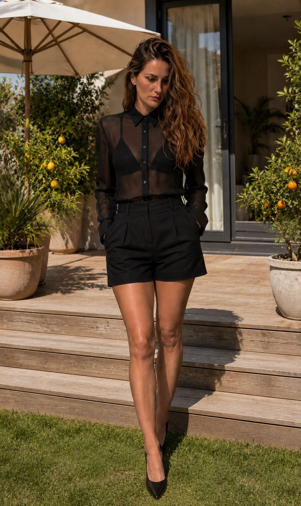
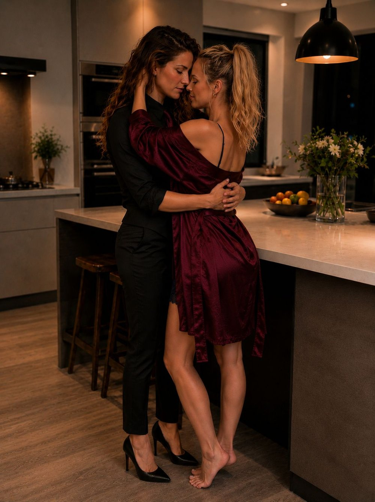
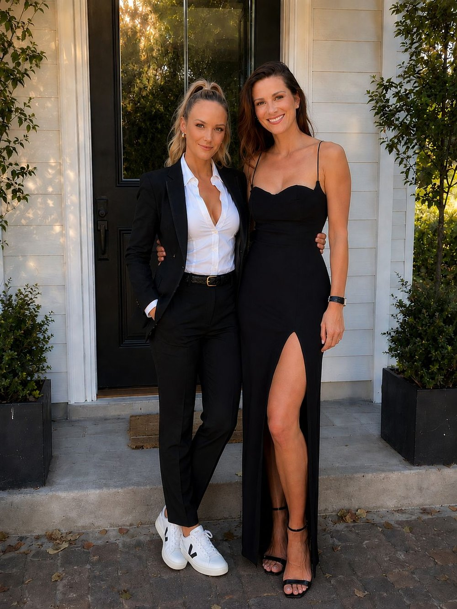

Andrea DeLuca had moved to Seattle with his mother when he was seven years old. His older sister, Carina, had stayed behind in Catania, Sicily, with their father. Their father had wanted to keep one of their two children, and the dark-haired girl, wanting to protect her brother, had decided on her own—at the age of nine—to let him go with their mother. She stayed behind. In that country, on that island where he was born.
So Andrea started school at just seven years old. New country, new city, new school. Everything was new to him. When he arrived in his new classroom, he was surprised to see that here, students were seated in alphabetical order. The previous year, he’d been allowed to sit next to his best friend. On top of that, here the desks were arranged one by one. And to top it all off, his entire class was a year younger than him. A problem with his enrollment. So he’d started first grade.
He sat down in the seat the teacher had assigned him. The classroom wasn’t full yet. He rested his hands on his desk before resting his chin on them, swinging his legs.
However, after several minutes, he felt someone staring at him. He turned his head and furrowed his brow.
“Why are you looking at me?” he asked the blonde girl who was still staring at him.
“I thought you were a girl.”
Andrea gave her a dirty look.
- “I don’t look like a girl!”
- “There was an Andrea in my class last year. I thought it was a girl’s name.”
- “No! It’s a name for both genders!”
- “Unisex?” Maya asked. But she didn’t let him answer:
“Why are you talking like that?”
- "Funny?" Andrea asked, not quite sure he understood.
- "You're saying the words in a weird way."
- "I'm from Italy."
- "Where's that?"
- "Hmmmm, on the other side of the Atlantic."
- "Near New York?"
- "No way! Are you stupid or something? It's in Europe!"
- "You're the one who's stupid with your stupid accent!" Maya replied, crossing her arms and turning to face the blackboard.
But despite that first encounter, they had become best friends. Maybe because they were the two fastest runners on the sports team. Maybe because Andrea had started telling Maya about Europe, and in return, she’d told him about Seattle and what she knew about the United States. Maybe even because Andrea would trade his lunchbox with Maya—since she wanted to eat Italian food and he wanted to eat American food. Whatever the reason, they’d become best friends.
They’d become such best friends that they spent all their time together. They’d become as inseparable as twins.
They had even kissed on the mouth once—she was eleven and he was twelve—before pulling away, coughing, as if they were about to throw up. They had wanted to make sure they saw each other as brother and sister and nothing more—in response to the taunts of their classmates, who called them “the lovers.” But no, there was nothing romantic between them. And in the end, they didn’t care what others thought.
Every year, Andrea and Lucia—his mother—returned to Catania for Christmas to spend it with Carina and their family. In addition, Andrea would come to Sicily for three weeks in the summer to visit his father, and his sister would then come for three weeks of her own. However, she had never met Maya, who went to sports camp every summer—her father having spotted the makings of a champion in her.
As a result, over the thirteen years that followed, Maya and Carina had never met.
Moreover, since the year she turned eighteen, tensions had been rising between Maya and her father. In fact, the young woman had told her father of her desire to stop going to summer training camp. And, for that matter, to even cut back on running—the very thing she excelled at. This had not been to his liking.
But Maya’s response? “I’m eighteen now; you no longer have the right to tell me what to do.”
A huge argument ensued, and ever since she turned eighteen, Maya had been spending more time at Lucia and Andrea’s house than at her own parents’ home. Fortunately, the Italian mother was a lovely woman who couldn’t say no to her son. What’s more, she’d known Maya from the very beginning, because back in October, when Andrea had celebrated his seventh birthday—since they were actually only ten months apart in age and Andrea had arrived in Seattle the year he turned seven—Maya had been the only classmate to come to his birthday party.
In the end, perhaps that was when they had become best friends.
This summer, however, that was about to change. Carina had applied to the University of Washington. She had taken the MCAT—the Medical College Admission Test—during her junior year of college in Italy—a highly selective exam that she had passed with flying colors. And her dream? To study medicine in Seattle, where her brother and mother lived. At UW, the University of Washington.
And at nearly twenty-two years old, the Italian woman hadn’t waited for her brother to come that summer—and two weeks after finishing her senior year of college in biology—in early June, she had come straight to Seattle. She could have enjoyed one last summer with her friends in Sicily, but she’d decided that two weeks were enough, and that she wanted to arrive in her new city as soon as possible.
The doorbell rang at the DeLucas’ house—the ones in Seattle—because, in fact, Lucia had kept her married name from her time with Vincenzo. She wanted to keep the same last name as her children.
- “I’ll get it!” said a voice from inside the house.
The door opened—almost in slow motion—and the same voice laughed at the response she’d received from inside the house, then turned to face the person who’d rung the doorbell.
Her smile gradually faded—also in slow motion—and the opening notes of “Tainted Love,” the Marilyn Manson version, echoed in Maya’s mind.
As she still held the doorknob, her eyes fell—as if in “stages” to the rhythm of the song—on the figure standing before her.
Long, wavy hair—swept to one side of his face. Thick black glasses. A slight pout. A white shirt open down to his chest—with gold chains of varying lengths visible around her neck—the sleeves rolled up to her forearms. Black fitted pants; and black heeled ankle boots. Her hand resting on a huge suitcase—and several others behind it.
Maya swallowed as she looked up at that face. A face she’d never seen in person—and yet one that wasn’t unfamiliar to her.
The brunette standing before her—with her undeniable poise and sophisticated air—had grabbed the arm of her sunglasses. She slid them down onto her nose.
“Am I at the DeLucas’?”
- “Mm-hmm,” replied the blonde, her voice cracking.
- “Can I come in, or are you going to stand there staring at me all day?” snapped the lilting voice of the most elegant woman Maya had ever met.
- “Y-y-yes, s-s-sorry!”
She had stepped aside—red as a lobster—and Carina had entered the house, pulling her suitcase behind her.
At that very moment, Andrea appeared.
- “That was—” he began questioningly, before freezing.
“Carinaaaaa!!” he exclaimed, happy as a prince.
The Italian girl had dropped her suitcase, and a radiant smile lit up her face.
He had swept her into his arms—lifting her off the ground—and started spinning her around, while she hugged him back.
- “Andreaaa ! Ahahah, mettimi giù !” [Andreaaa! Hahaha, put me down!]
He complied, and they looked at each other before embracing once more and chatting away rapidly in Italian. Maya stood frozen, watching them.
Of course, she had already seen photos of Carina. But she had no idea she would be even more beautiful in person. She had assumed the photos must have been filtered.
“Why didn’t you tell us you were coming at this time? We would have come to pick you up!” said the young man, holding out his hand to his best friend—but addressing his sister.
“You…” Carina asked before turning her head toward Maya.
“Is that your girlfriend?”
They both grimaced.
- “No way! That’s Maya!”
- "Il brutto anatroccolo si è trasformato in un cigno..." [The ugly duckling turned into a swan...]
- "Smettila ! Avevamo tredici anni in quella foto !" [Stop it! We were thirteen in that photo!]
- "Non hai che da pubblicare foto sui social. Sii normale. E potresti cambiare la foto di voi due nella tua camera !" [You shouldn’t post photos on social media. Just be normal. And you could change the photo of the two of you in your room!]
- “Is that your luggage?”
- "Yes. I had to pick out what clothes to bring, and I already paid a fortune for checked luggage!"
Maya was still staring at Carina.
- "I’ll bring them in for you!" Andrea said.
He walked past Maya and nudged her with his shoulder to “wake her up.”
"Will you help me?"
So Maya helped Andrea bring Carina’s suitcases inside.
“Want something to drink?” the young man asked once the door was closed.
- “Coffee, please,” Carina replied.
- “Go to the living room; I’ll be right there.”
Maya had started to follow him, but Carina grabbed her arm.
- “He said he’d be right there. And that we should go to the living room,” she said, sounding a bit bossy.
The blonde had looked at her best friend, widening her eyes—but he had smiled at her. A Machiavellian smile.
They went to sit in the living room. Carina in an armchair and Maya on the couch. The blonde was staring at the table, and the brunette let her eyes wander over her body. It must be said that Maya and Andrea had been at the pool before Carina arrived. So she was wearing shorts and a swimsuit top.
“Were you swimming?”
Maya looked up at her. Fear was evident in her eyes.
“Huh?” she asked in a nearly inaudible voice.
- “The swimsuits…” Carina said, raising an eyebrow and pointing at Maya’s outfit with her sunglasses.
- “Oh… Um… Um, yeah, we… We… We were in… Well, in the pool.”
- “Cool.”
Maya looked away again.
"You’re Maya, right?"
The blonde blushed. Why did hearing her name from the lips of this stunning, stunning woman make her blush so much?
- “Um—” she said before clearing her throat.
"Yes."
The Italian woman had given a slight smile—her first one directed at Maya—and the blonde had immediately lowered her eyes. Thank goodness she was wearing so little, because otherwise she’d be dying of heat just because this woman was looking at her.
Andrea arrived with a tray. Two iced coffees, an espresso, and some pastries.
- “Ugh… How can you call yourself Italian…” said the brunette with a look of disgust on her face when she saw her brother’s drink.
- “Actually… it’s good. I’m sure you’d like it. And let me remind you that I’ve been living here for thirteen years?”
- “Yeah, right… That’s your excuse…”
They’d started chatting—well, mostly Carina and Andrea—since Maya preferred to stare at her drink, or at the Italian girl, and respond with the shortest possible words. Or by stuttering.
After nearly an hour, the brunette leaned forward, resting her elbows on her knees.
"Dai Andrea, ammettilo... Cosa succede tra voi ? Non vorrai farmi credere che mamma vi lascia dormire insieme da non so quanti anni, e che non siete mai andati a letto insieme ?!" [Come on, Andrea, admit it... What’s going on between you two? You’re not going to make me believe that Mom’s let you sleep together for I don’t know how many years—and that you’ve never slept together?!]
- “No, promesso, siamo solo migliori amici !” [No, I promise, we’re just best friends!]
- "E non ci hai mai provato ?" [And you've never tried anything?]
- "No, provarci con lei sarebbe come provarci con te." [No, trying with her would be like trying with you.]
- "Non so davvero come fai. È chiaro che nemmeno con me dormirebbe nella vasca da bagno... Ma io non avrei il tuo autocontrollo..." [I really don’t know how you do it. It’s clear she wouldn’t sleep in the bathtub with me either… But I wouldn’t have your self-control…]
- "È lesbica." [She’s a lesbian.]
- "Minchia... Vittoria per la mia squadra. Ha il culo più bello che abbia mai visto. È troppo sexy." [Damn... Victory for my side. She’s got the best ass I’ve ever seen. She’s so hot.] Carina had spoken without taking her eyes off the blonde. The blonde, who was still just as red-faced.
- “Forse dovrei precisare che parla italiano...” [Maybe I should point out that she’s speaking Italian...] Andrea replied.
Carina had given a sidelong smile. She had let her gaze drift down to Maya’s body—before looking back up at her face.
- “Perfetto. So gemere solo in italiano.” [Perfect. I only know how to moan in Italian.]
The blonde swallowed—choking on her own saliva—and started coughing. She then cleared her throat and didn’t dare meet the Italian woman’s gaze again.
“Sorry… I didn’t mean to make you choke because of me,” replied the Sicilian, her smile widening to one side.
- “N-n-no, no problem.”
The brunette let her gaze drift down to Maya once more.
- “Can you stop looking at her like that? It’s too… weird,” Andrea said, grimacing.
- “Cosa?! I’m sizing up the competition.”
- “The competition?”
- "She took my place as your sister..."
- “You don’t really look at her as if she were a rival…”
- “Non so davvero come tu possa essere solo amico di una ragazza così sexy.” [I really don’t know how you can just be friends with a girl this sexy.]
- "Carina! She’s speaking Italian!" Andrea exclaimed, embarrassed, almost shouting—almost disgusted to hear his sister speak that way.
- "Oops... Sorry, not sorry."
Carina had grabbed her purse. She’d pulled out a pack of Vogue, taken out a cigarette, and lit it.
And once again, watching her bring the cigarette to her lips, then the lighter to light it—Maya heard “Tainted Love” playing in her head.
She’d never liked cigarettes, but seeing Carina smoke was probably the sexiest thing she’d ever seen. Why did this young woman have to make something so harmful look so hot? She’d thought to herself then that if the tobacco industry put a photo of Carina with a cigarette in her hand—or to her lips—on their packs, it would probably send the smoking rate on Earth skyrocketing.
- “Carina! We don’t smoke inside the house!” Andrea said.
- “Where do you smoke?”
- "First of all, you're not supposed to smoke here. And second, you could have gone out to the garden!"
The brunette had stood up. In the most graceful way imaginable, she began to walk toward the French door.
She paused, turning back toward the two best friends.
- “Are you going to let me go outside alone?”
They stood up and went out into the garden. Maya let her eyes fall on the Italian woman’s figure—why did she have to be so striking?
They had settled into the garden. Carina had leaned back in her chair, one leg crossed over the other, her elbow resting on the armrest, her cigarette held aloft. Her sunglasses were back on her nose.
And with that song still stuck in her head, Maya had watched the Sicilian woman’s figure, her posture, and her undeniable class.
Carina had lowered her gaze toward Maya, then flashed a sly smile. She’d then brought the cigarette to her mouth and, while staring at Maya, had taken a deep drag.
She then moistened her lips before exhaling the smoke. She unfolded her legs, leaning forward toward the blonde, her elbow resting on her thigh, her hand holding the cigarette out toward Maya.
“Want one?”
- “We don’t smoke, I told you,” Andrea said to her sister a little curtly.
Carina had settled back into the seat.
“Are you her father?”
- “No. I don’t want her to start smoking because of Medusa.”
Carina let out a soft laugh.
- “Is that what you call me—Medusa?”
- “Sai benissimo cosa stai facendo.” [You know exactly what you’re doing.] Andrea replied, a touch accusingly.
- “Parla italiano...” [She speaks Italian...] Carina replied before bringing her cigarette back to her mouth.
- “Since when have you been smoking, anyway?!”
- “Since college. I only smoke occasionally… mostly at parties. I’m not a heavy smoker.”
- “And why did you feel the need to smoke right now?”
- “Because I had a long flight. I felt like it. That’s all.”
She rested her elbow on the armrest.
"So, what are we doing tonight? Mom told me she was working."
- “Um… Well, we don’t really have anything planned.”
- “Don’t tell me you’re like those two kids in the movies who don’t have any friends besides each other?!” asked the brunette, holding her cigarette between her index and middle fingers; she then pushed her glasses down by holding “one of the lenses” between her thumb and ring finger to look at them.
- “We have friends. There’s a party, but we hadn’t planned on going.”
- “What, were you planning to play Dungeons & Dragons?”
- “It’s Dungeons & Dragons. And no, we were just planning to hang out there.”
Carina sank back into her chair, pushing her glasses back up onto her nose.
- “Sì, certo, voi due non scopate insieme !” [Yeah, right, you two aren’t sleeping together!]
- “No!” Maya blurted out, surprising Carina and Andrea.
The Italian girl broke into a huge smile.
- “She’s talking!”
Maya shot a dirty look at Carina, who was making fun of her.
- "We're going to Andy's tonight!" said the blonde, turning her head toward her best friend.
- “If you want,” Andrea said, shrugging.
He then turned his gaze toward Carina.
"That’s a ‘normal’ outfit."
The brunette looked down at her clothes before glancing at her brother, one eyebrow raised.
- “I don’t get it. I’m dressed normally.”
- “Carina, you’re wearing a blouse and tailored pants.”
- “So?” she asked, still unsure she understood.
- “You’re not in Italy…” he said, as if it were obvious to him. Then he searched for the right words:
“Dress like…” He narrowed his eyes as if to help her “see” what he was talking about:
"Like a tourist. You know, in Italy or back home... When you see tourists. Dress like that."
Carina grimaced, as if she were about to throw up—or as if she were disgusted.
- “But why on earth would I do something like that?!”
- “Nobody dresses like that here. You’re not in Italy anymore. Here you’ll see people in flip-flops and socks. You might even run into people in pajamas doing their grocery shopping… And even at the university…”
- “I came here to study. Not to undergo a tacky makeover. You guys can dress like Americans all you want—but I’m sticking with my Italian clothes.”
- “Could you at least wear… I don’t know… a little summer dress? So our friends don’t think you just got off work at a bank?”
- “I’ll see what I can do,” Carina said, making a dismissive gesture with her hand as if to say, “Whatever.”
The Italian woman had turned her head toward the pool.
"Mamma invested..."
- “No, it’s Maya and me—we worked hard and treated ourselves to a pool bigger than the one we had.”
The Italian woman turned her head toward the American woman.
- “Do you live here?” Carina asked the blonde.
Maya looked surprised.
- "Um... Um, no."
- "Maya and her dad don't really get along. So she's here a lot."
- “And your girlfriend...”
She then turned her face toward Maya, nodding her chin in her direction:
“And yours...” Then she looked back at her brother:
"Aren’t they jealous?"
- "Right now, we don’t have anyone."
- "What if you find someone?"
- “She’ll have to understand that Maya is my best friend.”
- “And I can sleep at my place,” said the blonde, as if she didn’t dare interrupt them—before swallowing hard.
- “You can always sleep in my room,” Carina said, raising her eyebrows sharply.
She had leaned forward to let her gaze wander down the blonde’s body:
“But I can’t promise to be as chivalrous as my little brother… Piccola…”
Maya's eyes widened, but she wasn't surprised anymore. She blushed deeply—feeling a wave of heat wash over her.
“N-n-no, it’s… It’s fine.”
- “If you change your mind…” Carina replied, placing her hands on the armrests and standing up.
Then she turned her gaze toward Andrea.
“Is my room still… my room?”
- “Yes.”
- "Okay, I’m going to take my suitcase upstairs and take a shower."
As she said that last part, she felt Maya’s gaze lift toward her.
Carina looked back at her and winked at her.
- "Take whatever you need, and I’ll bring your things up later."
While Carina was in the shower, Andrea—with Maya’s help—had taken her sister’s luggage upstairs. Then they came back down.
“I’m sorry about my sister’s behavior… I shouldn’t have told her you were a lesbian.”
- “And I’m even more sorry!!” said the blonde, embarrassed.
“Oh my God, what was I thinking?!” she asked—blushing again.
- “I know she’s beautiful. And she knows she’s beautiful. And she knows exactly what she’s doing. Don’t let her fool you.”
- “She’s your sister. There’s no way. That would be too… weird,” she replied, furrowing her brow as if the idea were ridiculous.
Andrea had glanced at her sideways but hadn’t said anything. Not about that, at least.
"Want to go to the pool?"
- “Absolutely!” Maya said, sounding almost too happy.
Andrea gave a mischievous smile.
- “Oh yeah… You need to cool off because my sister gave you hot flashes!” He started laughing and running, and the blonde just missed him as she tried to hit him.
- “You little jerk!” she said, chasing him through the house, both of them laughing.
He’d run all the way to the backyard and dived into the pool—jumping over the tubes that held up the inflatable pool—leaping like a dolphin.
The blonde girl had once again just missed him. She had climbed up the ladder and dived in after him. Then they’d started splashing each other in the pool.
Carina—stepping out of the shower—had leaned her head toward the window when she heard them laughing from outside, splashing each other. Hearing Maya’s laughter, she’d given a little sideways smile.
She went to her room, put on some clothes, and went downstairs.
Maya had pushed Andrea’s head underwater—laughing hysterically—and her arms had gradually relaxed as she watched Carina emerge slowly from the house.
Carina, in a two-piece swimsuit, as sexy as it was tiny. Black. Showing off her tan. Her hair, still damp, swept once again to one side of her face. Perched in shoes with chunky square heels, her feet held in place by gold straps. And her sunglasses back in place.
She’d seen her arrive on the terrace in slow motion, still set to that damn music. The Sicilian woman had come down the steps, and Andrea had emerged from the water.
- “Do you ever—”
He’d turned around and looked in the same direction as Maya.
“Stop drooling! That’s my sister!” the young man said—disgusted.
Carina, a book in one hand and a towel in the other, had come to settle into one of the lounge chairs. Her lips slightly pouted. Stunning.
- “Can someone put some sunscreen on me?” asked the Sicilian girl.
- “Stop it! You’re already tanned! You’re doing this on purpose!”
- “On purpose—what?”
- “You want Maya to come put some on you!”
- “Come on, Andrea,” Carina replied, raising an eyebrow.
He turned his head toward his best friend.
"I'm saving your life here!"
He had gotten out of the pool and walked over to his sister. He wiped his hands on his towel before holding one out to Carina to take the lotion.
He spread it on her before whispering to his sister:
"Stop it, you’re going to scare her away, and her dad’s a jerk!"
Carina turned her head toward her brother.
- “So that makes two things we have in common!”
- “Stop it! Dad isn’t an idiot!”
- “It’s obvious you haven’t lived with him, all by yourself, for thirteen years.”
- “Okay… Is that it?!” he said after rubbing lotion on his sister’s back.
She snatched the tube away a little roughly.
- "Anyway, you weren't the one I wanted!"
He’d gone back to swimming, and after several dozen minutes, Maya had come and leaned against the edge of the pool. She’d draped her arms over the edge, closing her eyes slightly—as if she wanted to enjoy the sun caressing her skin.
But in reality, with her eyes slightly narrowed, she was staring at the Italian girl’s body. Meanwhile, Andrea was lying on a pool float with his eyes closed.
Carina was lying on her back, one leg slightly raised, her torso tilted upward as well due to the angle of the lounge chair. She had her sunglasses on.
My God… She’s so beautiful. She’s stunning. I understand why Andrea called her Medusa… As soon as I look at her, I freeze.
After watching her for several minutes, Maya saw Carina’s hand move toward her face, but she didn’t expect what happened next. The Italian girl held the arm of her glasses between her index finger and thumb—lifting her sunglasses—and winked at her with a smile.
Maya had immediately turned away. Red. Completely red.
Damn it! Shit! How long has she been watching me?! Damn glasses! Why did the lenses have to be like that?! Gosh, she might have been watching me stare at her for a quarter of an hour! How embarrassing!
As the afternoon drew to a close, the Italian woman got up from her lounge chair. The blonde hadn’t dared turn back toward her for quite a while.
- “I’m going to get ready. Could we go grab a bite to eat somewhere before heading to your party?!”
- “Carina, it’s a party with people younger than you…” Andrea said.
- “So what? They’re your age, aren’t they?”
- “Yes.”
- “So who cares!” she said, shrugging her shoulders abruptly.
"As for the restaurant... It's on me."
She had gone up to her room, and Maya had been the first to take a shower.
The blonde had come out of the bathroom, ready to go, before Carina came downstairs. Then, while Maya was waiting downstairs, the Italian girl appeared.
When the Sicilian woman appeared on the staircase, the American woman’s heart skipped a beat. The brunette wore her hair straightened and a form-fitting black dress. Andrea had asked for a summer dress. Carina had clearly heard “dress.” The word “summer,” on the other hand, had probably fallen by the wayside. But it didn’t matter. She looked stunning.
And Maya had a feeling of déjà vu.
She felt as if she were watching Rachael Leigh Cook walk down the stairs in *She’s All That*… except that Carina had never been “the ugly girl.” And this time, it wasn’t “Tainted Love” that played in her mind, but “Kiss Me” by Sixpence None the Richer.
Well… that was before Carina set foot on the ground, without stumbling, unlike Laney Boggs. She then looked up at her, before stepping forward with the confidence of someone who’d just spotted her next prey.
And then…
“Kiss Me” had taken a monumental spinback.
The record had skidded backward. A split second later, “Tainted Love” was back in its place. Maya could have sworn she heard that screech right in the pit of her stomach.
Carina had pushed her lips forward slightly.
“I hope I’m not ‘too’ dressed up.” She narrowed her eyes slightly—as if searching for the right words:
“I don’t really have any appropriate clothes…”
She licked her lips.
“For… this country.”
- “You… You…” Maya cleared her throat.
"You look very beautiful... just like that."
Carina smiled slightly, then sucked her lower lip in slightly and bit it.
- “Thank you, piccola.”
She had come and sat down on the couch next to the blonde, and Maya had sat up straight, feeling slightly tense.
The Italian leaned in slightly toward her.
"You smell amazing," she said after taking a deep breath of Maya’s scent.
The blonde blushed.
- "Um, thanks."
Carina leaned toward her again. Her eyebrows furrowed, and she took another deep breath.
- “Really good,” she said, surprised.
"What is it?"
Maya swallowed.
- "Uh... Hmmmm... uh... A-a Another 13."
- “I love it,” replied the brunette, looking her in the eyes.
Then her gaze fell on Maya’s lips, before returning to her eyes.
"You're so beautiful..." she said in a voice that was genuinely unsettling.
“You don’t seem superficial…”
Maya swallowed hard. She was petrified by her very own Medusa.
Even though they’d only known each other for a few hours, Carina let her eyes drift back down to Maya’s mouth—and she leaned forward slightly. The blonde stood frozen before her. However, even before their lips could touch, Carina heard her brother running down the stairs. She straightened up, moistening her lips before biting the inside of her mouth—a slight “disgusted” smile playing on her lips.
Maya’s heart was racing. She was frozen. Her breathing was ragged.
“Shall we go?” Andrea said, appearing at the bottom of the stairs and clapping his hands.
Carina and Andrea exchanged desperate glances.
“No, seriously! Is this what you call ‘summer’?” asked the young man, at the same time as his sister, who had said to him:
- “Seriously, what’s with that outfit?!”
Andrea was wearing a baggy T-shirt, slightly too-long Bermuda shorts, socks pulled up high, and Crocs.
- “What?!” he asked, not quite sure he understood.
Carina grimaced.
- “You’re so American…”
She closed her eyes and grimaced before standing up. The blonde stood up as well. And Carina let her eyes fall on her body. Maya wasn’t dressed to the nines, but at least she was wearing jeans and a tank top.
The three of them had gone to a restaurant, and Andrea and Maya had sat next to each other, with Carina across from them. Across from the blonde.
They had started the meal, and the American was doing everything she could to avoid looking at the brunette across from her.
While Andrea was telling his sister about his first year of college, the Italian woman—all the while eating, as if nothing were happening—had extended her leg; and her foot had brushed against the inside of Maya’s ankle, slightly lifting the hem of her pants.
Maya froze. She even stopped chewing. But Carina, unfazed, carried on, making small talk with her brother. She moved her foot a little higher, brushing against the side of Maya’s calf.
The blonde started coughing, choking on her next bite.
The two Italians turned toward her, halting their conversation.
- “Are you okay?” Andrea asked.
- “Would you like a glass of water?” asked the brunette.
Maya shot her a slightly dark look, and as Andrea looked at her best friend, Carina gave her a small, sidelong smile, raising an eyebrow, and her foot returned to rest against the inside of Maya’s ankle. She took the water bottle and poured a little into Maya’s glass. Then she withdrew her foot.
They continued eating before Carina stood up, elegantly.
“I’m going to the restroom… Maya?”
The blonde looked up at Carina.
- “W-what?”
- “Don’t girls go to the bathroom together here?”
- “Um… I, well, I, I don’t… really feel like it. Um… Thanks.”
- “Are you sure?” asked the brunette, raising one eyebrow.
- “Sure.”
- "Peccato..."
The Italian girl had left, and Maya had watched her walk away, moving with grace.
- "Stop staring at her like that," Andrea said.
Maya slapped him on the arm.
- "Stop it!! I'm not checking her out!"
- "You're drooling..."
- “That’s nonsense!”
- "Can you explain to me why you can't string two words together without stuttering?"
- "She's doing it on purpose. Who at twenty-two dresses and carries themselves the way she does?"
- "It's not uncommon in Italy... And she's not even twenty-two yet..."
- “Should we really let her pay?” Maya asked, feeling annoyed.
- “Of course we should. She offered!”
The brunette had come back to sit down.
- “Dessert?”
- “No, I’m good,” replied the blonde—focusing on getting her words out in one go.
- “I’m good, too,” said Andrea.
The Italian woman had raised her hand elegantly, and the waitress had practically rushed over.
- “Y-yes?” she said, blushing.
Carina leaned on the edge of the table, a charming smile on her lips.
- “Could we… have the check, please?”
Her fingers traced the edge of the table.
“I’ll… I’ll be right back.”
She left and then came back.
- “I... I took your drink off the bill... It’s on me,” she said, setting down the check.
Carina had taken out her wallet. She had added the tip to the bill before handing it over along with her credit card.
The waitress returned a minute later, holding out the receipt to Carina for her signature. She took the receipt, then slid Carina’s credit card across the table with a piece of paper underneath—her phone number.
The Italian woman picked up everything. She looked at the number and then looked up at the waitress.
- “Thank you… Arizona.” She flashed her charming smile again.
The waitress bit her lip before backing away.
- “See you soon… Maybe…”
- “You’re unbelievable…” Andrea said.
Carina turned to her brother.
- "What?! I can't help it, I like blondes..." the brunette replied before glancing at Maya.
They eventually left the restaurant to go to Andy’s place.
Andrea was talking to some girls. Maya was talking to people she knew. And Carina... Carina was talking to girls, as if she were looking for her next conquest. However, every time she spoke to a girl, she would glance at Maya, as if trying to catch her attention.
The Italian girl had approached a pretty blonde. She’d started flirting with her, but she’d seen Maya watching them from across the room. So she’d done it on purpose; she’d leaned in and whispered in the young woman’s ear. And Maya? Maya hadn’t taken her eyes off them. So Carina had smiled.
She had excused herself and then headed over to her brother’s best friend. And Maya didn’t know why, but despite the noise. Despite the crowd. Despite the music, she had still heard that damn song.
She looked away—trying to pretend she hadn’t been staring at Carina for the past twenty minutes.
The brunette had walked up to her and leaned in close to her ear.
“Are you okay?”
- “I’m fine,” Maya replied without looking at her.
Carina smiled.
- “You’ve been looking at me for a while now…”
- “No.”
- "You’re a terrible liar… Why were you looking at me while I was talking to her? Is she your ex?"
- “No.”
- “No, she’s not your ex?”
- "No."
- "So it was because of her... or because of me... that you were jealous."
- "No one."
Carina smiled.
- "Can you form a longer sentence?"
- "Stop it," Maya said, turning her face away.
- “Will you dance with me?”
- “No.”
- “Why?”
- "I don't dance."
- “Come outside with me.”
- "Why?" Maya asked, furrowing her brow.
- "You're probably my brother's favorite person in the whole world. It's time I found out why..."
- “Later.”
The brunette had pinched the blonde’s tank top at her stomach.
- "Stop being such a grouch, piccola. We just met."
- “Okay, I’m coming,” the blonde replied, pulling her tank top out of the brunette’s hand.
They looked at each other, and Maya raised an eyebrow.
"Wait a minute..."
- “For you to lead the way… I don’t really know my way around the house…”
Maya stepped ahead, and the brunette leaned in close to the blonde’s ear so she could hear her.
"And this way I get to enjoy the view of your gorgeous ass..."
Maya put a hand behind her back to cover her butt, and Carina laughed.
They’d gone outside and found a spot to sit. Carina on a small bench and the blonde perched on the rim of a huge flowerpot—or rather, a shrub.
“I don’t bite… You can come sit with me.”
- “Yeah, sure…”
Carina smiled.
- “You’re not wrong…” She raised her eyebrows to emphasize her point.
“So… Do you want to be a paramedic? I mean… I know that here, a paramedic is the person who drives the ambulance, but… EMT, right?”
- "Firefighter."
The Italian girl smiled as she leaned forward; her eyes fell on Maya’s body.
- “You want to be a firefighter?!” She smiled.
"That’s sexy..."
She bit her lip.
"But why are you studying... to be an EMT?"
- “To… Um… Um… Be… Be better.”
- "Can I ask you a question? But don't take this the wrong way."
- "W-what?" asked the blonde, blushing.
- "Are you stuttering?"
- "No."
The Italian woman gave a wry smile.
- "Interesting..."
The brunette was about to say something else, but a voice cut them off.
- "Maya Bishop—the very woman I was looking for!"
Carina turned on the bench, one eyebrow raised, and looked at the woman approaching. Her gaze fell on her body—as if to size up the competition.
- “Yes?” Maya said.
- "I remember you promised me that the next time our paths crossed, I could... borrow you."
The Italian woman raised both eyebrows as if to say, “Who does this woman think she is?!”
She stood up from the bench and took a step forward.
- “Excuse me? We were in the middle of a conversation. It’s not exactly as if Maya were… available. If you want to… ‘borrow’ her, you’ll have to come back another time.”
The young woman turned to Carina, looking at her with disdain.
- “And who are you?!”
- “Getting to know this pretty blonde.”
- “Maya?!” asked the young woman—Charlotte.
- "She... She’s not... wrong... We... We were talking."
- “But who is that? I’ve never seen her before!” asked Charlotte—as if Carina wasn’t even there.
- "She’s my best friend’s sister."
So Maya really didn’t stutter when she wasn’t talking to Carina.
- “Oh, right, I see—you’re babysitting...”
- “E spero che la baby-sitter vada a letto con la persona che fa da baby-sitter, piuttosto che con il padre di famiglia, in quel caso...” [And I hope the babysitter sleeps with the kid she’s babysitting, rather than with the father in that case...] Carina replied; the blonde had turned bright red and frozen in place.
- “Uh… What did she say?! We speak English here, not Spanish.”
- “It’s… Italian,” Maya said in a voice that was a little too deep.
- “Yeah… It’s the same thing.”
- “Uh...”
The blonde had meant to say “not really,” but she realized it was a lost cause.
- "So are you coming, or are you staying there with..." She glanced down at Carina’s outfit—with disdain:
"Seriously, what is this outfit? Did you think you were at some fancy party or something?! This isn't Gossip Girl."
- “Sorry for having… style,” Carina replied in the same tone, looking down on her.
- “You call that style? You look like you just came from a business meeting.”
- “And you look like you came from a thrift store.”
- “My look is more like Maya’s than yours.”
- “Because Maya doesn’t have to try to be sexy. Even with a sack of potatoes on her back, she’d be irresistible… You…” She looked her up and down again:
“You could have at least tried.”
- “Are you just going to let her talk to me like that?!” Charlotte asked Maya.
- “You… Well, you kind of started this…”
- “Are you serious?!”
- “Well…”
- "You know what, Maya Bishop?! You can forget my number!" Charlotte said before turning on her heel.
- “Good! That’ll leave more room for mine!” replied the Italian girl.
Charlotte had just turned her head to give Carina a dirty look. Then the brunette looked at Maya.
"Seriously, is that the kind of girl you hook up with?!"
- "I didn't... I didn't—"
- “If I hadn’t been there, you wouldn’t have done it?!”
- “I don’t know—”
- “You’re gorgeous,” Carina cut her off, letting her gaze drift down her body as she moved a little closer.
"You could have anyone you want," she added, looking her in the eyes.
Maya swallowed, and the Italian girl whispered:
"Chi vuoi tu..." [Whoever you want...]
The blonde’s lips parted slightly, but just before a sound could escape her mouth, she was cut off by Andrea.
- “I’ve been looking for you two for ten minutes!”
The Italian woman took a step back, her nostrils flaring slightly as her jaw clenched.
- “Yes?” she asked, turning her head toward her brother.
- “No interesting girls, and I guess if you’re here, it’s because you haven’t found anything to satisfy you either...”
Stavo per darmi un po' di piacere... [I was about to satisfy myself...]
Carina ran her tongue over her front teeth.
- “So… what?”
- “How about we go home and watch a movie?”
- “Can Maya sit in the middle of the couch?” Carina asked.
Andrea frowned at the question.
- “Maya can sit wherever she wants.”
They’d decided to go, and once they arrived at the DeLucas’ house, they went upstairs to change into their pajamas. While the blonde grabbed her things to go change, the brunette walked into her brother’s bedroom and closed the door behind her.
“Hey! Don’t you know anything about privacy?!”
- “Tranquilla, sei a torso nudo, non è come se avessi visto il tuo uccellino-” [It’s fine, you’re topless—it’s not like I saw your little birdie—]
- “Non è piccolo !” [It’s not small!]
- “Come vuoi...” [Whatever…] Carina replied. She stepped closer to look her brother straight in the eyes.
"Mi giuri che non succede niente tra te e lei ?" [Do you swear nothing’s going on between you and her?]
He frowned.
- "Ma certo che no ! È la mia migliore amica !" [Of course not! She’s my best friend!]
- "E non sei tipo... Segretamente innamorato di lei ?!" [And you're not like... secretly in love with her?!]
- “No, smettila, no sarebbe troppo... Strano. Sarebbe come essere innamorato di te !” [No, stop it, no, that would be way too… weird. It’d be like being in love with you!]
- "Quindi non ci proverai mai ?" [So you’ll never make a move?]
He tilted his head back, his eyebrows furrowed.
- "Oh no Carina ! Ti vedo arrivare ! No, no, no. Non ci provi con lei. È la mia migliore amica. Non andare a fare qualcosa che mi costringa a scegliere tra voi due. Non ci proverò con lei. E nemmeno tu ! E poi qual è il tuo problema ? La conosci da dieci ore, e già la fai diventare la tua nuova preda ?! Vedi che è turbata, e tu ne approfitti !" [Oh no, Carina! I know what you're up to! No, no, no. You're not hitting on her. She's my best friend. Don't do anything that would make me have to choose between the two of you. I’m not going to hit on her. And neither are you! Besides, what’s your problem? You’ve known her for ten hours, and that’s it—you’re already making her your new conquest?! You can see she’s flustered, and you’re taking advantage of it!]
- “E allora ? Dieci ore o dieci anni, è sexy. E tu forse hai la merda negli occhi, ma io no. È super sexy.” [So what? Ten hours or ten years—she’s hot. And maybe you’ve got crap in your eyes, but I don’t. She’s super sexy.]
- “Sì insomma siete tutti e due dei tipi da scopate e basta. Cos'è, te la fai e poi ciao, passi ad altro ? Non ho voglia che le cose diventino... strane...” [Yeah, well, you’re both into hookups. What’s the deal—you’re going to sleep with her and then that’s it, you’ll move on? I don’t want things to get… weird…]
- "Appunto. Ragione di più... se siamo tutte e due tipe da scopate e basta, non vedo il problema. Non è come se volessi rubarti la tua migliore amica. E non deve per forza essere strano. Credi che sarebbe la prima amica con cui vado a letto ?" [Exactly. All the more reason… if we’re both just looking for hookups, I don’t see the problem. It’s not like I’m going to steal your best friend. And it doesn’t have to be weird. Do you think she’d be the first friend I’ve ever slept with?]
- "Appunto ! Non è la « tua » amica. È la mia migliore amica" [Exactly! She’s not “your” friend. She’s my best friend]
- "Giochi con le parole" [You’re splitting hairs]
- "Ci sono circa quarantamila donne dai diciotto ai ventiquattro anni a Seattle, e tu sei qui da dieci ore. Non potresti trovarti un altro bersaglio che non sia qualcuno che praticamente vive in questa casa ?!" [There are about forty thousand women between the ages of eighteen and twenty-four in Seattle, and you’ve been here for ten hours. Couldn’t you find a different target than someone who practically lives in this house?!]
- "Va bene, va bene ! Non toccherò la tua preziosa Maya !" [Okay, okay! I won’t lay a finger on your precious Maya!]
- "Grazie!"
- "Ma solo se lei smette di guardarmi come se mi vedesse nuda, ogni volta che le passo davanti. Ho l'impressione che « I'll Make Love to You » dei Boyz II Men suoni nella sua testa ogni volta che mi vede. Mi fissa come se si stesse facendo dei film." [But only if she stops looking at me as if she can see me naked every time I walk past her. I feel like "I'll Make Love to You" by Boyz II Men is playing in her head the moment she sees me. She stares at me like she's imagining all kinds of things.]
- "Sei sicura che non sia tu ad avere quella canzone in testa quando la vedi ?" [Are you sure it’s not you who has that song stuck in your head when you see her?]
- "Ma va..." [That’s ridiculous...]
- "Quindi se lei continua... Ricomincerai a provarci ?" [So if she keeps it up... will you start hitting on her again?]
- "Sì."
Andrea let out a sigh.
- "Okay,... I guess that’s just..." Andrea replied, desperate but realizing he didn’t necessarily have a better option.
The Italian woman had left the bedroom. And Maya had opened the bathroom door at that very moment.
Carina stopped short, her gaze falling on Maya’s body—Maya was wearing a tight tank top and mini shorts.
- "Hmmmm... Hummm... Non sarà facile." [Hmmmm... This isn’t going to be easy.]
Maya frowned, and Carina headed back to her room—as if nothing had happened.
Five minutes later, they met downstairs. Maya was sitting on the couch, phone in hand, and Carina glanced toward the kitchen.
- “He… He’s making… popcorn.”
- “Sweet, I hope…” replied the Italian girl—more to herself—and she saw Maya flash a smile.
Carina sucked on her lower lip before biting down on it. She was still standing near the couch. She’d stepped forward and pointed at the chaise longue.
“Can I sit there?”
- “You… You’re at home here…”
- “I don’t know how you and Andrea usually sit.”
- “You… You can.”
- “And won’t that police officer over there say anything if you and I sit next to each other?”
- "Um... Um... No?"
Carina gave a slight smile, then sat down.
- "Is that a question?"
- "I..."
The Italian woman settled in, her shoulder practically pressed against Maya’s.
The blonde’s eyes had fallen on the Sicilian woman’s cleavage. Then on her bare thighs.
Carina pinched her tank top at her stomach and pulled on it slightly.
- “It’s hot, isn’t it?”
- “Hmm?!” Maya said, her voice slightly sultry.
Carina smiled.
- “Parli davvero italiano... O lo capisci soltanto ?” [Do you actually speak Italian… or do you just understand it?]
- “Io... Io lo... Parlo” [I… I… speak it]
- “Shh!” said the brunette, suddenly raising her hand.
- "W-what?"
- “You just got even sexier in three words. And I promised my brother I’d leave you alone.”
- “Oh?” Maya said, surprised—almost… disappointed.
- "Unless you don't want me to leave you alone."
- “Um—”
- “So, have you guys picked a movie yet?” Andrea asked, cutting Maya off.
- "Um... No," replied the blonde, surprised, her cheeks a little red.
- “You’re taking advantage!”
Carina had gracefully moved her legs to the side, causing them to fall off the chaise longue, and she had leaned forward to grab the remote. The blonde couldn’t help but let her eyes drift down to the Sicilian girl’s lower back when her tank top rode up.
The Italian woman had come back to sit next to Maya and had almost leaned against her.
“Sorry!” the Italian woman said before shifting over.
She searched for a movie before turning to Maya and Andrea.
“How about *She’s All That*?”
Maya froze and blushed, wondering if Carina had read her mind. And Andrea grimaced.
- “Don’t you have something less… girly?”
- “Yes, and well chosen!” replied the brunette, handing the remote to her brother.
- “No dai tranquilla, mettiti questa !” [No, go ahead, it’s fine—put that on!]
- “No. Non volevi !” [No. You didn’t want to!]
- “No ma tranquilla.” [No, really, it’s fine.]
Maya had looked from one to the other in turn, like a game of ping-pong—then they both turned to her:
“Maya?!”
- “W-w-what?!” she said, surprised.
- "You decide!" Andrea replied.
The blonde looked at her best friend. Then at Carina. And the brunette’s gaze was so intense that she had no other choice.
- “This… This… This movie.”
Strictly speaking, it was the movie Carina had chosen, even though she wasn’t in the mood for it anymore because of her brother.
Andrea had “violently” snatched the remote and started the movie. Carina then sank back into the couch, arms crossed.
The movie started, with Andrea—who had already forgotten all about it—munching on his popcorn. Carina sat there with her eyebrows furrowed and her arms crossed. And Maya sat between them, feeling awkward.
The Italian woman had finally lifted one of her legs and was stroking her shin with her foot. The blonde took her eyes off the screen and looked at Carina’s foot. Of course, this happened just before Laney came down the stairs. The song “Kiss Me” had started, and the blonde let her eyes drift back up Carina’s legs.
The brunette uncrossed her arms and felt her breathing grow a little heavier. Her gaze turned toward Maya, and she watched as Maya’s profile looked back at her.
Maya’s eyes had drifted a little higher. And Andrea had cut her off mid-thought.
“Seriously, this is crazy—of course she’s way too beautiful in real life!!”
The blonde jumped and turned her head toward the screen, her heart pounding.
- “She’s not ugly… But I prefer blondes,” Carina replied.
The American girl swallowed hard. And Andrea, for his part, grabbed a piece of popcorn and threw it at her.
"What?! It’s the truth. I like all kinds of women. But I prefer blondes."
She reached her arm over Maya to grab the bowl.
“And don’t keep all the popcorn for yourself!”
Her hand had stopped right in front of the blonde.
"Popcorn, piccola?"
- "Um..." She cleared her throat.
"N-no, thanks."
- “I understand you’re quite the athlete. But you can treat yourself… You’ve got plenty of room to spare,” she said, looking at her and then openly glancing down at the blonde—making her blush.
- “Car’!” Andrea interrupted them in a firm voice.
- “Cosa ?! Non ho detto niente ! Non è mica... Rimorchiare. È muscolosa. Ha ancora un bel margine prima di non riuscire più ad alzare una gamba per correre !” [What?! I didn’t say anything! That’s not… flirting. She’s muscular. She’s got plenty of room to spare before she can’t even lift a leg to run!] she replied as if trying to justify herself, after being caught red-handed.
Then she leaned forward toward Maya to speak in her ear.
"But if you want to burn off some energy... You know where to find me..."
Maya’s eyes widened, and Andrea furrowed his brow.
- “What did you say?!”
- “That’s none of your business. It’s between Maya and me!”
Andrea stood up, motioning for Maya to move over, and stepped between them.
- “Well, now I’m the one between Maya and you!”
He grabbed a handful of popcorn, and before putting it in his mouth, he added:
"I'll find out what you told her anyway."
- "I said I’d be willing to help her get rid of..."
Andrea started coughing, choking on the popcorn that had gone down the wrong way.
- "Carina!!" he exclaimed between coughing fits.
- “It’s okay! It’s okay! I was just joking,” she replied defensively before setting down the bowl and crossing her arms again, shifting her hips back a little on the couch so she could rest the back of her head against the backrest.
Then, little by little, her head had come to rest on Andrea’s shoulder.
"Sono contenta di essere qui. Mi eri mancato." [I’m glad to be here. I missed you.] the Italian girl finally whispered to her brother after several minutes.
So Andrea moved his arm and hugged his sister.
- “Me too.”
And as the movie continued on the screen, Carina—her head still resting on her brother’s shoulder—began to look at Maya’s legs, whose feet were resting on the table. Her legs were white—but muscular. And she couldn’t help but wonder if touching Maya would feel like touching white marble.
But after a few minutes in that position, jet lag caught up with her, and Carina fell asleep on her brother’s shoulder.
When she could feel her deep breathing, Andrea discreetly nudged Maya with his elbow to get her to look. The blonde leaned forward and couldn’t help but let out a slightly longer exhale—her shoulders slumping.
Carina was lit only by the TV screen. Her lips were slightly parted, and she looked peaceful.
How can she be even more beautiful like this? I want to run my thumb over her lips… And kiss her. She must be such a great kisser. I think she was actually about to do it just a moment ago… Kiss me… Then… Earlier, too.
Maya had felt her best friend’s gaze on her face and had sat up straight again. Still, her mind couldn’t help but wander.
What’s this promise I made to Andrea? Do I want her to keep that promise? And why can’t I get a word out when she’s around?! Damn it, I look like an idiot. Yeah, sure, she’s beautiful. But I’ve seen beautiful girls before. And besides, I’d already seen her… In a photo…
Okay, yeah, she’s prettier than in the photo. But the photo didn’t capture her charisma. Her charm. And she’s doing it on purpose. She’s deliberately making me… uncomfortable. She’s playing games. She’s probably playing games. She’s three years older—there’s no way she’s really interested in me.
Yeah, that’s it. She’s toying with me because she can tell she’s making me nervous. And besides, I can’t think of her that way—she’s Andrea’s sister. It’s almost as if she were my sister… A sister I just met. A super-sexy sister… A sister I can’t string three words together with without stuttering… But she’s so—
Andrea interrupted Maya’s train of thought by placing his hand on her thigh.
“You’re going to cause an earthquake the way you’re moving your leg!” he said, frowning as he looked at his best friend.
“And since when do you bite your nails?”
The blonde paused before pulling her fingers away from her lips, looking at them, and finally lowering her hand.
He watched her, raising his eyebrows—as if waiting for an answer.
- “I… I’m a little stressed. It feels weird—this is the first year I’m not at training camp… Do you think I made the right choice?”
She turned her face toward him as she said that last part—and her eyes drifted down to Carina’s legs on the chaise longue.
- “You made the right decision. Your dad needs to understand that you’re not a machine. And I’m sure you’ll still make the team for the Games. You can enjoy a summer off, can’t you?”
- “Hmm,” Maya replied.
- “But is that really what’s bothering you? Because before my sister showed up… you didn’t seem to care… Not for the past ten months.”
- “It’s just that… I’m supposed to be there right now…”
- “If you’re worried that my sister will keep you from training, don’t worry—I told her you’re off-limits.”
- “F-for what?” the blonde asked.
Andrea had locked eyes with Maya, and he raised an eyebrow, as if to say, “Are you serious?!”
"Stop it, she’s just messing around… I—I’m sure that… that she’s not into me. Did you see her?"
- “I saw it. And even though I only see her two and a half months a year, I know her. I know her well enough to know you’re wrong. I’m not saying it’s serious—she’s just like you in that regard—but you’re her type.”
Despite herself, Maya felt her cheeks grow warm. Thank goodness they were in the dark.
"But don't worry. She's not going to jump all over you. She should actually... pretty much leave you alone."
- “Hmm,” Maya said with an almost sales-y smile.
I’m not sure I want to either...
Andrea had turned his face toward the TV.
- “Besides, it would be way too weird. You’re my sisters. Both of you.”
Maya took a deep breath and clenched her jaw.
Andrea leaned toward her.
“I hope the three of us will become a family, just like you and me, and me and her.”
Instead of answering, Maya had placed her hand on her best friend’s forearm and stroked it with her thumb.
The next day, when Carina came downstairs—even though her brother had carried her to bed the night before—Maya was standing at the stove making pancakes.
The Italian girl’s eyes fell on the blonde’s back. She was wearing a tank top, slightly loose across her shoulder blades, which left room to admire her muscles. She was wearing denim shorts—already dressed.
- “Cazzo… Cazzo... Viva l'estate...” [Damn… Long live summer…] Carina murmured to herself.
She’d given a slight smirk and decided to sneak up behind Maya. She’d approached, but just as her hands were about to rest on either side of the blonde, a voice had startled her.
- “Hi, sis!”
Carina’s arms dropped to her sides and she stiffened—Maya turned around and recoiled slightly when she saw the Italian girl so close to her.
- “Ciao, Andrea,” she said, looking Maya in the eyes—boredom in her voice.
Then she adopted a more sensual tone.
“Ciao, Maya…” She gave a slight smile, then whispered—so that only the blonde could hear:
“Ho sognato di te...” [I dreamed of you...]
Her gaze fell on Maya’s mouth, and she saw the blonde part her lips slightly as she exhaled.
- “What did you say, again?” asked the young man behind her.
- “Niente!” [Nothing!]
- “Yeah, right, I saw your lips move. And Maya looks like she’s waiting for her reboot.”
- “Si è bloccata perché invado il suo spazio vitale... Non è vero, piccola ?” [She froze because I invaded her personal space… Right, piccola?]
- “Mm-hmm,” Maya said without moving.
- “Oppure pensa che stiamo giocando a un, due, tre, stella.” [Or maybe she thinks we’re playing ‘One, Two, Three, Sun.’]
Then she whispered:
"Non è il gioco a cui vorrei giocare con te, però..." [Not the game I’d like to play with you, though...]
- "Carina!"
- "Ma cosaaa ?!" [What the heck?!] she said, turning toward her brother.
"Le sto chiedendo perché è già vestita così di buon mattino !" [I’m asking her why she’s already dressed this early in the morning!]
- “She went for a run, took a shower, and kindly offered to make you your first American-style breakfast!”
Carina smiled and turned to Maya. She raised her hand, intending to pinch her tank top—but changed her mind.
- “Lo sai che non è davvero la mia prima colazione negli States ?... Preferisco prenderla piuttosto come la prima colazione della mia nuova vita...” [You know this isn’t really my first breakfast in the States, right? … I’m going to think of this as the first breakfast of my new life instead…]
- “Can’t you just say thank you?!” her brother asked.
The Italian girl leaned forward and pressed her lips to Maya’s cheek.
/Conversation in Italian/
- “Thank you, piccola...” she whispered against her cheek.
Maya swallowed, and Carina smiled.
- “I’m going to let you cook because your pancake is burning...”
The Italian woman walked over to her brother, and Maya’s gaze followed her. She watched Carina’s figure in her pajamas—the same ones she’d worn the night before.
The brunette sat down next to her brother, and he leaned toward her.
- “Have you already forgotten our conversation from yesterday?”
- “I slept… And yesterday was a really long day…” the brunette said with a puppy-dog look.
- “That look might work on her, but not on me.”
Carina pouted slightly.
- “Ti amo, little brother...”
He let out a slightly loud sigh, feeling desperate.
- “Hands off!”
- “Don’t toucchh,” Carina repeated, grimacing as if to say, “Yeah, I get it,” and rolling her eyes toward the ceiling.
/End of conversation in Italian/
After breakfast, the Italian girl suggested they go out.
- “Um… Yesterday wasn’t exactly a huge success…” Andrea said.
- "Speak for yourself—I got a pretty blonde’s number. And I talked to another one, even prettier..." she said, glancing at Maya as she finished her sentence.
- “And you could spend your day with a pretty blonde in a swimsuit…” replied Andrea, who didn’t feel like going out.
Nevertheless, he immediately regretted it when he saw his sister’s smile widen with keen interest.
“No! We’re going out. We could even try something like… wearing winter clothes in the summer!”
Carina rested her arms—crossed—on the table, looking at the blonde.
- “No, you’re right. I’d be happy to stay here and enjoy the view...”
- “Carina.”
- “I think I need to spend as much time as possible with Maya… You consider her your sister, so I need to get to know her… Also… Although you…”
O di più ... [Or more...]
“And besides, it wouldn’t hurt for her to get used to me… so she stops stuttering when she tries to string more than two words together in my presence…”
Maya had turned bright red, yet again. And the Italian girl had smiled slyly, knowing exactly what she was doing.
“Piccola, what do you think? You, me, in swimsuits...” she said before adding:
“Oh, and Andrea, of course. The perfect chaperone...”
The blonde took a deep breath to gather her courage.
- “I can, I, I, I—” she closed her eyes.
“I can speak”… Apparently not.
Carina smiled.
- “Adorabile...” [adorable]
The four of them had gone to change into their swimsuits, and when they met up outside, Carina came over to Maya.
"You know, if you'd come to Sicily with Andrea, my dad would have made you sleep in the same room as me... It would have been unthinkable to have a guy and a girl sleep together... Well, obviously, that was all before I came out... But I wish you'd never gone with her..."
- “I—” Maya’s voice came out much too deep. She cleared her throat.
"I was way too young for you."
The Italian girl gave a wry smile.
- “For me…” she repeated. And Maya blushed.
“At twelve, maybe… But I could have made an exception the year you turned sixteen…”
- “F-for what?”
Carina bit her lip. She moved a little closer to Maya and let her eyes wander down her body.
- “Are you really asking me that?”
The blonde looked like a frightened fawn, and Carina raised her hand to run her index finger over her stomach.
"Anything you ever wanted..."
Maya swallowed, and the brunette must have sensed her brother approaching because she stepped back.
The two younger ones had gone into the pool, and Carina had gone to settle into a lounge chair.
Andrea and Maya had settled down with their backs to the edge of the pool, their arms resting on the rim, their eyes closed, their faces turned toward the sun.
- “Do you want me to tell her again to leave you alone?”
- “I think she’s trying to get as close as we are. It’s her way of… fitting in…”
- “It’s in your bikini that she wants to fit in…” Andrea replied.
“Do you like her?” the young man asked, turning his head toward Maya and opening one eye.
She must have sensed it, because she opened her eyes and looked at him.
- “I think everyone likes your sister.”
- “So, yes?”
- “I’ve never lied to you, and I’m not going to start today. Honestly, she turns me on… in every sense of the word. But she’s your sister. It would be too… weird. I think of you more as my brother than my own brother. And I promise, I’ll manage to talk in front of her. Probably once she gets bored, but I’ll get there.”
- "I think she’s got stamina."
- “As much as I do when I run?”
- “I think we’ll only find out if she finds another target.”
When Andrea got out of the pool to go grill some food—claiming it was a guy thing—Carina came into the pool, where Maya was still.
She approached her while the blonde was lying on an inflatable air mattress. She grabbed the edge, her fingers scraping against the vinyl.
Maya opened one eye.
- “Are you sleeping here tonight?”
- “No. I’m going to… my parents’ house.”
Carina plunged her hand into the water, then brought it up over Maya’s stomach, letting the water run over it.
- “Why?”
- “Because I… I don’t live here…” replied the blonde, watching the brunette’s gesture and the water running over her stomach.
- "But if I weren’t here… would you have stayed?"
Carina had plunged her hand into the water again, but this time she’d moved it higher up—toward the cleavage between Maya’s breasts, without touching her.
- “No. I try to… come back every three or four days… for one or two nights…”
- “Why?”
- “Because I… I don’t live… there.”
- “You don’t tan?!” Carina asked, letting her gaze wander over Maya’s body.
- “Um… It… It’s starting, it’s just… taking… longer.”
- “But you don’t get as tan as Andrea or me?” asked the Italian woman, looking her in the eyes.
- "Impossible..."
Carina smiled before biting her lip.
She dipped her fingers back into the water before resting her chin on the back of her other hand. She pulled her hand out of the water, and this time she placed it over Maya’s swim briefs, getting her wet down there.
The blonde reached out and grabbed her wrist.
- “What? I’m not touching you.”
- “You… You, you know what you’re… doing.”
- “Am I getting you wet?”
- “As if I needed that,” Maya shot back—in one breath. Then she immediately turned as red as a lobster, and Carina broke into a huge smile.
Since Maya was still holding the Italian girl’s wrist, Carina brought her lips close to the blonde’s hand—looking at her—and planted a kiss on it.
The blonde’s fingers relaxed.
"You… You weren’t supposed to… I mean, you, you weren’t supposed to do that?"
Carina had stepped back.
- “I can stop. I’d rather it come from you than from Andrea… Do you want to?”
- “Yes,” Maya replied, not daring to look at her.
"Yes, please... I... I think so."
The Italian girl had placed her hand halfway in the water, halfway out, and she had lightly splashed Maya.
- “It works.”
Carina had dived underwater and submerged herself—even her head—swimming a few laps before gracefully climbing out of the pool using the ladder.
Just before getting out—her feet still on the rungs—she wrung out her hair, water streaming down her body, and Maya watched her, mesmerized.
Damn it, why did I tell her that? What if she doesn’t approach me anymore? Not like that… And what made me tell her that she was making me… wet… Did she understand that’s what I was saying?… She must have understood… It’s Carina…
And indeed, the Italian woman had reined in her behavior. She was still just as interested in Maya, but more in her life and less in her body. From time to time, she couldn’t help but let slip a suggestive remark—or even a look that spoke louder than any words. But overall, Maya was becoming more and more comfortable with Carina.
It had been ten days since the brunette had arrived in Seattle, and they had found themselves in the DeLucas’ pool—their favorite pastime—while Lucia was at work.
The Italian girl was lying on an inflatable air mattress while Maya and Andrea were bickering. Then, all of a sudden, the pool fell silent.
"What are you—"
However, Carina didn’t have time to finish her sentence, because Maya and Andrea had each grabbed an end of the float and flipped her into the water.
They had both left, laughing and “running” out of the pool, but the brunette had managed to catch up with Maya.
Andrea had gotten out, and Carina had grabbed the blonde’s biceps, pulling her back.
- “Andreaaa! Help me!”
- “Everyone’s got their own problems! I gotta pee!” he said, running toward the house.
- “You’ll pay for this!” Carina said, pulling Maya underwater.
She then wrapped her legs around the blonde’s waist, climbing onto her back. Underwater, one of her hands had slid across the American girl’s stomach, and she held her close against her body. Both of them were laughing.
She felt her abs tighten. It was the first time they’d had that kind of contact.
Her other hand had gripped Maya’s throat, and she’d bitten her shoulder—once, twice. Then Carina had felt Maya’s laughter fade—before she swallowed beneath her fingers—“Tainted Love” coming back to the blonde’s mind. Oh yes, because that song had never stopped haunting her, not since the very first day.
The grip of her legs had tightened slightly—pressing her pelvis against Maya’s buttocks—and her hand on Maya’s stomach had slid a little, her fingers clenching slightly.
Her teeth had bitten her again, but this time moving up against her trapezius muscle, toward her face.
When she reached Maya’s neck, her mouth relaxed and her lower lip brushed against her skin.
"Non provocarmi troppo Maya... Ti trovo sempre così sexy..." [Don’t push me too far, Maya… I still think you’re so hot…]
The brunette’s hand on the blonde’s stomach had begun to relax, and her fingers had slid toward her boxers. Maya had stopped her hand.
- “We’re not… not… not alone.”
Carina had smiled against the blonde’s ear, and the blonde had felt that smirk against her earlobe.
- “Is that your only… hesitation?”
Maya continued to hold Carina’s wrist—as if to keep her from leaving. She turned her face toward her, then turned fully to face her. Her heart was racing, and her gaze fell on the Italian woman’s lips.
- “You’re torturing me.”
The brunette raised an eyebrow, her face pulling back slightly.
- “No… I… I stopped… Just like you asked me to. I mean… Before… Before this. I had… I had stopped… I mean… Slowed down.”
- “You slowed down too much…” Maya whispered, looking her in the eyes.
Carina let her gaze fall to the top of the blonde’s chest and could see that her breathing was rapid and heavy.
- “Are you sure?”
- “Sure.”
- “Piccola… It looks like you’re about to pass out.”
- “You’re making me so nervous.”
- “But do you still want me to… keep going?” the Italian woman asked, almost whispering, weighing each word.
- "I don't... I don't know. You shouldn't."
- "Because of Andrea?"
- "Y-yes."
- "But do you want to?"
- “Do what?”
- "For me to... flirt... with you."
Maya had opened her mouth, but inside the house Andrea had turned on the music, startling them both, and they had stepped back from each other.
Later that day, while the young man was in the bathroom, the Italian girl had slipped into his room to see Maya.
She walked in and closed the door behind her.
- “What… What are you doing in here?”
- “We didn’t finish our conversation from earlier.”
- “That was… That was nonsense. I, I shouldn’t have… said that to you. Please forget about it.”
- “You don’t want me to… flirt with you anymore?”
- “No.”
- "Really?"
- "Yes."
- "Who's torturing who now?"
- "I'm sorry."
Carina gave her a smile that was meant to convey “it’s okay,” but she couldn’t help letting a hint of disappointment show.
She stepped back from the blonde before turning around and walking out of the room. Maya watched her leave before swallowing hard.
The days that followed gave way to a different kind of torture. Carina had completely stopped flirting with Maya—or at least stopped doing so. She acted toward her as if she were simply her brother’s best friend. But not hers. She was polite, courteous—but acted toward her exactly as “Maya had asked her to.”
However, for the blonde, this situation had become torture, because on her end… On her end, Carina was making her nervous again, perhaps even more so than at the beginning. But this time, it was because she felt she was now indifferent to Carina.
Besides, it wasn’t just her flirty, Italian-style demeanor that had changed. During the first ten days after she arrived, she’d smoked on the first day but not since. Well, not until Maya asked her to stop flirting with her. Since then, she’d started smoking again.
When they were in the pool—that is, Andrea and Maya—Carina was on the terrace or on a lounge chair. Sometimes she was even inside. And when Andrea and Maya got out of the pool, Carina would sometimes take the opportunity to get in.
So the more days went by, the harder it was for Maya not to look at Carina. Her presence—or rather, her lack of interaction with her—was becoming increasingly noticeable.
Sometimes, when Carina was on the lounge chair, Maya would lean against the edge of the pool, her arms dangling over the side, and watch the Italian woman sunbathe.
And sometimes, when the brunette was preparing a meal, Maya would stand on the kitchen island—or nearby—and watch her. What’s more, maybe Carina was doing it on purpose—or maybe not—but she spent the whole day either in a bikini or in a bikini top with a sarong tied around her waist.
One evening, when Maya hadn’t been there all day, Andrea and Carina were sitting on the terrace.
/Conversation in Italian/
- “I made you a promise.”
- “Yes, and you’re keeping it—thank you…” Andrea replied before looking annoyed.
“But… But maybe you could act a little less… coldly. I know I asked you not to hit on her. But right now you’re treating her as if you’d slept with her and were ghosting her.”
- “I didn’t sleep with her, if that’s what you’re asking.”
- “I know you didn’t… But why are you acting so weird?”
- “I’m leaving her alone. You asked me to. She asked me to…”
She leaned toward her brother, her expression serious.
"But Andrea… I made you a promise, and I also told you I wouldn’t keep it if she didn’t stop drooling over me the moment she sees me. And I’m about to lose my temper. So keep your best friend in check."
- "At the same time, you're half-naked all day long."
- "It's going to be my fault... You guys never want to go out, and I don't know anyone here... Besides, I'm not going to the pool in a ski suit."
- "Just be... nicer. I feel like she doesn’t even want to spend time here anymore."
- “You two are so complicated…” Carina replied before getting up.
- “Where are you going?”
- “To make dinner—Mamma will be here soon.”
/End of conversation in Italian/
When Maya arrived the next day, Carina stood up from her chair on the patio. She set her book down.
- “Good morning, piccola.”
The blonde raised her eyebrows in surprise. It had been days and days since she’d called her that.
- "H-hello, Carina."
- “Are you okay?”
- “Y-yes, and… And you?”
- "I missed you yesterday... Well, Andrea and I did."
- “Is… Is that true?”
- "Yeah... It feels... It feels strange not having you around."
- "I..."
Carina had pinched her top at her stomach.
- "Are you staying tonight?"
- "Um... I don't—"
- "Please?"
- "O-okay."
The Italian girl let go of her top, then stepped back to sit down.
"You don't... You don't hate me, do you?"
The brunette sat up straight.
- "Of course not. No, I don’t hate you, Maya. But you asked me not to flirt with you. And I don’t know… Not to flirt with you. So I’m acting as if… As if you were just any other girl. Just a friend of my brother’s who I don’t find incredibly sexy and beautiful."
- “Isn’t there a… middle ground?”
- “I can’t promise I won’t do it again. If… If…” She bit her lip:
"If you want me not to treat you indifferently."
- “I think I can live with that.”
- “Are you sure? For real this time?”
- "Yes... We... We're friends, aren't we?"
- “We’re friends,” Carina replied.
So the Italian girl had gone back to acting almost normally around Maya. But for her part, Maya had continued to look at Carina the same way she did when she wasn’t talking to her—which was really testing the brunette’s patience.
One afternoon, while the three young people were still in the garden—Maya in the pool with Andrea (who was on his phone talking to a girl) and Carina on a lounge chair—the atmosphere was calm.
The blonde had walked up to the edge of the pool and started staring at the Italian girl. It had become one of her favorite pastimes lately.
She didn’t know how many minutes she’d spent in that position. Meanwhile, Andrea was too busy flirting with a girl he’d met at a party they’d attended two days earlier. But after a long while, she made a gesture that surprised her the moment it happened.
She had plunged her hand into the water before reaching out toward the Italian girl and splashing a few drops on her.
Carina pushed her glasses up with one hand before tilting her head back slightly—her smile, that smile, the one meant for flirting, playing on her lips.
“Are you trying to get yourself killed, piccola?”
- “Are you afraid of melting, DeLuca? It’s just water, you know.”
- “Did your ovaries grow overnight?” the Italian woman asked, as if to make it clear that she suddenly found her incredibly bold.
- “Want to come take a look?!”
Carina’s smile widened even more, and she sat down. She took a deep breath, holding it in before standing up. Maya took a slight step back, but the Italian simply walked toward the interior of the house. Then, when she reached the French door, Carina placed her hand on the doorframe, glanced at Maya, and disappeared into the house.
The blonde swallowed hard, clenching her jaw, and turned to her best friend, who was still lying on his mattress, phone in hand.
She walked over to the ladder.
“I’ll be right back—I’m going to the bathroom.”
- “Hmm,” Andrea replied mechanically.
Maya went outside. She grabbed her towel—wiping herself off as she walked toward the house—and once on the patio, she tossed her towel onto the outdoor table.
Carina was pouring herself a glass of water from the faucet, her eyes fixed straight ahead—looking out the window.
The blonde appeared to her left, stepping out of the French door, and when she was within a reasonable distance, Carina set her glass down with one hand, slid the other around Maya’s waist, and pressed her against the countertop.
- “What did you want me to check again?” asked the Italian woman.
- “I… I was just kidding,” Maya said, feeling panic—and a huge wave of heat wash over her.
- “Piccola…” replied the Sicilian woman, letting go of her side and resting her index finger on Maya’s stomach.
“You’ve been staring at me nonstop for days, weeks now… I don’t know if you’re imagining me naked or something, but I’ve had enough,” she said, sliding her index finger down her stomach—just a little.
- “Wh-what do you mean?”
The brunette had moved a little closer to Maya. Her face was almost pressed against her neck. Her lips parted to release a breath against the American woman’s skin, then she slid her lip—just like that time in the pool—from the base of her neck to her ear.
- “You’re so sexy… And you keep looking at me as if you want me… All the time… And me… I want you so much…” she said, her fingers sliding down a little further.
Her lips parted even wider, and she bit the blonde on the neck—just as she’d once done on her shoulder—but more sensually this time.
Maya then closed her eyes, swallowing, and the Italian, seeing that there was no protest, turned her hand over and her fingers slipped into the bottom of the blonde’s swimsuit—then between her intimate lips.
The American took a deep breath, stopping herself from moaning, and Carina let out a long, warm breath of satisfaction against Maya’s skin.
Her fingers had slid a little lower before moving back up, and Carina had pressed her mouth against Maya’s ear.
“Esattamente come mi piacciono le belle ragazze... Sei già così... Pronta, Maya.” [Just the way I like pretty girls… You’re already so… Ready, Maya.] She’d let that slip out like a confession, whispering into the American girl’s ear.
Maya had grabbed the countertop behind her with one hand, and her other hand had rested on Carina’s forearm.
“Stop, please…” she gasped, trying not to moan.
The Italian woman’s fingers had moved upward, lightly pinching Maya’s already swollen clitoris between her fingertips, and the American had immediately let go of Carina’s arm to brace herself against the counter with that hand as well.
The blonde’s lips had relaxed, and she’d let out a silent moan. Then Carina had leaned in to kiss her neck—sensually, very sensually—while her fingers had slid between Maya’s intimate lips, forming a V.
“Stop…”
- “Sei sicura ?” [Are you sure?] Carina had replied against her ear, all the while continuing the movement of her fingers.
Since Maya hadn’t answered, the Italian had kissed her neck again. The blonde had let out another silent, “ ” moan before forcing her way through, turning her head. One of her hands had let go of the countertop, wrapping itself somewhat forcefully around the Sicilian’s neck, and she’d kissed her on the lips.
Carina shifted slightly, positioning herself a little closer to Maya, and she slid her other hand around the blonde’s back to return her kiss—without stopping her hand’s movement.
Her lips had finally opened fully against the American’s—offering her a true European kiss—and Maya’s other hand had clenched tightly around the cabinet behind her, her knuckles turning whiter and whiter.
Her other hand had slid up into Carina’s hair, and she’d broken the kiss to moan against her lips.
When she tried to resume it, the Italian pulled back, a more-than-satisfied smile on her lips.
"Credimi, piccola... Ho voglia di baciarti... Ma devo controllare che non ci scoprano." [Trust me, piccola... I want to kiss you... But I have to make sure we don’t get caught.]
She had leaned in again to kiss Maya’s neck, her eyes fixed on the door, making sure her brother didn’t walk in.
Her lips moved up toward her ear.
"Sei troppo sexy." [You’re so sexy.] Carina moaned as she struggled.
Maya let out a slightly louder moan.
"Ssshh, piccola... Ti prego." [Shhh, piccola... Please.]
- “Carina…” the blonde had moaned.
- “Mi piace sentirti gemere il mio nome, piccola...” [I love hearing you moan my name, piccola...] said the Italian woman as she planted a kiss on Maya’s trapezius muscle, just as Maya had begun to moan with increasing frequency.
But then, panic had seized Carina.
"Maya devo fermarmi. Arriva Andrea." [Maya, I’m going to have to stop. Andrea’s coming,] she said, speeding up the rhythm of her hand.
"Se non vieni adesso -" [If you don’t come now—]
The Italian girl had started to pull her hand away, seeing her brother coming down the ladder. However, Maya had grabbed Carina’s wrist.
- “Don’t stop!” she said desperately.
The brunette had pulled her face back, and they looked into each other’s eyes.
- “Arriva.” [He’s coming.]
Maya’s eyes fell on Carina’s lips, then on her body, and her eyes closed slightly as her head tilted back lightly—the Italian woman’s hand moving faster than ever.
Andrea’s footsteps echoed on the terrace, and Carina felt the tension in Maya’s body ease.
- “Hey, where’d you guys go?” Andrea asked as he entered the house and saw his best friend leaning against the counter behind her, red as a peony—and Carina at the sink washing a glass.
- “I was thirsty,” her sister replied.
- “Waaaaa! Maya! You’re all red! I think you got sunburned!”
- “Ah, see!” said Carina. “She won’t believe me.”
Andrea had turned her head toward the pool, and the Italian girl had given Maya a wide-eyed look, her gaze drifting down to her hands, which were still clenched on the countertop.
The American let go of the cabinet, and Andrea looked at them again.
- “Do you want us to do something else?”
- “Do you want to do something else… Piccola?” the brunette asked.
- “Um…”
- “Do you guys want some ice cream? I’m really craving some—we could go somewhere.”
- “Maya, are you up for it?”
- "Um... Yeah, w-why not. I... Can I take a shower?"
- “We could just go get some ice cream and come back. You can take your shower afterward,” Carina replied.
The blonde didn’t really know how to explain that she needed a shower, so she agreed.
They got dressed in a hurry and headed to an ice cream shop near the pier.
Once they’d been served, they sat down. Maya and Andrea sat side by side, and Carina across from them, as was often the case.
While looking at the blonde, the Italian ran her index finger—the one that twenty minutes earlier had been against her vulva—over the scoop of ice cream, then licked her finger.
“Mmmmm…”
She took advantage of Andrea’s focus on her phone to give the blonde a raised eyebrow—as if to say, “You taste exquisite.” Then she brought her cone to her lips and stuck out her tongue to run it sensually over the scoop. She saw Maya swallow—probably making the connection to a few minutes earlier, when Carina had run her tongue in that same way against her carotid artery.
The brunette let her gaze drift down over the blonde’s body and licked her ice cream suggestively once more. She saw the American let out a soft sigh—and she smiled widely.
“Well, little brother… When are you going to invite that… Jo?”
- “I don’t know yet. For now, we’re just talking. A lot.”
- “You should take it to the next level...”
- “Go figure, Ms. Flirt… Ever since you moved here, I don’t get the impression you’ve been getting laid much.”
Maya choked on her ice cream at the end of that sentence, and Carina and Andrea turned to look at her. But the brunette quickly changed the subject.
- “Don’t worry about my sex life.”
- “Then don’t worry about mine.”
- “It’s my job as your big sister.”
- “And my job as your little brother is to make sure no one touches you.”
Carina gave a slight smile.
- "Did you hear that, Maya? He hopes I stay chaste... Looks like he doesn’t know much about lesbians."
Then she looked at her brother.
"I probably lost my virginity way earlier than you did."
- "Yeah... Well, it’s not the same thing..."
Carina ran her finger over the scoop of her ice cream again.
- "Maya... Wouldn't you say it's not the same for you?"
- "Um... We make the... the girls come every time."
The Italian girl burst out laughing, not expecting that answer from Maya.
She gave her brother a sidelong glance.
- "Did you hear that? One point for the lesbians."
Then she turned to Maya.
- “So you came… every time we made love to you?”
- “Maybe not the first few times… But now… Every… Every single time.”
Carina smiled, proud.
- "That’s what I thought..."
Andrea frowned.
- "What do you mean?!"
Her sister adopted a pragmatic tone.
- “Well, at first, the girl you’re with has to figure it out too—I mean, the first few times you have sex… But now, Maya should be getting off every time we touch her.”
- “Yeah, but it’s just not the same having sex with a guy as it is with a girl.”
- “I don’t have anything to compare it to, but I think it’s way better with a girl,” Carina replied with a suggestive smile.
- “Yeah, but penetration and—”
- “Let’s stop talking about that. Penetration isn’t everything. For me, as soon as I’m intimate with a girl, we’re making love—especially if one of us has an orgasm. But whether it’s my mouth, my fingers—inside her or not—if I’m making her feel good, then I’ve succeeded in making love to her in the way I understand it.
You guys, as long as there’s no penetration, you don’t call it making love. But oral sex, caresses, intimacy, or whatever else… For me, everything I do with a girl when it’s just the two of us… It counts as making love if we’re making each other feel good.”
Carina ran her tongue over the scoop of her ice cream before turning her face toward Maya.
“Don’t you agree?” she asked with an intense look, before adopting a slightly sensual tone—perhaps even a little too much so.
"Think about your last orgasm that didn’t involve penetration. The very last one… Do you consider that to have been making love with that woman?"
The blonde had gradually started to blush.
- “Uh, y-y-yes,” she said, embarrassed, before swallowing.
- “Maya doesn’t really like to talk about sex and stuff. Americans aren’t raised that way. There are taboo subjects.”
- “Sex should never be taboo. Everyone does it. Why should something so good be hidden? It’s like your law about no alcohol before twenty-one—it’s never stopped anyone from drinking.
It’s the same thing—a girl—or a guy, of course—should never be afraid to say what she—or he—likes in bed.”
Under the table, Carina had reached out with her leg to stroke Maya’s calf.
"I like to know what turns on the woman I’m making love to… Whether it’s kissing her neck, nibbling on her, whispering in her ear. Ooooh… Or something more intimate… If she wants me to come inside her while I have my head between her thighs or—"
- “Ooohh, Carina! That’s too much detail! I’m your brother. I don’t need to know that you put your head there.”
The Italian girl looked at her brother, raising an eyebrow.
- “I hope you know how to take care of your girlfriends. Women should be treated like goddesses in bed… Have you seen everything a woman’s body can produce?”
- “Is that why you want to study obstetrics and gynecology?”
- “A woman’s body is the most beautiful thing nature has created. I revere women’s bodies… And even more so when they’re a pleasure to look at…” As she said this, her foot had moved higher under the table, pressing against Maya’s knee.
Then she looked her brother in the eyes.
"Even if you don’t want to talk about it. I hope you, too, slip your head between the thighs of the girls you sleep with. Women love that kind of... attention."
She then smiled, full of innuendo, and raised an eyebrow.
“And between us…” she said, addressing both of them:
“I love feeling a woman lose control because of what I can do with my tongue and my mouth…”
She brought the ice cream to her lips and took the entire scoop into her mouth, letting it slide slowly against her tongue before releasing it. It was a rather suggestive gesture—and she could see Maya swallow.
- “Could… could we talk about something else? Besides, we’re eating, and we’re in a public place…” Maya said, embarrassed.
- “I hope you’re less shy about doing it than you are about talking about it.”
Then, without taking her eyes off Maya, she ran her tongue around the entire edge of the ice cream, right up to the rim of the cone.
They changed the subject, and just as the ice cream was almost gone, Carina once again brushed the blonde’s ankle with her foot—to get her to look at her—then she slipped her tongue into the cone to scoop up the melted cream at the bottom.
Maya clenched her jaw and swallowed—making Carina smile.
After the ice cream, they went back to the DeLucas’ house, and when they arrived, Lucia had just come home.
“My darlings, where were you?”
“Ciao, Mom,” Carina said before going over to kiss her mother on the cheek.
“We went out for ice cream.”
The Italian girl had slipped up behind her mother and wrapped her arms around her shoulders.
She’s so different when her mother’s around. She’s so tender with her. You can tell she missed her while growing up. You can tell she loves her.
Why am I… What is this… Jealousy? Why am I jealous of Lucia? I wish that instead of always being provocative and flirtatious, she’d do that… That she’d be gentle…
Maya furrowed her brow before shaking her head.
Stop it. Where did this desire come from—to have a girl be gentle and hug you?! I’ve never felt this way before, and I definitely can’t let it happen now. Not with Carina. Not with my best friend’s sister—his real sister.
Besides, now that she’s gotten what she wanted, she might… stop “wanting” me. Damn… It felt so good… and so wrong at the same time. I never would have imagined that I’d want our time together to be like this… But I think it was time; we both wanted it… I couldn’t wait any longer.
Well, I wish I could have kissed her more. My God… She’s such a great kisser… And maybe she’ll want to do it again—or maybe I’ll make love to her too…
No, we can’t do this again… I have to tell her. It can’t happen again… But yes…
She’s constantly teasing me… And she’s so beautiful—no wonder she always gets her way…
- “Hello, Earth?” Andrea said, snapping her fingers in front of her best friend’s face.
- “Huh?”
- “My mom suggests we play a game… the four of us.”
- "And I said that you and Andrea shouldn't be paired up because you know each other too well. That would be cheating."
They’d decided to play Times Up, with Maya and Carina against Lucia and Andrea. In fact, the Italian girl had insisted that they should go first, since they didn’t know each other as well as the others did.
They’d set up outside, and Carina had drawn the first card.
"All right, Maya, I believe in you—this one’s easy. It’s a movie about a ship that sank."
- “Titanic?”
Carina flipped the card over, a huge smile on her face.
- “Yeah, right… That one was easy!” Andrea said before drawing a card.
“Oh man, this is off to a great start—I don’t even know who this is!”
The Italian girl had slipped her hand against Maya’s forearm.
- "I have a feeling we're going to win."
When it was Maya’s turn to draw a card—since Andrea hadn’t managed to get anyone to guess his card within the time limit—she turned toward Carina. She licked her lips—and saw the brunette’s gaze fall on her mouth.
- “Hmm… I don’t think you’ll figure it out… It’s hard, I think…”
- “Go ahead, I might surprise you.”
Maya took a deep breath.
- “Okay, so it’s… An American athlete—she won three Olympic gold medals and one silver in ’88. And she holds two world records—”
But Carina didn’t let her finish.
- “Florence Griffith Joyner?”
The blonde raised her eyebrows in surprise.
- “You…” She was speechless for two seconds.
"You know her?"
Carina reached out her hand to take the card. She checked—she’d been right.
- “I’m not just pretty.”
Damn it, why did she suddenly become sexier just because she knows a track and field athlete?
Maya couldn’t help but look at her with desire. And Lucia snapped her out of her trance.
- “I guess it’s our turn...”
She drew a card.
"Oh! This one’s easy!" She turned to Andrea.
“A singer, English, he sang a song for Princess Diana… There’s a biopic about him called Rocketman!”
Andrea grimaced.
- "You're speaking gibberish..."
- “He’s gay!”
- “Is that supposed to help me?!”
- "You're hopeless, son..."
- “Is that a clue?”
Lucia had rested her elbow on the table, her head in her palm. So Carina leaned toward Maya to whisper in her ear. Her hand slid down her back.
- “Did you figure it out?”
Maya swallowed before nodding.
"Would you have said Elton John?" she asked, her lips brushing against Maya’s ear. And Maya nodded again.
Her thumb began to move, caressing her back, then she pulled back, her hand leaving the American girl’s back.
The game continued into the second round.
“Well, it’s twenty-eight to twelve… You guys are kind of sucking…” Carina laughed.
Andrea narrowed his eyes.
- “I didn’t know you were so competitive… So you and Maya make a good team… Watch out—she hates to lose!”
Carina slid her hand onto her forearm.
“We’re made for each other…” she said with a smile.
Lucia drew a card and smiled. Now this should be easy.
- “Rocketman!”
- “What?!” Andrea asked, furrowing his brow.
- “Oh no, you’re doing this on purpose!”
- “Was that your clue?! Am I supposed to figure it out from that?”
- “Rocketman!”
- "Neil Armstrong?"
- "When was Neil Armstrong ever in the first round?!"
- "Mamma... One word."
- "Rocketman!"
- "No... Sorry, I don't get it."
After their turn, Maya drew a card.
- "Adventurer?"
- "Harrison Ford?"
Maya smiled before turning the card over.
- "That's not fair!" Andrea said.
- “Maybe Maya and I make a better team than Maya and you! That’s all...”
- "In your dreams!"
- "Hmm, that’s for sure—I dream about Maya..."
Lucia laughed, Maya blushed, and Andrea...
- “Carinaaaa!”
- "Oh come on... Admit it, you set me up!"
The game continued, and as the second round was coming to an end, Carina drew a card. She looked at Maya and smiled.
"Flo-Jo."
- “Florence Griffith Joyner!”
- "No! I refuse—that’s two words!" said Andrea.
- "There’s a hyphen!"
- “I don’t care!”
- "Mamma said 'Rocketman' earlier—technically, that’s two words!"
Maya was laughing, and so was Lucia.
- “Come on… Don’t be a sore loser. If you want, you can have your rematch later,” Maya said.
Carina had slipped her hand onto her thigh.
- "Are you staying on my team?"
The blonde had looked down at her hand, then looked her in the eyes.
“Y-yes.”
Carina tilted her head, a big smile on her lips, biting her lower lip.
- “Cool.”
The second round had ended, and the Italian woman narrowed her eyes.
- “Do you really want to know the score?”
Andrea shot her a dirty look.
“Come on… It’s just a game.”
- "Next time we play, I want to look at all forty cards so I can be sure I know everyone."
- “I don’t care. If you want!”
The third round had begun. After a few turns, Carina drew a card. She turned toward Maya, her hands gliding sensually over the blonde’s cheeks, and brought her lips close to Maya’s. However, just before their mouths met, Maya whispered against Carina’s lips:
- “Flashdance.”
The brunette flashed a huge smile, then her hands released Maya’s cheeks and she picked up the card to show that it was the right answer.
- “No! No, no, no, come on, no! You have to explain to me how you came to that conclusion!”
- “Flashdance stars Jennifer Beals. Jennifer Beals is in The L Word. In that show, the characters are queer. Carina and I are queer. She acted like she was going to kiss me, so since we’re two girls, I figured that must be queer behavior… And out of the forty options we had, that seemed like the most logical one to me... Jennifer Beals... And so, Flashdance."
- "That’s a bit of a stretch!"
- “But it worked,” Carina replied.
"Maya got it."
- “I’m sure you’re cheating!”
- “How? Tell me, how are we cheating?”
- "Lesbian telepathy!"
- "Trust me, if Maya could read my mind, she’d be blushing all the time. Not just when I... tease her."
- "Tease. Is that what you call it?"
Of course, Maya and Carina had won, and before launching into a rematch, they’d decided to prepare an appetizer to enjoy together.
The two women—teasing them—had suggested that the winners of the first round make the appetizer and that the losers of both rounds—based on the total accumulated points—would make the main meal. They were sure they’d win the second round, too.
They got up to go to the kitchen, and Andrea and Lucia stayed on the terrace; Andrea checked all the remaining cards to make sure he knew them.
“But… no cheating, and no whispering!” Carina called out from the kitchen.
“You’re not allowed to exchange tips about the words on the cards.”
She had walked up behind Maya, who was slicing salami, and her hand had slipped onto Maya’s stomach.
“Good call on Flashdance… I wasn’t sure you’d get it…”
She brought her mouth close to Maya’s ear.
"I wondered if you were going to answer or... let me kiss you."
- “We weren’t alone…”
- “Otherwise, would you have let me kiss you?”
- “You wouldn’t have had a reason to.”
Carina raised her other hand and placed her fingers against Maya’s chin to turn her face toward her.
- “Isn’t wanting to do it reason enough?” she asked, looking into her eyes, then at her lips.
She had brought her face close to Maya’s, but a chair scraped across the patio—a sign that someone was getting up—and Carina let go of Maya to go to the refrigerator.
- “Are you okay?” Andrea asked.
- “Maybe you want to do it?” her sister replied—a little curtly.
Maya couldn’t help but wonder if the tone was related to the fact that he’d stopped them from kissing. And at the same time, she wondered if she would have let Carina do it.
Once the second round of Times Up was over, Lucia and Andrea had gone into the kitchen. And the girls, like good winners, had offered to set the table.
Carina had wanted to come see Maya, but the view from the kitchen to the patio was better than the other way around—and now they were the ones outside.
The disappointment continued when Maya sat down next to Andrea and across from Lucia. It was impossible for Carina to discreetly slide her hand onto Maya’s thigh. It was impossible for Carina to brush her foot against Maya’s. And the blonde could feel the tension. She could feel it in the glances the young woman was sending her. She could read her frustration. And perhaps even some disappointment.
Tonight, to top it all off, Andrea had suggested to Maya that they go up to her room—that way, Carina could be alone with their mother. The blonde had, of course, agreed.
As they’d been watching a movie upstairs for almost an hour, Maya, without taking her eyes off the screen, had started talking.
“Hey… I think you once told me that in Italy, they don’t really define relationships, right? It’s like, if they kiss, they’re a couple?”
Andrea furrowed her brow before turning slightly toward her.
- “No, but even if she had kissed you during the game, you still wouldn’t have been in a relationship with her. And anyway, you’d still have to have gone on one or more dates. There are a lot of factors to consider.”
- “What if people share more than just a kiss?”
- “More… In what sense?”
- “Well… I mean… More… I’m not going to spell it out for you… More…”
He narrowed his eyes as he looked at her, trying to read between the lines on her face, despite the dim light.
- “No, but anyway, if something were to happen between my sister and you… I mean… If… One day things got out of hand between you two—” he said, as if to point out that, in his opinion, it would inevitably be a mistake:
“My sister isn’t the type to have a girlfriend. She knows she can have any girl she wants. And if she dumps one… but wants her back three weeks later, the girl will take her back because… Because she’s beautiful,” he replied before finally adding:
“But anyway, no, don’t worry if one day you do something that stupid—even though I advise against it—she won’t cling to you hoping you’ll be her sweetheart. She’ll probably even get bored before your orgasm has even worn off.”
- “No, but… I mean, I… I wasn’t talking about… Carina.”
- “Yeah… It’s true that Seattle is full of girls from Italy who hit on you.”
They’d turned their attention back to the TV, and then, five minutes later, without taking their eyes off the screen, Andrea added:
"And what if it's the other way around... If you’re thinking you’d like to go out with her… Change your mind. She probably won’t have the same expectations. If she wanted to go out with you, she wouldn’t—in my opinion—come on to you like that. She’d ask you out; she’d be polite… She wouldn’t blurt out in front of my mom that she’s crazy about you. She’d be a little more serious.”
- “Hmm…” Maya replied simply, a little disappointed.
- “So that’s it? She won you over with all her flirting and pushy behavior?”
I don’t think she’s pushy… She knows what she wants…
- “No. No, it was… just to find out.”
Andrea gave a slight smile and nudged her in the shoulder.
- “Just to see? I thought you weren’t talking about her.”
- "She’s your sister. It would be too weird anyway. You’re like a brother to me, and I see your mom more often than my own… I’m going to have to be around her for the rest of my life. I don’t need things to be… awkward between her and me."
- “So we’re definitely talking about my sister?”
- “We never talk about hypothetical people...”
- “Would you have let her kiss you? Earlier… If you hadn’t found the movie.”
- “No.”
- “Why?”
- "I... I don't want to find out if I really like her, or if it's just... her... beauty... that... that..."
- "That 'attracts' you?"
- "Yeah, let's put it that way..."
- "For what it's worth... If things were to get serious between you two, I wouldn't stand in your way. And I wouldn't take sides if you broke up. She's my sister, and I consider you my twin... But I'd need some time with you, too."
- “But you said it yourself—I’m not the type for serious relationships, and neither is she. And I can’t see myself just having a one-night stand with your sister. That would be too… weird. I spend more time here than at my own place.”
Hours had passed before they went to bed. But Maya hadn’t been able to fall asleep. When she sensed that her best friend was fast asleep, she got up quietly. She left the room, closing the door behind her—silently—and made her way to Carina’s room.
I just have to tell her that this can’t happen again. And that she has to stop… She’s going to think I’m crazy. Maybe she’ll even hate me… It’ll look like I don’t know what I want. Or maybe I know it all too well. But this can’t happen anymore. It would be too weird, for Andrea… Even for me. And besides… I’m not the type to hang out with my hookups. It’s hard enough as it is to look her in the eye… As if I could even look her in the eye—knowing that she made love to me.
I just need to knock and tell her this can’t happen again. Even if it was incredibly good… Shit, no, I can’t tell her that.
Maya was pacing back and forth in front of Carina’s room.
Well… If she asks me, yes, I’ll tell her that it was… Shit… No, I can’t be honest. I… I can’t open up. I just have to tell her we can’t do this again.
The blonde had raised her hand to knock on Carina’s bedroom door, but she changed her mind.
I’m such an idiot! I can’t do this tonight! I can’t go into her room. Not in the middle of the night. Not alone. Not when she’s probably in her pajamas, looking super sexy.
The American had started to walk away when the Italian girl’s bedroom door opened.
“I’ve been seeing someone pacing back and forth in front of my door for five minutes now...”
Indeed, Lucia and Andrea had picked up the American habit of leaving a light on in the living room—and the brunette had then seen the shadows under the door.
- “I… Can I talk to you?”
The Italian girl stepped aside to invite Maya in. The blonde hesitated, but she went in—she’d never been inside Carina’s bedroom before—at least, not since Carina had moved in.
The brunette closed the door behind her, and the click of the latch seemed final. Maya swallowed. She looked around the room before turning to Carina.
“You wanted… to talk to me?”
Maya swallowed.
- “That… That thing that happened earlier… I mean… Before… Before the ice cream… It can’t happen… again.”
- “Why?”
- “You got what you wanted.”
- "Are you serious?"
- “Well, half of what you want. Because, I mean, I imagine you’d like me to return the favor...”
- "Is that what you think?"
- "You... You didn't want to sleep with me?"
- "Yes. So what?"
- "So you got half of what you wanted."
- "What if I want to do it again?"
- "So that I... So that I can... Make love to you too?"
- "What if I want to make love to you again?"
- "W-why would you... Why would you want that? You... You could have... Anyone you want. You walk out of here and... And girls will fall at your feet."
- “With you, I could have sex right here at home.”
- “Is that how you see me?”
- “No. But why would I want to sleep with someone else when you’re right here, and I think you’re totally sexy?”
- “No, that would be too… weird.”
- “To sleep with me?!” asked the brunette, not quite sure she understood.
- "Andrea is your brother, and I think of him as my brother. We can’t sleep together—it would be like—"
- “You’re not my sister! And I’ll never think of you as my sister!” the brunette replied curtly.
- “We can’t sleep together. We see each other every day. I’m the one-night-stand type, and so are you.”
- “What about a casual fling?”
- “We’re going to see each other for the rest of our lives. Your brother is my best friend. I don’t want our relationship—yours and mine—to be awkward, and I don’t want it to affect my relationship with him.”
- “So this can’t happen again?” Carina asked.
- “So it can’t happen again,” Maya replied.
The Italian woman had taken a step toward the blonde—since they weren’t very far apart. Her hands had risen—gliding over Maya’s cheeks—and she had leaned in to kiss her.
Her lips parted a little wider and the kiss grew more passionate, then Maya’s hands came to her cheeks and she broke the kiss.
“What are you doing?”
- “Do you think this is ‘weird’?” Carina asked against her lips.
- “No...”
So the Italian girl pushed Maya’s hands aside and kissed her again.
One of her hands had slipped around the back of the American woman’s neck—so she wouldn’t break the kiss again. Meanwhile, her other hand had slipped around the blonde’s lower back—to press her against her body.
Maya couldn’t bring herself to resist; her forearms slid over Carina’s trapezius muscles, and she clung to her, letting herself be swept away by the kiss.
The Sicilian had begun to back toward the bed, pulling the blonde along with her, and the blonde had followed, her feet drawn toward the bed. Her body longing to be on that mattress.
Carina had shifted her feet, positioning the blonde with her back to the bed, then held her close against her body, bending her knees so that she would sit down, then lie down on the mattress.
The Italian held the blonde against her body and hoisted herself up—taking Maya with her toward the head of the bed—the American’s hand sliding through her hair.
Carina’s hand had slipped away from Maya’s back. She’d pinched the hem of the blonde’s tank top with her index finger, middle finger, and thumb, lifting it, then her hand had turned over—her fingers sliding underneath against Maya’s skin.
The Italian woman had broken the kiss—pulling back slightly from the blonde’s lips.
- “I don’t understand my brother. I get that you think of each other as brother and sister, but I don’t know how he can stay so stoic around you—especially when you’re dressed like that—in his bed, almost every night, without ever making a move...”
- “He probably doesn’t see me as a girl. And I’m glad he’s never tried anything. I’m really a lesbian.”
- “And I’m really glad there’s nothing going on between you two… I think you’re way too sexy,” replied the brunette before leaning in to kiss Maya again.
Her hand had moved a little higher up Maya’s side—pulling her top up as it went.
Carina’s fingers had tightened slightly against the blonde’s side as the kiss felt far too good. As if they’d been kissing for years. As if they knew each other by heart.
Then Carina’s lips had left Maya’s, but only to kiss her neck. The blonde’s lips had relaxed, and a silent moan—a soft sigh—had escaped her.
The Sicilian’s hand had moved up a little further and was now caressing the blonde’s breast.
Her thumb brushed against Maya’s nipple while her teeth sank into her neck. Then the Italian woman stuck out her tongue—she traced it along her throat, then planted a kiss on the American woman’s chin.
Maya’s hand had slid against the back of Carina’s neck—and the blonde had lifted her head to kiss the Sicilian on the lips.
Carina broke the kiss and ran her tongue along Maya’s lips.
“Do I kiss better than my brother?” the Italian girl asked with a smile.
- “I was eleven…” replied the blonde, smiling—embarrassed.
- “So?”
- “You kiss better than all the girls I’ve ever kissed… all of them put together…”
Carina smiled—and leaned in to kiss her on the lips again. But quickly, the Sicilian girl pressed her mouth back against the blonde’s neck. Then Carina’s hand gently lifted Maya’s top, sliding it over her breast, which she was holding—and she took it into her mouth.
Her hand had moved back to the American girl’s side and slid down toward the waistband of Maya’s nightshorts.
Her lips had trailed down over the blonde’s stomach—her hand had gripped the waistband of the shorts—her other hand on the opposite side, and Maya had placed her own hands against one of Carina’s to pull them down and encourage her to undress her.
Without pausing, without smiling at the gesture, without reacting—even though deep inside, Carina had wanted to moan at the touch—she complied. And as she began to pull down Maya’s shorts, her mouth moved lower as well. Her tongue traced a path just below Maya’s navel, her gaze rising to the blonde’s face, and without waiting any longer—without even having completely removed the shorts from the blonde’s legs—she leaned in to kiss the top of the American’s pubic mound.
Her mouth had moved down a little further, and when the shorts reached Maya’s knees, Maya had lifted one leg—then the other—to help Carina undress her.
The Italian woman’s tongue had slipped between Maya’s intimate lips just as the shorts slipped off her second foot; and the Sicilian woman’s hands had slid in turn along the outside of the blonde’s thighs, pressing her knuckles in slightly to hold her close.
Carina—who had closed her eyes—quickly opened them again when she heard a gasp of pleasure escape Maya’s lips.
The sexiest sigh she’d ever heard. Of course, they had to be quiet. Maya had to be extremely quiet, but the sight before her was worth the frustration of not hearing her moan unrestrainedly.
Maya’s head was tilted slightly back. Her eyes were closed. Her lips were parted. Her back was slightly arched on the bed. Her tank top covered only one of her breasts, while the other was clearly visible. And what had perhaps driven Carina wildest was Maya’s hand, which—right before her eyes, just as her tongue had begun to play with her clitoris—had slid down her stomach to cup that exposed breast and caress it—even pinching it lightly with her fingers.
- “Carina…” Maya had whispered in a sensual moan—barely audible.
So the Italian woman had wanted to give her the best orgasm of her life. This vision of Maya that had haunted her for days, for weeks, was finally taking shape. Coming to life. And it was even sexier and more perfect than in her imagination.
Her hands had slid down, wrapping a little tighter around Maya’s thighs, and her face was almost buried against the blonde’s sex. Her lips, wide open, would sometimes press against Maya’s intimate lips— —while at other times they simply remained there, open, as her tongue explored her, making her moan more intensely.
As Maya’s orgasm built and took shape, the blonde felt her urge to moan growing more and more intense. Her free hand had reached back to grab the sheet near her head; she’d turned her face and pressed the fabric against her mouth to moan into it.
And as if her tongue and lips weren’t enough, Carina had begun moaning herself against Maya’s intimate area—from pleasure, from the effort—making the blonde’s clitoris vibrate just a little more.
Her mouth had quickened, feeling her desire to make the American moan rise even more, feeling her desire to make her lose her footing, and she’d been rewarded when Maya’s body had arched a little higher on the bed—freezing in that position—tensed, her toes clenched—and she let out a small, stifled cry—hard to hold back—before her body fell back onto the mattress, Maya’s hand releasing her breast to slide into Carina’s hair.
The blonde’s eyes had opened again, her gaze falling between her thighs—onto the Italian woman—and she’d been able to see that Carina was looking at her. Intensely. With desire—even though she’d already made her come. And she’d realized that Carina had probably been watching her the whole time leading up to her orgasm.
Her fingers had caressed the Italian woman’s scalp without taking her eyes off her, then her hand had emerged from the brown locks.
Her gaze still intense and dark with desire, Carina ran her tongue one last time along Maya’s vulvar slit—brushing her clitoris one final time—causing Maya to contract her pelvis once more, arching her back slightly. Then she lifted her head, pulling away from Maya’s sex.
Her fingers had wiped the lower part of her face—without taking her eyes off Maya—and her hand had then rested on the mattress. Her body rose, kissing the blonde’s pubis, then her stomach—as she moved upward, giving Maya’s nipple a single suck before kissing her sensually on the neck—several times this time—before whispering in her ear.
- “Spero che un giorno potrò davvero sentirti gemere...” [I hope that one day I’ll actually be able to hear you moan...]
Maya’s hand had slipped into Carina’s hair, just above the nape of her neck, and she’d felt the Italian kiss her along her jawline, then move up toward her lips. Her eyes had closed, and she’d let her take the lead. And when she felt Carina’s mouth at the corner of her own, she couldn’t wait any longer; she turned her face slightly and kissed her full on the lips, immediately sliding her tongue against Carina’s. The Italian woman had, of course, returned her kiss, pressing herself almost against Maya, her hip resting against the American woman’s still-damp sex and one of her legs between Maya’s.
Maya’s free leg had lifted slightly, her foot planting itself into the mattress, and her other hand had slipped under Carina’s tank top, while the Italian had slid one of her hands almost under Maya’s armpit, against the side of her breast, to hold her firmly.
The kisses came in such rapid succession that there was no longer a beginning—or an end. Then Carina’s hand had finally slid against Maya’s shoulder blade, and she had pressed her forehead against Maya’s. Her breathing was still ragged—and she had then come to gently brush the tip of the blonde’s nose with her own.
“If I don’t have sweet dreams after tonight… After this whole day…”
Maya smiled, her cheeks flushing.
- “You know that can’t happen again, right?”
- “You’re my brother’s best friend. Not his sister, not his girlfriend, not the girl he’s in love with...”
- “Carina…” the blonde said, sounding a bit threatening.
The Italian girl shifted slightly, and her eyes fell on Maya’s body.
- “Don’t be half-naked in my bed after I’ve licked you if you want to be believable.”
The brunette had leaned in and kissed her—sliding her tongue against Maya’s—and the blonde had returned the kiss. Then Carina had pulled back.
“And don’t respond to my kisses with so much desire if you don’t want this to happen again...”
- “I didn’t say I didn’t want to… I’m saying it shouldn’t happen.”
- “You’re of age. I’m of age. I don’t see the problem. As long as we’re both consenting.”
Carina leaned in to brush her nose against Maya’s.
“And believe me, piccola… I’m really, really, really willing…”
The brunette’s hand had slid from Maya’s shoulder blade down to her hip.
"But if you really don’t want me the moment you see me—the way I want you… Just tell me…"
- “You know very well…”
- “I know very well what?”
- "I have a hard time stringing two words together when I'm around you..."
- “So?”
- "You’re the most beautiful woman in the world."
- "I don't think that's possible."
- "You know the effect you have on me."
- “And you know the effect you have on me,” Carina replied in a soft voice.
- "What, your desire to rip my clothes off because you find me sexy?"
- "See... You know exactly what effect you have on me... But I wouldn't want to be responsible for a clothing shortage in your closet. It was very sexy to make love to you in the kitchen... And you weren't naked."
- “That was reckless… Andrea could have walked in at any moment…”
- “But you came just in time…” replied the Italian woman with a smile.
- “I think you could have ordered my body to come… and it would have…”
The brunette smiled.
- “What’s that supposed to mean? Can I make your body do things that your brain isn’t… ready for?”
- “I’m in your bed, half-naked, after telling you we shouldn’t do this again.”
- “And you still want to tell me that?” the Italian woman asked with a teasing smile on her lips.
- “You know we can’t…”
- “I don’t know what ‘can’t’ means. It’s not like you’re telling me you don’t want to. That’s different. Don’t you want to?” she asked, looking Maya in the eyes.
- “I can’t answer that question honestly.”
- “Because you don’t want to hurt my feelings?”
- “Because I don’t want my relationship with your brother to change. He’s the person I consider family more than anyone else in the world. He’s the person who took me in when I had a falling-out with my dad. He’s the person who’s never judged me… He’s the most important person in my life.”
- “Why would your relationship change? He’s not in love with you—I asked him. And if you’re really a lesbian, you shouldn’t be in love with him.”
- “I’m not in love with him.”
- “Then why would it change… if you and I want to… be naked together from time to time?”
- “Because sex always complicates things… If one day we get into a fight, I don’t want Andrea to think he has to take my side… Or yours. I don’t want him to end up caught in the middle.”
- “I don’t think your friendship should come into play with… us. Just the same way around.”
- “Yeah, well, if we want to… do that… it’s bound to cut into my time with him.”
- “Like when you sleep with other girls… Unless you only hook up with girls when he’s hooking up with girls?”
- “No, but this is different… It’d be like sleeping with a girl in the room next to his…
Being at his place, without actually being with him..."
- “You’re at his place, and yet you’re in my bed… Do you feel guilty?”
- “I feel guilty about… about sneaking out of his bed to tell you we shouldn’t do this again… And then finding myself moaning your name less than twenty minutes later.”
- “I’m sorry, I didn’t have the patience to drag out the foreplay… You’re so beautiful when you’re coming… I wanted to see your face like that again…”
- “No, wait, it’s not about the minutes—it’s about having done it, when I’d just come to tell you we shouldn’t do it again.”
- “Why are you feeling guilty? You told him you’d be back… And you haven’t come back yet?”
- “No, he’s asleep.”
- “Then why, Maya?” the brunette asked, looking desperate.
"What is it? My age? ... It can’t just be because Andrea is my brother, can it? If that’s all there is to it, I’ll disown him."
Maya had laughed a little, and her cheeks had turned red.
But the Italian woman had leaned in again and kissed her on the neck.
“Tell me…” the Sicilian whispered against her throat, before running the tip of her tongue across Maya’s skin.
- “My age doesn’t… doesn’t bother you, does it?”
- “Piccola… It turns me on when you stutter for me…”
- “It’s… It’s your fault.”
- "Why would your age bother me? It's not like you're a minor... Although I think I could have slept with you when you were sixteen—your sixteenth birthday. I don't think I would have slept with you before you turned sixteen, but today? No, your age isn't a problem—not for me, anyway.
Do you think I’m too old?”
- “N-n-no. It’s just...” she began hesitantly.
- “Just?”
- “Unreal.”
- “You think I’m unreal?”
- “Y-yes. You’re not human.”
- "Hmm... I assure you I am."
- "No, I... I don't believe you."
- "Tell me something..."
- "Yes?"
- "What goes through your head when you look at me and you... freeze up?"
- "No, sorry, I can't tell you that."
- "What, do I look naked to you? Or... am I doing... what I did a quarter of an hour ago?"
- "Um, no—if I’d imagined that, I probably would’ve fainted..."
- "So I'm really lucky you didn't pass out when I slipped my head between your thighs."
The blonde had blushed and turned her head away.
Carina slid her hand under her chin and turned her face back toward her—so she would look at her.
"I’ll do it again whenever you want."
- “Never!”
- "You looked like you came."
- “That’s not the point. We shouldn’t do it again.”
- “That doesn’t answer my question… And we’ll come back to this later.”
- "What question?"
- "What happens up there when you see me?"
- "I... I see you moving... In slow motion to a song..."
- “‘I’ll Make Love To You’?”
Maya smiled.
- "No."
- "Tell me."
- "No."
- "Tell me... Otherwise I'll start doing something else you 'don't want' me to do..."
- “Stop… You know it’s not really that I don’t want to…”
Carina had leaned forward and kissed Maya’s neck.
- "Tell me..." she whispered—before running her teeth across Maya’s skin. Then she kissed her all the way up to her ear.
"Piccola... dimmi" [tell me]
- “‘Tainted Love’... The Marilyn Manson version...”
Carina had stepped back to look her in the eyes and smiled slightly.
- “The lyrics… Is that what I give you?”
"N-no! No... The... The, the beginning. You... You know... The... The beginning. The music at the, at the beginning..."
- "It’s sexy."
- “It’s because you… I mean, you’re sexy…”
- “And just in case… I don’t want you to feel the lyrics of the song… Even though sometimes I get the impression that you’re trying to run away from me.”
Carina’s hand had slipped around Maya’s neck, and she ran her thumb along her jawline.
"I don’t want to hurt you, piccola..."
She leaned in and kissed her on the lips. Her hand slid behind the American girl’s ear, and she returned the kiss sensually.
Maya’s hand had reached into Carina’s hair and held her there, before clenching her fist to break the kiss.
- “I’m going back to your brother’s room.”
- “No…” Carina whispered desperately against her lips.
- “Yes.”
- “Tell me this wasn’t the last time.”
- “I can’t tell you that…” the blonde replied in the same tone.
- "Then tell me this is the last time..."
- "I... I don't think I can tell you that either..."
Carina had leaned in again to kiss Maya on the lips, and her hips had pressed against Maya’s. The kiss had grown more languid—their lips caressing each other, their tongues dancing in harmony.
The blonde felt the Sicilian’s lower body press a little closer to hers.
Her leg—the one positioned on the outside of Carina’s legs—had lifted slightly again. And without breaking the kiss, Maya ran her hands along the Italian woman’s hips, clenched her fists against the sides of Carina’s shorts, and pulled them down a few centimeters.
Carina broke the kiss to look her in the eyes.
“Maya—” the Italian girl said—as if her heart were about to explode. As if she wanted to say, “What on earth are you doing?”
- “Help me…” replied the American, her heart in her throat, almost desperate.
- “Really?”
- “Yes,” Maya replied, lifting her head and leaning in to kiss her again, pulling Carina’s shorts down a little further.
The Italian girl reached down to pull at her shorts with one hand, and before the bottom of her pajamas even reached her knees, Maya had slid both hands onto the Sicilian girl’s buttocks, pulling her back so her hips pressed against Maya’s.
The brunette’s knees dug into her mattress, and she began to grind her hips against the American’s.
Maya broke the kiss, though she kept her lips pressed against the Italian woman’s:
“Again.”
One of Carina’s arms had slid across the mattress, her hand cupping the back of Maya’s neck as she held her close to kiss her—while her other hand had slid down against the blonde’s thigh. She’d pulled her leg a little closer to her side—before sliding her fingers back down into Maya’s buttock and caressing her intimate area once more with her own.
One of Maya’s hands had slipped under Carina’s top, and her fingers had dug into her back—against her shoulder blades.
The American’s lips had relaxed, and a moan had escaped against the Sicilian’s mouth.
“Carina...”
Then, spurred on by that moan, the Italian woman spread her thigh a little wider, lifting it under Maya’s buttock, and the next thrust of her hips was more sensuous, arching her lower back a little more and pressing harder at the end.
"Carina..."
The brunette’s forehead had rested against the blonde’s—then her hand had slid from Maya’s buttock to her back—brushing against the mattress—then her hips had moved slightly faster.
A guttural moan escaped the blonde’s lips.
- "Haaaann..."
Carina tilted her face to press her parted lips against Maya’s. Her jaw was clenched, her whole body tense—except for her hips—and when she could no longer hold back, she moaned in turn.
- “Maya… Haaaann…”
- “More…” Maya moaned, sliding her calf against the Sicilian woman’s buttock—her other hand sinking into Carina’s behind.
The hand on the blonde’s back had slid a little further—until she pulled her close in an embrace, and with the next thrust, another melodious moan escaped her lips.
- “Maya...”
Her tongue had brushed against Maya’s, but she moaned again before the kiss was even over.
They kissed again, and Carina had slightly quickened the movement of her hips, making them moan into each other’s mouths.
Then the Italian clamped her jaw against Maya’s lower lip, and when her teeth parted—the Sicilian stifled a moan that had threatened to escape a little louder.
Her arms tightened around the blonde’s body, and she felt Maya’s nails dig into her back and buttock—her body tensing against hers. Then the American’s head slid against the Sicilian’s face to press her mouth against her ear:
- “Carina… Vieni con me...” [Come with me…]
The Italian woman didn’t know if it was because of the Italian words Maya had whispered in her ear—or if it was because she was already on the verge of coming—but her face had fallen against the pillow, burying itself in Maya’s neck, and her teeth had dug into the blonde’s trapezius muscle.
- “Haaan...”
The American’s face had lifted in turn, her eyes had closed with all her might, and her entire body had tensed beneath Carina’s. The Italian’s body had also become rock-hard, and her orgasm had made the lower half of her body tremble against Maya’s—causing their clitorises to vibrate against one another.
A growing heat had ignited within both young women’s bodies. Almost in unison. Like the finale of a fireworks display, an explosion had swept through Maya’s body and, in quick succession, had exploded within Carina’s as well. The pleasure made the Sicilian thrust her hips, bringing Maya even closer to climax, and in turn, Carina followed suit—as if their orgasms could no longer be stopped.
A fireworks display was exploding inside their bodies. The pleasure electrified them from the tips of their toes to the tips of their hair. Then Carina’s body had almost collapsed against Maya’s, both of them panting. The blonde’s hand had slid down the Sicilian’s back—against her damp skin—and the brunette had trembled, an erratic breath also escaping her lips.
Maya, breathing heavily, had smiled, and her chuckle had been audible in her next exhalation.
She ran her fingers down again, caressing Carina’s damp skin with her fingertips, and the Italian woman’s body reacted once more. Her breath trembling, her body trembling—and shivers running all over her. And once again, Maya smiled.
The brunette lifted her head to look her in the eyes.
“Does it amuse you to see how sensitive my body is after an orgasm?”
Maya smiled even more, and her fingers traveled a few more centimeters. Carina’s body began to tremble again, the muscles in her back and neck contracting, her eyebrows furrowing—her eyes half-closed.
"Stop, sweetie..."
She pulled her hand away from Maya’s back and slid it against her cheek.
“You telling me in Italian to come with you was the sexiest thing that could ever happen to me…”
- “You must have slept with three hundred Italian girls who told you the same thing.”
- “First of all, not three hundred… And second… You’re not Italian—that’s what makes it sexy.”
- “Non capisco cosa trovi di sexy nel fatto che io sappia parlare italiano” [I don’t see what you find sexy about the fact that I can speak Italian], Maya replied in a sultry voice.
- “Mi fai venire e subito ti senti sicura di te davanti a me ?” [You make me come, and now—you’re confident around me?] asked the Italian woman in the same tone.
- "Pensavo... Pensavo di renderti... Un po'... Nervosa..." [I thought... I thought I’d make you... a little... nervous...]
"I suspect... that... I can’t make you... that nervous... but..."
- “Dimmi che non era la nostra ultima volta...” [Tell me this wasn’t our last time…] said the Italian woman, sadness in her eyes.
- “Carina...” replied the blonde, as if she wanted to ask her not to push the issue.
- “I love the way you react when you tell me we shouldn’t do this anymore… But… But please… Don’t mean it…”
- “Carina...”
- “Think about it… Really… I don’t want to stop. I loved making love to you… I loved making love with you…”
Then the brunette had whispered:
“Maya...”
She pressed her forehead against hers.
"Please... Really think about it..."
She brought her lips close to the blonde’s, brushing against them.
"You're so sexy... It would drive me crazy not to touch you anymore..."
- “Carina… You know we can’t…”
- “Yes, we can. If that’s all it takes, I’ll ask Andrea if I can make love to her super-hot best friend.”
- “You’re not going to ask Andrea anything.”
- “Why?” asked the Italian woman desperately.
- "Because I told him I didn't want anything to do with you."
- "Ouch..." Carina replied, stepping back to look her in the eyes.
- "What did you want me to say to my best friend, who told me not to get close to his sister? Especially since I think she’s the most beautiful woman in the world—and I’m dying for her to pin me against a wall and make love to me, because she drives me completely crazy by teasing me all day long..."
- “He told you not to get close to me?” asked the Italian woman, surprised.
- “Is that what you took away from it?! Not the second part, really?”
- “Why did he tell you that?”
- “Because he doesn’t want our friendship to change if things go wrong.”
- “But what’s the problem with the two of you?! I don’t see how you and me having sex would affect your friendship.”
- “Because you never know.”
- “Give me one reason that would convince me.”
Maya took a deep breath. Her jaw clenched.
- "If... If one of us wanted... Suddenly... More."
- “So we’d have to hold back today, for some hypothetical future?!”
- "That would be disastrous!"
- "And imagine if the desire were mutual."
- "That’s only in the movies. It’ll end badly."
The Italian woman had leaned forward and kissed Maya on the lips again—and the blonde had once more lost herself in the kiss. Then she pulled away.
- "We’re a perfect match… We’re not the type to get attached. You think I’m the most beautiful woman here—I think you’re the sexiest. I love kissing you—like, really, really hard—and I’m not even talking about making love to you ... And... You... You seem to like it too—kissing me, making love—otherwise you would’ve left a while ago...”
- “I can’t pretend I don’t want you. Even if I said I did, you’d know very well that it’s not true. But I can’t look your brother in the eye and tell him that I want you.”
- “Then don’t tell him. Your relationship—your friendship—is none of my business… And the fact that we like sleeping together shouldn’t be his business either.”
- “He’s been my best friend since I was six. We tell each other everything.”
- “You’re a grown woman. It’s time to have your own private life…”
Carina smiled and leaned in to whisper in Maya’s ear.
"And I really want to be your personal gardener... You—"
The blonde had placed her hand over the Italian woman’s mouth.
- "I beg you, don't say 'graze the lawn'... You'd lose your charm..."
The Italian woman smiled, then gave her a more intense look as she removed the American woman’s hand from her lips.
- “Say yes...”
- “I’m going to bed,” replied the blonde, wriggling out from under the brunette’s body.
She pulled her top down, then picked up her shorts and put them on. Carina sat up, pulling hers back on.
“Good night, Carina,” Maya said, looking at the Italian woman before turning away.
Just as she was about to reach the door, the Italian girl quickly sat up, wrapped her arms around the blonde’s body, turned her around—then pressed her against the door and kissed her. One of Maya’s hands slipped around the back of the Sicilian girl’s neck—and she returned the kiss.
- “Di' di sì, piccola...” [Say yes, piccola...]
Maya’s thumb traced Carina’s neck, her other fingers still tangled in her hair.
- “I’m not saying ‘no’...” the blonde whispered against her lips.
“Is that enough for now?”
- “For now,” replied the brunette.
"Buonanotte, Piccola..." [Good night, Piccola...]
- “Buonanotte, dea...” [Good night, goddess...]
Carina stole one last kiss from Maya, then stepped back.
- “Sleep well, my beauty.”
- "Sweet dreams, Carina."
The Italian woman reached out her hand and ran her index finger across the blonde’s stomach, letting it glide down over her abs.
- "I’m going to have some very, very sweet dreams thanks to you..."
Maya had run her hand over the doorknob, but she hadn’t opened the door. They had looked at each other for a few moments—without saying a word. Then, after long—very long—seconds of silence, the Italian had parted her lips.
“Ho ancora voglia di te...” [I still want you...] Carina whispered—as if it were a secret.
- “Anch’io…” Maya replied.
- “Spero che potrò dormire con te un giorno.” [I hope I can sleep with you someday.]
- “Dormire ?!” [Sleep?!” asked the blonde.
- “Sì... Ho voglia di farti l'amore tutta la notte... Ma dormire un po'... Giusto per dirmi che ti rifarò l'amore al risveglio...” [Yes… I want to make love to you all night long… But get a little sleep… Just so I can tell myself that I’ll make love to you again when I wake up…]
Maya bit her lip as she looked at Carina, her cheeks slightly flushed, then she turned the doorknob.
- "I hope I dream about that..."
- “Don’t wake up by jumping on my brother. I wouldn’t want him to take advantage of what I’m setting up...”
- “I know where to find you… Carina DeLuca…”
- “And I hope you do—and if not tonight, then some other night, Maya Bishop...”
Then the blonde left the room, and the Sicilian stood rooted to the spot before finally stepping back and letting herself fall onto her bed—a huge smile on her lips.
Mio Dio è così sexy... Spero che dirà di sì. Bisogna che dica di sì. Io se Andrea volesse andare a letto con Gabriella non me ne importerebbe niente. Che ci provi pure. Avrei dovuto dirle che ha il culo più bello che abbia mai visto. [My God, she’s so sexy… I hope she says yes. She has to say yes. If Andrea wanted to sleep with Gabriella, I wouldn’t care at all. Let him go for it.
I should’ve told her she has the best ass I’ve ever seen.]
Meanwhile, Maya had gone to the bathroom before quietly returning to Andrea’s bedroom. Then she lay back down next to him.
“Irresistible” really takes on its full meaning. She’s irresistible. I say no, my head says no, but my body says yes. It’s impossible. I really can’t resist her. And then… I’m not sure I really want to… I’ve already heard Andrea talk about his sister and all her conquests… But I get it. It’s the whole package. Her smile, her gaze, her beauty, the way she speaks, her poise—she’s perfect. She’s simply perfect. And the way she kisses… My God… And makes love… Oh my God… And licks… Oh, my God!
Did she have to be both perfect and talented? Some people just have no luck in life… And then there’s… Carina DeLuca. Funny, beautiful, intelligent—how can she claim to be human? It’s impossible… Impossibile.
Maya had slipped her hands under her pillow, lying on her back, and she smiled as she stared at the ceiling.
And in the next room, Carina had rolled from her back onto her side and imagined that Maya was still in her bed—and that she was facing her—but what they didn’t know was that at that very moment, Maya had turned her face to the side as if she could see the Italian girl watching her, then she’d shifted her body, rolling onto her side, facing away from the Italian girl—as if, one room apart, they were facing each other.
The next morning when Carina came downstairs, she was beaming. She had a huge smile on her face and was humming. She went over to the coffee machine and turned it on, watching the sun already beating down on the pool outside.
“Why are you in such a good mood?” Andrea asked, surprising her sister, who hadn’t seen him coming.
The Italian girl jumped, putting her hand to her heart, and turned around—Maya was there too, at the breakfast table.
- “Am I not allowed to be in a good mood? The weather’s nice, the birds are singing. Life is beautiful...”
- “You slept well...”
Carina broke into a huge smile, and her gaze lingered for a moment on Maya before turning back to her brother.
- “You have no idea… Best night of my life.”
- “Of your life, seriously?!”
- “Of my life,” the brunette confirmed.
- “And why’s that?” Andrea asked as his sister walked over to them, her coffee now brewed.
- “A girl—what a question,” she said, shrugging her shoulders—as if it were the most obvious thing in the world.
Andrea had shot Maya a sidelong glance, as if to say, “See, she’s already talking about another girl”—but also to make sure she was taking the information in. But the blonde didn’t let it show—and for once, her best friend hadn’t managed to read her face.
- “A girl? What do you mean?” Andrea asked.
- “A girl… You know, a mouth, eyes, breasts, a pub—”
- “I know what a girl is, thanks!”
- “So what’s your question?”
- “What do you mean, ‘a girl’? Did you go out with her?”
- “No, right here.”
Andrea looked at Maya, and the blonde just swallowed hard. She wasn’t even blinking anymore.
"I talked to her for part of the night..."
- "Aaaahhhh, you were hitting on her... like on a dating site?!" he said, as if he’d finally figured it out.
- “Something like that...”
- “And are you guys going to meet up?”
Carina had grabbed a piece of cake from the table and brought it to her lips.
- "Hmm... I hope I'm not just going to 'see' her..."
- “What do you mean?” Andrea asked, narrowing his eyes—his sister was clearly being too subtle for him.
Carina leaned forward across the table, turning toward Maya.
- “Piccola… Tell him what I expect from her… What I mean by that…” She said this in a voice that was a little too sweet for the situation.
- “Sleep with her!” The words came out too loud, too blunt, surprising even Maya herself in the process.
“She, she, she wants to have sex with her,” she said, her cheeks turning red.
- “Capito ?” [Understood?] Carina asked her brother.
“I want to ‘see her’ for hours and hours and hours…” she added in a dreamy voice.
- “What’s she like?”
- “Gorgeous… And sexy…”
Maya had blushed a little.
- "You know, those might be fake photos..."
- “I’ve seen her in person.”
- "In person?!" he asked, surprised.
- "Well... On a video call..."
- “It could still be AI...”
- "Hmmmm... No... It's all real... I promise..." she said, sounding even more dreamy.
- "You..." he began, intrigued.
"Like, it seems like you’ve... Well... Like you’ve slept with her on... On the phone..."
- “That. That’s none of your business. What I do or would do with her is between her and me,” she replied more curtly, as if to say, “It’s our little secret”… And Maya understood perfectly.
"But just so you know... I prefer to save my orgasms for a body other than my own... Unless I have no choice..."
- “I don’t think I want to know what that means...”
- “Well… And you… Did you sleep well?” she asked, raising her cup to her lips and smiling as she finished her sentence, her gaze turned toward Maya.
- “Like a baby!” Andrea said.
- “And you, piccola?” Carina asked in a voice that sounded a little too interested.
- “F-f-fine.”
- “Just… ‘fine’?” asked the Italian woman with a slight smile, raising her cup to her lips once more.
Maya had given her a wide-eyed look.
- “Y-yes.”
- “Hmm… Okay.”
She set the cup down.
"What are we doing today?"
- “Aren’t you going to see your mysterious stranger?”
Carina smiled.
- "Hmmmm..." Her bare foot reached out toward Maya, and she stroked the inside of her calf.
"I’m completely at her mercy… If she wants to see me, I’d rush over… But it’s up to her to decide…"
- "Don’t tell me she’s in a relationship?"
- “Let’s just say she’s very committed to a… relationship… It’s not necessarily romantic… But she can’t just get away that easily… And she’s not even in Seattle.”
- “Is she a mom?!” Andrea asked, surprised.
- “Hmmmm, something like that… She has a little boy who can’t live without her and whom my…” She narrowed her eyes, searching for the right word.
"Happiness... depends."
- “Wow… Carina, you know that people with kids usually want a committed relationship. I don’t think she’s just looking for a one-night stand.”
- “Trust me, she’s so hot that I want to make love to her every day, in every room, in every position...”
- “Go out with her?!” he asked, surprised.
She narrowed her eyes before pointing at him with her cake.
- “That… That’s a different question.”
- “You and your fear of commitment…” he said, looking up at the ceiling.
- “Commitment… Have you seen how our parents ended up? Mom actually moved ten thousand kilometers away from him…”
- “That doesn’t stop me from wanting to be in a relationship.”
- “You were too young to be traumatized… Not me. I remember everything.”
Maya had taken on an almost sad look, her head tilted to the side, as if to say, “So that’s why you’re like this?” and the Italian woman had looked at her, giving a slight shake of her head to say, “Please don’t look at me with pity.”
- “Well, if you really like her, as it seems you do—”
- “Andrea, it’s okay. I don’t want to talk about it anymore. I don’t even know when I’ll be able to… see her… have her… all to myself…”
The blonde looked up at the Italian girl and could see that she was genuinely… Annoyed? Frustrated? By this news.
After breakfast, the Sicilian went to take a shower, and when she came out of the bathroom ready, Maya was in the hallway.
Carina approached, her towel wrapped around her body. She grabbed Maya, clenching her fist against Maya’s top at her stomach, and pushed her back against the wall.
- “What… What are you… doing?”
- "You told me that when you saw me, you wanted me to pin you against a wall and make love to you..."
- “Don’t twist my words to take advantage of the situation…” Maya replied, struggling to speak—because of how close they were.
- "Bye..." Carina said, looking the blonde in the eyes, then at her lips.
Her gaze had risen to meet Maya’s.
- "W-what?"
- “Haven’t you ever flirted before or something…?” the brunette asked with a smile.
"You’re supposed to say ‘hi’ and let me kiss you..."
- “Supposed to? But we said nothing was going to happen anymore...”
- “No. You said that. And I said I didn’t agree…” replied the Italian girl. She had leaned forward and kissed her on the neck.
Her lips had trailed up to just below Maya’s ear, then she’d taken her earlobe between her lips.
"Did you sleep well?"
- “It… It was okay…”
Carina had stepped back. She’d looked Maya in the eyes before smiling, then she’d brought her mouth to her other ear.
- “With me, you would’ve slept really well… Because I would’ve made you come until you collapsed from exhaustion.”
- “Carina…” the blonde said, sounding a bit threatening.
The Italian woman’s hand had slid up against Maya’s neck—on the opposite side from her mouth—and she held it there.
- “I prefer it when you moan my name, piccola…” she said before kissing her sensually just below her ear.
The blonde pushed the Sicilian away, her fingers pressing against her stomach. The brunette’s hand released Maya’s neck and rested on the wall behind her.
- “I have a question…” Maya said.
- “Anything you want, piccola…”
- “Am I the mother?”
Carina smiled.
- “Of course you are… I owe my smile this morning to you… I don’t think you realize how much I wanted you… And how much I still want you…”
- “And what’s my child’s name?”
- "Andrea... And he’s messing up my life a little..."
- "Absolutely..."
- “He’s dependent on you… I’m sure even right now he’s wondering where you are… I picture you like those moms who go to the bathroom and whose kids slip their little fingers under the door, like, ‘Mommy, where are you?’”
- “That’s ridiculous,” Maya laughed.
- “Then spend the night with me.”
- “No way.”
- “Why?”
- "He’s in the next room. How do you expect me to hide this from him?"
- "Come to my room now, and when you go back downstairs, you'll tell him you were in the shower..."
- "Yeah, so if he goes into the bathroom, he'll know I lied..."
- "That's exactly what I'm saying. That kid is keeping me from having the woman I want..."
- “Stop it… You know why…”
- “I know, but I don’t get it. As long as we both want it...”
- “That’s just how it is. That’s all. Your brother is the most important person to me.”
- “Kiss me.”
- "Why?"
- "Just if you feel like it... Do it."
- "If I kiss you, I'll want more."
- "So?"
- "And I told you no."
- "No, you said you had to think about it..."
- “Let me go.”
- “I’m not holding you back. I just have one hand on the wall…” Carina replied before adding more sensually:
"Kiss me..."
The blonde glanced down the hallway, then turned her face back toward Carina and leaned in to kiss her. The American’s hand slid down the back of the Italian’s neck, and she parted her lips wider to deepen the kiss.
Carina pressed her body against Maya’s and let go of the wall to slide one hand around the blonde’s neck and the other down her lower back—between the wall and her T-shirt.
However, Maya had held her hand at the nape of the Italian girl’s neck and turned her face away. So Carina had leaned in to kiss her neck. But the American had pushed her away, pressing her hands against her stomach.
- “Hi…” Maya whispered, letting her gaze fall on Carina’s lips.
- “Ciao…” she replied, leaning in to kiss her again.
- “No,” said the blonde, turning her head away.
- “You’re torturing me…”
- “You started it...”
- "But I'll do anything you want..."
- "No, you're torturing me because you know you make me nervous... And you're taking advantage of it."
- "Oh, but you’re making me… very… very… very nervous, piccola…" Her hand had slid down to Maya’s hip.
"You're so sexy... I'm super nervous..."
She pressed her forehead against his, then her nose brushed against his.
- "Stop..." whispered the blonde.
- "Tell me I can have you again like last night..." Carina replied in the same tone.
- "I can't promise you that."
- “I’m obsessed with you...”
- “Because I’m resisting you...”
- “Are you really resisting me?” the brunette asked, looking her in the eyes.
- “A little. You’re thinking about it because I’m not giving myself entirely to you… And you’re probably not used to that.”
- "I've slept with straight girls who were easier to get than you."
- "So I’m just another challenge... You want me because you can’t have me."
Maya swallowed hard.
"You know what? If your brother tells me straight up that he doesn’t want anything to happen between us… nothing will happen."
- “But he didn’t tell you that?”
- "He advised me against it."
- "And you don't trust your own judgment?"
- "I can't be objective with you."
- "Why?"
- "Because everything about you is attractive."
- "So... Don't resist..."
- "Yes."
- "No..." said the Italian woman, frowning like a child.
- "I have to go back downstairs or your brother will wonder what I'm doing..."
- "Why did you come here?"
Maya looked at Carina, but she didn’t answer.
"Were you hoping to... run into me?"
- "I don't know what I was hoping for."
- "Did you want to say hi to me?"
- "Maybe."
- “Are you going to let me make love to you again?”
- "You can have whoever you want... Just stand under the porch and the girls will come running."
- "Why would I want to sleep with another girl? I'm not... done with you."
- "Andrea says you’re not the type to sleep with the same girl more than once."
- "What does Andrea know about my sex life? Just because I don’t go out doesn’t mean I don’t like sleeping with the same person more than once when I’m physically attracted to her. And you… You’re really, really attractive.
From the very first time I saw you, when you opened the door… And the way you looked at me… I wanted you right away… And I still want you.
I can’t promise you that I’ll still want you… this much, in ten days. Or that I won’t want another girl if I go to a party… But right now I’m spending my days with you and I want you. If you want me too, I don’t see why it has to be complicated…”
- “If we do this, it must never come between your brother and me. And if either of us says no—really means no—then it’s a no. And I don’t want Andrea to find out. And if he has to find out, it’ll be from me.”
- “Whatever you want.”
- “And I need to think about it. Really. And I need some time.”
- “How long?”
- "I don't know yet."
- “And I can’t flirt with you?”
- "Not in front of your brother or your mom."
- "What if I want to steal a kiss from you... while I wait for you to decide if you'll let me make love to you again...?"
- "We’ll take it one step at a time."
Carina had looked at the American girl’s lips, then stepped back.
- "No girl has ever made me yearn like this..."
- "There’s a first time for everything, Carina DeLuca..."
The Italian woman smiled—but it was a smile that said, “You’re torturing me…” She untied the knot in her towel as she turned around, then headed toward her bedroom.
She ran her hand along her doorframe before glancing at Maya, and she smiled when she saw that the blonde was watching her—naked. Then she went back into her room.
The Italian girl started by lying down on the lounge chair with a book. She stayed there for a while, reading. Then, after a moment, she went into the pool. She grabbed an inflatable air mattress, lay on her stomach, one arm folded under her chin and one hand in the water—playing with it. Her wet hair was slicked back. Her lips were slightly pursed as if she were deep in thought, her gaze lost in the distance. And she stayed that way for a while, not even paying attention to Maya and Andrea.
But after a good half hour, the Italian had snapped his sister out of her thoughts.
“Are you thinking about that woman?”
Carina turned her head toward him, resting her cheek on his arm, with a tender look—and a smile that was even more so.
- “Maybe.” Her smile widened, and she blushed slightly.
- “Did you talk to her today?”
- “Not enough for my liking…”
- “Is there a big age difference between you two?”
- “Three years.”
- “Twenty-five years? That’s okay.”
- "What about that girl... the one who sent you messages?"
- "She's away for a few days with some friends... We're talking, but I hope that when she gets back... I'll finally be able to go on a date with her."
- "But... When... When you're with her... Maya will..."
- "Maya can stay here even if I'm not around. She makes herself right at home here."
- “But what if you bring that girl home to sleep over?”
- “We’ll see. There’s always the sleeper sofa in the office. Or maybe that girl won’t even sleep there.”
- “Yeah, well, you’re not going to make Maya sleep where you just had sex with another girl. Like… right after.”
- “You can change the sheets. Are you her lawyer or something?”
- “Maya can take my bed. I’ll go sleep with Mom.”
Andrea raised his eyebrows in surprise.
- “You’d do that?!”
- "I like Maya. I’m not going to let her go stay with her parents just because you’re finally getting laid."
- "Finally?!"
- “You guys never go out, you don’t sleep together, you practically sleep together every night—you look like a couple who’s been married for fifteen years. I don’t know how you guys manage to sleep with someone for so long without having sex… or masturbating.”
- “And how do you survive? Because, well, ever since you’ve been here...”
- “I sleep alone. I have plenty of time to take care of myself…
And I hope that with this woman..."
- “We’ll see. Anyway, for now we’re just talking. But it’s nice of you to offer to let Maya have your bed.”
After almost an hour, Andrea got out of the pool.
"Are you coming?"
- "Are you getting out?"
- "Yeah, I'm going to the bathroom, then we could play a round of... Whatever you want."
- "Yeah, why not. Go to the bathroom and bring some games back."
- “Want to play Car'?”
- "No thanks, little bro. I'm gonna stay here..."
- "Do you want to get a tan so she won't resist you?"
- "I don't know if this kind of thing works... But why not?"
Andrea had finally left the pool, and Maya had walked over to Carina.
- “Did you offer up your bed so you could sneak into it with me?”
The brunette turned her head to the side again. Her gaze was intense.
- “No, I meant it. I’d let you have my bed and I’d go to my mom’s. Unless you want me to stay with you.”
- “Really?!” Maya asked, surprised.
- “I can be serious. And I don’t want you to feel obligated to go to your parents’ house. My bed will be yours whenever you need it.”
Maya had turned her head toward the house before standing up in the pool and leaning over Carina, pressing her lips against hers. Then she pulled back, before sinking back into the water.
"What was that for?" asked the brunette, her cheeks flushing, a tender smile on her lips.
- “I don’t know. I just felt like it. I think what you said was adorable.”
The Italian woman reached out with the arm that wasn’t supporting her head and tugged lightly on the small bow nestled between Maya’s breasts. Just a little.
- “Would you like to see me more tanned when I’m naked?”
- “You’re already gorgeous…”
- “I want you to look at me and feel the urge to run your hand over my skin...”
- “Who said that wasn’t already the case?”
- “I don’t want to ‘be beautiful’ just because everyone says so. I want to be beautiful in your eyes. I want you to see that I am beautiful to you...”
- "Of course you are. You’re one of those people who can’t separate being beautiful in someone’s eyes from being beautiful in the eyes of the world."
Carina had undone the clasp on Maya’s swimsuit top and had come over to unhook her own swimsuit top.
- “So I want to be perfect at a moment when only you will be able to see me...”
- “Wh-what… I mean, w-w-what do you mean?”
- “Naked. For now, I want you to be the only one who can see me naked… So I’m going to take care of myself in case you agree to see me again… For us to see each other again… Like last night…”
Maya swallowed hard, and her breathing grew heavy.
- “I want you so badly…” the blonde whispered.
Carina smiled, and the American blushed.
"Did I say that out loud?"
- “Sì...”
Carina reached her hand out toward Maya in the water.
"Come closer..."
The blonde hesitated, but she let the Italian take her fingers, and the brunette pulled their joined hands out of the water to kiss the backs of her knuckles. Then she let go.
- “Why… Why did you do that?” Maya asked in a deep voice.
- "I felt like it."
Maya finally got out of the pool and settled into one of the lounge chairs, just before Andrea returned.
That evening, the blonde went home. Her grandparents were there that night, and she’d promised her mother she’d come.
But when dinner dragged on out on the patio, and no one was really paying any attention to her anymore, she grabbed her phone and went to Carina’s Instagram.
While both she and Andrea had empty Instagram accounts—with just a few featured Stories—and not even any photos of themselves—or just old ones—Carina’s account? It was overflowing with photos of her, her friends, Sicily, and her previous trips to Seattle. A younger Andrea, Lucia, her best friend—with whom she seemed to have come two years earlier. Hundreds of photos. So she started scrolling until one photo caught her attention more than the others. This photo was from the previous summer. Carina appeared to be standing on a platform in the middle of the water, wearing a red bikini, her head tilted back, her wavy hair cascading behind her. She was leaning back slightly, her eyes closed, and seemed to be letting the sun caress her skin.
Maya brought the phone closer to her face and used two fingers to zoom in on Carina’s face.
Her lips formed a slight smile. Her beauty mark was visible in her profile. Her hair cascaded down. Her jawline was prominent. Even her ear was perfect.
Oh my God... She’s so perfect. She’s so beautiful—every feature on her face was drawn by the gods themselves...
Damn it, what’s gotten into me, talking like this? Shit, it’s not the first time I’ve seen a beautiful girl…
But Carina isn’t just beautiful… I should have kissed her neck… Her throat is so beautiful. I’m so fixated on the perfection of her face that I hadn’t paid attention to the details. Every beauty mark makes her even more stunning…
When they drew her, they must have looked at the work of art they’d created and, with a marker in hand, carefully placed each beauty mark one by one... “Beauty marks”... The name fits so perfectly—I want to kiss every single one of them... They’re just there to highlight her mouth, her jawline, her neck... Her shoulder...
Maya then scrolled past the photo before zooming in lower, on her stomach.
Shit… Her breast peeking out slightly from under her bikini top… My God, and it’s so minimalist… The outline of her ribs… Even that’s sexy… And… Her stomach… That oval shape against her stomach, the faint outline of her abs, and… And why doesn’t she seem to have any swimsuit tan lines?
Maya raised an eyebrow and thought back to earlier that day when Carina had unfastened her swimsuit bra.
Does she sunbathe topless? … She doesn’t even seem to have any tan lines down there… Her skin looks so soft…
She swallowed and ran her tongue against the roof of her mouth.
Why do I want so badly to run my tongue over her body as if she were ice cream? Every curve, every—
Damn it, I’ve never even touched her... She made me come three times, and I haven’t kissed her body. I haven’t caressed her body. I haven’t even made love to her. What’s wrong with me? How could I have not made a move?! I don’t even know what it feels like to caress her stomach, her breasts...
Running my fingers through her hair just because it’s gorgeous… That I know… But everything else…
- “What are you staring at?” her grandmother asked, snapping her out of her thoughts.
Maya was startled; she dropped the photo and her thumb fumbled across the screen to exit Instagram, then she set her phone down on the table.
- “N-nothing.”
- “A pretty girl?” her grandmother asked.
The blonde felt her father’s gaze on her. Because, of course, that was also a source of conflict.
- “N-no.”
Her grandmother smiled.
- “Of course, I’ll take your word for it.”
The screen lit up again, and Maya saw a notification.
"CarinaDLC If you like this photo, I can send you some more...”
A private message on Instagram. She’d tapped the three lines at the bottom of her screen and reopened the Instagram page, and there, a red heart under Carina’s photo. She’d liked it. But it was too late—she couldn’t take back that like.
She’d gone back to her messages and sighed before tapping on Carina’s message.
CarinaDLC: If you like this photo, I can send you some more...
MayaB: I didn’t mean to.
CarinaDLC: And you didn’t mean it?
MayaB: Yes... This photo is gorgeous.
CarinaDLC: Just the photo?
MayaB: You.
CarinaDLC changed your nickname to Piccola.
CarinaDLC: Are you done eating?
Piccola: I'm at the table...
CarinaDLC: Were you bored?
Piccola: I was thinking about you...
CarinaDLC: It would be easier for me to say when I’m not thinking about you...
Piccola: When?
CarinaDLC: Never... I told you, I'm obsessed with you.
You changed CarinaDLC’s name to Dea.
Dea: Dea?
Piccola: Have you ever looked at yourself in a mirror?
Dea: I do sometimes.
Piccola: You’re a goddess, Carina.
Dea: That’s ridiculous.
You changed Dea’s name to Medusa.
Medusa: Medusa, really?!
Piccola: You’re petrifying me. I’m frozen in your presence.
Medusa: Yet here I am on my knees for you... You’re the one I should be calling Dea... You could be my Christian Grey, and I’d be your Anastasia Steele.
Piccola: Am I supposed to know what that means?
Medusa: *50 Shades of Grey*.
Piccola: That sexy thing?
Medusa: It’s not just a sex thing. We’ll watch it—plus, part of it takes place in Seattle.
Piccola: Andrea is going to love watching that.
Medusa: It’s straight—he can deal with it. Medusa: And we can watch it just the two of us... When he sees that girl...
Piccola: What are you doing?
Medusa: I’m talking to you.
Piccola: Before that...
Medusa: I was reading. Andrea’s on the phone with his future girlfriend, and my mom’s asleep. She has to get up early tomorrow.
Piccola: That’s why he didn’t answer me...
Medusa: If you were here... I’d lay you down beneath me on the lounge chair and kiss your neck, my hand under your T-shirt... For hours...
Piccola: Totally...
Medusa: I mean… if you’d wanted to…
Piccola: I didn’t even run my hands over your body, even though you made love to me three times.
Medusa: Whenever you want, Piccola.
Piccola: So what’s this whole “50 Shades” thing about?
Medusa: I’d follow your every command as long as you want me… And as long as you offer me your body…
Piccola: What do you mean, “orders”?
Medusa: Not in a sadomasochistic sense—that doesn’t really turn me on—but if you told me to come over right now. Or if you told me what you want me to do to you… I’d do anything to satisfy you.
Piccola: I still don’t understand how you can want me this much.
Medusa: And I still don’t get why my brother’s opinion has to matter when it comes to who you have sex with. We can’t have all the answers...
Piccola: That’s not the same thing. Piccola: And you want to talk about your brother right now?
Medusa: No, I want to slip under the covers with you...
Piccola: I prefer this conversation...
Medusa: I prefer it when you’re right in front of me and you can’t string two words together… At least then I know I’m making you flustered.
Piccola: You’re throwing me off.
Medusa: Have you thought about it... I mean, if you like this photo... And if you prefer this conversation.
Piccola: Not yet. I haven’t had time.
Medusa: Maya... You want me.
Piccola: Probably just like 99% of straight guys and queer women.
Medusa: But for now, I only want you. And the only thing that matters to me is whether you want me.
Piccola: You’ll get over it.
Medusa: Maybe... But only after hours and hours of incredible sex with you. In the meantime, I’m just frustrated and... soaking wet thinking about you.
Piccola: Soaking wet?
Medusa: Haven’t you felt how wet I am for you?
Piccola: Making love causes this… deluge.
Medusa: With you, “flood” is the right word. And just so you know, I get wet for you even without making love to you. Medusa: Just know that right now, just talking to you… The rain is starting to fall and flood the floor…
Piccola: You speak English really well.
Medusa: My brother and my mom have lived here for years, and we started learning English at the same time as Italian.
Piccola: But not when you come.
Medusa: If I’d moved here at age six too, maybe I’d come in English, but no, sorry, I never learned how to do that.
Piccola: Good thing I speak Italian.
Medusa: See, you have to sleep with me. What are the odds of me finding a young queer woman who speaks Italian fluently in Seattle?
Piccola: I can't be the only one.
Medusa: You should’ve started a group on Facebook or Discord—I’d easily crash it… And…
Piccola: And then you’d take turns screwing all of us?
Medusa: Never! That I’d kill them all so that only you’re left and you wouldn’t have any other options. Medusa: And anyway, sorry, this might be pointless, but I can only sleep with girls I’m physically attracted to.
Piccola: Doesn’t matter if she’s dumb as a rock?
Medusa: It depends. If she’s really, really beautiful and it’s just a one-time thing… I’ll admit my standards aren’t very high. Medusa: But as soon as I’m physically attracted to her… And I start to like her on the inside too… Then it’s over… I’m not satisfied with just once or twice…
Piccola: So I’m part of… Piccola: the second group?
Medusa: The third.
Piccola: Because there’s a third one?
Medusa: It was just created... Women I find physically attractive (face and body)... Who I like on the inside (heart, mind, at least bilingual)... And who obsess me because they resist me...
Piccola: That category probably isn’t very full... Especially with “they resist you.”
Medusa: You.
Piccola: Stop it...
Medusa: Don’t you want to sneak over to my place after dinner?
Piccola: Why? Does my son want me to come home? Is he asking about me?
Medusa: Your son?
Piccola: You’re the one who said this morning that Andrea was my son...
Medusa: No, I want you to come to my bed. Or I can come to yours...
Piccola: My dad isn’t too keen on me being queer. So, well, I never bring girls back to my bed.
Medusa: Come on...
Piccola: No, Andrea’s here. I’m not going to sneak over to your place in secret.
Medusa: How about a hotel?
Piccola: Stop it—it’s gross to go to a hotel just to hook up.
Medusa: A car?
Piccola: You’re not even forming complete sentences anymore. Piccola: Nope.
Medusa: Were you sent to Earth by all the girls I’ve dumped?
Piccola: Why do you think that?
Medusa: I don’t remember ever wanting someone this much before. Medusa: And it’s not even like it makes sense: like, you’re straight. You’re a lesbian. Medusa: And out of reach...
Piccola: You say that as if I couldn’t care less.
Medusa: At least I’d understand why you’re turning me down.
Piccola: Carina...
Medusa: Go to your room...
Piccola: Why are you hiding in there?
Medusa: I want to talk to you in private.
Piccola: We’re talking in private.
Medusa: I want to make you blush...
Piccola: Who says I’m not already blushing just talking to you?
Medusa: I want to make you hot... Really hot...
Piccola: I already am.
Medusa: **photo**
Carina had sent a photo of her stomach.
Medusa: That’s just the first one.
Maya had gotten up.
- “Um… Sorry, I’m going to bed. I get up at the crack of dawn to go running since it’s so hot right now.”
She went around the table, kissing her grandparents and her mother, patting her brother on the shoulder, and nodding to her father.
She went into the bathroom—she felt like a stranger here; and at home, at the DeLucas’. Then she went to her room.
Piccola: I have to admit, you have a really sexy stomach… And yeah, it’s sexy that you’re tanned.
Medusa: I thought you’d disappeared.
Piccola: I almost melted… Piccola: But I said good night to everyone, cleared away a few things, went to put on my pajamas, stopped by the bathroom, and now I’m here… In a room that looks like mine, but doesn’t feel like my own…
Medusa: Why didn’t you move into my room?
Piccola: I’ve always refused. It’s your room. I’m not here to take your place with your brother or your mom. And your mom offered me the office, but I turned that down too. I consider them my family, but they’re your family.
Medusa: I wouldn’t mind sharing my bed with you.
Piccola: I had my doubts...
Medusa: Do you want the next photo?
Piccola: Don’t you just want a photo for the sake of a photo? You sent me a belly shot; I could send you one of mine.
Medusa: Minchia! Minchia! Sì! Sì! Sì! Please, Piccola. Sììì!
Piccola: Did you just come? Why switch to Italian?
Medusa: Deep excitement activated...
Piccola: **photo**
Maya had sent a photo of her stomach and the waistband of her boxers. Her muscular stomach.
Carina had opened the photo, and a soft moan had escaped her lips. She’d studied every pixel of the photo for several long seconds.
Medusa: It’s just a photo of your stomach, and yet I already want to slide my hand into my shorts... Medusa: You’re seriously way too sexy, Maya.
Piccola: Totally.
Medusa: I want to run my tongue over your stomach. Trace each of your abs.
Piccola: You’re making my heart race.
Medusa: And the elastic on your boxers is turning me on... So much... Medusa: I want to climb up from the foot of your bed... And slide my fingers under the waistband to pull on it, slowly, to drive you wild... Medusa: Pulling them off your legs... Before running my lips along one of your legs, and my tongue against the inside of your thigh... Until I finally slide my head back between your gorgeous, muscular thighs.
Piccola: Who’s turning who on now?
Medusa: I loved licking you. You looked even sexier from there... Medusa: And I want to lick you again. Again. And again. Until I know every moan that could escape your lips. Until I know every single caress from my lips or my tongue that would make you tremble the most. Medusa: I want to teach you… Just as well as my brother… But intimately. I want to know you sexually just as well as he knows every other aspect of you.
Piccola: Don’t talk to me about your brother when I want to moan your name.
Medusa: Don’t touch yourself while thinking of me. It’s not fair. Your orgasm belongs to me.
Piccola: I didn’t say I was going to masturbate. But I don’t want to think about your brother when I’m soaking wet for his sister and imagining her making love to me.
Medusa: Do you know what I sometimes imagine when you’re on the mattress in the pool?
Piccola: Tell me…
Medusa: I imagine you sitting the other way around, your legs in the water, your butt on the float, your arms resting on the edge of the pool to hold yourself up... And that I can come into the water, between your thighs... And that I come to lick you... My arms wrapped around your waist—or your thighs... Medusa: And I can watch you sunbathe, your head thrown back, letting out little moans...
Piccola: I don’t think I can let out little moans with you. I’ve already had a hard time letting out even quiet ones...
Medusa: Tell me I can taste you again...
Piccola: I want you...
Medusa: That’s not my question...
Piccola: Carina...
Medusa: Tell me what you’ve already imagined...
Piccola: When you’re lying on your lounge chair, sometimes I get lost just looking at you.... And I’ve already imagined coming out of the water and kissing my way from the bottom of your stomach all the way up to your neck, without ever stopping... And slipping my hand into your bikini bottoms. To caress you. Piccola: I’m so bad at this kind of thing... I’m embarrassing myself.
Medusa: Terrible?
Piccola: Stop it—I don’t know how to tell you something sexy that I’d like to do to you.
Medusa: Trust me, it works. Medusa: And I love how a little shy you are. A total novice.
Piccola: I’m totally a novice. I’ve never done this before.
Medusa: Did you really imagine that?
Piccola: More often than I’d dare say.
Medusa: Would you really touch me?
Piccola: I want to... Piccola: But you must be used to more experienced girls… I’m still three years younger than you.
Medusa: And yet I’m so drawn to you… You have no idea… Medusa: I’m not sure you need it... Medusa: But I’d be happy to teach you everything I know...
Piccola: Are you hitting on me, or just flirting with me?
Medusa: I’ll do whatever it takes to end up naked with you and hear you moan my name. Medusa: What time are you coming over tomorrow?
Piccola: I’m not coming—I’m going to my grandparents’ house for a week.
Medusa: Are you kidding me?! Medusa: I beg you, tell me it’s a joke.
Piccola: It’s a joke.
Medusa: Really?
Piccola: I promise. I’ll probably come over after lunch.
Medusa: Come over sooner... Please. I'll cook for you.
Piccola: Oh, sure, I’ll come crash the party.
Medusa: I’ll tell Andrea that I invited you to come earlier.
Piccola: Will you keep your flirting to yourself? At least in front of your brother?
Medusa: I’m on my knees before you, my queen.
Piccola: Stop it—I’m serious.
Medusa: And I can seriously be on my knees before you... Medusa: Just ask.
Piccola: You mean...
Medusa: Yes.
Piccola: I didn’t say anything.
Medusa: But I think you get it. If you ask me to get on my knees for you and slide my head between your thighs, I’ll do it.
Piccola: You need to stop talking about your head here...
Medusa: Not until I have the taste of you on my lips.
The next day, after a very short night—and a “nap” by Carina while Maya was out running and then getting ready—the Italian woman came downstairs, already dressed—as usual, but in her summer outfit. She’d swapped her suit pants for shorts made of the same material and in the same style—black. And a slightly sheer black blouse, buttoned all the way up, with a black bra underneath. Her voluminous, wavy hair was swept to one side of her face.

/Dialogue in Italian/
- “Are you going out?” Andrea asked.
- “No.”
- “Why are you… dressed up?”
- “I’m going grocery shopping for lunch. I asked Maya to come over early.”
- “You have a guest—my best friend?”
- "For lunch with us."
- "And so this is what you wear to go grocery shopping?"
- "It's an outfit for leaving the house."
- "Oo...kay"
- "Do you want to come?"
- "Yeah, if you want."
- "I'll wait for you. Go get dressed."
- "I'm ready."
- "Oh... Okay. I'll grab a coffee, and then we can go."
They had gone to Target, and Andrea had headed over to the produce section. He’d picked up a bright red tomato that looked perfectly juicy, and Carina narrowed her eyes.
"Is this a trap? Maya hates tomatoes."
- "Good. You're a quick learner."
After shopping, they went home, and Carina started by setting the table on the patio, under the umbrella.
“Do you want some help?”
- “No!”
- "Okay!" he said, raising his hands.
"Good for me! I'm going to play."
/End of dialogue in Italian/
Andrea had gone up to his room, and after setting the table, Carina had gone into the kitchen.
Just as she had started preparing the meal, there were two knocks on the front door, and then it opened.
The Italian woman was standing with her side to the front door, since the kitchen opened directly onto it. She turned her head, and as if entering in slow motion, Maya stepped through the door bathed in a halo of light streaming from the front of the house. Her hair was down, and the Italian woman swallowed hard. Their eyes met, and the brunette regained her composure, offering the blonde a radiant smile.
Maya closed the door and raised her eyebrows in surprise. She was surprised to see Carina dressed like that—even more beautiful than ever before, if that were possible. And “Tainted Love” echoed in her mind.
“Ciao bella,” Carina said, grabbing the dish towel to wipe her hands.
Maya stepped toward her and looked from side to side, as if searching for something. Then the brunette gave a slight smile.
“He’s up there, playing.”
- “That can’t be. He could have helped you,” replied the blonde as she walked up to her.
- “No. I’m the one who told him I wanted to cook for you,” said the brunette, holding out her hand and pinching Maya’s stomach.
- “You told him ‘for me’?” the blonde whispered.
- "Not... exactly..."
Maya’s eyes had wandered from Carina’s hair down to her feet—damn it—and since she was wearing heels, she was a bit taller than Maya.
- “You’re gorgeous…”
The Italian woman flashed a huge, lopsided smile.
"Did I say that out loud?"
- “Let’s just say you thought it out loud in a whisper…”
- “W-why are you… Why are you… so sexy?”
- “Sexy?” the brunette asked before biting her lip.
"I went shopping..."
- "I’ve seen you in a swimsuit so many times that I’d almost forgotten that for you, ‘that’ is just being casual."
- "And I wanted to look good for 'my single mom.'"
- "I think she’s going to fall... to her knees for you."
- “If she fell into my arms, that would be good enough...”
- "Did you sleep well?"
- "It was short... But I'm not tired..."
Carina had taken a step closer, practically pressing her body against hers.
"Ciao..."
- "Ci-ciao."
The Italian girl was leaning forward slightly and had brought her lips close to Maya’s.
- "Can I kiss you?"
Maya had leaned her face forward slightly as well, brushing against Carina’s lips.
- "Could you... say... hello..."
The brunette raised one hand, pinching a strand of Maya’s hair, sliding her fingers between her jaw and neck—and then she kissed her on the mouth. Her lips parted wide, and she sat up straight, tilting the blonde’s head back slightly—sliding her other hand to the opposite side.
Then she broke the kiss, smiling against her lips.
- “Buongiorno...”
- “Buongiorno,” Maya replied.
“What are you making?”
- “Trofie al Pistacchio.”
- “I don’t know what that is, but it sounds good.”
- "Not as good as... you... But it's not bad..." replied the Italian woman, smiling against her lips.
Then her hands let go of Maya’s face, and she picked up a bag of pistachios from the counter.
"They're from Catania. Back home, we say the best pistachios grow on the slopes of Mount Etna."
She picked up a pistachio, then brought it to Maya’s lips.
They looked into each other’s eyes, then the blonde opened her mouth, and the Italian woman gently brushed Maya’s lower lip after placing the pistachio in her mouth.
The American chewed and smiled.
- “I have to admit, these are the best I’ve ever tasted.”
Carina leaned forward and kissed her on the lips, and Maya let her.
- “Me too, but when it comes to your kisses...”
- “I can hardly believe it.”
- “Your lips are soft… And I love the way you kiss… And then… Your kisses echo throughout my whole body… You make me tremble…”
- “Stop flirting with me…” Maya said, placing her hand on Carina’s stomach to push her away.
"Your shirt is torture. I’m not supposed to be checking you out in front of your brother..."
- “You’re allowed to stare at me… He knows you can’t string two words together in front of me anyway.”
- “Heyy! Not too full of yourself, are you?”
Carina had lifted one of her legs up against her body and then rested it on Maya’s shoulder.
- “I’m fine...”
The blonde raised an eyebrow—and as if her thoughts were written all over her face, Carina smiled.
- "Didn't I tell you that I used to dance... and that I'm super flexible?..."
She grabbed Maya by the waist to pull her toward her.
"That's actually pretty nice during sex..."
- “Stop it… You’re making me super hot, and it’s already thirty-eight out there…”
The Italian girl had lowered her leg.
- "That's my bikini top under my shirt... You could help me take it off..."
- “I think I’m just going to go see Andrea.”
Carina took a step back.
- "I get it. We’re a pretty sexy family. I understand why you’re confused. Why you don’t know which one of us to choose."
Maya had stepped closer, her hand sliding against the Italian woman’s hip.
- “If there’s one thing I’m not confused about, it’s who I want to have sex with in this family.”
- “Maya, I really want to reenact what happened a few days ago in this kitchen… So if you still haven’t made up your mind… You should avoid getting all up in my face. You should avoid putting your hand on my hip. And you should avoid telling me that you want to have sex with me.”
- “You’re so beautiful. You knew exactly what effect you’d have on me.”
- “I want you. I’ve wanted you ever since you opened the door for me.”
- “I still don’t get it.”
- “Look at yourself naked in the mirror.”
- “I’ll think about it.”
Carina had slid her hands onto Maya’s buttocks.
- "If you don't come up now... I'm going to come down..."
- "You're obsessed with putting your mouth there."
- "I'm obsessed with your body."
Footsteps could be heard upstairs, and Carina let go of Maya’s body.
"Car' ? Maya è con te ? Mi ha detto che usciva da casa sua, ma sono almeno dieci minuti che dovrebbe essere qui." [Car'? Is Maya with you? She told me she was leaving her place, but she should’ve been here at least ten minutes ago.]
- “I’m here. Your sister is teaching me how to make pistachio pasta.”
- “Uh… Do you want to play?”
- “With your sister’s body?” Maya whispered, making Carina blush.
"Yeah, I’m coming," she said louder—so Andrea could hear her.
She had stepped back from Maya, but the brunette quickly grabbed her hand and pulled her toward her.
- “Play with my body whenever you want.”
- "I'm a crocodile... I say that... But I haven't even dared to touch you yet..."
Carina had guided Maya’s hand—which she’d taken—up and placed it on her breast.
The blonde had squeezed her fingers slightly before letting go of her breast.
“O-o-okay. I’m going to go—I’m sweating.”
Maya left the kitchen, and Carina continued cooking.
Then, after several minutes, she picked up her phone to play some music and received a message from Maya at the same time.
Piccola: You can’t be serious, making me want you even more—and to kiss you—when I haven’t even made up my mind yet.
Medusa: I’ve never seen anyone weigh the pros and cons so much just to have sex.
When dinner was ready, Carina called Maya and Andrea. They came downstairs, and Italian music drifted through the air from the terrace.
- “There’s always a Sicilian flag hanging in the garden...”
- “Stop it. She’s adorable,” Maya said, blushing.
Andrea had stopped on the stairs, and he turned to look at her.
- “Stop having a crush on my sister,” he said, teasing her.
She pushed him away with one hand.
- "That’s ridiculous!"
- “Yeah, right. Then why were you drooling when you saw her dressed like that earlier?”
- “What kind of nonsense can you come up with in a minute…”
- “I have a crush on your brother. I think Mase is super sexy,” Andrea replied as he continued down the stairs.
- “Go ahead, then. If he makes you happy, go for it,” Maya said with a smile, knowing he was just saying that to tease her.
Andrea had stopped, looking more serious this time.
- “Is that what you want me to say? That if you think she can make you happy, then you should go for it?”
Maya froze. She hadn’t expected her joke to backfire on her.
- “N-no. And… And she… Anyway, she… She’s seeing… S-someone, right?”
- “Yeah, well, for now, aside from talking to him for hours on the phone… I think she spent another night talking to him…”
- “Really?”
- “Yeah… And I don’t want to discourage you… But I’ve never seen her like this before…”
- “Why discourage me?”
Andrea tilted his head.
- "I’m willing to pretend you’re not falling for my sister. But I’m not blind."
They had gone downstairs and into the garden, where Carina looked even more beautiful in the outdoor light, her sheer shirt revealing her golden skin beneath and her bikini top.
Maya couldn’t help but let out a gasp. She was surprised—even though she’d seen her earlier.
Carina stood next to the table and gestured toward the chairs.
- “ti prego...…” [please…]
They sat down, and Carina served the plates.
“Oh no, I forgot the salt.”
- “Wait, I’ll go get it,” Maya said.
- “No, stay here. I’ll go,” Andrea said, getting up.
He had gone into the house, and the blonde looked at the brunette.
- “You look absolutely stunning…” she whispered.
- "Grazie, piccola."
Andrea had returned, and Carina had sprinkled pistachios on the plates.
- “It does intrigue me, though… I’ve had pistachios in desserts before. Even in cannoli. But I don’t remember ever having pasta with pistachios.”
- “I hope you’ll like it.”
- "I have no doubt I will."
They had started eating, and Maya had a huge smile on her face.
"This is really good."
- “It is. Do you like it?”
- “Delicious. Not really suited for this weather, but it’s really good!”
They kept eating, and as the blonde and the young man started chatting with each other, the Italian girl felt a little jealous that the American girl wasn’t paying her any attention anymore.
She grabbed her phone to open Spotify, searched for a song, and hit play. Then, at the first notes of the song, Maya froze, before blushing and turning her head toward Carina. Of course, the Italian girl had played “Tainted Love”—the Marilyn Manson version.
“Excuse us…” said the blonde, unable to hide the blush on her cheeks.
“There are three of us eating. Carina made dinner for us, and it’s rude of us to be talking among ourselves.”
The Italian girl had extended her foot—and the tip of her high heel had brushed against Maya’s ankle, before she crossed her legs under the table again—as if to say, “It’s kind of our song.” And the American girl had let her gaze fall on the sheer fabric of Carina’s blouse—while the song continued to play.
After the meal, Maya had offered to clear the table, just as Carina had prepared the meal—but she’d stopped washing the dishes over the sink when she’d seen, through the kitchen window, the Italian woman taking off her blouse. And her song—the one for Carina—had come back…
She watched her without moving until the Italian woman had slipped the fabric off her body.
“Enjoying the view?” Andrea asked, catching her off guard—snapping her out of her daydream.
She blushed and set the plates down in the sink.
“No, but go ahead and watch. She’s going to take off her bottoms. I wouldn’t want you to miss a single minute…”
He had left the kitchen to go back out to the patio and gather up more things to put away. And, whispering, he had glanced at his sister.
“Prenditi tutto il tuo tempo. Hai del pubblico...” [Take your time. You’ve got an audience...]
Carina had started to turn her head. But Andrea had stopped her.
"Non guardare. Morirebbe dalla vergogna... Ma credo che si stia sciogliendo." [Don’t look. She’d die of embarrassment... But I think she’s melting away.]
He’d grabbed a few things from the table—while his sister blushed—then headed back inside the house.
Then the Italian girl turned slightly—turning her back to the window to take off her shorts, leaning forward—remaining on her heels, pushing her buttocks backward.
Andrea saw Maya clench her fingers around the edge of the sink and bite her lip.
He was leaning toward the French door to see what Maya was seeing, and he grimaced as if he were about to vomit. But Maya… For Maya, it was a different story. Carina had opted for a thong bikini. Very minimalist. Black. It really brought out her tan.
The Italian woman had stood up, and Andrea had set a dish down on the countertop, making Maya jump.
“I think it’s a little too much for me to see you literally undressing a girl with your eyes right in front of me… Especially when that woman is my sister.”
- “I-I, I, I’m, I’m sorry!” she said, embarrassed, turning away. Red as a lobster.
“You told me that… I mean, that I… that I could… look at her.”
- “I meant drooling… Not ogling her.”
- “I’m sorry, Andrea! Please forgive me.”
- “No, it’s fine. It’s not like I’m in love with you. But seeing in your eyes what you wanted to do to her… That wasn’t on my bingo card this summer…”
- “I promise. If you tell me not to go near her… I won’t.”
- “Maya. You’re my best friend. Do whatever you want.”
- “No! Come on. It’s fine. We’ll go for a swim and I’ll get over it,” Maya said, as if trying to psych herself up by hopping up and down on the spot.
"She’s just pretty. There are plenty of other pretty women out there! You’ll be fine!"
- “Let’s go for a swim, then.”
The blonde had gone to the bathroom to put on her swimsuit, then came back out with her towel wrapped around her waist.
She stepped outside, and when Carina set her eyes on her, Maya undid the knot in her towel. Carina’s jaw dropped.
For the first time, the blonde wasn’t wearing shorts—she was in a bikini, too. It was a very dark green, and the bottom was also a thong. It cut low across her buttocks.
Andrea sat up in the pool before covering his eyes.
“Nooo! Nooo, my God, Maya! I don’t want to see your butt.”
- “Don’t look at them. It doesn’t bother me at all,” Carina replied.
- “Don’t you have a girlfriend?”
- “First of all, she’s not my girlfriend. I can’t even touch her… And second… Maya is still just as… sexy.”
The blonde had blushed, and Carina had stood up.
"Don't you want some sunscreen? You're still in shorts. I wouldn't want your cute little butt to get sunburned."
- “Whoa, chill! You’re not going to put sunscreen on her butt. She can do that herself!”
- “And on my back… Can she put some on for me?”
- “I guess so...”
Carina looked at Maya, raising her eyebrows playfully.
- "Come here, piccola..."
She squeezed some lotion into her hand, then the blonde turned around.
"You're so hot..." she whispered to the American girl before sliding her hands down her back.
She rubbed the lotion on her before giving her a light tap on the butt.
“Come on… Cover up that gorgeous little butt of yours. It’d be a shame if you couldn’t sit down anymore.”
They then joined Andrea in the pool. The Italian girl had gotten into the water, and Maya had sat down with her back to the length of a pool float. Her legs were in the water, and her arms were resting on the edge of the pool.
Carina looked at her, her cheeks flushing, and bit her lip.
Maya had spread her legs slightly—and Carina had run her tongue over her teeth as if to say, “Who’s torturing whom?”
However, the blonde didn’t seem to be done yet. She tilted her head back slightly and let out a moan.
- “Mmmmm… Isn’t this nice?”
The Italian girl’s gaze had fallen on Maya’s body.
Everything was so minimalist, and Andrea was there, so she couldn’t do anything. She couldn’t go between her legs; she couldn’t go down on her, or better yet, kiss her. However, she couldn’t help but stare at her either. She finally lowered her sunglasses over her eyes.
- "Maya, you're so pale that I have to put on my sunglasses... The light is reflecting off your stomach..."
- "Oh, you mean I'm dazzling you?" asked the confident blonde. Carina took a deep breath before biting the inside of her lip, and Andrea burst out laughing.
- “I guess you could say it’s one all…”
- “Maya’s starting to get a little too confident around me…” Carina replied.
- “Who could blame her? You’ve been asking for it ever since you got here...”
- “Maybe because I’d really like to find her…”
- “In your dreams…” Maya replied.
And Carina once again suppressed a smile by biting her lip.
- “Believe me, Piccola… In my dreams, you’re a lot more docile than that…”
- “Really?” asked the blonde, lifting her head to look at her.
"I’m sure that in your dreams you’d do anything to please me..."
- “I think Maya’s getting ahead of herself,” Andrea said.
- “That’s what I want her to think. I’m giving her a little leeway… And a little breathing room. For today, I’d rather admire the view because this bikini is so skimpy that it would make me forget I’m completely hooked on a young mom who’s super, super…”
- “Hyper?” Andrea asked.
- “I can’t say… Sexy. Even if that’s the case.”
- “Because she’s a mom?”
- “Because she’s so much more than that… I could talk to her for hours… It’s actually happened to me… And that’s not like me at all, believe me…”
- “But today, Maya...”
- “Maya knows she’s sexy,” Carina replied simply.
"And I’m a little too much of a lesbian for that sight not to affect me… Or to put thoughts in my head that you wouldn’t whisper in church…"
- “I think I get it. I won’t wear a bikini anymore.”
- “Thanks!” said Andrea.
- “Never! Stop it. Wear as many as you want! And fratellino… Get used to it. Your best friend is a woman, and she’s really hot. So if she wants to wear something as tiny as that swimsuit, I don’t mind…”
- “Will you say the same thing if your mom comes over and sees you drooling over Maya?”
- “Maybe we’ll check her out together…”
- “Oh yeah, I can imagine… Since Maya spends more time here than at her own place, I hope that woman isn’t jealous.”
- “I don’t know about that… It’s true we haven’t brought that up yet…”
The blonde had climbed off the mattress and waded into the water.
"Heyyyy! What about my view!"
- "I don't really like being the center of attention."
- "That’s too bad, because I assure you, you had all—all—all of my attention right then..."
The Italian girl was really glad her glasses had clear lenses because even with Maya in the water now, she couldn’t help but stare at her, never taking her eyes off her.
Andrea had finally gotten his phone back and had started talking to the girl again. Then, all of a sudden, he jumped to his feet when his phone rang.
- “I’ll be right back! She’s calling me!”
He headed toward the ladder and answered the call before he even stepped out. He turned back.
“Just… Just five minutes! I promise!”
He headed toward the house, already deep in conversation, and the blonde, thinking it was too dangerous, decided to get out of the pool. However, this idea didn’t sit well with the Italian girl at all.
Carina had caught up with Maya, sliding a hand against her lower abdomen—pressing herself against her back. Her mouth, meanwhile, had moved close to her ear.
- “It’s not very nice to use my own fantasies against me, piccola...”
- “I didn’t do anything…”
- “You… On the mattress… Legs spread…”
- “Ohh… That…” Maya said with a smile.
- “Yes… That…” Carina replied, sliding her hand down to rest on Maya’s private area—over her bikini but cupping her sex.
The blonde took a sudden deep breath—then held it.
"And I know I’m always talking about how much I’d love to slide my tongue between your thighs... But right now... I want to make love to you, right here, right now. I want to press you against the edge of the pool, your legs wrapped around my waist, and I want to come inside you over and over... I want to slide my fingers deep inside you, and hear you moan my name over and over..."
She had planted a kiss just below Maya’s ear:
“I love the way you say it...”
Her other hand had come to hold the blonde close against her, against her ribs—and her hand that had been against Maya’s private area had slipped—moving up from her bikini, then back down beneath the fabric.
One of her fingers—just one—slid between the blonde’s lips, and Carina smiled.
"I see I’m not the only one who’s soaking wet, piccola..."
- “Take… your… your hand away.”
- “È davvero questo che vuoi ?” [Is that really what you want?] Carina asked, moving that single finger, caressing Maya’s clitoris.
- “No…” the blonde whispered, letting her eyes close.
The Italian woman backed up into the pool, pulling Maya with her to a spot she’d already spotted—one that, thanks to one of the lemon trees in the garden, was hidden from view from the kitchen window.
The blonde had let herself be led, and when Carina’s back hit the edge of the pool, her hand had released Maya’s ribs. She’d slid her hand against Maya’s cheek, turning her head toward her—but she hadn’t come to kiss her, and the caresses of her finger had stopped.
- “Ti voglio Maya... Ma non così... Non in fretta in piscina... Beh sì anche così. Ma voglio che tu mi dica che possiamo rifare l'amore insieme... E non perché ti sto provocando, o perché tu provochi me con le parole... E che non riesci a resistere quando arrivo e ti accarezzo senza il tuo permesso...” [I want you, Maya… But not like this… Not a quickie in the pool… Well, yes, like that too. But I want you to tell me that we can make love again… And not because I’m turning you on—or because you’re turning me on with your words… And that you can’t resist when I come and caress you without your consent…”
Her mouth had moved closer to Maya’s, and she’d kissed her lightly on the lips.
"Mi fai impazzire completamente... Non ho nemmeno voglia di conoscere altre ragazze perché invadi i miei pensieri..." [You’re driving me completely crazy… I don’t even want to meet other girls because you’re taking over my thoughts…]
Maya’s hand had slipped around the back of Carina’s neck, and she’d pressed her fingers against her to kiss her. The kiss had instantly become languid, and the Italian girl had let out a soft sigh against her lips.
Maya’s other hand had slid against Carina’s—but over her bikini—and she’d pressed against the Italian girl’s fingers before moving her hips.
But the Sicilian had broken off the kiss, and her hand had slipped out of the blonde’s thong.
“Ho voglia di te... Ma non voglio farti l'amore adesso, se poi devo ancora correrti dietro per riaverti di nuovo...” [I want you… But I don’t want to make love to you here, if it just means I’ll have to chase after you again later, to have you back…]
- “Carina…” Maya said, and the answer was clear in the tone of her voice—she was sorry—you could tell.
The Italian woman hadn’t let her finish. She’d pressed her hand against the back of Maya’s neck and leaned in to kiss her again. Then her other hand had “pulled” Maya toward her, and the blonde had turned to press against her body. The blonde’s arms had wrapped around Carina’s neck—while her legs had wrapped around her waist—and the Italian woman had slipped one of her hands under the American’s lower back to hold her close—all while kissing her intensely.
Then, after a few long seconds, Carina broke the kiss.
- “Andrea sta per tornare...” [Andrea’s coming back...]
- “Perché parli ancora in italiano ?” [Why are you still speaking Italian?]
- “Sai perché...” [You know why...]
With one hand, Maya had grabbed the edge of the pool, and her other hand had slid over Carina’s body, then her fingers had begun to caress her breast.
- “Even though I know you’re talking about me when you talk about that ‘mother’... I can’t help but be jealous of ‘her.’”
- "Se è solo per quello... Sono disposta a dire ad Andrea che ti voglio. E che è di te che parlo." [If that’s all it takes… I’ll tell Andrea that I want you. And that it’s you I’m talking about.]
- “I… I’d rather be the one to tell her. I have to figure out how to tell her that I… lied to her…”
- “Hai il diritto di avere dei segreti...” [You have the right to have secrets...]
- "You’re the first secret I’ve kept from him… And I’m not even sure myself what that means… What it implies…"
- "Mi piacerebbe che comportasse tante sessioni a baciarci... E tanto del tuo corpo nudo sotto il mio..." [I’d like it to mean lots of sessions of kissing... And lots of your naked body beneath mine...]
- "You know what I mean... And please... Switch to English... Because I know exactly why you’re speaking Italian..."
- "Get... Get off... off me, please."
- "I'm sorry... I hope you know that."
- "Lo so..."
Maya tilted her head to the side as if to say, “Not in Italian, please.”
"Dispiace... Ma ti voglio... Ora..." [I'm sorry... But I want you... Right now...]
The blonde took a step closer, but the Italian woman shifted one step to the side.
"Scusa, devo uscire." [Sorry, I have to get out.] The brunette said before diving underwater to swim to the ladder.
- “Car’—” Maya had just had time to say before the Italian’s head was completely submerged.
The brunette had gone to sit on one of the lounge chairs, and a few seconds later, Andrea was back.
- “I told you I wouldn’t be long!”
He had seen his sister on the lounge chair and her best friend in the pool.
“Are you two okay?” he asked, intrigued.
- “Tranquilla, cominciavo ad avere le dita troppo raggrinzite... Odio quella cosa.” [I’m fine—my fingers were starting to get too wrinkled… I hate that.]
- “Hmm. Okay.” Clearly, that answer suited Andrea just fine.
And Carina stayed away from Maya for the rest of the afternoon… Actually, even longer than that. For the rest of the evening. And the next day, she even decided to go for a walk alone, and Andrea told Maya he was sure it was because she was finally going to see that woman.
So the next evening, after scouring all the places Carina had thought of, she came home. She made her way to the kitchen where Andrea and the blonde were.
“Maya thought it was time we introduced you to our ‘Mexican food’ nights.”
- “What do you mean?”
- “Usually it just means we’re too lazy… And we go to Taco Bell… But we wanted to do things right—as we sometimes do—because it’s your first time!”
- “But what else?” Carina asked, running her hand through her hair to sweep it to one side of her face—and she could see Maya staring at her, completely mesmerized, as if she hadn’t seen her in far too long.
- “We bought everything and made it all from scratch! Enchiladas, tacos, burritos, fajitas! We’re going to stuff ourselves silly!”
- “So we’re supposed to eat all this… just the three of us?!” she said, pointing to the astronomical amount spread out on the counter.
- “Well, I’ll give you that… We got a little carried away with the quantity.”
- “Hmm… I can see that,” Carina replied.
"I’m going to slip into something more comfortable so I can stuff as much of this… food as possible," she said before gracefully turning on her heel.
She had gone upstairs, and Maya couldn’t tear her eyes away from the spot where Carina had disappeared.
- “I… I’ll be right back. I… I’m going to put on some shorts,” Maya said to Andrea without looking at him.
Andrea had wanted to tell her that she was already wearing shorts, but he didn’t.
The blonde went upstairs as well and knocked lightly on Carina’s door before walking in without waiting for a response.
The Sicilian was wearing only boxers, and Maya swallowed hard. Maybe she should have waited for a response. She immediately closed the door behind her—and Carina slipped on her tank top.
“Are you okay?”
- “Yeah, and you?”
- “You were gone all day.”
- “I needed… some space,” Carina replied, squinting as she searched for the right word.
She grabbed a pair of shorts and slipped them on.
- “With me?”
The Italian woman exhaled softly, her shoulders slumping.
- "I just needed some time to myself."
Maya stepped forward.
- “Really?” she asked, looking sad.
- "Really," Carina replied, letting her eyes sweep over Maya’s entire face, as if she needed to analyze her features.
- “Really.”
- “What did you do?”
“I took him for a walk. Kerry Park, the pier… Nothing out of the ordinary.”
- “I scared you off by blowing hot and cold…”
- “Hey, you don’t know what you want… It’s normal to hesitate,” Carina replied, sliding her hands over her cheeks.
- "I know what I want; I just don’t know how to get it… How to have it all."
Maya had brought her lips close to Carina’s; she’d brushed against the Italian girl’s mouth, but the brunette had pulled away.
- “I want this, Maya. Believe me, I want it… And I don’t care if I don’t tell Andrea… But I can’t stand this back-and-forth between us anymore…”
Her thumb had caressed the blonde’s cheek.
"You know I want you... And Andrea warned you about how I am with girls. I can’t know in advance if you’re risking your friendship because of me. I can’t predict that, if I have you one more time, I’ll eventually get bored. I can’t read the future."
What I do know, though, is that it drives me crazy not to have you today… because I want you. And I know it sounds like a whim. Maybe it is. I don’t know.
But what it isn’t is jealousy toward my brother. I don’t want you because you’re “his.” I don’t want you just to play with you. I don’t want you because you resist me. Well… I know it might seem that way. I’ve asked myself that question, too.
All I know is that every time my eyes fall on you, every time I think of you, I have an irresistible urge to kiss you… to touch you… just to make sure you’re really real.
Maybe the fact that you’re resisting me amplifies that feeling. I’m not going to pretend otherwise, because I don’t know. But what I can tell you for sure is that this is how I feel right now. And I’d rather be honest with you than promise you a future that no one can be certain of.”
Her gaze swept over Maya’s face.
“And I don’t want to ruin your friendship with my brother. Because I can see how much it means to both of you… And what you and I might have shouldn’t interfere with that. Nor should the other way around.
I… I get it. It’s just in case one of us… gets attached… and the other doesn’t. But I’d never ask Andrea to choose. And if things get awkward between us, it shouldn’t change things between you two. Or between you and my mom. You’ll never be unwelcome because of me. This place is more your home than mine. You’re like a daughter to my mom, and a sister to my brother… It’s just that… I can’t see you the way they do. I’m not saying I’ll never feel that way. But right now, I don’t… Not at all, actually. Because I like you. And seeing you every day—and I’m not saying this so you’ll stop coming here—but seeing you every day makes me fall for you even more, because I’m getting to know you better and better, and I love the person you are.”
- “W-why are you… Why are you telling me all this?”
- “Because I want you to make an informed decision. And I want your decision to be quick and final. If I have to try to fight this attraction I feel for you, I’d like to know… Because being in the dark just makes it grow stronger.”
- “What if I say ‘no’?” Maya asked hesitantly, her voice faint.
- “I’ll deal with it. I’m not saying it’ll be easy. Or that I’ll just brush my attraction to you aside. But at least I’ll know where I stand. And I’ll stop flirting with you… Stop seeking you out… Stop fueling this flame that’s slowly consuming me…”
Carina’s hands had left Maya’s cheeks.
"But you know everything. I can’t make you any promises. Or build castles in the air. I don’t know what tomorrow will bring, but I can tell you what I want today. That’s easy. Because ever since I moved in, I’ve wanted nothing but you."
- “I’m sorry for putting you in this situation.”
- “And I’m sorry for putting you in this one.”
Maya had wanted to add something, but Carina cut her off.
"I’m going downstairs because being in this room with you makes me want to throw out all the rational arguments I’ve spent the day making to myself...
Turns out we’re a lot more like Christian Grey and Anastasia Steele than I thought…”
- “What do you mean?”
- “We can’t help but jump on each other, even though you haven’t ‘signed that damn agreement’ yet...”
- “Do you want me to… put it in writing?” Maya asked, not quite sure she understood, and Carina smiled, her gaze softening.
- “There you go… See? How could I not fall for you? And no, don’t worry, it’s just a figure of speech.”
Carina had planted a kiss on Maya’s forehead before leaving the bedroom.
For dinner, the three of them settled onto the couch to watch TV while they ate. Andrea sat between the two girls.
Around midnight, the Italian girl excused herself to go up to her room. Andrea and Maya followed, playing video games. However, at two in the morning, the blonde finally excused herself—she had to use the restroom.
She walked down the hallway but noticed a light shining under the door to Carina’s room. Without giving it a second thought, she opened the door and rushed into the room, closing it behind her.
The Italian girl, who had been sitting half-upright, sat up slightly, setting her book down beside her.
“Maya?” she asked, surprised to see the blonde in her room—at this hour.
Maya crossed the room, climbed onto the bed, straddled Carina’s thighs, and ran her hands through the Italian girl’s hair before leaning in to kiss her.
The brunette had slipped her hands around the blonde’s lower back to pull her close. But she quickly broke the kiss.
- “Yes.”
- “Yes?” Carina asked.
- “Yes, I want us to be intimate, you and me,” Maya replied, pressing her lips against the Italian woman’s once more.
The Sicilian smiled into the kiss before sliding her hand up to the nape of Maya’s neck to deepen the kiss.
The blonde pressed herself against her, losing herself in the kiss—but she quickly broke the embrace of their lips.
“Sorry, I have to go. I told your brother I was going to the bathroom.”
- “Am I the bathroom?” Carina asked with a smile.
- “No, I was really going to the bathroom. But I saw the light under your door and made up my mind. I want you so badly. I can’t fight this desire.”
- “All it took for you to make up your mind was the urge to pee?” asked the Italian woman—her smile widening just a little more.
- “Stop making fun of me.”
- “I can’t. You’re just too adorable.”
Maya had leaned in to kiss Carina again, pressing her body against hers. Then she had gotten up from the bed. She had leaned in to kiss her on the lips once more, and the brunette had sat up slightly when the blonde’s lips left hers—to prolong the kiss.
- “Buona notte, Medusa…” Maya whispered.
- “Buona notte, piccola,” Carina replied.
The blonde looked at the Italian one last time before leaving her room. When she returned to Andrea’s room, she tried to hide her smile, but it was very difficult. And even more so when her phone lit up.
Medusa: I can’t stop smiling. Do you think I should see a doctor?
She broke into a huge smile.
- “Who’s making you smile like that?”
- “No one—it was a post on Insta.”
- “Hmm…” he said suspiciously.
Piccola: Stop making me smile. I don’t look credible in front of your brother. Piccola: And I think we should go see a therapist together about this smiling problem...
Medusa: Some alone time with you? My smile just got even wider... Can we go through that phase again?
Piccola: Stage?
Medusa: “Yes, I want us to be intimate, you and me.”
Piccola: Oooooh, that?!... Piccola: As soon as it’s just the two of us... Piccola: What if we go see that doctor... I think we can definitely take advantage of this time away from Andrea to take that step again...
Medusa: Don’t say that, because I’m actually going to make a doctor’s appointment...
Piccola: Stupida... Lol.
Medusa: This is off to a great start—you’re already calling me stupid... I don’t know how to take that.
Piccola: I don’t know about the “Stupida” part. But as far as I’m concerned… I have a few ideas…
Medusa: Oh, my God…
Piccola: I hope I’ll get the same response when I finally touch you.
Medusa: Oh, my God! Medusa: Shh! I’m turning to liquid.
Piccola: Need some help... “wiping you off”? I could lend you my mouth.
Medusa: Shut up! Otherwise I’ll have to rush into my brother’s room, and our secret won’t be a secret for much longer...
Piccola: I’ll shut up, but only because your brother is giving me a weird look. Piccola: Good night, Dea...
Medusa: It’s a roller coaster ride with you...
Piccola: What?
Medusa: We already have to stop talking and flirting... I didn’t even have time to get comfortable on the little cloud you put me on... And now I have to come back down and return to my sad Muggle life, living a love story through a novel...
Piccola: I’ll make it up to you. Piccola: I promise.
Medusa: Hours. Whole hours. And completely naked. Medusa: Good night, piccola. Medusa: I send you a kiss. Medusa: Everywhere. Medusa: Everywhere. Medusa: Everywhere!!
Piccola: Me too...
The next day, the Italian woman woke up with a huge smile on her face—but Andrea hadn’t noticed. Not this time. She already seemed to be in better spirits than the day before, and that was enough for him.
She’d made herself a latte macchiato before heading out to sit on the terrace.
- “Well, good morning to you, too!”
- “Just come on over! It’s a beautiful day, and we always have breakfast in the living room!”
Maya got up without arguing.
- “Oh, come on!”
- “Well, what? She’s right. It’s always miserable in Seattle, and it’s summer. If we don’t go outside now, then when?!”
Maya had joined Carina, and Andrea followed.
- "Latte macchiato? Aren’t you counting calories anymore?"
- “I think I’ve got some leeway,” the Italian girl replied to her brother, lifting her top.
- “She does. You do,” Maya replied, looking at Andrea. Then at his sister.
- “And since when do I count calories? I eat whatever makes me happy…” she replied before shooting Maya a quick sideways glance—then raising her cup to her lips to hide her smile.
Of course… Maya had figured out that it was about her.
When Andrea had gone to put on his swimsuit, the blonde had gotten up to put on hers. But when she walked past Carina, Carina had pulled her by the waist—making her sit on her lap.
The blonde broke into a huge smile.
She wrapped one arm around Carina’s shoulders, her hand resting on the back of her neck.
- “Hey there…” Maya whispered, smiling as she brought her lips close to Carina’s.
- “Ciao, sexy...”
The American leaned in to kiss the brunette on the lips, and one of Carina’s hands slid down the blonde’s thigh—toward her buttocks.
Then Maya broke the kiss.
- “Do you eat whatever makes you happy?” the blonde asked, smiling against her lips.
- “Yes… and I’d really love to eat you…”
- "I’d love that too..."
Carina had tilted her neck, and the blonde had leaned in to kiss her again.
“I wasn’t talking about those lips.”
- “Believe me, piccola… I wasn’t talking about those lips either… I want to eat the ones that make you come and moan my name.”
Maya brought her lips close to Carina’s and kissed her.
"You make me smile way too much..." Carina whispered against the blonde’s lips—smiling.
- “Why ‘too much’?”
- “I can’t stop smiling…”
- “And that’s perfect—you have a smile to die for...”
Carina’s smile grew even wider, and Maya smiled back.
"You know your brother will be coming back down any minute now..."
The Italian girl slipped her hands around her back and pulled her close to kiss her—before letting go.
- “Could we put on our swimsuits together…?”
- “Hmm… Impossible…”
- “You wouldn’t be able to resist my naked body?”
- “Absolutely not.”
- “I couldn’t resist yours either.”
The blonde had started to walk away when the brunette took her hand.
- "Boxers, please... Not your thong."
- “Why?” asked the blonde with a smirk.
- "Because I'll want to rip them off with my teeth."
Maya had gone to change, and when she came back down, Carina had gone upstairs in her turn. The blonde had indeed put on a pair of boxers.
The Italian woman had then come over to the pool—the outdoor one—and had just dipped her hand in the water; on the other side, she had her elbow resting on the edge of the pool, her head cradled in the palm of her hand.
"Should we do something today?"
- “What do you have in mind?”
- “I don’t know… You’re the ones who live here.”
Andrea looked at Maya.
- “Could we take the ferry to Victoria?”
- "Victoria?" Carina asked.
- "Yeah, totally," Maya said before turning to Carina.
"Don't you get seasick?"
- “I was born and raised on an island.”
- "That’s true!"
- “Come on, let’s go!”
They rushed to get ready and headed to Pier 69 to catch the ferry. Now living in Seattle—near the border—Carina already had permission to leave the country. Wanting to visit Vancouver, she had already planned it out.
Luckily for them, a ferry was leaving shortly.
They went up to the deck, and Carina wanted to stand against the railing.
"You’ll see—my sister is such a kid!"
When the ferry left the harbor, the blonde came over to lean on the railing next to the Italian woman.
- “You know we might see seals, sea lions, porpoises, humpback whales, orcas, and even bald eagles!”
- “What?”
- “Pyrgagues.”
- “What are those?”
- “Birds of prey.”
- "Yeah, well, like an eagle?"
- "It's not exactly the same thing."
- "Oh, well, excuse me, Sixty Million Friends."
Maya laughed.
- "I'm more of a 'Thirty Million Consumers' kind of person..."
- "Wow, wow, wow... Calm down... Maybe I should clarify that I'm not a lender."
- "With your hookups?"
- “Yeah. I don’t want to catch anything. As long as there’s something going on between us, no girl better come near you. Starting with the one who interrupted us the day I arrived.”
- “Maybe we should’ve talked about this beforehand.”
- “Because you think I can’t satisfy your sexual appetite?”
- “Sex at home? What more could I ask for…”
- “Yeah, so… Do you still need to sleep with other girls?”
- “No, but I don’t want us to put up any barriers. I just want us to be honest… If I want to see another girl, I’ll tell you—and if you want to see someone else, you’ll tell me.”
- “So I can tell you right now that there won’t be any other girls. Because, as I’ve already explained, I’m obsessed with you. And if I’m interested in another woman—it means I’m no longer into you.”
- “At least that’s honest.”
- “But I want you. You. Only you.”
- “I think I could live with that.”
- “I hope so. Because you said yes to me last night, and this morning you’re telling me you already want to sleep with other women.”
- “I don’t want to sleep with other women.”
- "All right."
As the boat began to pull away from the American coast, Andrea sat there—his phone in hand. The girls were chatting, leaning against the railing.
- “Tell me something about yourself that I don’t know.”
- “Hmmmm… I’ve never kissed a boy,” said Carina, turning her face toward the blonde as she finished her sentence.
- “Come on, seriously?”
- “Yeah, really.”
- “Not even once? Like… I don’t know, when you were eight or even six?”
- "No."
- “Not even when playing house? Or doctor?”
- "No. When my friends and I played house, I was the dad."
- "Come on. No way. You must have kissed a boy! At least once. Truth or Dare? Spin the Bottle?"
- “No. I promise. Never. I’ve never played any of those games because I’ve never wanted to kiss someone I didn’t want to. And as for games when you’re little… I told you, I was the dad. My first kiss was when I was six, and it was with a girl from my neighborhood.”
- “I have to say… I’m shocked.”
Carina had turned on her side.
- “Have you ever slept with a guy?”
- “No! No, don’t push it. No.”
- “But Andrea isn’t the only boy you’ve kissed, is he?”
- “No. Apparently I was less sure than you. Yes, I knew I’d never dated girls, but you know how it is—‘Who’s to say you don’t like boys too?’... So I had a boyfriend when I was fifteen... Then I kissed another one... But no... Girls..." Maya wrinkled her nose and clenched her teeth:
“Girls!”
- “Amen to that. Girls…” Carina replied, before biting her lip.
“Hmm… And you, in particular… If Andrea weren’t here, my lips would’ve been glued to yours ever since we set sail…”
- “Will you hold my hand?”
- “Why not… We can do whatever we want, right? …I mean, if it were just the two of us…”
The blonde had reached out her hand over the railing toward the Italian girl.
- “I really want to… Just… touch you…”
Carina raised her arm, resting it in the palm of her hand.
"Why?"
- "If you touch me... I won’t be able to resist pulling you by the hand to kiss you..."
- “In the end… it’s still just as much torture.”
- "No, because now we know that if we find ourselves somewhere together, we can steal a kiss..."
- “Carina, I want to steal a little more than just a kiss from you...”
- "Shh. Shh. Shh... Please... You tell me something I don't know about you, too."
- "When I was little... One summer we went to LA... and I was... 'scouted'... I was in a Barbie commercial."
- "No way!"
- "Yes... Ask your brother."
- "Why am I only finding out about this now?!"
- "I don't go around telling everyone..."
- "So I'm sleeping with a celebrity..."
- "I did a commercial when I was six. That’s a far cry from being a movie star."
- "And soon to be an Olympian..."
- "That’s not so sure. I don’t train enough anymore..."
- "But man, you really made me chase after you..."
- "And look, you caught up with me..."
- "You slowed down so I could catch up to you... There’s a nuance there..."
- "I wanted you to catch up to me."
Maya bit her lip.
"Now it’s your turn... Because I want you to catch me again... Right now."
- "Am I supposed to just let the fact that you did a commercial slide—without even asking you to show me a photo?"
- "I’ll show you that... Tell me something about yourself that I don’t know..."
- “‘I’ll Make Love To You’...”
- “I’d love to, but we’ll have to wait for that...”
- “No...” replied the brunette, blushing.
"The song that’s stuck in my head when I see you… Ever since you opened the door… You’ve got ‘Tainted Love’… Well, the melody, anyway… Me… I’ve got that Boyz II Men song."
- "Really?"
- "Girl, your wish is my command I submit to your demands I will do anything Girl, you need only ask"
[My darling, your wishes are my commands I’ll do whatever you ask I’ll do whatever you want My darling, all you have to do is ask]
- “Is that your ‘Fifty Shades’?”
- "Yeah... I’ll admit it was a little more romantic than the BDSM version... But can you imagine me telling you that I had this song stuck in my head every time I looked at you... When you didn’t want to?"
- “Stop saying I didn’t want to…”
- “You get me...”
- “How embarrassing… That sucks.”
- “That I have this song stuck in my head as soon as I lay eyes on you?”
- “I brought up ‘Tainted Love,’ which has a bit of a sexy vibe… Because clearly it’s sexual… And you go and bring up a romantic song…”
- "What did you think I was thinking when I saw you?"
- "First of all, I was far, very far from imagining that you had a song in your head when you saw me... But given how you were hitting on me... Or flirting... I would’ve said ‘You Sexy Things’... Or ‘Hot Stuff’..."
Carina laughed.
- “I could have… I totally could have… But no, sorry to disappoint you… I want to make love to you sensually,” she said before biting her lip.
"Well, yeah, okay, honestly, sometimes I definitely want to... I mean, like I did in the pool the other day... But no, usually... I want to make love to you for hours.... Slowly... Sensually..."
- “See… You’re always saying I’m sexy, but you’re the one with the romantic vision… And here I am, always saying you’re gorgeous… I've got a hot song stuck in my head when I look at you…”
Carina had let her head drop; her hand had started moving toward Maya, but she’d stopped, glancing over at her brother. He seemed busy, but she didn’t want to tempt fate.
- “Is there a restroom on this ferry?”
- “Why?”
- “I just want… I just want to kiss you… I promise. Nothing more.”
Maya had gone to find Andrea.
- “We’ll be right back. I’m just going to show her where the restroom is.”
- "Sounds good. And... Sorry, I promise I'll come with you guys afterward."
- "Don't worry about us. We're just getting to know each other."
- “Huh?” Andrea asked, furrowing his brow.
- “We’ll talk if you’d rather.”
- "Okay."
They had entered the covered area, and as soon as they passed through the doors leading to the restrooms—while most of the passengers were enjoying the sun outside—Carina turned around and slid her hands over Maya’s cheeks, pressing her against the wall to kiss her.
The blonde’s hands slid down the Sicilian girl’s back—against her shirt, because yes, Carina was once again well-dressed—and she pressed her close against her body.
They’d kissed for a few long seconds before pulling away from each other.
“I think it’s nice that we’re going out…” Carina whispered against Maya’s lips.
- “I love your brother. I adore him. He’s my favorite person in the world… But I have to admit, I would have loved to be alone with you… Since we won’t be in Seattle, I would have liked to make the most of it.”
- “If we’d gone away just the two of us, I would’ve booked a hotel room and we wouldn’t have come back until tomorrow...”
- “A whole night with you?”
- “I’m dreaming of it… I don’t even know if I’d be able to let you sleep…”
The blonde’s hands had slid up Carina’s back to rest straddling her shoulders and shoulder blades, and she’d pulled her close again.
- "I wouldn't want to sleep... And I really want to kiss you..."
- “Don’t just say it… Do it, piccola…”
The blonde craned her neck and leaned in to kiss the Italian girl. Carina pressed her a little harder against the wall—and deepened the kiss.
The door leading to the hallway where they were standing had been kicked open, and they had jumped, letting go of each other—the Sicilian woman stepping back from the blonde. Both wiped their mouths with their palms, their eyes fixed on the door.
They looked at each other again and burst out laughing. It was a child who had kicked the door open.
"Okay, we really have to get back there."
- “Totally! I wouldn’t have been ready if it had been your brother.”
- “I don’t think I would have been either.”
They went back to the deck and sat down on either side of Andrea.
"Well... Maya and I talked."
- "Oh, oh... Am I in trouble?"
- "A little... First off... Put down your phone! Because the three of us are spending the whole day together. And second, that girl is coming back in two days. So you invite her. Right now!"
- "Well, do I ask her out... or do I put my phone away?"
- “Don’t play with words. You tell her you’re spending the day with the two most awesome girls in Seattle. But that you’d like to go out with her on Friday when she gets back.”
- “I’m not sure about telling a girl I’m trying to pick up… who’s from Seattle… that you two are the coolest girls in town.”
- “Your favorites?” Maya asked, teasing him.
- “Not sure that’ll go over so well either.”
- “The women in your life?” Carina asked in turn.
- “Or the most beautiful—what do you think, Car’?”
- “And the sexiest. Because you’re undeniably the sexiest girl in Seattle,” replied the Italian girl.
- “Your mom is going to love hearing that…” Andrea replied.
- "She’s the sexiest mamma. I can’t in good conscience call a woman with a child ‘a girl.’ And anyway, I told you, she’s not even from Seattle… So yeah… Maya has the best butt… Have you seen her bikini?! A white peach… But a peach nonetheless…"
- “What, would you have taken a bite out of it?”
- “If Maya had been up for it...”
- “You’re playing both sides…” Andrea said.
- “I love making your best friend uncomfortable, and she knows it.”
Carina had gotten up and come to sit next to Maya, pinching her cheek.
"Look, she has the face of a little baby. She’s so cute. She’s not even a piccola… She’s a bambina. She knows I’m teasing her. But she’s family," Carina replied, patting the cheek on Andrea’s side and then biting the one on her own side.
- “Ouch!” the blonde exclaimed, running her hand over her cheek.
The Italian girl had taken her hand, pulled it away, and kissed her cheek.
- “I’m sorry, bambina.”
Then her mouth pressed against her ear.
"I want to bite your whole body—you’re so sexy..."
She then stepped back.
“Well, Andrea… We’re getting impatient…”
He turned on his phone screen again, then sent a message.
Carina leaned over Maya to read what Andrea was writing, and her hand slipped discreetly around the blonde’s back, grabbing the tip of her hair to play with it.
The American couldn’t help but look at the brunette’s profile—she was so close to her. So close that she could smell her perfume. She was taking her in when Carina saw a reply pop up on Andrea’s phone, and the young man brought his phone closer to his face. She then turned her head toward Maya.
They were close. Far too close, and Carina’s gaze had fallen on Maya’s lips before looking back into her eyes.
She smiled and gave a slight nod, jutting her chin forward—as if to say, “Stop it, or I’ll kiss you.”
Carina let go of the tip of the blonde’s hair and discreetly slid her hand against the back of her neck. Parting her lips slightly, her smile tilted to one side, her breath brushing against the American girl’s lips—her thumb gliding across the back of Maya’s neck.
But her hand had let go and rested on the back of the bench when Andrea looked up, slipping his phone into his pocket. The brunette then looked at her brother:
“So?”
- “So what?”
- “So did she say yes, Trùssulinu?!”
- “Trùssulinu?” Maya asked, surprised.
- “Trùssu is like the heart of an artichoke in Sicilian, or a core. And when he was little, our mom started calling him trùsullinu because he liked to run around naked everywhere, and she’d chase him around the house to catch him. He was so adorable. And it made him laugh.
So, when you add -linu, it means ‘little’… So basically ‘little heart’ or ‘little core’… You get the idea. A cute little thing…”
- “I love it!”
Maya pinched Andrea’s cheek.
"Trùsullinu!"
- “Cariiinaaaa, why did you tell him that?!” Andrea exclaimed in despair.
- “Stop it! It’s so cute! It’s not like it means ‘dumbass’ or ‘idiot.’ It’s cute,” Maya said.
"Trùssulinu."
Carina had rested her face in her hand, her elbow on her knee.
- "I think she pronounces it well..." she said, looking at the blonde almost lovingly.
Andrea frowned at his sister, giving her a “What’s gotten into you?!” look. The Italian girl immediately sat up straight.
- “So… Did you like running around bare-assed?”
- “Carinaaaaa! What’s wrong with you?!”
- “Oh, come on, she’s your best friend. It’s not like I said that in front of your secret crush!”
- “Yeah, kind of like if I were to tell your secret crush that you’re in love with Braceface!” [Devilish grin]
- “Braceface?!” Maya asked, surprised.
- “Braceface?!” Carina asked, furrowing her brow.
- “Sorriso d’Argento.”
- “Oh…” Carina said, as if she’d forgotten that detail.
- "Mamma told me that you threw a tantrum when you were six because you proclaimed loud and clear that you were in love with her, and that when she took off her braces and you were older, you were going to marry her."
- “I’ve always preferred blondes,” Carina replied, looking at Maya.
She had said that... But she felt a little embarrassed that Andrea had said it in front of Maya. Because, in fact, he had said it in front of her crush—even though he didn’t know it.
- "Yeah... Well... You cried for days when Mamma told you she wasn't real and that it was just a cartoon..."
- “I was young…” replied the Italian girl, wrinkling her nose briefly.
- "And when she came here that first summer... She fell in love with the one from *Good Luck Charlie*..."
- “Bridgit Mendler?” Maya asked.
- "That's riiight!" said the Italian girl, blushing with embarrassment.
- “I’m sure she would’ve even fallen in love with you if you’d been the same age and she’d seen you in that Barbie commercial...”
- “Okay, okay! We get it. We all have butts,” said Maya, hoping Carina would have forgotten that detail.
- “I’m even sure I would’ve fallen in love with her. But I want to see that!”
- “You know what I’m talking about?!” Andrea asked, surprised.
- “Maya confessed to me earlier that she’d been in a commercial...”
- “She was even in the Christmas toy magazines and on posters!”
- “I want to see that!” said Carina.
They were interrupted by Andrea’s phone ringing. He glanced at the screen before apologizing and getting up to answer it.
Maya, with a mischievous—yet tender—smile, turned to Carina.
- “Braceface and Bridgit Mendler? I’m starting to think I’m your type…” she said, resting her arm on the back of the bench.
- “You’re totally my type.”
- “I really liked Bridgit Mendler in *Lemonade Mouth*.”
- “And Hayley Kiyoko’s in it too!” they exclaimed at the same time, pointing at each other.
- “Are there any other celebrity crushes like that I should know about?” Maya asked, flirting more than ever.
- “You…”
- "Celebrity..."
- "You're ranked nationally in running—and you've been in a commercial."
- “Yeah, I guess…”
- "Oh... And... It’s a little old, but I stumbled upon a rerun of a show once... *Summerland*... A blonde who’s dating Jesse McCartney."
- "Yeah... Just another blonde, I guess."
- "Jealous?"
- "I think I’ll be jealous the day you set your sights on the next blonde."
- "Hmm... For now, I'm really into this... blonde right here..." said the Italian girl, raising her hand to grab the single strand of hair that was falling across Maya's chest.
The blonde had reached out to pinch the front of Carina’s shirt just as Carina let go of the strand of hair.
- “Aren’t you hot in that shirt?”
- “She’s used to it. It’s common in Italy to dress up all the time,” Andrea said as he sat back down, surprising her best friend.
Maya gave Carina a wide-eyed look, as if to say, “You could have warned me!”
- “Still.”
- “No, I’m fine. I feel beautiful. I feel good like this.”
- “Beautiful?” Maya asked—sarcastically.
- “Please. Look deep down inside yourself…” Carina said, tilting her head.
Maya felt cornered and blushed.
- "Okay, I'll only say this once... But I think you're the most beautiful woman I've ever met."
Carina smiled.
- “It’s true—we’re all pretty good-looking in this family,” Andrea said.
- “She didn’t mention you, from what I heard...”
- “There you go, Miss Big Shot’s gotten a big head...”
- "Excuse me, but when you’re with the sexiest girl you’ve ever seen, and she tells you you’re the most beautiful she’s ever seen… Yeah, I think that’s reason enough to brag a little."
- “Are you guys planning to hook up by tonight, or how does that work?”
- “Nonsense,” Carina laughed.
A voice boomed over the boat’s loudspeaker:
- “Orcas on the starboard side!”
All three of them jumped to their feet in a flash and ran to press themselves against the railing.
- "There!" Andrea said, pointing into the distance.
Carina had moved closer to him—and thus to Maya, pressing herself against her—to follow the path of her brother’s index finger. Her hand had slipped behind Maya, resting on one of her buttocks before sliding up under her top—and her fingers had begun to caress the small of the blonde’s back.
- “È magnifico... Non ho mai visto niente di così bello...” [It’s magnificent… I’ve never seen anything so beautiful…] the Italian woman whispered almost inaudibly.
Then she turned her face toward Maya to whisper in her ear:
“Orcas aren’t bad either…”
In other words, Carina was talking about herself. The blonde had removed her arm from the railing—the one on the Italian woman’s side—and had reached out to caress the bare front of her thigh, since she was wearing shorts.
Once they arrived in Victoria, after clearing customs, they went for a walk along the harbor. They watched the seaplanes take off, observed the street performers, and admired the British Columbia Legislature and the Empress Hotel. They even stopped for ice cream.
Then they’d ended up heading—just two minutes away—down the main street. Like perfect tourists, they’d gone into the local shops. They’d gone from store to store tasting chocolates and fudge… without ever buying any, though. They’d picked out souvenirs: key chains, magnets, mugs… He’d gone all out.
And Carina… Carina had dragged Maya into a clothing store, and Andrea—not interested in a store full of women’s clothing—had waited for them outside.
The Italian girl took the blonde’s hand and dragged her to the back of the store.
“Come on, piccola…” said the brunette, pressing herself against her back.
Her hands wrapped around her waist, her mouth close to her ear.
“Try on one of these summer dresses...”
- “No, stop! That’s not my style,” Maya replied, smiling, embarrassed.
- “If you try it on, bambina… I’ll come with you into the dressing room…” whispered the Sicilian woman, letting her lower lip brush against Maya’s ear.
- “I’ll try it!” replied the blonde, her cheeks flushed.
Carina immediately let go of her and headed toward the racks.
She went “hmm-hmm” as she looked through the outfits, then finally grabbed a hanger… Then another before returning to Maya, taking her hand, and pulling her toward the dressing rooms.
“Didn’t you say ‘a dress’?”
- “I did, but I can already picture you in it… And I think it’s still feminine without being too girly… I want you to always look like the sexy woman who makes my heart race…”
Carina had closed the curtain before hanging the clothes on a wall hook and grabbing the bottom of the blonde's top.
- “I know how to undress…”
- “Hmm… I do it so much better…” replied the Italian woman with a smile, bringing Maya’s mouth closer to hers.
- “How would you know? You didn’t really undress me the times we…”
- “I’m too impatient when it comes to making love to you…” Carina replied, removing Maya’s top.
"Mmm... A feast for the eyes..." she said, letting her gaze fall on the blonde’s body.
She stepped forward, wrapping her arms around Maya’s body, and Maya immediately pressed her lips against Carina’s, making the Italian woman smile.
"Bambina... You naughty girl..."
- “You’re the one who pulled me into your arms.”
- “Actually…” the brunette began.
She kissed her while unhooking her bra.
- “Hey!”
- "You can't keep your bra on with a top like that."
She’d taken it off before letting her eyes fall on Maya’s body again.
- "Gay, gay, gay, gay, gay... I think I just got more gay" [I think I’ve become even more gay - “Girl” - 76th Street]
She leaned forward and took Maya’s nipple between her lips. The blonde’s eyes rolled back, her head tilted slightly backward, and her lips parted. Her hand slid around the back of Carina’s neck.
- “Car...”
The Italian woman had sat up straight and kissed her on the neck.
- “Ho così tanta voglia di te che potrei farti l'amore qui e ora.” [I want you so badly I could make love to you right here, right now.]
Maya had undone the button on her pants—then the zipper—and Carina had stepped back with a huge smile on her face.
"Me lo lasceresti fare ?!" [Would you let me do that?!] she asked—more as a rhetorical question—because given the dark look of desire in Maya’s eyes, the answer was obvious.
"Oh bambina... Non potrei accontentarmi di una cosa veloce in un camerino... Mio fratello ci aspetta... Questa è solo una tenda... E ho così tanta voglia di farti gemere, che sarebbe indecente..." [Oh, bambina... I couldn’t settle for a quickie in a fitting room... My brother is waiting for us... This is just a curtain... And I want to make you moan so badly that it would be indecent...]
Maya had turned red—red with shame at having assumed that Carina was actually going to do it.
The Italian woman had placed one hand behind the blonde against the wall—since the “door” was just a curtain—and her other hand had slid across Maya’s cheek, her thumb pressing against her mouth and tugging at her lower lip, before her mouth crashed against Maya’s. Then the Sicilian woman’s hand released Maya’s cheek, and her fingers slipped beneath the blonde’s clothing—since her pants were unbuttoned. She slid two fingers between Maya’s—sopping wet—private lips; and a smile spread across her lips.
She then withdrew her hand, stepped back, and, while looking at Maya, slipped her two fingers into her mouth and licked them—under the blonde’s astonished gaze.
"Mmm... Quando dico che non mi privo di mangiare ciò che amo..." [When I say I don’t deny myself what I love...]
She could see Maya breathing heavily.
"Lo sai poco fa quando ti ho guardata mentre leccavo il mio gelato ?" [You know earlier, when I was watching you while licking my ice cream?]
- “Huh?!” Maya said, her voice cracking.
- “I imagined it was you sitting on the table, your legs spread apart, your feet on the armrests of my chair… And that I was making you moan like no one ever has before…”
- “Stop turning me on, Carina… I’m this close to touching myself right here in this booth.”
- "Preferirei che quelle due dita fossero le mie, bambina..." [I’d prefer those two fingers to be mine, bambina...]
- “You’re making me wet...”
Carina had a huge smile on her face.
- “L'ho sentito...” [I felt that...]
Maya grabbed her pants to take them off, and Carina leaned against the wall behind her, devouring the blonde with her eyes, one arm crossed, the other resting on the wall—her fingertips, which had previously been inside the blonde’s panties, now pressed against her lips. A satisfied smile played on her lips.
Maya grabbed the white skirt and slipped it on, zipping it up on the side. She picked up the top and put that on as well. And Carina watched her without any restraint. Her gaze was more explicit than ever.
Then, with a gentle push, she stepped away from the wall. She ran her hands over Maya’s hips to take in her work of art. She slid Maya’s black tank top—which was held only around her neck—into the white, flowing skirt that fell to mid-thigh, before stepping back to admire her once more.
“Damn…” Carina murmured, raising an eyebrow and letting her eyes wander down Maya’s body.
Maya looked down at her outfit.
“Yeah, whatever…” she said, unconvinced.
But when she saw the look in Carina’s eyes, she felt a sudden rush of heat. The Italian woman had stepped closer, placing her hands on her hips, and had made her turn a quarter-turn toward the mirror, pressing herself against her from behind—her hand on her stomach.
- “Sei davvero troppo sexy, bambina... Guardati...” [You’re seriously too sexy, bambina… Look at yourself…]
Carina had leaned in to kiss Maya on the cheek, near her ear.
"Mi fai bagnare così tanto..." [You’re making me so wet...]
The Italian woman had placed her hand against the blonde’s other cheek and kissed the one on her side, turning her head so she would kiss her on the lips.
The kiss had become intense almost immediately, and Carina had turned Maya to face her, pressing her back against the mirror and deepening the kiss.
She leaned in slightly, and one of her hands began to caress the inside of the blonde’s thigh, moving up toward her boxers. Her fingers slid against the damp fabric—while Maya wrapped her arms around her neck.
“Lascia che te lo regali... Indossalo oggi...” [Let me give it to you… Wear it today…]
- “No,” Maya replied between kisses.
- “Sì, Bambina…” Carina said, pressing her fingers a little harder.
- “No”
The Italian woman had slipped her index finger under the fabric of Maya’s underwear, and her ring and middle fingers had pressed against the blonde’s vulva.
- "Bambina..." the Italian woman said desperately.
- “Mm-hmm,” replied the blonde.
So Carina, as a last resort, moved lower and slid her two fingers into Maya—curving them—and pulled back just enough to look her in the eyes.
- “Bambina…”
Her fingers withdrew slightly before sliding back in all the way—curving inward—eliciting a silent moan from Maya.
"Lascia che te lo regali... Sei troppo sexy..." [Let me give it to you... You’re so sexy...]
The blonde’s eyebrows furrowed as she felt Carina’s fingers caress her “there” once more.
- “Y-y-yes.”
The Sicilian woman had flashed a huge smile and stepped back, pulling her fingers away, before coming back to lick them again—all while looking at the blonde.
- “I’ve never tasted anyone as delicious as you, you know that?”
- “Are you serious?!”
- “Yeah, totally. You’re not too bitter. Not too salty… You really do taste exquisite.”
- “I’m talking about the fact that you stopped!!” Maya whispered—gasping—as she shouted.
Carina smiled.
- "I wanted to get what I wanted. But I told you I wouldn’t be satisfied with just a fitting room..."
- “Yeah, well, I was definitely on track to at least get through the first round!”
The Italian woman’s smile stretched all the way to her ears.
- “It’s not fair to make me give in like that…”
The blonde tried to keep a straight face, furrowing her brow:
- “It’s not nice to not… finish me off like that!”
They both smiled, Maya unable to keep from blushing at her own words. And just as Carina was about to reply, a voice interrupted them.
- “Is everything okay in there?”
Carina dramatically pulled back the curtains.
- “I beg you! Tell my little sister she looks gorgeous in that outfit! It’s way too hot for her jeans!”
- “That’s true. You look radiant.”
- “Can she keep it on? I’ll pay you right away!” Carina said.
- "Yes, of course. Give me the other clothes; I’ll put them in a bag for you."
Carina stepped forward and decided to shock everyone. She grabbed the tag at Maya’s neck and ripped it off with her teeth, then did the same at her waist. She handed everything to the saleswoman, who tried to keep a straight face. Maya was as red as a lobster.
She then gathered the blonde’s clothes, folded them quickly, and handed them to the saleswoman as well.
“Well… When I say ‘little sister’… She’s actually my half-sister—we’re not actually related,” she told the saleswoman—as if it mattered.
“Luckily, actually, because she’s way too hot to be my real sister—it would be the ultimate frustration not to be able to enjoy that athletic body…”
The saleswoman’s eyes widened. Surprised. A little embarrassed. And Maya had turned even redder, if that was possible. Completely embarrassed.
Carina had slipped her hand into Maya’s, intertwining their fingers, and pulled her over to the register. She took out her phone to pay, and with the hand they were holding, she pulled the blonde closer to her, sliding their joined hands around Maya’s back.
“You look so sexy like that, bambina…” she whispered in her ear—loud enough for the saleswoman to hear.
“Tonight, when my dad and your mom are in bed… I’ll let you thank me for this outfit… And then I’ll show you just how hot you look in it…”
The flustered saleswoman cleared her throat before announcing the total. And Maya? She just wanted to disappear forever. Carina had placed her phone on the terminal, and when the beep sounded, she slipped her phone into her pocket before kissing Maya on the neck.
“Come on, let’s go—our parents’ son must be waiting for us...”
Of course—she just had to take it all the way.
Maya grabbed the bag, mortified, and the saleswoman stammered.
- “Uh… H-have a nice day.”
- “Have a nice day!” Carina said, as if nothing had happened.
They’d walked out of the store, and the Italian girl had let go of the blonde’s hand, bursting into laughter. Then Maya had shoved her with one hand.
- “How embarrassing, you!”
But Carina was laughing way too hard.
- “Can I ask why you’re laughing?” Andrea asked.
- “I… Hahahaha… I… Hahahaha…”
- “Carina thought it was funny to call me ‘little sister’ in the store and then pretend we were sleeping together… You can imagine the look on the saleswoman’s face.”
- “Yeah, but I… Hahahaha.”
- “She told the saleswoman that we weren’t related by blood,” Maya said, still blushing with embarrassment.
- “And that you… Hahaha…”
- “And that you were our little brother… to both of us!!!”
Andrea burst out laughing.
- "Hahahaha! I want to go there!"
- “Hahaha,” Carina laughed.
"Go ask if... Hahaha... If Maya hasn't forgotten... Hahaha... Her bra!"
- "Deal!"
Andrea took a deep breath to compose himself, then headed toward the store.
- "Hello."
- "Hello... Sorry to bother you. I'm looking for my sisters—one blonde, one brunette—they told me they were coming here..."
- “I can see that!” said the saleswoman, shocked.
- "Are they here?"
- “They left less than five minutes ago.”
- "Oh, okay, thanks."
Andrea had started to leave when the woman called out to him.
- “I… Can I ask you a question?”
- “Yes,” Andrea said, turning around.
- "Are they your... your real sisters?"
- “Yes, well, I have the same father as the brunette and the same mother as the blonde… Why?” he said, keeping a straight face.
- “Oh… J-just wondering…” she replied, taken aback.
"And are you very different from them?"
- “They’re a year apart, and the younger one is four years older than me...”
- "W-why?" Andrea asked, deliberately feigning curiosity.
- "Oh, um... No, for... For nothing..."
And then Andrea started to look outraged—on purpose.
- "Oh no! Don’t tell me they were making out again?! Our parents told them not to sleep together! They’ve been living together since they were two and three years old! They can’t pretend they aren’t sisters! Besides, how do I explain that my two sisters—my blood sisters—are hooking up?! I need a therapist!"
He stormed toward the store’s door, waving his hands in the air. Like a madman.
"I need a therapist!!"
He had opened the door, turned around, and pointed at the saleswoman.
"Thank you! Thank you for telling me! We'll send them back to the re-education camp for the third time if we have to!"
Then he stormed out of the store.
He joined Maya and Carina and was laughing so hard he was crying.
- “Sooooooo?!” Carina said.
- “Hahahahaha, I didn’t… Hahaha, I didn’t ask her for a bra… Hahaha. That would’ve been… Weird… No, I… Hahahaha.”
Andrea launched into his explanation, crying between every other word, bursting out laughing between others, and before long, the three of them found themselves crying with laughter on the streets of Victoria.
Then, after fifteen minutes of laughing like children, Andrea suddenly grew serious. He wiped his eyes and looked at Maya.
“You really look pretty like that,” he said, sincerely.
Carina had stepped closer, wrapping her arms around Maya’s waist, feeling a twinge of jealousy creep in.

- “Chill out. You’ve already got your eye on someone. I didn’t make her look this good just for your sake.”
Andrea raised his eyebrows in surprise. He’d never seen Carina act “jealous” before.
- “Relax. I mean no offense. I really do think of Maya as my sister. I’m just saying what I think. It looks good on her.”
- “You mean she’s too beautiful.”
- “Well, shall we go? I’d really like to never run into that saleswoman again in my life,” Maya said, not particularly fond of being the center of attention.
Their feet had led them to Beacon Hill Park, where they’d strolled among the tall trees, ponds, ducks, squirrels, and above all… the peacocks roaming freely.
Andrea was taking photos to send to his future date when Maya approached Carina.
“Sometimes you remind me of a male peacock.”
- “What?! Why?!” the Italian girl laughed.
- “When they spread their tails, showing off ‘their charms,’ it’s to impress the females… And you do the same with all your shirts, your fitted pants, your jackets, your dresses, your heels… Your bikinis and your matching underwear… You strut around so the girls will notice you... As if your natural beauty weren’t already enough to sweep us all off our feet... And I think your ultimate peacock move is when you take that strand of hair and flick it to the other side... It’s probably the sexiest ‘gesture’ I’ve ever seen.”
- “A sexy ‘gesture’?” asked the Italian girl, surprised, with a slight chuckle.
- “Yes, a gesture,” Maya repeated.
So the Italian woman—with a mischievous smile—slid her hand through her hair and swept a huge strand to one side of her face.
"My God... You’re doing that on purpose..."
Carina chuckled softly.
- “Not at all… Well, not usually, but if you like that gesture—bambina—you’re in for a treat…”
- “Admit it… In reality, you’re a weapon of mass destruction. You were sent to Earth to decimate the lesbian population… And I’m your next target.”
The Italian girl laughed before reaching out to run her hand over Maya’s forearm, pinching it lightly.
- “It’s clear that you’re my next target, piccola… And the one after that, and the one after that… And the one after that…”
Maya let her gaze fall on Carina’s lips.
- “Between us… I’ll admit you really hit the mark… Right on target…” she said, raising an eyebrow and tilting her head to the side.
The Italian blushed, biting her lip to keep from smiling even more.
"And yes, I was talking in the fitting room... I was really close to letting your name slip out... And I don’t think I would’ve been discreet..."
- “Cazzo… I should’ve pushed a little harder… You shouldn’t have said yes so quickly.”
- “Insist… That’s the right word… Believe me… If you’d insisted just one more time, I think I would’ve melted against your body… Against your hand…”
The Italian woman had checked to see how her brother was doing.
- “We’re playing a dangerous game, bambina…”
- “You’re the one who started it in the dressing room...”
- “You were just in your underwear… Down there… Then in that… outfit… How do you expect me to resist?”
- “You resisted the urge to make me come...”
- “Is that a criticism?” Carina asked with a sidelong smile.
- "I didn’t let myself because I owe you at least three orgasms... But that’s just a little dig for not letting me come..."
- “A little one like… one of my fingers inside you?”
- “I assure you that when your fingers are inside me, they don’t feel… small…”
- “Oh, really?” asked the Italian woman, a teasing smile on her lips.
- “I see you more like… Like E.T.”
- “E.T.?!” asked the brunette, bursting out laughing and furrowing her brow, not quite sure she understood.
- “Gigantic fingers that light up at the tips… I’m sure your fingers have magical powers because it was really… really inhuman… And you didn’t even let me come!”
Carina had laughed, her cheeks turning red.
- “I really hope I’m going to make you come like never before… Because you’re putting pressure on me,” laughed the Sicilian woman.
Maya’s gaze had grown intense, her smile fading.
- “You’ve already done that.”
The Italian woman stopped laughing. She took a step closer—and the park emptied in the blink of an eye.
- “What do you mean?” she asked in a soft voice, pinching the hem of the blonde’s skirt between her index finger and thumb.
- “Those were my best orgasms… with you.”
- “È vero ?” [Is that true?] asked the Sicilian woman, breathing heavily.
- “Sì...” Maya replied.
- “Are you having a contest to see who’ll blink first?” Andrea asked, stopping “between them.”
They had both blinked, not even realizing they hadn’t done so for several seconds. And they had both swallowed, before stepping back.
- “We’ll never know who can hold out the longest.”
- “Don’t underestimate Maya. She has the strongest competitive spirit I’ve ever seen in my life!”
- “You’re underestimating me… me…?” Carina asked.
- “I wouldn’t dare!”
After the park, they headed to Fisherman’s Wharf for dinner. They stopped to devour some fish and chips and watch the seals that dared to approach the pier to be fed fish.
And finally, before catching the ferry back, they had gone to Dallas Road to watch the sunset and take a walk along the waterfront.
With the nearly three-hour crossing, they had returned to Seattle—or at least to the DeLucas’ house—well past 1:00 a.m.
While Andrea was in the shower, Maya came to see Carina in her room.
The Italian girl immediately turned to face her and kissed her, sliding both hands over the outside of Maya’s thighs while sliding her hands up under her skirt.
“I really want to sleep with you,” Carina whispered during the kiss.
Maya, who had her hands on the Italian girl’s cheeks, pulled her lips away from Carina’s.
- “Sleep? Really?”
- “No, not sleep, but you know what I mean…”
She slid her hands up until they rested on the American girl’s buttocks.
"You’re so sexy."
- “You’re way too sexy,” Maya replied, sliding her arms around Carina’s shoulders to embrace her.
The Italian let go of the blonde’s butt and slid her hands onto Maya’s arms.
- "You're so muscular..." she said before deepening the kiss.
The blonde broke the kiss, her head falling back, and Carina leaned in to kiss her neck.
“Your scent, bambina… I want to touch myself as soon as I smell your perfume…”
- “No, let me do it… Let me take care of you…”
- “When, bambina… When?”
- “Soon… In less than two days, he has his date with that Jo… Your mom’s at work… And I’m going to spend hours in your bed… Making up for all the times we didn’t do anything…”
- “One night wouldn’t be enough to make up for all the nights and days since I moved in...” the Italian woman replied before running her tongue down Maya’s neck.
- “Fuck…”
Carina had quickly backed away, pinning the blonde against her desk.
- “Whenever you want, Maya!” she said, on the verge of exploding.
The sound of the shower had stopped in the distance, and as if they had super-sensitive hearing, they both froze.
“I’m starting to lose hope that we’ll make love again, bambina.”
- “Don’t lose hope. I promise it’ll happen… I can’t wait. I’m so excited,” Maya said, leaning in to kiss her again.
But Carina had finally pulled away. She let her gaze fall on the blonde.
- “Cazzo… I really do give people sweet dreams…”
Maya looked at the Italian girl with longing, and without taking her eyes off her—with a defiant look—she slid her hands under her skirt on either side, then slowly pulled off her panties. First one leg… Then the other… And she brought them—sliding them onto her index finger—and let them fall in front of Carina.
The Italian woman flashed a huge smile and reached out to take it off her finger.
"If you hear me come... you’ll know why..."
- “You’re not allowed to come… Just like me in the fitting room. It’s more… Like a security blanket, so you don’t forget my scent… And the desire I have for you—the desire you’ve been fueling all day long.”
The brunette brought her hand closer—clutching Maya’s panties in her fist—and sniffed them; her gaze darkened even further.
- “I think you’re overestimating my patience… And underestimating my desire…”
- “Should I take it back?” Maya asked, holding out her hand.
- “Maiiiii!” exclaimed the Italian woman, pulling her hand back. [Neverrrr!]
The door to Carina’s room had opened, and she had quickly slipped the panty into the pocket of her shorts.
Andrea—muscular—appeared in shorts.
"Are you serious?!"
- “What?” he said, not quite sure he understood.
- “Do you sleep like that with Maya?!”
- “Uh… Well… Yeah, why?”
- “Why?! Come on, you’re naked!”
- "I'm not naked—I'm wearing shorts!"
- "Same thing! What's with all that skin?!"
- "You... know there's no risk at all, right?!
Maya is soooo lesbian, and I like brunettes."
- "Yeah, and are you going to tell me you don't get a morning boner?!"
- "Yeah, well, Maya doesn't take it personally. I'm a guy—it's just nature!"
- "Are you two serious?!"
- "Haven't you ever seen Maya's pajamas?!"
- "Whoa, hey, take it easy on me!"
- "What do you mean, Maya’s pajamas?"
- "Maya sleeps in boxers and a crop top."
Carina froze, her jaw clenching, and she turned toward Maya.
- "You've seen me before."
Sì insomma non mi aveva mai colpita che mio fratello ti vedesse così... Ero troppo occupata a... Mentalmente [Yeah, well, it never occurred to me that my brother saw you like that... I was too busy... mentally fixated on you]
- "No, but... I can't believe this!"
- “What’s going on with you tonight?!” Andrea asked.
- “No, but. I mean… No, it’s not… I mean, doesn’t it shock you to… to sleep… half-naked… together?”
- "We've been sleeping together since we were eight."
- “Oh my God…” Carina said, as if she were about to faint.
- "What?!" Andrea asked, not sure he understood his sister.
- “Cosa ?! Cosa ?! Ma io avrei perso la verginità a dodici anni con Maya nel mio letto ! E non parlo nemmeno di quanto a nove anni sarei diventata esperta nel baciare !” [What?! What?! But I would’ve lost my virginity at twelve with Maya in my bed! And I’m not even talking about how, by nine, I would’ve become an expert at kissing!]
The blonde had turned redder than ever. And Andrea had frozen, trying to stop himself from bursting out laughing… to no avail.
- “Oh yeah, totally! But seriously, you’re obsessed with Maya’s body! So much so that you’re jealous that I get to sleep with her… in that outfit?!”
Carina frowned. She grabbed her pajamas from the bed before storming off to the bathroom.
- “Carina! Car! I’m sorry! I didn’t mean to make fun of you!”
But the door had slammed shut. Andrea turned to the blonde.
"Actually, you might have a chance... She’s crazy about you, I swear!"
- “Cut it out. It’s just physical. Have you heard how she talks about that mom... She’s even crazier about her. When she talks about me, you get the impression she just wants to... Excuse my language, but fuck me, whereas when she talks about her...”
- "Yeah... You're not wrong," Andrea said, shrugging his shoulders, feeling bad for his best friend.
"Anyway, if you think you can hook up with her without falling in love with her... Go for it. But don’t fall in love with her—I don’t want you to run away from this house forever!"
They had eventually gone back to Andrea’s room, and when Carina left and went back to her own, Maya went to the bathroom.
Piccola: I shouldn’t be all worked up just because you had a jealous outburst.
Medusa: It wasn’t a jealous outburst.
Piccola: You’ve seen me in pajamas before…
Medusa: In a tank top, yes… But in a crop top? And excuse me, but even if I said something—even if I’ve seen you before… I hadn’t realized “that much” that you actually slept like that with my brother. I was too busy fangirling inside, telling myself I was kissing you… Or more.
Piccola: Are you mad?
Medusa: Frustrated.
Piccola: There’s really nothing romantic going on between your brother and me.
Medusa: Or between us, either.
Carina had closed her eyes and bitten her lip.
Medusa: I’m sorry. I don’t really mean that. Medusa: I admit I’m a little jealous.
Piccola: But you’re right, actually. It’s not a romantic relationship. We just have this intense urge to moan each other’s names.
Medusa: Don’t say that. I like you. I really do. I like you a lot. It’s not just about sex—I also want to kiss you for hours. And be in constant contact with you. Medusa: I care about you.
Piccola: Is that true?
Medusa: Yes, it’s true. I’m not saying this just to get what I want. Or because you’re my brother’s best friend. Medusa: But I’d be lying if I said I didn’t want you to an unimaginable degree.
Piccola: I want you to an unimaginable degree, Carina. Piccola: I’m sorry about the pajamas.
Medusa: I’ll accept your apology only if you promise me you won’t wear them around me.
Piccola: I want to be naked with you. Just naked. All the time.
They’d kept talking for a bit after Maya’s shower, but Carina soon fell asleep from exhaustion.
The next day, they’d decided to stay home with Lucia. The four of them had enjoyed the pool, and seeing the mother of the family join them in the water was quite a rare occurrence. But Maya loved seeing Carina with Lucia.
Carina turned into a little lamb. Sure, she wasn’t flirting with her as much—or at least not as openly—but aside from that, the Italian girl was still attentive—or cuddling with her mom—and Maya loved seeing that more sensitive side of Carina.
At the end of the day, Andrea had gone to take a shower, and Carina had helped her mother prepare dinner. Maya had settled into one of the kitchen stools and watched them work. She’d offered to help and was asked to chop the vegetables—except for the tomatoes.
When Lucia had slipped away, the Italian girl had come over to the blonde.
- “I love seeing you with your mom…”
“Perché?” the brunette asked, leaning in to kiss her on the forehead.
- “I don’t know… You’re so sweet. You hug her, you take care of her… It’s like you’re the mother…”
- “We’re both like that with our child…” replied the Italian woman. She had slipped her hand around Maya’s back. And her other hand had reached up to cup Maya’s chin and kiss her on the lips. Sensually.
Then she pulled back.
- “Okay… Good thing I’m sitting down.”
- “Perché?” Carina asked, brushing her nose against the blonde’s.
- “You’re so sweet today… My knees were shaking from that kiss.”
The Italian leaned in again and gently pressed her lips against the blonde’s cheek, then moved toward her lips.
- "I missed kissing you..."
- “You’re definitely much better behaved around your mom.”
Carina kissed the tip of Maya’s nose. Then the bridge of her nose. Then her forehead. One of her eyebrows. Her cheekbone, all the way to her ear.
- “You’re so beautiful.”
A noise had been heard, and Carina had moved away.
After dinner, they went to sit on the couch to watch a movie. Lucia was in the armchair. The Italian woman was on the chaise longue, and Maya was between her brother and sister.
After several dozen minutes, Carina had placed one of her hands on the couch and had begun to caress—out of sight—the blonde’s thigh. And shortly afterward, the American had placed her hand partially straddling Carina’s. They had intertwined two of their fingers, and the Sicilian’s thumb had continued its caresses—on Maya’s hand this time.
The Sicilian woman eventually turned the blonde’s hand over and began caressing her palm with her index finger. Then she leaned her head back against the sofa’s backrest—since she was in a semi-reclined position—and Maya turned her face toward her.
The blonde had slumped a little on the sofa, and Carina had rested her temple against her shoulder.
After the movie, Lucia was the first to go to bed, while the three young people went out onto the terrace. When Andrea got up to get them something to drink, Maya leaned toward Carina.
- “By the way… Have you quit smoking? I haven’t seen you smoke in a while.”
- “No. That’s true.”
- “Why?”
Carina tilted her head as if to say the answer was obvious.
- “Because you don’t like cigarettes… I’d rather kiss you than smoke.”
- “Is that really why?”
- “For you,” replied the brunette.
- "For what it’s worth, I don’t like it… But it was really, really sexy. Not as much as that strand of hair of yours, but there’s no denying it—you know how to make a cigarette look sexy… The pose, the way you hold it… Even the way you exhale the smoke."
- “But kissing you… That’s a thousand times sexier…” Carina replied, sliding her hand under the table—onto her thigh.
- “Just… kissing me?”
- “No, not just...”
Andrea had returned, awkwardly holding the glasses in his hands, and Maya had stood up to help him—then he’d sat back down in his seat, and Carina had pulled out the chair next to her so she could sit down. Maya had hesitated, but she’d sat down.
The Italian girl leaned forward on the table, pretending to rest her other arm on the back of the blonde’s chair—but in reality, she had started tracing arabesques across the top of her back.
The blonde had leaned forward slightly, resting her elbows on her knees, but in reality one of her hands had discreetly begun to stroke Carina’s leg. Thankfully, the table was between them and Andrea.
The conversation had become lively, with Andrea and Carina comparing their summers in Sicily to their summer in Seattle, while Maya was at summer camp. They were laughing—and even crying—over their memories. And the blonde was listening intently, laughing at these memories and occasionally saying, “Oh, yes! Andrea told me about that.”
Then, as if the young man weren’t there—just as Maya was laughing at one of their stories—Carina reached over with the hand on the opposite side of the blonde and brushed it across Maya’s face to sweep a strand of hair from her eye.
“I wish you’d gone with Andrea… Well, at least two or three years ago. We could have gotten to know each other sooner... We could have shared some of those memories... Or even, you wouldn’t have left every summer when I came...” She had gently wrapped the blonde’s strand of hair around her finger before letting it go and caressing her jaw with her thumb and the back of her index finger.
Then, as if she’d realized what she’d done—and that they weren’t alone—Carina pulled back.
“Besides, our dad would’ve refused to let you sleep with Andrea...”
- “Yeah, well, you’re forgetting that we’ve known you’re a lesbian probably since you were born… I’m not sure Dad would have let you sleep with Maya either.”
- “It’s actually strange that he didn’t insist that you stay instead of me, considering he’s not very gay-friendly...”
- “Maybe he figured you were just a kid, that you didn’t know… That it would change as you grew up. Maybe it was even a bit of a provocation…”
- “Wait, you told me you’d never kissed a boy, but like, have you always, always known that you only liked girls?” Maya asked.
- “Yes. I think even in kindergarten I was talking about having a crush.”
- “I love that.”
- “I’ve never had any doubts… Compared to… you… I have a hard time imagining you two kissing…”
- “Yeah, well, it only happened once—and thank goodness!” Andrea said.
Then he held out his hand toward Maya, as if apologizing.
"I mean, don’t take it the wrong way, okay! But it’s just so weird kissing you. It’s like I was kissing Carina."
- “I’m not taking it the wrong way, don’t worry. And I agree with you—I never want to go through that again!”
- “I’m a little jealous…” Carina said.
- “Of what?”
- “That you kissed Maya…”
- "We were eleven. That doesn’t count. And anyway… What’s going on with you tonight? There’s no alcohol in your glass, so why are you being so… honest…"
- “What? If we can’t be honest with the people we spend our days with, then… with whom?!”
- “And you want to settle this… right here?” Andrea asked.
Carina had turned her head toward Maya and looked at her—for several seconds—intensely.
- “No. You have to know how to keep a little mystery...”
Under the table, Maya had prayed that it wouldn’t show—but she’d slid her hand up against Carina’s knee—then against the inside of her thigh.
Then, around one in the morning, the conversation had naturally come to an end.
- “Well… Should we go to bed? I’m exhausted. I think not doing anything special today tired me out even more than if we’d been out and about.”
The Italian girl had wanted to say no. She’d wanted to tell her that she wanted to stay with Maya. Alone, preferably.
- “Yeah. You’re right,” said the blonde, cutting her off.
They cleared the table before going upstairs. Then, twenty minutes later, Maya received a photo from Carina.
Medusa: **photo**
The Italian girl had sent her a snapshot she’d just taken, her fingers slipping into her pajama shorts, Maya’s underwear—which she’d given her the day before—hanging from her thumb, and the caption read:
Medusa: I need a hand… From you, preferably…
The photo was pretty self-explanatory on its own—especially with her own underwear appearing in the shot—but the blonde appreciated having those few words below to make sure Carina wasn’t just giving in to temptation and doing something she would have wanted to do herself.
However, she had blushed deeply, and when Andrea glanced at her phone, she immediately locked it, praying he hadn’t seen the photo.
- “I’m sorry…”
- “For what?!” the blonde asked, surprised.
- “I tried to get her to kiss you… Although I’m not sure I would’ve liked to see my two sisters kissing.”
- “Oh… Don’t worry about it.”
- “No, but it was just so you could see if it was just a passing attraction or if it was more...”
- "I think I'd rather stay in denial..."
- “Really?”
- "Yeah... You know... Like she said... The mystery..."
- "The mystery... Did you see how she devoured you with her eyes when she ran her hand over your face?! And what was that gesture anyway..."
- “Then again, she’s never made a secret of the fact that she finds me attractive.”
- "Yeah, but still... I should tell her not to hit on you... Especially since she wants someone else. I get that the situation with that mother is complicated, but you have feelings too, and she’s toying with them a bit."
- “She doesn’t know that. And don’t say I have feelings for her. That makes it sound more serious than it is. I think you’re used to girls drooling over your sister. Even as a straight guy, I’d have wanted to hook up with her.”
- “Sleep with her?!” Andrea exclaimed in surprise.
- “Let’s call a spade a spade. If I can’t be honest with you… then with who?!”
- “You’re right.”
- “Well… Should we go to bed? I don’t want your sister to become a topic of conversation between us. It feels like we’ve been talking about nothing but her for weeks.”
- “No, we’ve been talking about all kinds of stuff… Like usual… You just focus on that…”
Andrea had turned off his light, and Maya was staring at the ceiling.
"Aren’t you turning yours off?"
- "Yes! Sorry."
Maya had turned off her bedside lamp, and while Andrea had fallen asleep, she, on the other hand, had been staring at the ceiling.
She eventually got out of bed, left the room, and made her way to Carina’s room. The light was off. She put her hand on the doorknob, opened the door, and slipped into the room without a sound.
The brunette sat up in bed; clearly, she wasn’t asleep yet either. They could see each other because, with the late-June heat, the brunette slept with the window wide open.
Without taking her eyes off her, Maya closed the door; Carina was propped up on her elbows, wearing a thin tank top and minimalist shorts.
She had stepped forward before climbing onto the bed—without a word. She had climbed up onto the mattress next to Carina—straddling her body—while the Italian woman was still half-sitting up. She had slipped a hand under the Sicilian woman’s neck—tilting her head back—and leaned in to kiss her.
Carina had slid one of her hands over Maya’s cheek.
“Am I dreaming?” the Italian woman whispered against her lips.
- “No…” the blonde replied in the same tone.
- “Don’t tell me I’m just your ‘pee break.’”
- “No...”
The Italian woman leaned in and kissed her again, holding her by the nape of her neck with one hand, while with the other she pushed against the mattress and turned the situation around, lying down on top of the blonde.
Maya’s hands had slipped into Carina’s hair, and her fingers had clenched around her strands. The Italian woman had then deepened the kiss, one hand at the back of the blonde’s neck, while the other had slid against her side, under her top.
The Italian had slipped one of her legs between the blonde’s, and Maya had pulled her hands out of Carina’s hair to grab the hem of the Italian’s tank top. The Sicilian had let go of Maya, pulling her hand out from under her top and from the back of her neck, and she’d let Maya take control.
The tank top had slipped off the Sicilian’s body—messing up her hair in the process—and Carina had run her hand through her hair to smooth it out. The blonde swallowed, her eyes wide open so she could see her clearly.
“Damn…” Maya whispered, completely mesmerized.
Her hands had slid over Carina’s cheeks, and she’d pulled her toward her, using the strength of her abs to sit up and kiss her.
One of the brunette’s hands had slid against the back of Maya’s head, slipping through her blonde locks in turn, and she had deepened the kiss.
But after five minutes, the Sicilian’s fist clenched around the hem of Maya’s tank top, and she pulled it up in turn.
They’d pulled apart to let the fabric slide past, and Carina had pinned the blonde to the mattress, pressing her lips and breasts against Maya’s.
The kiss had grown intense, and the Sicilian let out a soft sigh against her lips.
- “iT” [Oh my God… Best feeling…]
One of her hands had left Maya’s cheek, falling against her side—just below the American’s breasts—and her fingers had slid down to the side of the blonde’s shorts.
One of Maya’s hands had clasped a strand of Carina’s hair.
- “Ti voglio...” she whispered against her lips before running her tongue over the Sicilian’s lips.
Carina had leaned in to kiss Maya’s neck, her hand on the opposite side of her lips. Her mouth opened wide against the blonde’s skin, and her kisses were sensual.
Her lips then continued their descent down Maya’s body. Her hand moved upward to cup one of the blonde’s breasts while her tongue traced her nipple. A soft gasp of pleasure escaped her lips, which then closed around it.
She stayed there for a few long seconds before moving lower down her body.
Her hands rested on the American woman’s sides, and she kissed her stomach as if it were a sacred place—as if she were worshipping it.
Then the brunette slid her hands down to Maya’s hips and pulled at her shorts. She sat up on her knees, breaking the kiss with the blonde to finish undressing her.
Her eyes swept over the American woman’s naked body.
Her hand rested on Maya’s stomach, gliding lightly against her skin, then she leaned forward to kiss the blonde’s sex.
“Take… Take off your… your panty,” the blonde said.
Carina looked up.
- “Huh?”
- “You’re naked.”
The Italian woman grabbed the sides of her shorts and quickly pulled them off before returning to kiss Maya between her thighs. The blonde’s hand slid through the brunette’s hair to caress the back of her head, then she let go of Carina’s strands and intertwined her fingers with the Sicilian woman’s on her stomach.
The brunette squeezed her fingers a little tighter, then her other hand glided over Maya’s body—her stomach, her thigh—her fingers clenched around her leg, then her knuckles slid over the blonde’s damp, sweaty skin toward the inside of her thighs.
The brunette had lifted her body slightly and, without breaking the embrace of their lips, had slid two fingers into Maya.
The American took a deep breath, and a silent moan of pleasure escaped her lips. Her fingers curled tighter, digging into Carina’s palm.
The Italian woman’s fingers had curled inside her, and Maya had grabbed the brunette’s tank top lying on the bed next to them and pressed the fabric to her lips to moan into it.
Carina’s knuckles caressed Maya again and again, sliding in and out of her body. Her fingers massaged her with every thrust, caressing that sensitive spot inside her. And her lips… Her lips, too, were gentle with Maya. She caressed the blonde’s most intimate area, alternating with her tongue, which slid against the American’s vulvar slit, tracing small circles against her clitoris.
Maya must have mustered all her strength. She let go of Carina’s clothing, sat up in bed—releasing her grip—and slid her hands under the Italian woman’s arms.
“Come here!” she said, as if giving an order.
The Italian woman broke the embrace of her lips against Maya’s sex and moved back up her body—pulled by the blonde.
Her free hand rested on the American’s hip, and her fingers gripped Maya’s body, tracing her contours up to her shoulder blades as she leaned in to kiss her on the lips without further delay.
Maya had pressed one of her thighs against Carina’s side, while Carina had drawn her legs up into a frog-like position, spreading them to support the blonde’s legs.
One of the blonde’s hands had found its way into the Italian woman’s hair again—and the other to the upper part of her back. Then her fingers had dug slightly into the back of the Sicilian woman’s shoulder.
Carina had wanted to look at Maya—because feeling her moan against her lips was driving her crazy. She wanted to see her enjoying herself. But the blonde had tightened her embrace, lifting her upper body to stay clinging to the Sicilian.
Her fingers had slid across the top of Carina’s head, and even though she wanted to kiss her—her lips had relaxed, and a slightly more intense moan had escaped her mouth, caressing the Italian woman’s.
Carina kissed Maya’s jawline, down to her neck. And her lips grew intense once more against the blonde’s throat—just as the blonde pressed her lips against Carina’s ear.
"Carina... Haaannn"
- “Shhh, bambina…”
The American had slipped one of her calves around the Sicilian’s lower back, and she began to grind her hips against Carina’s fingers.
- “Carina…”
The Italian woman slid her hand up to the blonde’s mouth and licked her skin all the way up to her ear.
- "Domani... Potrai fare rumore..." [Tomorrow... You can make some noise...]
Her fingers had curled, and she hadn’t penetrated Maya anymore—just those ceaseless caresses against her G-spot. She’d clenched her thighs when she felt the blonde moan against her hand—just as her knuckles found themselves crushed against the American woman’s vaginal walls.
Carina had pulled back, releasing Maya’s mouth at the same time, and her hand had slid against the blonde’s ear, her fingers half buried in her hair—and she had looked at her. She had watched her as she came for her.
Maya moaned once, twice, three times. Her lips relaxed, and Carina’s thumb brushed across the blonde’s lower lip—pulling it downward. Maya tried to close her mouth, and her tongue brushed against the Italian woman’s thumb.
The Sicilian leaned down against the blonde’s body once more and parted her lips, sliding her tongue into Maya’s mouth—immediately intensifying the kiss again. The blonde’s hands had sunk completely into Carina’s body this time—her fingernails tracing half-moons into her flesh—and her pelvis had thrust fully toward her, trapping her fingers. Then her lips had relaxed against the Italian woman’s mouth, and she’d felt it explode throughout her entire body, taking hold of her—just like Carina’s—her orgasm, powerful, intense, good. Extremely good.
Her entire body began to tremble against the Sicilian woman’s. Inside, everything was a thousand times more intense than she let on outwardly. She couldn’t make a sound; she knew that—and yet she wanted so badly to moan, to let herself go. But there she was—frozen, clenched against Carina’s body. Well, frozen... Her body was still trembling.
The Italian woman had forced her fingers deeper—caressing Maya’s G-spot one last time—and an intense, orgasmic gasp of pleasure had escaped the blonde’s lips. Her pleasure flooded her body in a wave too great to contain. A wave greater than her own body. An avalanche. A tsunami. A pleasure she’d never experienced before. Her body had gone limp. A huge smile spread across her lips, and her fingers had immediately found their way back into Carina’s hair—clutching it—and she had leaned in to kiss her, releasing her orgasm against her lips.
Her other hand had clenched against Carina’s buttocks, and she’d pulled her toward her, laying her down on top of her, the brunette’s fingers still inside her.
Maya kissed Carina like never before until her urge to moan had subsided—which took a good ten minutes.
The brunette finally pulled back, a huge smile on her lips.
- “Posso riprendermi le dita ?” [Can I get my fingers back?]
- “Mai” [Never], replied the blonde, with an even brighter smile.
“I’ll give them back when you start speaking English again.”
Carina smiled. She leaned over Maya again and kissed her.
- "Non ne ho bisogno... Non sono mai state bene come adesso..." [I don’t need them... They’ve never felt better than they do right now...]
The brunette thrust her hips forward, and her fingers tapped Maya’s G-spot—causing her to sink her teeth into Carina’s lip.
Her leg went limp against the Italian woman’s lower back, and the latter slid her tongue into Maya’s mouth while withdrawing her fingers from Maya’s intimate area.
"È normale che io abbia già voglia di ricominciare ?" [Is it normal that I already want to do it again?]
- “I don’t know if it’s normal, but I feel the same way.”
Carina had slid her hand against Maya’s cheek.
- “Sono pazza di te. È troppo bello fare l'amore con te. Sei così sexy.” [I’m crazy about you. Making love to you feels so good. You’re so sexy.]
- “I’m the one who should be saying that… You’re a goddess, and you make love like one.”
- “Non devo essere una dea perché ho bisogno di riprendere le forze...” [I must not be a goddess because I need to recharge...]
- “Sleep after we’ve only made love once?”
Carina smiled.
- "Bambina... Ho solo sete." [Bambina... I'm just thirsty.]
- "Oh... Sorry."
- "Di cosa ? Di avermi assetata da quanto mi hai fatto sudare ?" [For what? For making me so thirsty because you made me sweat so much?]
- "Technically... I didn't do anything. It was... you who did it."
- “Tu mi fai bagnare... E mi ecciti... Sei così sexy... E quando gemi, lo sei ancora di più. E quando vieni... Lo sei ancora di più... E mi fai venire caldo... Sei così hot.” [You make me wet… And you turn me on… You’re so sexy… And when you moan, you’re even sexier. And when you come… You’re even sexier… And you make me hot… You’re so hot.]
Carina had smiled before leaning in to kiss Maya, then she’d pulled back—sitting up on her knees. The blonde’s gaze had fallen on the Italian woman’s body—naked, sweaty, magnificent.
She sat up straight, and as Carina leaned back to grab her water bottle from the nightstand, the blonde moved closer to kiss the Italian woman’s stomach.
The brunette brought the bottle to her lips and began to laugh—as she drank, Maya kissed her stomach.
“Bambina!”
Her hand had slipped around the back of the blonde’s neck, and Maya had bitten her belly. Water had spurted from Carina’s mouth—as she had burst out laughing—and Maya had licked the trail of water that had run down her body. And that simple gesture had turned the Italian on.
She let her gaze fall on Maya, and as she stared at her, the blonde took her nipple between her lips.
Carina had closed the bottle—without taking her eyes off her, she’d shifted her legs. First one—sliding it around the outside of Maya’s thighs. Then the other. She’d stayed on her knees and worked her way up against the blonde’s body, who was still sitting on the bed.
Carina’s other hand had also found its way to Maya’s neck, and she had looked at her intensely. Her eyes had fallen on the blonde’s lips, then she had plunged her gaze back into hers.
“Ti voglio…” the brunette whispered.
She brought her face close to Maya’s, her hands on her cheeks, and parted her lips to kiss her. To kiss her sensually. The blonde’s head was tilted back slightly because Carina was taller than she was.
Maya had slid one hand down the Italian woman’s back, resting on her opposite buttock, and her fingers had tightened—as if to keep her close.
Her other hand had rested on Carina’s thigh; her fingers had tightened slightly, sliding a little higher, and then she’d sensed that the moment had come—at last. Her fingers had left Carina’s thigh, and her arm had slipped between them.
As if it were scripted, the Italian woman had lifted her hips slightly—as if she already knew what was going to happen.
Maya’s fingers had glided against Carina’s sex—caressing her—and Carina had flashed a huge smile before leaning in to kiss her again. Then two fingers had pressed a little harder than the others, slipping between the Italian woman’s intimate lips, and she had let out a soft moan against the American’s mouth.
Her fingers had moved a little lower, against Carina’s labia minora, and the tip of her middle finger had caressed the Italian woman’s entrance.
“Bambina…” the Sicilian woman moaned.
The blonde smiled against her mouth, and her fingers slowly slipped inside Carina.
The Italian woman’s lips parted against the blonde’s, and a trembling breath escaped her.
The brunette let herself slide a little closer against Maya’s fingers, and her breathing grew heavier.
One of Carina’s arms had slipped around Maya’s upper back, and with her other hand, she had clasped the back of Maya’s neck.
The Italian woman leaned in to kiss Maya on the lips again, and her hips began to undulate against the blonde’s fingers.
- “Haaannn Maya… Haannnn…” Carina moaned against the American’s lips.
As soon as the Italian woman’s hips rose, the blonde’s fingers caressed her, gliding against her G-spot. And as soon as the Italian woman lowered herself again, her fingers relaxed—until the brunette pressed herself fully against her fingers once more, and she curled them again.
Carina moaned against the blonde’s lips, whispering her name—again and again with every gasp of pleasure that escaped her.
Her fingers had clenched into the nape of Maya’s neck, and her hips had grown a little more insistent as she pressed herself fully against the blonde’s knuckles. The blonde then curled them a little faster, a little sooner. And the brunette’s hand had then slid down the American’s body, her fingers clenching against Maya’s side—her nails digging into the blonde’s ribs.
“Bambina...”
Her hand had slid from Maya’s side to the middle of her back, and her lips had pressed against the blonde’s, unable to continue the kiss.
Maya had placed a kiss on Carina’s parted lips, then on her chin and jaw, and the blonde had leaned in to kiss her neck.
The brunette tilted her head back slightly—her fingers clenching around the blonde’s body.
“Madonna…” the Italian woman moaned.
Maya felt extremely flattered. It wasn’t just that Carina was moaning—no, Carina was swearing. And she’d never heard her call the Virgin that. Never “that word.”
Her hips had slowed—as if it were all too good—and the blonde had felt Carina’s walls begin to pulse against her fingers.
She leaned in to lick the Italian woman’s neck, and another gasp escaped Carina’s body as she slumped slightly against her.
"Bambina... Madonna..."
Maya had kissed Carina’s neck all the way up to her ear.
- “Guardami...” [Look at me...] the blonde had whispered into the brunette’s ear—and she’d felt the brunette’s walls squeeze her knuckles.
Probably because she’d spoken to her in Italian; Maya knew—she’d understood—that hearing her speak Italian pleased Carina.
"Dai Dea..." [Come on, Goddess...]
The Italian woman had tightened her fingers around Maya before swallowing and pulling back. Her hands had come to rest on either side of the blonde’s neck, and she’d opened her eyes to look at her—without stopping the now-slow rhythm of her hips. Nor had she sped it up.
Her eyebrows had furrowed slightly, her lips parted, and her breathing had become erratic. She wanted to tell Maya that looking at her face turned her on even more because she found her so beautiful, and sexy, and perfect—but if she did, she knew her voice would come out far too loud.
But her body had spoken for her, because ever since she’d pulled back, her walls had swollen against the blonde’s knuckles.
She’d pressed her fingertips against the back of Maya’s neck, and her lips had parted to let her breathe more easily. Her eyes had begun to close, but the blonde had stopped her.
“Guardami, Medusa...” [Look at me, Medusa...]
Carina smiled despite the orgasm building inside her, and she could see Maya almost freeze.
Damn, she’s so beautiful… She’s so perfect…
The Italian’s thumbs had slid up against her cheeks, and she’d pressed her lips firmly against Maya’s.
Maya’s fingers had clenched against Carina’s buttock; she’d pulled her closer to her body, and the Italian had picked up the pace slightly, grinding her hips. The top of her pubis brushed against the blonde’s forearm.
Then a moan had almost forcibly kept Carina’s jaw open against Maya’s. Her body had tensed against the blonde’s, her hips pressing completely against the American. Then Maya had continued the movement of her fingers, and her thumb had pressed against Carina’s clitoris.
The Italian woman had slipped her hands into Maya’s hair, clutching her with all her might and pressing the blonde’s face against her upper chest. Her head had snapped back when she felt the grand finale of the Fourth of July explode between her thighs and course through her entire body. A surge had shot from the small of her back, racing up her spine at breakneck speed, setting every nerve ablaze before exploding in her brain. A white flash had burst behind her eyelids, sweeping away all thought and erasing the rest of the world. All that remained then were the two of them… and that infinitely delightful void.
When she’d caught her breath enough to move, Carina loosened her arms from around Maya’s face.
Her hand had glided over the blonde’s cheek, and she had leaned in to kiss her.
- “Valeva ogni secondo che ho passato ad aspettarti...” [It was worth every second I spent waiting for you...]
Maya pulled her hand away from the Italian girl and embraced her.
- “It was too long…”
- “Io ci ho messo troppo ?” [Was I taking too long?] the brunette asked, stepping back to look her in the eyes.
- “No,” Maya replied, smiling tenderly.
"You’re perfect. No… I’m sorry I made you wait all this time..."
- “Ma adesso sei qui...” [But you’re here now...]
- "Why are you always so sweet to me?"
- "Perché voglio che ricominciamo... Ancora, ancora... E ancora... E come ti ho detto..." [Because I want us to start over... Again, again... And again... And like I told you...]
She blushed.
"Valeva davvero l'attesa..." [It was really worth the wait...]
- "You're so beautiful," said the mesmerized blonde.
"I don't know what shocks me the most... That I made you wait... That I'd never made love to you before tonight... Or the fact that you think it was worth the wait."
Carina had slid her thumbs against Maya’s cheeks. She’d focused on speaking in English.
- “I’m going to be honest… I didn’t think it was going to be this good… Not the first time. You and Andrea never seem to go out… So , I guess you don’t sleep with every girl in Seattle—despite how incredibly attractive you are… And… And you’ve never tried to touch me… Until tonight... Not even any wandering hands... I thought you were afraid to do it... Or that you weren’t confident enough... Or... Or I don’t know.”
- “You’re pretty impressive in your own way… I was nervous. It’s normal—have you seen yourself? You’re the most beautiful woman in the world…”
- “What about all those women?”
- “I’m more active during class, that’s true... But I think I’ve just figured out how to spend my summer... Well... That is, if you don’t get tired of me.”
- “Get tired of you?”
- “Yeah.”
- “Madonna… I don’t think it’s possible to ever get tired of making love to you.”
Maya’s arms had wrapped tightly around Carina’s body, her hands on her buttocks, and she’d lifted her onto the mattress before lying down on top of her.
"Madonna... Sei così sexy." [Madonna... You’re so sexy.]
Before the sun rose, Maya found herself in a semi-seated position against the headboard, with Carina’s back pressed against her side.
- “You should personalize your room a little… It looks a bit too much like a guest room.”
- “It’s just… simple.”
- “You should at least put up some photos… I don’t know, your friends from Italy or your dad, your grandparents—”
- "I don't really feel like having sex with you while my dad or my grandparents are watching..." The Italian girl giggled.
- “They won’t see us, you know,” the blonde laughed back.
- "And I don't want to have their photos around while I'm having sex with you either... It doesn't really get me in the mood..."
- "I understand..."
Carina had turned her head toward Maya and kissed her on the shoulder.
- “I could put up lots and lots and lots of naked photos of you...”
- “Oh yeah, at least that many.”
- "That... That gets me in the mood..."
- "And I'm sure your mom and brother won't come into your room anymore."
- “I don’t need them to come in… I want you… Naked, completely naked in my room.”
Carina had slipped her hand around the blonde’s neck and pulled her toward her to kiss her.
- "And as much as I love being naked in your room... I'm going to put my pajamas back on and go to your brother's room before he wakes up..."
The Italian woman looked shocked.
- “So I’m just an object to you?! You come over, you fuck, and you leave!”
Maya had stepped away from behind Carina and gotten down on all fours above her body.
- “Please don’t say that. And I don’t consider that we ‘fucked.’ We made love… Sex of the highest caliber and in more than enough quantity for the time I spent in your room… But under no circumstances did we ‘fuck.’”
- "'It was a joke… And… Frustration…'"
- “Tomorrow night—tonight, actually—we’ll be alone…”
- “Until he gets back… But aren’t you afraid he’ll find it strange that it’s just the two of us?”
- “I asked him if I could stay… so he could tell me about his date…”
- “And he didn’t think it was strange that we’d be spending the evening together?”
- “No, I told him it was cool between us.”
- “I’ve never had anything this cool, that’s for sure...” Carina replied.
She had slipped her index finger under the chain Maya was wearing around her neck. She’d pulled her closer, and Maya had lifted her head to kiss her.
The blonde had started to sit up in bed, as if to leave, and the Italian girl had lifted her head so as not to break the kiss.
"Nooo," Carina said desperately.
But the blonde had tricked her. She’d pretended to get out of bed, but then she’d leaned in and taken Carina’s intimate spot with her lips.
“Ooohh… Maya…”
She ran her hand through her hair and looked down at the blonde between her thighs.
When Maya had gotten dressed, Carina got out of bed to walk her to the door.
- “Aren’t you going to put your pajamas back on?”
- “I want to leave you with a certain image in your mind.”
- “You’re gorgeous...”
Carina stepped closer and wrapped her arms around Maya’s neck. The blonde placed her hands on the Italian woman’s lower back.
The Sicilian kissed her on the lips before beginning to kiss the lower half of her face frantically.
"What... What... Are... You... Doing?"
- “You have my scent all over your face. You just licked me...”
- “Yeah, well, you know we don’t kiss your brother on the cheek when we wake up, right? He’s not going to ‘smell’ your scent.”
- “I don’t care… It’s so sexy to smell myself on your skin…”
- “Hmmm… It’s going to be way too hard to pretend I didn’t just have the best night of my life in front of Andrea…”
- "I can’t even hide my smile when I text you all night long… So hiding it after we’ve made love…"
Maya had come over to kiss the Italian girl.
- “You’re making it really, really hard for me to leave this room...”
- “I’d love to sleep with you… And I know that’s not going to happen… ever… Unless Andrea goes to sleep at his girlfriend’s house…”
- “I hope we’ll get the chance…” Maya replied.
- “What… before I ‘get bored’?” asked the Italian girl, resting her forehead against hers.
"You mentioned ‘this summer’… But what happens if I still want you after summer?"
- “As long as you want...”
- “But no other girls...”
- “No other girls…” replied the blonde.
Carina had come to kiss Maya.
- "Buona notte, bambina..."
- "Good night, goddess..."
When the Italian girl came downstairs at almost eleven in the morning, the blonde was on the terrace, still in her pajamas. The brunette had made herself a latte macchiato and had come out—a huge smile she couldn’t hide playing on her lips.
- “Still in your pajamas?” Carina asked, placing her hand on Maya’s shoulder.
- “She didn’t sleep all night. She watched TV until almost six in the morning. She came in and just collapsed… She just got up, too.”
The brunette handed her latte macchiato back to the blonde.
- “Here you go.”
- “It’s fine, don’t worry.”
- “No, it’s fine, don’t worry—I’ll go make myself another one.”
Maya took the cup.
- “Thanks, De-Luca.”
The blonde had almost called her “Dea,” and Carina had blushed. She went back inside and made herself another latte macchiato—never mind that it was past ten in the morning.
She then came back out and sat down next to Maya.
- “Didn’t you go for a run?”
- “No.”
- “And that’s okay?”
- “No, it’s fine. I’ll work out tomorrow morning. And… I might go for a run tonight, before Andrea gets home. It’ll be cooler.”
- “Did you sleep well?” Andrea asked her sister.
- "Like a log... I slept like a baby."
- "Same here—I think the sun really wore me out yesterday..."
- “Yeah… Me too—the sun…” she said, looking at the blonde.
- "So, what are you doing tonight with that... Joséphine?"
- "Jo. She prefers Jo."
- "That doesn't answer my question."
- "The usual—dinner, movie..."
- "Which restaurant?"
- "I don't know."
- "No! No. There's no 'I don't know.' You pick a restaurant—you can even choose one that requires a reservation! That's better!"
- "Are you an expert on dates or something?"
- "Of course I do. And I'm a woman. I know what women like. If you take her to a restaurant and when you get there they tell you it's full, you're going to look like a stronzo!"
- "She’s not wrong… You don’t want to look like an idiot in front of her, do you?"
- "Great! Now I have to find a restaurant!"
He had stood up to get his phone, and Carina had leaned toward Maya, clenching her fist on the top of the blonde’s pajamas and pulling her toward her.
- “I already know what I’m having for dinner tonight…” she murmured against Maya’s lips before kissing her, then letting her go.
The girls had helped Andrea pick out a restaurant before heading off to get ready. They’d dragged the young man around to the stores to find him an outfit for the evening—Carina felt her brother had no sense of style.
When the young man found himself in a fitting room with a mountain of clothes to try on, the Italian girl slipped up behind the blonde. She wrapped her arms around her body and whispered in her ear.
“Do you remember the last time you were in a fitting room?”
- “It feels like it was just yesterday...”
Andrea’s feet had moved toward the curtain, and the Italian girl had stepped aside. He’d come out, and Maya had looked a bit puzzled, while Carina had tilted her head to watch her.
- “Go on… Spill it,” Andrea said, looking at his best friend.
- “Nothing… I’m just not used to it.”
- “No, try the black shirt with the white pants and the white tie.”
- “Carina, it’s thirty degrees—I’m not going to wear a long-sleeved shirt and a tie!”
Carina held up her own outfit with both hands, looking at her as if to say, “You have no excuse!”
- “That doesn’t count for you—you’re way more Italian than I am!”
- "Technically, you’re just as Italian… You just didn’t grow up in Sicily after you turned six and a half…”
- “That’s what I’m saying…”
She’d given him a wave as if to say, “Come on, come on, go ahead!” and he’d dramatically closed the curtain.
Carina had come up behind the blonde. And she’d motioned for her to turn her head toward the mirror on the side.
- “We’re sexy together…”
- “Stop it… We don’t go together at all… You’re beautiful, you have natural class, and me… I have no style…”
- “I’ll let you in on a secret… It’s not your style that makes me enjoy your company… And I prefer you naked anyway.”
- “Very funny...”
Carina had wrapped her arms around the blonde’s waist.
- "Look at your face. You’re as beautiful as an angel… And you know, bambina… Your look can become classy and sexy with just one accessory…"
- “Enlighten me...”
- "You’re wearing a tank top... Instead of your jeans, you put on a suit. You know, just pants and a jacket... Well, the jacket is optional, and just because you’re wearing suit pants, it gives off a chic, casual vibe. And I think you’d look incredibly sexy."
With her other hand, Carina had brushed Maya’s hair over one of her shoulders and leaned in to kiss her on the neck.
"E la visione che ne ho nella mia mente è ..." [And the image I have in my mind is...]
Andrea’s feet behind the curtain had turned to face forward again, and the Italian woman had let go of Maya.
He had stepped out, and Carina had flashed a huge smile.
"Sei il più bello, fratello mio !" [You’re the most handsome, my brother!]
Andrea—who had put on his jacket—spread the lapels to let his gaze fall upon his body.
- “Really? I feel like I look like a waiter—even at my prom I wasn’t this classy.”
- “You’re handsome. Piccola, tell him.”
- “It’s true, you look classy like that. And I can confirm—you weren’t dressed this well at our prom.”
- “Hmm…” he said, unconvinced.
- “At least keep it as an option.”
- "Okay," he replied, stepping back into the dressing room.
Maya turned to Carina.
- "Can you help me?"
- “With what?”
- "Pick out an outfit... Just to see..."
The Italian girl broke into a huge smile.
“Well, you know… With my tank top.”
- “On one condition…” replied the brunette, sliding her index finger under the button of Maya’s pants and pulling her toward her.
- "What... What is it?"
She leaned in to kiss her on the lips.
- “If you’re hot… you get the outfit…”
- "F-for what?"
- “For my own personal pleasure.”
Maya blushed.
- “O-o-okay.”
- "Wait for me here."
- "You don't need me to come with you?"
- "No. I'll choose."
- “What about the size?”
- "Bambina... I spent hours exploring your body with my hands and my lips... I think I know what size to get... Plus, I want something that hugs your butt perfectly... Because your butt is just too beautiful."
She tugged on her jeans once more and leaned in to kiss her again.
Carina had left, and when she came back, Andrea was sitting there looking sulky, already dressed.
“What?”
- “I’ve been waiting for you for five minutes… in that outfit.”
- “Well, you can take it off—I don’t like it.”
She handed Maya a pair of pants and a jacket.
"And you, try this."
The blonde had picked up the outfit, and Andrea had stood up.
- “I don’t think even Mom has ever been this bossy with me…”
- “Same here,” Maya said.
Andrea had gone into his dressing room and Maya had gone into another one, but Carina caught up with her.
- “I wish I could have gone with you into the dressing room…” she whispered.
- “Me too…” replied the blonde in the same tone.
But she’d gone to change, and she’d even been back sooner than Andrea.
She opened the curtain, and Carina stepped closer.
“Put your hair up in a high ponytail.”
She had started to raise her hand to run it over her stomach and tell her she looked beautiful, but Andrea had opened his curtain.
"I really like this outfit, too. It shows off your water polo player’s build," Carina said.
- “Water polo?” Andrea asked, surprised.
- “With all the time you spend in the pool, you should have considered it…”
Andrea was wearing black, slim-fit pants, a white shirt, and a black bartender’s vest over it.
“You’re handsome,” she finally said, tilting her head.
He’d gone to check himself out and had run his hands over his outfit. Carina had come over and put her arm around his shoulders.
“Watch out, girls… The DeLucas are in town…”
He raised one eyebrow.
“Do that to her tonight… and she’ll fall right into your arms.”
- “Was that supposed to be like, ‘What do you mean: watch out, girls, the DeLucas are in town’?!”
- “You can take all the straight girls, and I’ll take all the queers. We’ll split the town right down the middle.”
- “Because you need them all? Isn’t just one enough for you?”
Carina turned around, causing her brother to turn as well, and her smile faded. Her eyes fell on Maya’s body.
- “Sì... Assolutamente... Una sola mi basterebbe.” [Yeah… Totally… Just one would be enough for me.]
Her eyes had drifted back up to the blonde’s body, and she’d felt Andrea’s gaze on her.
"Maya... Aren’t Andrea and I the hottest siblings you’ve ever seen?!"
The blonde grimaced as if it bothered her to say that.
- “Yes. And you look really classy dressed like that,” she said to Andrea.
He smiled. He and Maya weren’t the type to compliment each other. Then he furrowed his brow.
- “And what’s with your outfit? Did I miss something?”
- “I asked your sister how to make something simple look amazing… We always look out of place next to her when we go out.”
- “Ed è assolutamente troppo sexy così...” [And she’s seriously way too hot like that...] replied the Italian girl, speaking to herself in her head.
Andrea gave her a suspicious look.
- “Hmm… Okay, which one should I wear?”
- “That one. It looks more casual with one or two buttons undone… She’ll want to rip your clothes off in no time.”
- “I’ll take your word for it.”
Andrea had gone to change, and Carina had grabbed Maya by the hand, pulling her toward the mirror.
- “Take off your jacket.”
Maya did as she was told, and Carina positioned her in front of the mirror. She slipped her hand around Maya’s back. Then the blonde flung her jacket over her shoulder.

"
"Do you still think we don't go together at all?"
- “It’s different.”
- "No, there’s nothing different. You’re still the same woman. It’s just a pair of pants. When we’re naked… we’re on equal footing in terms of… accessories. An outfit is just an accessory. It’s not because of a pair of pants or a top that I’m attracted to you…"
- “Yes, but I don’t have the same… look when you dress me as when I dress myself.”
- “First of all, I pick out clothes that fit you perfectly. Because your curves are gorgeous, and I want to highlight them, whereas you try to hide them… And second, you pick out clothes to be comfortable and… blend in with the crowd. But I choose clothes so that people notice just how… perfect you are.”
- “Perfect?”
Carina had turned her head toward the mirror to look at Maya’s reflection, and the blonde had turned her head as well.
- “Tell me, what don’t you like when you look at yourself in the mirror?”
- “I…” Maya began hesitantly.
- “You can even turn around if you want to look at yourself from behind.”
The blonde had started to turn around, but Carina stopped her, keeping her facing her. She slipped her hands around Maya’s neck.
“You don’t have to turn around. Isn’t my opinion enough for you?”
Maya cleared her throat.
- "Y-yes."
- “You’re perfect. You’re beautiful, you have gorgeous eyes, a smile to die for, a sharp jawline, you’re toned, you have gorgeous breasts, and an ass to die for.”
- “If she doesn’t kiss me tonight, you’ll pay me back!” Andrea said, pulling back the curtain and snapping them out of their little bubble.
Carina had let go of her cheeks just in time and stepped back before her brother could set eyes on them.
"Well, haven’t you changed yet?!"
- “I was trying to convince her to wear this outfit.”
- “It looks very lesbian. Very… Carina, but… You should wear it. You look really beautiful.”
Maya’s heart was racing. Not because of her best friend, but because of the Italian girl’s gaze.
- “Okay, you’ve convinced me.”
The blonde had gone to change, and they’d headed to the checkout.
When they got back, they went for a swim—Andrea had put his clothes on a short cycle before hanging them out in the garden—because his sister had told him that new clothes shouldn’t smell, and Maya had taken the opportunity to run a load of her own.
An hour before they had to leave, Andrea went to take a shower. The girls stayed in the pool.
Carina was lying on the pool float with her eyes closed. She’d dip her hand into the water and then pull it back out, letting the water run down her body, splashing herself.
And Maya couldn’t take her eyes off her, watching her move in slow motion, that damn song stuck in her head like a broken record.
After watching her for several long minutes, she had walked over and pushed the side of the mattress, causing the brunette to fall into the water.
“Mayaaaaa!” the Italian girl cried as she fell into the water.
When she lifted her head out of the water, the Italian girl opened her lips again to ask her why she’d done that, but Maya slid her hands over her cheeks and leaned in to kiss her.
Carina’s hands rested on the American girl’s cheeks, and Maya released hers to slide her fingers against the brunette’s buttocks and lift her into her arms.
The Italian girl crossed her ankles around the blonde’s back and wrapped her arms around her neck—one of her hands resting flat on the top of Maya’s head—molding itself to the shape of her skull.
The kiss had intensified, but Carina had broken it off.
“Bambina, your brother is still here… And awake.”
- “I can’t stop thinking about the way you looked at me in the store… I’ve never felt so desired as I did in your eyes.”
- “I’ve never desired anyone like that…”
- “Kiss me.”
Carina leaned in to kiss her again, parting her lips wide to deepen the kiss, causing the blonde’s head to tilt back.
She broke the kiss after two minutes.
"I've never kissed anyone who kisses like you..."
- "How do I kiss?"
- "You put your whole soul into it. Your whole body... Your tongue and... Your lips. It’s... It’s intense when you kiss."
- “You mean you guys don’t kiss like that?”
- “Let’s just say not quite like that… Okay.”
Carina smiled.
- "Do you like it?"
- "When I used to see French kisses on TV, it kind of grossed me out... But with you... Wow..."
- "I hope so, because Hollywood-style movie kisses aren’t my thing."
One of Maya’s hands remained on Carina’s butt, while the other slid down the Sicilian woman’s spine, pulling her closer to kiss her.
They kissed for a moment but eventually came to their senses, knowing full well that Andrea would be back any minute.
When the young man came downstairs and entered the garden, they both went to the edge of the pool, leaning against the railing.
Carina slipped her index fingers into her mouth and whistled for her brother.
- “Isn’t that a bit much?”
- “No, you’re too handsome. You see, with your hair done, clean-shaven, and well-dressed, you’re a total hottie. If I didn’t love naked women so much and if you weren’t my brother, I could almost jump on you.”
- “What you just said is kind of creepy.”
- “No, because I’m just saying you’re handsome. I’m way too much of a lesbian, and you’re way too much of a guy. And my little brother.”
- “Maya?”
- “If she doesn’t fall for him, I don’t know what it’ll take.”
- “Okay… Well, I’ll let you know when I’m heading home.”
- “Don’t feel like you have to come home,” replied the brunette.
- "Um... I don't think we're going to move on to step three tonight."
- "You could suggest going out to watch the stars and the sunrise."
- "I'm starting to wonder if you're trying to kick me out of my own house so you can have Maya all to yourself."
- “What? Are you afraid I’ll do something without her consent?”
- “I didn’t say she wouldn’t be…”
- “Um… ‘she’ is right here and ‘she’ can hear you…” Maya said.
- “Well, you, get lost so I can try to make Maya prefer me over you. And don’t forget the flowers we bought.”
- “Considering how much you made me pay for that bouquet, I’m not likely to forget them.”
- “You’ll thank me… And get out of the car so you can—”
- “To bang on her front door. I know!”
He had started to walk away but stopped just before entering the house. He turned back.
"And don’t even try—Maya won’t choose you over me."
He went inside, and as he approached the front door, he shouted:
"I'm locking the door!"
- “It works!” Carina replied.
Then she waited a minute and approached Maya, slipping up behind her. She slid her hand over her stomach.
"Will you ever choose me over Andrea?"
- “It’s not the same… I don’t feel the same way about the two of you… Or when I’m around you. It’s not… comparable.”
- “No?” asked the brunette, sliding her hand over Maya’s stomach to slip her fingers into the bottom of her bikini. She began to caress her.
The blonde closed her eyes. She swallowed, then parted her lips, tilting her head back slightly.
- “I… I’ve never wanted… him to slide his hand… there…”
- “No?” the brunette whispered against her ear.
- “N-no...”
- “And for him to kiss you?” she asked, pressing her lips against her neck.
- “N-no, not that either...”
- "And... seeing him... naked?"
- "N-never."
- "And... me?"
- “All... all the time.”
Carina had removed her hand from Maya’s bottom, placed her hands on Maya’s hips, and turned her around in her arms.
- "Me too..." replied the Italian woman as she slid the blonde’s bikini bottom off her thighs.
- "What... What are you doing?"
- "I'm taking off your bottom because I'm going to make love to you."
- “W-what, h-here?” the blonde asked, surprised.
- “Yes. Right here.”
Maya let her legs drift up under the water, and Carina pulled the bottom off before letting it float to the surface.
The Italian woman moved closer to the blonde, her hands cupping her buttocks to lift her into her arms. Maya wrapped her ankles around Carina’s back.
- “Are you… Are you really going to… do… that… here and… in broad daylight?”
- “Sì…” Carina replied, leaning in to kiss her again.
The brunette had slid her hand up Maya’s cheek and leaned in to kiss her—pushing forward to press Maya’s back against the edge of the pool. Then she deepened the kiss, before slipping an arm between them. Her fingers glided over Maya’s sex—which melted under the caress—and her fingers didn’t stop their movement until they entered Maya, curling inward as they did so.
The blonde had slipped her arms around Carina’s shoulders and had begun to move her hips against her fingers.
“Piano bambina... Lascia che ti faccia stare bene...” [Gently, bambina… Let me make you feel good…]
- “Carina…” Maya moaned, as if to signal that she wanted her so badly.
- “Muoviti se vuoi, bambina... Ma prenditi il tuo tempo, ho voglia di sentirti scivolare sulle mie dita...” [Move if you want, bambina… But take your time—I want to feel you slide over my fingers…]
So Maya did as she was told. She slowly—again and again—glided against Carina’s expert fingers, all while kissing her.
- “Do you still want me?” the blonde asked after her orgasm.
- “Hai intenzione di chiedermelo ogni volta che facciamo l'amore ?” [Are you going to ask me that every time we make love?]
- “Sorry...”
- “Bambina, I’ll tell you when I don’t want you anymore… If that ever happens—”
- “When that happens...”
- "I see you’re the optimistic type..."
- "Understand me... I've never been with a girl who was so beautiful, so talented, and so sexy all at once. I've had all three... Separately... But all three at the same time? Never..."
- “And you’re forgetting one thing… A very important thing.”
- “Italian goddess?”
- "No... Completely crazy about you."
With Maya’s legs still wrapped around her waist, Carina leaned in to kiss the American on the lips, sliding her hands around her back to pull her close.
They stayed in the pool a little longer before deciding to get out. Maya went to grab her shorts, but Carina snatched them out of her hands.
"Don’t do that, Bishop!"
- "Putting on my shorts?!"
- “Let me enjoy the view as you climb up the ladder...”
- “Uh… No, really, I can’t.”
- “Uh… Actually, yes… Come on.”
Maya had given her a defiant look, but she could tell Carina wasn’t kidding. So, feeling embarrassed, she walked over to the ladder and started climbing the rungs.
"Mamma mia... Nature has been so generous to you... You have the most beautiful butt, the most beautiful legs... And that curve in your back..."
Carina had followed her, and once she was out, she held out her swimsuit-clad arm to the blonde. Maya reached out to take it, but the Italian pulled her hand back.
“It’s not free…”
- “What does it cost me if I want it?”
- “A kiss...”
- “Just a kiss?”
- “Mm-hmm.”
The blonde had moved closer, and her lips had touched those of the Sicilian woman.
"And a shower with me..."
- "Do you want to take a shower together?" Maya asked, smiling against her lips.
Carina had slid her hand onto the blonde’s buttock.
- "The question is... Why wouldn’t I want to?"
Maya closed the gap between their lips and kissed her, one of her hands grabbing the swimsuit, and she broke the kiss by pulling away from Carina’s arms.
- “Only if you catch me!”
She started running, and the Italian girl followed suit; they were both laughing as they raced up the stairs, and just as they reached the bathroom door, the brunette reached out and grabbed Maya’s bare hips. The blonde let out a little squeal, and the Sicilian pulled her toward her.
She spun her around, pinning her against the wall, and leaned in to kiss her.
- “Aren’t you supposed to be… super fast, bambina?”
- “Maybe I wanted you to catch up to me...”
- “Or maybe… I really wanted to take a shower with you…”
- “Or a little of both?”
- “I’ll give you the benefit of the doubt… But just so you know, I really, really want to take a shower with you… The pool is cool, but you were too covered up for my taste…”
Maya let her gaze drift down to her body.
- "I'm only wearing a bikini top."
- "Yeah, and I really love your breasts... So... You're wearing too much..."
Maya slipped her hand into Carina’s—interlacing their fingers—and led her into the bathroom.
Once they were both naked and under the shower, the Italian woman moved closer to the blonde and pulled her into her arms. Then she leaned in to kiss her.
The moment lasted several minutes, and Carina eventually slid her hand over Maya’s body to turn her around in her arms. She pressed her close to her body before pressing her lips against her neck.
"Hai le labbra più dolci del mondo..." [You have the softest lips in the world...]
Her hand had slid over Maya’s body to rest between her thighs, and the blonde’s head had fallen back against the Sicilian woman’s shoulder when she felt two fingers slide against her vulva.
"Comprese queste..." [Including those...]
Her fingers began to caress her in a V-shape, moving from her clitoris along Maya’s sensitive nerves, and the brunette felt the blonde’s legs give way slightly.
She wrapped her other arm around Maya’s waist to support her, while the American grabbed the edge of the glass wall.
"Resta con me, bambina..." [Stay with me, bambina...] The brunette whispered once more—her lips still pressed against Maya’s ear.
The blonde parted her lips slightly and let out soft gasps of pleasure—stifling her moans.
"Bambina... Ci siamo solo noi..." [Bambina... It’s just the two of us...] the Italian woman murmured into the blonde’s ear as she ran her hand up her throat.
"Voglio sentirti... Muoio dalla voglia di sentirti quando gemi... Quando vieni... Dobbiamo sempre stare in silenzio... Ma non stanotte..." [I want to hear you... I’m dying to hear you when you moan... When you come... We always have to be quiet... But not tonight...]
Her tongue had come to caress the blonde’s neck, and the American had tried to clamp her thighs together, letting out a moan.
Maya’s other hand had clenched around Carina’s forearm, and the Italian woman had run her teeth along her skin.
"Vuoi che smetta, bambina ?" [Do you want me to stop, bambina?]
- “No!” she cried out in desperation.
“No... Haaaann Carina...”
She reluctantly let go of her forearm, her hand sliding up against the Italian woman’s body, all the way to her shoulder, then to the nape of her neck, and she turned her head to kiss Carina.
"Haaannn... Cari... Carinaaaaa." She had moaned into the kiss.
- “Bambina”
The Sicilian woman’s hand had moved up from her throat to the blonde’s cheek.
"Sei... Così bella." [You're... so beautiful.] she said between kisses.
"E hai i gemiti... Più belli..." [And you have the... most beautiful moans...]
The blonde had moaned... Between Carina’s words... Between kisses.
"E i più... Sexy..." [And the most... sexy...]
The Italian woman’s hand had slid down to the back of the American woman’s neck.
"Resta con me..." [Stay with me...]
said the Italian woman, who was still standing behind Maya, her hand against the back of her neck.
"Guardami..." [Look at me...]
The blonde struggled to open her eyes.
"Sto per accelerare... Allora... Resta con me Maya." [I'm going to speed it up... So... Stay with me, Maya.]
The American swallowed and began to nod in agreement, and the Italian woman’s fingers grew more insistent—and faster.
The blonde’s lips parted, her eyebrows furrowed. Then her eyes began to close.
A louder moan—more intense. The most intense Carina had ever heard—since they’d always had to be discreet—escaped the American woman’s lips, a mix of “Haaaann” and “Carina.”
“Guardami.” [Look at me.] The Italian woman said again.
Her middle finger had joined her index and ring fingers, which were frantically caressing the edges of Maya’s clitoris—her middle finger brushing against her nerve bundle again and again.
The American woman’s fingers had clenched against the brunette’s nape, while the other now held the handle of the glass door.
Another moan escaped the blonde’s lips, and Carina’s gaze grew more intense.
"Bambina"
Maya pulled on her grip, bringing Carina’s lips close to her own, and let out the most sensual moan of her life against the brunette’s mouth.
The Sicilian had reclaimed her lips and kissed her—even as the blonde was unable to return the kiss.
Carina’s hand quickly released Maya’s neck, and she wrapped an arm around her waist to support her—just as the blonde was climaxing—her knees buckling. Her voice cut through the shower steam to expel that ultimate, intense pleasure that had literally struck her down on the spot.
Then the Sicilian’s fingers had slowed, and she had come back to kiss her almost chastely, just as the blonde was slowly coming down from her high.
“Wow…” Carina said with a huge smile on her lips against Maya’s.
- “‘Wow’?!” the blonde asked.
- “Erano i gemiti più sexy che abbia mai sentito...” [Those were the sexiest moans I’ve ever heard...]
- “That was one of the best orgasms I’ve ever had...”
- “Hai intenzione di dirmelo ogni volta che ti faccio l'amore ?” [Are you going to tell me that every time I make love to you?]
- “Are you going to keep making me come like that?”
- “No,” replied the brunette.
Maya had turned pale, the flush of her orgasm fading.
"Perché ho intenzione di imparare il tuo corpo a memoria e di farti gemere molto più forte... E molto meglio di così... Ogni volta..." [Because I plan to learn your body by heart and make you moan even louder... And much better than that... Every single time...]
She leaned in to kiss her:
"Voglio conoscere ogni millimetro della tua anatomia e diventare esperta in tutto ciò che ti fa più... Bene. Tutto ciò che ti fa gridare, vibrare... Voglio che il tuo corpo mi appartenga... Ma che io possa comunque assaporare il tuo orgasmo per tutto il tempo che voglio... Che gli parli e che mi risponda..." [I want to know every single millimeter of your anatomy and become an expert in everything that gives you the most... pleasure. Everything that makes you scream, tremble... I want your body to belong to me... But I still want to be able to savor your orgasm for as long as I want... To talk to it and have it answer me...]
- “It’s already answering you...”
- “No bambina... Voglio conoscerlo come nessuno lo conoscerà mai... Io e te ci capiamo, parliamo inglese, parliamo italiano... Ma anche mia madre, anche mio fratello. E anche migliaia di persone... Ma quello che voglio, è un linguaggio che sia solo nostro... Voglio conoscerti meglio di chiunque altro... In un modo in cui pochi ti conoscono...” [No, bambina… I want to know it like no one else ever will… You and I understand each other; we speak English, we speak Italian… But so does my mother, and my brother, too. And thousands of other people as well…
But what I want is a language that’s just ours... I want to know you better than anyone else... In a way that few people know you...]
Carina had caressed her cheek with her thumb.
"Voglio parlare... Il tuo corpo. Voglio parlare i tuoi orgasmi. Voglio capire i tuoi respiri, i tuoi sospiri, i tuoi brividi, i tuoi gemiti... E voglio essere la sola a conoscerti così... A tal punto..." [I want to talk about... your body. I want to talk about your orgasms. I want to understand your breathing, your sighs, your shivers, your moans... And I want to be the only one who knows you like this... To this extent...]
Her hand had slid down the blonde’s throat, and she’d leaned in to kiss her on the lips.
Maya had grabbed her by the hips, turned her a quarter turn, and pinned her against the wall.
- “I already feel like you know me better than anyone else in that regard, Dea...”
The blonde had kissed her again, before bending down against her body. Carina had smiled widely, watching her kneel before her—one of her hands resting against the glass wall of the shower.
When they got out of the shower, they put on their pajamas. A pair of shorties for Maya—with her crop top. And a tight tank top and boxer shorts for Carina.
Carina had prepared some appetizers, something quick. Cookies, pre-sliced Italian ham, and... spritzes.
“Do you realize that’s a crime…”
- “Of what?”
- “You’re making me drink when I’m not even nineteen yet...”
- “Come on… In Italy, you’d have been allowed to drink for ten months already… Besides… You’re not planning on driving, are you?”
- “But we’re in the U.S.…”
- "So? Are you afraid I'll take advantage of you?... After all... I'm three years, one month... and... nine days older than you."
- “I don’t think you’d do anything I wouldn’t consent to...”
- “No. I admit it,” replied the Italian girl, as if to confirm that she wouldn’t dare.
- “No, wait… What I mean is that I’d be willing… To… To do whatever you’d want to do with me.”
Carina smiled. One side of her mouth turned up slightly.
- “And I’ve already told you that all your desires are my commands, bambina… Ask me for the moon… And I’ll bring it down for you…” Carina replied, slowly letting her gaze fall over Maya’s body.
- “I can already see the moon up close when you touch me… The moon and the stars… I don’t need you to reach up and get it for me… I prefer to see it this way…” Maya replied in a low voice, as if she were hesitating to say it.
- “Keep flirting with me, bambina. I love it when you’re daring.”
Then her eyes fell on the outfit Maya had just bought for herself, which was still hanging on the clothesline.
“When are you planning to wear it?”
Maya turned to look in the same direction as Carina.
- “I… I don’t know… You dress like that… every day.”
- "Yeah, but that's just my style. I don't want to change you, bambina."
- "Change can be a good thing sometimes... right?"
- "I don't want you to think I'd like you more if you dressed like me. Yeah, it's sexy, but you don't need that to please me. I promise, I'm already head over heels..."
- "Oh..."
- "Don’t be disappointed. It’s not a bad thing. No one had ever reached this level before you. It’s the first time I’ve wanted someone… this much… this intensely…”
- “Same here… But you must be used to making girls addicted to you. Between your looks, your style, the way you make love… You must have broken quite a few hearts.”
- “I’ve always been honest from day one. With every single one of them. One night… Two at most. But I don’t get attached. After a while, I get bored.”
Maya had lowered her eyes.
"But with you, it’s different..." Her voice had grown hoarse and slow.
"You’re different… I can’t stop thinking about doing it again… About next time… About how I could improve, for you. To become better, to do something differently so you won’t be the first to get bored… At least not right away."
- “You know, even if we always did the same position, I wouldn’t get bored because you’re so good at it… As soon as you touch me—whether it’s your lips and tongue, or your fingers caressing me, or when you penetrate me—… I don’t even think about whether I’m standing, lying down, or in a pool… I just think about you making love to me and how good it feels... And when I watch you make love to me—or right after, I wonder how I could have been so lucky... To make love with you. The most beautiful woman in the world. The most adorable. With such a big heart... But also so sexy... And so talented. Carina, dea mia, don’t worry about trying to get us to practice the Kama Sutra… You already own my body.”
The Italian woman had risen from her chair to kneel before Maya. She had spread Maya’s legs apart and pressed her ear—her head—against the blonde’s chest, wrapping her arms around her. Closing her eyes.
- “Please don’t give it to another woman. Ever.”
Maya had slipped one hand around Carina’s back and the other around her neck.
- “I could never do that. I bought it just to please you.”
- “I don’t need clothes for that.”
- “Yes, I know—you prefer me naked,” the blonde replied with a smile.
Carina pulled her face back to look her in the eyes.
- “I told you in the store—I don’t want you to think we don’t belong together just because we dress differently. If you notice, you have blue eyes and I have brown ones. You’re blonde and I’m brunette. Your skin is as smooth as a baby’s, and I have moles. You’re fair-skinned and I’m tanned... Maya, I love our differences. I don’t want to make love to my doppelganger. Or a woman who thinks she’d have to change herself to be with me.
You could have had me the moment you opened the door and I had Boyz II Men on my mind.”
She paused. But she had to finish her thought.
"But making you chase after me isn’t a bad thing… Because now it’s not just your looks that I want. That I like. It’s all of you. Inside and out."
The blonde had slid her hand over her cheek and leaned in to kiss Maya on the lips.
Carina had sat up during the kiss, then brushed her nose against the American woman’s.
They continued their aperitif as the Italian woman sat back down in her seat.
- “Well… Tell me something I don’t know about you.”
- “When I was little, I was afraid of thunderstorms.”
- “Everyone’s afraid of them when they’re kids,” Maya replied, as if it were a “lame” secret.
Carina then looked at her, locking eyes with her.
- “I’m still afraid…”
Maya realized there was more to that sentence—just from the tone the Italian woman used.
"Do you think you could come into my bed when there’s a storm?... Now that I live in the wettest state in the U.S.... I think there’s a chance there’ll be... more thunderstorms, too..."
The American woman swallowed hard.
- “H-h-h-how do you… do that?”
Carina smiled.
- “That?”
- “T-t-turn everything… everything to your… advantage.”
- “My desire to see you stutter when you think something is… maybe… too… ridiculous,” she said in a flirtatious voice.
"Like being afraid of a thunderstorm... All it takes... Is a glance, a change in my voice... And... And I drop a hint... And you understand what I want... You."
Maya swallowed again.
"Your turn..."
- “I… Well… You… You’re the only woman I’ve… Never… Mentioned to Andrea… I mean, we’ve… We’ve talked about you, but… You’re the only one he doesn’t know I’ve been intimate with… He… He knows about all the others… But not about you.”
- “You’ve talked about me… More than once?”
- “He knows… Well, no, he suspects… That… That I like you.”
- “Does he know, or does he just suspect?” Carina asked, her gaze as intense as ever.
- “He… He figured it out. He understood.”
- “And you didn’t deny it?”
- "What... What’s the point? I... I’m not very discreet. I know that. And besides... It doesn’t commit you to anything."
- “He must think I’m an absolute bitch if he knows I’m into you… That he knows I might be ‘into’ you—at least physically… Because I’m hitting on you… But at the same time, I’m thinking about ‘my family’… Because he doesn’t know it’s you.”
- “I told him that… That it was just physical. That I’m into you because you’re incredibly beautiful.”
- “Is that true? You’re not just saying that ‘to reassure me’?”
- “Yes and no...”
- “What do you mean?”
- “He asked me if I was sure it was just physical… And… And I didn’t react… fast enough… So I just said I didn’t want anything to happen between us to see if it was more…”
- “Something?”
- “The night he suggested we kiss.”
- “Oh… Yeah.”
- “The night we made love. Again.”
- “So we’d never stop making love… I hope.”
- "Well... Your turn," said the blonde, embarrassed.
- "I guess I can't say you're the first of my brother's friends I've been intimate with..."
- "No, that’s true. I think he would have told me... At least if he’d known... But... I’m still glad to have confirmation."
- “Hmm… Don’t throw stones at me… But…” Carina hesitated.
"No, wait... Can I tell you about my first time?"
- "Um... Yeah, I guess... Why not?"
- "I'm not saying you'd be jealous... But you might not want to hear this..."
- "Go ahead... I don't know yet if I'll like hearing it."
- "Otherwise, I'll think of something else..."
- "No. Go ahead."
- "My first time... Well, let's say my real first time—"
- “So you’ve had fake first times?”
- "Fake... No, but... Well... I mean, the first time a girl... Well..."
The brunette had decided to rip off the band-aid all at once.
"The first time a girl came... inside me. I was fourteen and she was sixteen."
Maya furrowed her brow.
- "Did you do... anything else before that? I mean, before you turned fourteen?!"
- "Am I shocking you?"
- “Not really… I mean, yes and no… It’s… young… But I… I can understand that you were… popular… And… And she was… older.”
- “Younger than you and me.”
- “Well, you and I… We’re adults.”
- "Yeah. Definitely."
- "But so... Before... Before you were fourteen?"
- "Yes. I did things before that... girl."
- "Sixteen..."
- "I shouldn't have told you that."
- "No! No, uh... That... I mean, it's okay... Sorry. It's just that... I lost my virginity at... At sixteen, almost seventeen..."
- “I would’ve preferred to wait. I mean… It was nice. But… But it’s just that… I think I was young and… And I should’ve done it because I really wanted to, not just because I was flattered that an older girl was interested in me. I’ve always looked older—and I’m tall—”
- “And you’re gorgeous.”
- “Maybe I am pretty. But—”
- “You’re not just ‘pretty.’”
- “I’m afraid you’re not being impartial.”
- “Yes, I am. I told your brother you were the most beautiful woman I’d ever seen before anything happened between us.”
- "I would have preferred to do it with someone... like you. Someone I’d be obsessed with day and night."
- “And… are you… are you still?”
Carina bit her lip, smiling and blushing.
- “Obsessed with you?”
- “Yeah…” Maya replied, lowering her head, ashamed to ask.
- “More and more. You’re just so incredible.”
They had looked deeply into each other’s eyes, and then Carina had finally bitten her lip.
“Your turn…”
Her voice came out low—maybe a little too low, a little too deep.
- "I... I've never danced a slow dance... with... anyone."
- "Stop it. That’s impossible."
- “No, I swear.”
- “At a party when you were thirteen or fourteen.”
- “No.”
- "At your prom?"
- "No. I went. That's true... But you can ask your brother. I didn't dance."
- "You've never even danced with my brother?"
- "No."
- "But did you go to your prom with a girl?"
- "Not... officially."
- "What do you mean?"
- "You know Travis?"
- "Your gay friend?"
- "Yeah. He went with a girl—my unofficial date. I went with a guy—his date... But... But once we were in the ballroom, I didn’t... dare to dance with her. I did dance, sure, but ‘just as friends’—no slow dance. I was afraid we’d get kicked out..."
- “But then...”
- “We went to the after-party, but it wasn’t really slow-dance time anymore. It was more like music to let loose to. And like any self-respecting teenager, we rented a hotel room, but… No. No slow dance.”
Carina had picked up her phone, tapped away at it for a moment, then stood up and held out her hand to Maya.
"What?"
- “Maya Bishop, mi concederesti questo ballo ?” [Maya Bishop, would you do me the honor of this dance?]
- “Car’—”
- “Per favore.”
The blonde slipped her hand into Carina’s and stood up.
- "We're not even dressed for..."
- "What we're wearing doesn't matter... What matters is the girl. The moment. The song..."
She tapped the screen, and “I’ll Make Love To You” began playing through the speakers.
"I really like ‘Tainted Love,’ but I hope you don’t mind that I played ‘my Maya song.’”
The blonde felt her cheeks grow warm.
Carina took Maya’s hands and wrapped them around her waist. Then she slipped her arms around Maya’s neck, one hand resting on the back of Maya’s neck.
The Italian woman began swaying them slowly, all the while looking the blonde in the eyes, her thumb caressing the skin beneath her ear.
"Pensi di aver bisogno di essere vestita diversamente ?" [Do you think you need to be dressed differently?]
- “No…” Maya replied with a sigh.
The brunette pressed her forehead against the American’s. She closed her eyes and continued dancing.
She eventually pressed their temples together to bring her lips close to Maya’s ear.
- "Girl, relax, let's take it slow I ain't got anywhere to go I'm just gonna focus on you Girl, are you ready? It's gonna be a long night"
[Sweetheart, relax, let's take it slow I'm not going anywhere I'm just going to focus on you Sweetheart, are you ready? It’s going to be a long night]
The brunette had whispered the words into the blonde’s ear. Then, quite naturally, she’d pulled her a little closer and nestled her face against her neck.
Then, during the penultimate repeat of the chorus, Carina lifted her head again, pressing her lips against Maya’s ear.
"And I'll hold you tight..." [And I'll hold you tight...]
She pressed her lips against Maya’s jaw, then used her hand to hold the blonde’s nape, turning her face toward her and kissing her on the lips for the rest of the song.
At the end of the song, Carina had broken the kiss to speak against Maya’s lips.
"Voglio essere altre prime volte per te... Voglio anch'io avere un posto speciale nella tua vita... E che tu ne abbia uno nella mia... Voglio che se un giorno questo posto diventasse un ricordo, sia uno di quelli che si custodiscono per tutta la vita..." [I want to be your other firsts... I want to have a special place in your life, too... And for you to have one in mine... I want that if one day this place becomes a memory, it to be one we cherish for a lifetime...]
Maya brought her lips closer again and kissed her, as if to give her an answer.
"Ma non voglio che tu sia un ricordo... Non sono pronta a che tu lo diventi..." [But I don’t want you to be a memory... I’m not ready for you to be one...]
- “Nemmeno io, Dea” [Me neither, Dea]
Carina smiled and kissed her quickly.
- “Puoi spuntare « slow » dalla tua lista.” [You can cross ‘slow dance’ off your list.]
- “It was worth waiting almost nineteen years… To dance it with the most beautiful woman in the world… I feel so lucky.”
- "We’ll dance some more... You in that outfit over there."
They eventually sat back down to continue talking while drinking and snacking.
After talking for a while—a very long while—they went inside the house, as Carina wanted to cook a meal for them.
- “I think it’s super sexy that you’re cooking for me,” Maya said, leaning against the counter as she watched Carina prepare the meal for her.
- “Bambina… This isn’t the first time you’ve eaten something I’ve cooked.”
- “It’s the first time you’ve… cooked ‘for me’… without your brother, without your mother…”
- “Believe me… This isn’t the first time I’ve cooked ‘for you’…” replied the Italian woman before looking up at her.
“When I made the pistachio pasta… That was for you. Andrea just… happened to be… there.”
- “It was really good.”
- “It was for you.”
- “I have another one…”
- “Huh?” Carina asked, furrowing her brow, not quite sure she understood.
- “No girl has ever cooked for me.”
Carina broke into a huge smile.
"What?"
- "I've never cooked for a girl before you..."
- “Well… You told me you cook often.”
- "For friends. But not... to impress a girl."
- “Because you never needed to before me?” the blonde asked, teasingly.
- “Exactly for that reason,” replied the brunette.
- "I really made you work hard, didn't I?"
- "But you were worth every stroke of the oar... every ache and soreness I ever had for you..."
Carina had kept cooking, and Maya had eventually come to stand beside her. Her hand had slid over one of the brunette’s buttocks.
“Mayaaa…” the brunette said with a sidelong smile, before biting her lip.
- “What?”
- “You’re not really the type to… take the lead. I mean, trust me, I don’t mind being the one to take the lead between us… But I like it when you’re… the one to make a move…”
- “You like it… How much?” the blonde asked, adopting a sensual tone and sliding her hand over the center of Carina’s buttocks.
- “Enough that you just made my heart race in a split second.”
- “Really?”
The Italian woman let her gaze drift down to the blonde’s lips.
- “You’re making me wet.”
Maya had moved behind Carina and slipped her hands onto the Italian woman’s hips. She slid her thumbs under the waistband of the brunette’s underwear and slowly—and carefully—pulled it down.
"What are you doing, bambina?"
The blonde swallowed hard.
- “I… I…”
- “I’m not sure if… My… My mom would appreciate knowing we did this in her kitchen.”
Maya’s lips relaxed. She felt embarrassed. Like she’d dared to do it for once—and it wasn’t “the right time.”
- “Should… should I stop?” she asked before swallowing, as the Italian girl’s buttocks were now exposed.
- “Just make sure my mom never finds out, bambina.”
Maya bit her lip and let her gaze fall on the Italian woman’s behind.
She had continued to slide the Sicilian’s underwear down along her thighs, bending down herself, then her lips had pressed against the back of Carina’s thigh, moving up the back of her leg, and then onto one of her buttocks. The brunette’s hands had clenched—one on the knife she was still holding, and the other on a dish towel.
Her eyes had closed when she felt Maya’s teeth bite her buttock, before continuing their ascent. She had continued to kiss Carina’s back—over her tank top, then against her bare shoulder blade, and against the back of her shoulder.
One of the Italian girl’s hands had rested on the edge of the piece of furniture in front of Carina, and her other hand had once again slid over the brunette’s buttocks.
Maya had slipped one of her legs between Carina’s to make her spread hers, and her hand had moved lower—all the while caressing her.
Lower, lower still, before moving back up—caressing her sex. And without even pushing her fingers into the Italian woman’s vulvar slit—she could feel how wet she was.
- “Maya…” Carina had whispered.
The blonde’s fingers had slipped between the Italian woman’s labia—and she had caressed her vulvar slit.
Then Maya’s fingertips slid back down, and Carina understood her intention.
"Non... Non sbagliare... Buco" [Don’t… Don’t get the wrong… hole]
- “I’m… starting to get to know your body… I think…”
Maya’s fingertips had slid at the same time as she said “I think.” Since the brunette was standing, the blonde immediately felt her tightness around her fingers.
“Haaaannn…” the Italian woman moaned sensually.
Her hand had let go of the knife, then pressed flat against the countertop, and her fingers had tensed slightly as her eyes closed and her eyebrows furrowed.
Maya’s fingers had thrust into Carina, again and again, and the brunette had finally leaned slightly over the counter.
And then the blonde—full of daring—driven by the Italian woman’s moans, had let go of the countertop to slide her hand under the brunette’s tank top and cup her breast between her fingers.
The Sicilian moaned even louder—the blonde’s name slipping from her lips. After several long seconds—or perhaps minutes—one of Carina’s hands had moved with great difficulty—her body paralyzed by pleasure—and she had slid her hand across the counter, making it scrape against the marble surface, and she had reached out to grab one of the American woman’s buttocks, pressing her fingers against her boxers.
Carina turned her head, pressing her lips against her bicep, and sank her teeth into her own flesh.
- “Han Maya… Maya… Maya…”
So she didn’t stop until the Italian woman “collapsed” onto the countertop—struck down by her orgasm—moaning her name without any restraint.
The blonde then withdrew her fingers from her private parts, and after a few seconds, Carina let out a laugh before turning her gaze toward Maya.
"Wowww..."
Maya smiled. But she quickly blushed, realizing just how much she’d made Carina come.
She bent down, lifted one of the Italian woman’s legs to put her panties back on, then the other, and pulled the fabric up to dress her again.
Then, still holding onto the countertop, Carina stepped back.
"Prima volta, prima volta, prima volta..." [First time, first time, first time...]
- “Of what?”
- “Prima volta che cucino per una donna... Prima volta che una donna mi fa l'amore sul bancone della cucina facendo risuonare nella mia mente una canzone di Fletcher...” [First time I’ve cooked for a woman… First time a woman’s made love to me on the kitchen counter while a Fletcher song echoes in my mind…]
- “There were three of them...”
- “Prima volta in... Questa posizione...” [First time in… this position…]
- "Really?! Well, the last one," asked the blonde, surprised.
- "Ti sorprende ?!" [Does that surprise you?!]
- "A little... I mean... After having... 'been with' Carina DeLuca, I can't really picture you in my place doing that with another woman... But yeah, I am a little surprised... In... eight years of being intimate... Or even a little more if you imagine that a girl could have caressed you in this position... But... But... Yeah... That no one has ever done it..."
- “I’ve done stuff on a kitchen counter before… But this…” replied the brunette.
She had clenched her fist on top of Maya’s back and pulled her toward her to kiss her.
"Mai..." [Never]
Maya had slid her hand over Carina’s cheek and leaned in to kiss her.
- “I really love being able to hear you...”
- “You know… It’s kind of torture for me to be silent… Especially when it’s… Well…”
Her gaze fell on Maya’s lips.
"Or... really good, like it is with you..."
Then she looked her in the eyes.
"But there’s something exciting about having to be quiet..." She brought her lips closer again:
"It makes me want to make you come even harder..."
- “You don’t really have to try that hard… Imagine the torture of having to be quiet… Without realizing it, while having the best sex of your life… And learning as you go…”
Maya slid her hands against Carina’s hips and turned her around to face her against the counter. Her hands traced up the brunette’s sides—sliding under the Sicilian’s tank top.
“That day… In the kitchen… I wanted you so badly… And it was… My best orgasm… To this day…”
- “Really?”
- “You know when… You caress me in… V…”
- “Yeah...”
- “No girl had ever touched me like that... It’s always...”
- "Straight? Up and down?"
- "Y-yeah. How did you..."
- "I’ve also been... ‘bad’... It’s not necessarily... Bad, actually... But it’s less..."
- "Good?"
- "I love it when we finish each other’s sentences..."
- "I love spending the evening just with you..."
- "I hope things work out between them..."
- "So we can have more evenings like this?"
- "Yes... Because I like being able to... kiss you whenever I feel like it..."
- "And make love..."
- “Mmm…” she said, smiling as she leaned in to kiss her.
"By the way... Even if one day my mom and my brother find out about us... The pool, the counter—"
- "And everything that’s going to happen next?"
- "All of that will have to stay between us, bambina. I don’t want them to know we’ve done it all over the house."
- "I want that... 'everywhere.'"
Carina had brought her lips close to Maya’s and kissed her.
After kissing for several minutes, the Italian girl went back to preparing the meal before putting it in the oven.
They went to the couch to pick out a movie and started watching it while the dish was cooking.
They finished eating, sitting on the sofa, side by side.
“That was so good. You’d make a great wife.”
- “Hmm, I’m a little too young for that… It’s not 1920 anymore… Besides, let me remind you that back home, I could never get married.”
- "Unless you marry an American..." Maya said without looking at her.
Carina leaned in to whisper in the blonde’s ear:
- “Do you think a girl would want to marry me?”
- “I think there’ll be a line of people waiting to marry you...”
- “If I ever want to get married… Will you be in that line?”
- “Will you want me to be there?”
- “Given the kind of sex we have? I hope you’ll be first in line… Plus, I already know my family adores you…”
- "We could make a pact... If we’re not married by the time we’re forty... Could we get married to each other?"
- “Forty?! Why not thirty?”
- “Thirty? Isn’t that like the time when you’re living your best life? Like, in your early thirties, you’re fully comfortable with yourself, you’re not afraid to say who and what you want—physically, you’re confident...”
- “Exactly… I want you when you’re in your prime, at the peak of your adult life. At the height of your form. Sexy, fulfilled… Plus, if we go with you being thirty, that means I’ll already be thirty-three… And I don’t want you to not want me when I’m forty because I’ll be forty-three and won’t be as fresh anymore.”
Maya turned her head to look Carina in the eyes.
- “Do you really think you won’t be as beautiful at forty-three? I think you’ll be even more beautiful than you are today. I can’t imagine a world where you wouldn’t be the most beautiful woman walking this Earth...”
The Italian woman had slid her hand against her cheek and leaned in to kiss her on the lips. After a few long seconds, Carina had placed her feet on the couch, stood on her tiptoes, and pressed herself against the blonde’s body to lie down on top of her, continuing to kiss her.
One of Maya’s hands had slipped around the back of Carina’s neck—while the other had slipped under her tank top, against the Italian woman’s side.
Their kisses had merged. There was no longer a beginning, no end—not even a middle. The seconds and minutes had slipped by, almost imperceptibly. There they were on the couch, kissing in their pajamas, the television the only light, playing in the background—a background sound less audible than the soft breaths they were now sharing. Less audible than the soft moans they let out from time to time. Carina lay on top of Maya, one of her legs slightly bent between the blonde’s.
And their hands… Their hands, gentler than ever. One of Maya’s hands would sometimes run through Carina’s hair, sometimes rest against the nape of her neck—and other times against her throat. The other would wander across her back. Sometimes moving up to the nape of her neck. Sometimes against her shoulder blade, sometimes against her spine—against her warm, slightly damp skin.
One of Carina’s hands was on Maya’s neck, pinching a strand of her hair between two fingers. And the other was against the blonde’s side—right at the edge of her breast—directly on her skin.
The kisses followed one after another, each more intense than the last, more sensual than the last. The heat was rising, too. Not just the heat of summer, but the heat between them. The kind that made them sweat a little more. The kind that made them want to keep going, again and again. The kind that eventually made their hearts beat faster.
And as they’d been kissing like this for over an hour now, Maya had bent one of her legs, resting her foot against the arm of the sofa, and she’d lifted her hips slightly to caress the brunette’s thigh with her intimate area.
Through the fabric, Carina could feel that Maya was wet for her.
The Italian had understood—without words; after all, they didn’t need them to communicate. Especially not at moments like these.
Without breaking the embrace of their lips, Carina’s hand had left Maya’s side, and her fingers had turned, sliding down the American woman’s body, then her knuckles had slipped beneath the blonde’s underwear.
Maya lifted her hips again to meet Carina’s fingers—letting them slide between her intimate lips. The American’s hand clenched against the brunette’s back, and a moan—slightly louder than those from their kisses—escaped Maya’s lips to die against Carina’s.
Her leg had moved up a little higher—as if to lift her pelvis a bit more—and the Italian woman’s fingers had slowly made their way inside her.
The blonde’s other hand had clenched Carina’s hair, and a sigh of relief had escaped her once more. The Italian had leaned in to kiss her, then her fingers had continued to make love to Maya slowly, without breaking the embrace of their lips.
The blonde could sense that the brunette was holding back. Holding back from making love to her “too well.” It felt good, but for Maya, it was bordering on frustration. The Italian was caressing her G-spot far too lightly. She was moving inside her very slowly. And Maya, for her part, wanted to moan—loudly—but every time she felt she was about to reach the nirvana of pleasure, the brunette would relax her fingers—pulling away from that slightly grainy spot inside her.
However, Maya had eventually come to want to feel what Carina usually made her feel—and now she was intentionally making it less “perfect” than usual. It felt good, really good, but she knew the Italian was capable of making her lose her footing, her bearings, her mind.
So she finally broke off the kiss.
“Carina…” the blonde murmured in a moan of despair.
- “Cosa, bambina ?” [What, bambina?]
- “You’re going to kill me by making me wait like this…”
- “Non è... Buono ?” [Isn’t it… good?] the brunette asked in a sensual voice.
- “Yes… Yes, it’s good…” replied the blonde, out of breath.
"But... But I feel like... Like you don’t want me to... come."
Carina’s hand had slid down Maya’s neck, her thumb resting against her chin.
- “Voglio che tu venga... Ma non c'è niente che ami di più al mondo che venire dentro di te...” [I want you to come… But there’s nothing I love more in the world than coming inside you…]
She curled her fingers, giving Maya a little of what she wanted. Making her let out a “finally” moan.
"Nessuno geme come te, bambina... Nessuno ha il tuo sapore... Il tuo corpo... Lascia che venga dentro di te... Ancora... Lascia che ti faccia stare bene... E ti assicuro che ti darò ciò che vuoi... Tutto ciò che vuoi..." [No one moans like you, bambina... No one tastes like you... Your body... Let me come inside you... Again... Let me make you feel good... And I promise I’ll give you what you want... Everything you want...]
She had slid her hand back inside Maya, curling her fingers—once again eliciting that moan of supreme ecstasy.
"Ma prima lascia che ti accarezzi, bambina... Voglio sentire il tuo corpo scivolare sulle mie dita... Voglio sentirti stringere le mie falangi quando senti un gemito salire dentro di te... E voglio impregnarmi di ognuno dei tuoi gridi di piacere... Per resistere questa notte lontano dalle tue braccia... Lontano dal tuo corpo... Per resistere fino alla prossima volta in cui potrò toccarti..." [But let me caress you first, bambina... I want to feel your body slide over my fingers... I want to feel you squeeze my knuckles when you feel a moan rising inside you... And I want to come and soak up every one of your cries of pleasure... To hold on through this night, away from your arms... Away from your body... To hold on until the next time I can touch you...]
Maya had lifted her leg, resting her calf on the back of the sofa.
"Dammi ciò che voglio... E ti offrirò tutto ciò che desideri..." [Give me what I want... And I’ll give you everything you desire...] Carina whispered as she returned to curl her fingers inside the blonde.
A moan escaped Maya—beautiful, slow, sexy—and her perineum contracted around the Italian woman’s fingers.
"Sì... Bambina..."
So Carina leaned in to kiss the blonde on the lips, sliding her tongue against Maya’s, and her fingers caressed her again and again—and those moans, the ones that said “I want more,” died as they passed from Maya’s mouth into Carina’s.
They made love for a long time on the couch, until—somewhat against her will—despite the fact that Carina was deliberately being less skilled—Maya’s orgasm began to take shape. The Italian had immediately recognized it in her moans. So her fingers had become exactly what Maya had asked for, and the blonde’s cries of pleasure had rewarded her. They had become more urgent, more frequent, louder. And Carina had then slightly quickened the pace, sliding her thumb against the American’s clitoris as a bonus.
- “Carinaaaa…” Maya moaned, arching her back beneath the Italian woman’s body.
“Yes… Yes… Carina… Yes… Yes… No… No, don’t stop… Carina…”
And without even sensing it coming—or at least without realizing that it was “the moment”—because everything felt so good, Maya had come, intensely, without restraint, without holding back. As her body released its orgasm on the couch, beneath Carina’s body, a tsunami swept over her; pleasure coursing through her veins, her nerves, her muscles. Making her whole being tense up before relaxing just as violently beneath the Italian woman. Her breath catching again and again—her heart pounding wildly.
The Sicilian had leaned in to kiss her neck, letting her come to her senses. Her hand had slowly, gently, left Maya’s body and her boxers. Her hand slid once more against the blonde’s side, beneath her top—making her shiver all over—beneath her body, so gentle was she with her. Making her melt even more for her. And Carina, concerned, taking care of her—had kissed her until her breathing calmed down.
Then the Italian woman had stepped back, resting her elbow on the arm of the sofa against Maya’s side, and she’d run her hand through Maya’s hair, playing with the tip of a strand.
- “Ti ho dato ciò che volevi ?” [Did I give you what you wanted?] she asked in a sensual voice.
Maya swallowed.
- “Did I give you what you wanted?”
- “And so much more…” replied the Italian woman. Her eyes had fallen on Maya’s lips, then she had looked her in the eyes.
"Wait... Did you... fake it for my pleasure?"
- “No! No, stop, no. No, I wasn’t faking it. It was really good. I… I just let myself… enjoy what you were giving me. Enjoying your caresses without ‘expecting’ or… ‘hoping’ that you’d make me come at all costs… But enjoying the moment ‘before.’ Your goal wasn’t to make me come. It was to make me feel good. And before you, I’d never experienced that. Usually, girls make you come because they want it to be their turn… But you take pleasure in making love to me.”
- “You have no idea how much I love making you feel good...”
- “I can feel it… In the way you move. You don’t just like it… You’re enjoying it. Real pleasure.”
- “Yes. I feel it in my whole being when you’re getting off...”
- “That makes you a better lover.”
- “Do you think I don’t feel the pressure you put on yourself when you make love to me?”
- “I want to give you back what you give me.”
- "Maya, bambina... I assure you that’s the case."
The blonde pressed her hand against the back of Carina’s neck, and Carina lifted her head to kiss her. They kissed for a few more minutes before the brunette sat up and sat back down next to Maya. She leaned forward and picked up her glass to take a sip.
Mio Dio, non si rende conto di quanto io sia pazza di lei. Devo mantenere la calma. Non avevo mai voluto... Di più. Ed è la migliore amica di Andrea... Sicuramente non vorrà che sia una cosa seria... Davvero seria... Al punto di dirglielo... Ha già esitato così tanto a offrirmi questo... [Oh my God, she has no idea how crazy I am about her... I have to stay cool. I never wanted... more. And she’s Andrea’ ’s best friend... She probably doesn’t want this to be serious... Really serious... To the point of telling her... She’s already hesitated so much about giving me this...]
Her gaze turned back to Maya, who was sitting next to her again. Her legs were stretched out on the chaise longue, slightly raised.
Cazzo... È così sexy... Non voglio farla scappare... Dicendole che voglio ciò che Andrea cerca di avere con Jo... Perché è andato a dirle che volevo solo andare a letto con le ragazze ?!... Beh sì okay, so perché... Perché sono sempre stata così... Ma lei... Lei è così... Diversa... E poi... È come me. Di base è come me... Allora forse vuole solo... Questo... Tutto questo sesso di altissimo livello... [Damn... She’s so sexy... I don’t want to scare her away... By telling her that I want what Andrea’s trying to have with Jo...
Why did he go and tell her that I only wanted to sleep with girls?!... Well, yeah, okay, I know why... Because I’ve always been like that... But she... She’s so... Different...
And then… She’s like me. Deep down, she’s like me… So maybe she just wants… That… All that high-level sex…]
- “What’s wrong?” Maya asked, interrupting Carina’s train of thought.
The brunette looked up into the blonde’s eyes.
- “Huh?”
- “You’re looking at me weird. I’m asking you what’s going on...”
- “Weirdly?! You mean that I’m devouring you with my eyes because you’re so hot… Is that weird?”
Maya bit her lip and blushed, then turned her face toward the TV.
Andrea was right… I should’ve known. He knows his sister… Of course she doesn’t want anything more… Shit… But I do. Why, out of all the girls on earth, did I have to fall for the one who doesn’t want anything serious?!
No, anyway, it’s better this way. She’s Andrea’s sister. I can’t tell her that… That I’ve fallen in love with her sister?! Of course I’ve fallen in love with her. She’s perfect. Everything she touches, everything she does is perfect. She’s everything anyone could hope for and so much more.
And what about those orgasms? I’ve never experienced anything like that… And I’ll probably never experience it again… With anyone else…
But she’s worth all the pain that’s coming when she gets tired of me… At least I’ll have had her… A little… Like this… It’s better to have known an imperfect love… It’s better to have loved someone the way I love her, even if it’s not mutual… Than to have never loved at all in my life.
Sure, for a first time, I would have preferred my love to be mutual... But I can’t ask for too much. To have her, even like this, is already more than I could have hoped for...
I don’t have many options open to me...
Keep my love to myself and enjoy what she offers me… For as long as she offers it to me.
Make her fall in love with me?! I wouldn’t even know how to do that. You can’t force love…
Keep enjoying all of this… And confide in Andrea… Tell him that I’m madly in love with his sister… And listen to him lecture me? I’m not sure I want to hear “I told you so.”
Confess to her? I must be out of my mind… Confess to her so she’ll dump me even faster. Either because she thinks I’m twisted for falling in love with her—or because she’ll dump me so I don’t get my hopes up, so I don’t… get hurt.
Carina’s hand had slipped around the back of Maya’s neck—pulling her out of her thoughts. The blonde let her eyes close, slowly.
“You’re so beautiful…” whispered the Italian woman, who clearly hadn’t stopped looking at her.
The American tilted her head toward Carina as she opened her eyes again.
- “You’re saying that because you’re kind of into me.”
- “A little?” asked the brunette.
“We’re past the ‘a little’ stage… And for your information, it’s the other way around. It’s because you’re truly gorgeous that I fell for you in the first place… The rest came… later… quickly, but later all the same… So… No… I’m not ‘a little’ into you. I’m three thousand percent into you.”
She had leaned toward her—her hand still resting against the back of her neck.
"And I forbid you to contradict me. You’re beautiful… So beautiful. I could look at you all day and all night."
- “I didn’t contradict you. I just said that you think I’m beautiful because you’re into me.”
- “That’s an understatement…”
Carina had pulled Maya toward her.
“And I can’t stop kissing you…”
They kissed again, and without breaking the kiss, the blonde stood up. She took Carina’s hand in hers and stepped back into the house. Then into the garden, and then carefully—so as not to fall—they descended the garden steps, and Maya led her to the lounge chairs.
“May I ask what you’re doing, Maya Bishop?” the brunette asked, smiling against her lips.
The blonde had positioned the brunette with her back to the lounge chairs, then slipped her hand around her back to help her sit down.
Maya then placed her knee between Carina’s thighs and had her lie down on the lounge chair, positioning herself on top of her—all the while continuing to kiss her.
The Italian had slid both hands around the American’s back, and her hands had found their way to Maya’s buttocks, her fingers clenching around her rear—pressing her tightly against her body.
However, the blonde had clamped her teeth down on the Sicilian’s lower lip and gently tugged on it. Then she sat up slightly, planting a kiss on the top of Carina’s chest.
- “Dea… Dea... Guardami... Guardami tutto il tempo...” [Goddess… Look at me… Look at me all the time…]
The brunette had locked her gaze with Maya’s, and Maya had moved down, kissing her body over her tank top. Then she’d lifted the fabric… to kiss her just above her navel.
"Lo sai Medusa... Ogni volta che ti vedo sdraiata su quella sedia a sdraio... Ho una sola... Voglia" [You know, Medusa... Every time I see you lying on that lounge chair... I have only one... Desire]
She’d kissed her just below her navel, and her hands had reached for the sides of Carina’s bikini bottoms. She’d pulled them down, sliding them off her legs, then grabbed the Sicilian woman’s ankle.
"Promettimi che mi guarderai..." [Promise me you’ll look at me...]
- “I promise, bambina...”
Maya had pressed her lips against the inside of Carina’s ankle and kissed her leg as she worked her way up toward her private parts. Sometimes her teeth had replaced her lips—and sometimes it had been her tongue.
The blonde hadn’t taken her eyes off the brunette—and the Sicilian had returned the gaze.
Moreover, when the pleasure had begun to grow too intense and her eyelids had threatened to close, she had slipped a hand into Maya’s blonde hair, gently tugging a few strands to hold her close. She had forced herself to keep looking at her until she came, the American’s name on her lips.
Then Maya had moved up against the Italian woman’s body, kissing her on the lips. Allowing her to taste herself on her mouth.
The brunette had slid her hands over the blonde’s cheeks and kissed her lips again and again, trying to erase all traces of herself. Then Maya had slid a hand against Carina’s throat to break the kiss.
- “Hi there,” said the blonde, brushing her lips against the Italian girl’s with a nod of her head.
- “Ciao bella,” said the brunette with a radiant smile.
- “You’re making me nervous…”
- “And… is that good or bad?”
- “It’s magical…” whispered the blonde.
- "You're the one who's magical..." replied the Italian woman, pulling her face toward her to kiss her again.
Barely five minutes later, they heard the front door slam shut just as they were kissing on the lounge chair.
Maya just had time to sit up and hand her shorts to Carina, who slipped them on faster than ever. Then Andrea came out into the garden.
- “What are you two doing out here?”
Maya and Carina were each on a lounge chair, both with racing hearts, facing each other.
- “We’re just talking,” Maya replied.
- “So, how was your night?”
- “I… I’ll put on my pajamas and tell you all about it?!” the young man asked.
- “We’d love to!” Carina replied.
He had left, and they had watched him go. Then the brunette had quickly stood up and leaned over the lounge chair where Maya was sitting, sliding her hand across Maya’s cheek to kiss her on the lips.
"No, no, no, it’s way too early. I was hoping to have more time with you, bambina... I wasn’t ready to let you go..."
She kissed her again.
The blonde slid her hands over her cheeks and pulled her toward her to kiss her once more.
- “I was hoping to get a message saying he was asleep… at her place.”
- “Me too, bambina...”
They kissed again, then Carina stepped back.
“It’s torture… But it was the best night of my life, bambina.”
- “Me too, Carina—you have no idea…”
- "Wasn’t it too much... sex for you?"
- "No, we had it all. World-class sex, you cooked for me, we talked a lot, we even... danced. And took a shower together..."
- “So it really was a perfect night?”
- “And I hope it was just the first of many...”
- “A very long series.”
A few days later, for Jo and Andrea’s third date, they did something… special. Instead of a traditional third date, Jo spent the day at the DeLucas’ house for the Fourth of July.
Carina had even gone all out by buying a bikini in the colors of the American flag. They’d had a barbecue with a few of Andrea and Maya’s friends.
Early in the afternoon, as the blonde went back inside to prepare another jar of “homemade lemonade”—for the whole group in the pool—the Italian girl had slipped inside too and wrapped her arms around Jo’s waist from behind.
“I’m starting to lose patience… We haven’t seen each other in a week already… And out of those seven days, I haven’t been able to kiss you for two…”
- “Nothing’s stopping you from doing it… right now…” Maya replied, a small smile playing on her lips—as she sliced lemons.
The Sicilian had slid her hand across Carina’s cheek to turn her face toward her and had kissed her on the lips. It was an instantly passionate kiss—but then the blonde stopped her.
"Piano, Dea..." [Gently, Dea...] Maya whispered against Carina’s lips, smiling.
"Non dobbiamo farci beccare e questa casa è piena di giovani..." [We can’t get caught, and this house is full of young people...]
- “Sono frustrata !” [I’m frustrated!] murmured the brunette, frowning. Still speaking against Maya’s lips.
"E posso sapere chi è questa Amelia e perché non ne avevo mai sentito parlare ?" [And may I ask who this Amelia is and why I’ve never heard of her?] Carina asked this time, pulling back. Her expression serious—as she looked the American in the eyes.
- “Are you jealous?” Maya asked—unable to hide the smile forming on her lips.
- “Maya?!” the Italian girl exclaimed, as if to say, “Answer my question.”
- “She’s a girl I… dated my senior year of high school. She’s studying in New York. She came back… just now…”
- “Ex… Ex?”
- “No. I told you I hadn’t dated anyone. It wasn’t like that… We just… We just slept together a few times.”
- “A few times?”
- “I didn’t count. But it was just… for fun.”
- “And apparently she plans to have some fun this summer...” Carina said, clenching her jaw.
- "Carina... What do you want..." Maya whispered, bringing her lips close to the Italian girl’s—and looking into her eyes.
"Do you want me to tell Andrea that... That what? That I already have someone to... To have some... Fun with this summer?"
The brunette raised one eyebrow as she pulled her face back.
"Excuse me, until further notice...?"
- “Tell her you’re not interested…” Carina replied.
"Unless you are. But I told you. I have no intention of sharing you. I don’t want to share you."
- “Do you think I’m interested?” Maya asked, bringing her lips close to Carina’s again.
- “I don’t know. But I don’t like seeing her put her hands on you. Laughing as if you were the funniest person on earth. And seeing you respond to her flirting.”
- “I’m not… funny?” Maya asked, feeling a little too proud that Carina was jealous. She spoke against her lips, a slight, satisfied smile playing on her mouth.
- “Maya, I’m jealous. And if I have to say it in Italian, I can do that too,” replied the Italian girl, stepping back again, her eyebrows furrowed.
"And I don’t like it. Do you think I’m used to being jealous?! I’ve felt before like I wanted to tell someone, ’She’s mine, get in line,’ but with you, it’s not like that. I want to tell him, ‘Don’t touch what belongs to me.’ Capisci ?!" [Do you get it?!]
Maya swallowed hard.
- “I understand,” she replied, her heart pounding.
She turned to Carina.
"If I... ‘flirt’ with her in front of Andrea, it’s so he doesn’t notice a change in how I act around her... We’ve always been like that, her and me—well... last year. And if I don’t do it, he’ll suspect it’s ‘because of you.’”
- “So what? You have every right to have a crush on me and not want me to see you flirting with someone else… You know… So that you’ll turn her down and I’ll take an interest in you…”
- “Or maybe… seeing me flirt with someone else would make you rethink the way you flirt with me? Maybe… take it… further… Stop thinking about ‘your family life’…”
- “I only think about you,” Carina replied with a disarming look.
Maya swallowed hard.
- “He… He… Well, he doesn’t… know.”
The brunette had slid her hand across her cheek, and her thumb had brushed the blonde’s lips.
- “But you… Yes…”
Carina let her gaze fall on her lips.
"Maya, I don’t want to see you flirting with her..." Her gaze rose to meet the blonde’s.
"Ti ho nella pelle..." [I can't get you out of my head...] she whispered, vulnerable.
They had looked at each other for a few seconds, then the brunette had let go of her face and stepped back, tilting her head slightly, before leaving the kitchen to go back outside.
Maya let out a sigh, trembling slightly, then bit her lip. Carina seemed to really love her. Maybe not as much as she loved her—or rather, maybe not the way she loved her—but she seemed to care about her very deeply.
When she went outside, Amelia immediately came over to the blonde.
“So… You didn’t tell me… About tonight?”
Maya could see that Carina—not far from them—was talking with Travis but had pricked up her ears. Her face turned slightly toward them.
- “No… No, sorry.”
- “Why?” Amelia asked, surprised.
- “I… I don’t want to go back to… to what we were doing before… It doesn’t… really make sense, do you think?”
- “No, not really. But if you want something that makes sense, could we go out together? … Something official…”
- “You don’t live here. You’re only here two months a year… It wouldn’t make any sense.”
- “I could come back more often… And you could come to New York…”
- “Amelia, if we didn’t fall in love last year… I don’t see how things would be any different now.”
- “If you didn’t fall in love...”
- “What?” asked the blonde.
- "I never said I didn't have feelings for you."
- "All the more reason, then..."
- "For us to go out together?"
- "No. Actually, no. So we don't have to see each other."
- "You're acting weird. Are you seeing someone?"
Maya had grabbed Amelia’s elbow and pulled her aside—somewhere Carina couldn’t hear them.
- "Not really."
- "Why are we moving further away?"
- "Because this is a private conversation... I don't want everyone listening..."
- “So does that mean you’re seeing someone?”
- “It’s not that simple.”
- "In any case, you look... in love."
Maya clenched her jaw.
"Doesn't she know? Or... I mean, do you care a lot about her?"
- "That’s private, please..."
- "Okay, sorry. But you... I mean, why aren't you seeing her today?"
- "It's complicated."
- “Okay, I get it. I won’t push it.”
- "Thanks."
Amelia had come over to hug Maya—almost a little forcefully—and the blonde had seen the brunette watching them—looking annoyed—before looking down at the floor.
Maya had placed her hands on Amelia’s sides to push her back.
"Sorry... But you know I'm not... the touchy-feely type."
An hour later, Maya noticed that Carina was alone, sitting on the edge of the terrace. She looked around; everyone seemed busy. Andrea was on a lounge chair with Jo in her arms—so she went and sat down next to the Italian girl.
“Are you okay?”
- “I’ll be fine.”
- “What’s wrong?”
Carina glanced at the blonde before looking straight ahead again.
- “You make me feel vulnerable, and I’m not sure I like that…”
- "Why?"
- "Because it’s new… I’ve never felt vulnerable… Not with any girl."
Maya had placed her hand behind them. Since the brunette was leaning on the terrace with her hands, she had assumed the same position, and her little finger had brushed against the Italian woman’s thumb.
“What did you say to her?” the Sicilian asked after a few seconds, not daring to look at her.
- “About what?”
- "When she asked you if you were seeing anyone..."
- "That... that it was complicated."
- “Is it complicated?” Carina asked, turning her head toward her.
- "Isn't it?" asked the American, turning her face toward her as well.
The Italian girl swallowed and turned her head toward the others.
"I told her I was seeing someone... And she asked me why I wasn’t with her today... And that’s when I said it’s complicated..."
- “If only she knew how much I want to kiss you… How much I want to even just stroke your cheek… Right in front of everyone…”
While they were talking, Andrea had come over to them, looking embarrassed.
/Conversation in Italian/
- “Um… Listen…” he began hesitantly.
"Well... Tonight... With Jo..."
- “Do you want her to stay the night?” asked the brunette, “as if to put him out of his misery.”
- “Yes, but…”
- “I can go home to sleep. After all, I don’t live here.”
- “Nooo! That’s exactly what I want to avoid!” Andrea exclaimed dramatically.
- "I can let Maya have my bed. I’ll go sleep with Mamma."
- “You’d do that?” Andrea asked, flashing a huge smile that showed all his teeth.
- "Yeah. I don't mind. Mamma isn't really my type, but hey, I love her, so why not..."
Maya gave her best friend a wide-eyed look.
- “No, but otherwise… I mean, if you two are both okay with it, maybe you could share the same bed? I don’t want to kick Maya out, and I don’t want to stop you from going to your bed either… I… I trust you… It’s not like you’re going to… jump on Maya.”
- “You do realize that Maya isn’t your girlfriend—she’s your best friend. So technically, it’s not your place to say who can or can’t sleep with her...”
- “She’s my best friend, and you’re my sister. And in case you don’t remember… I grew up with Maya. To me, she’s just as much my sister as you are.”
- “But she’s not mine.”
Andrea had looked at her sister before hearing Jo laugh behind her and turning around. Maya had nudged Carina with her knee, and Carina had glared at her.
"Sorry," Carina said.
"I'm not myself today... Probably because I see all your friends here... I think I miss mine a little. Of course Maya can sleep with me. And I'll make sure to behave like a true lady around her."
- “‘She’s more of a gentleman than most men’?” Andrea asked. [“She’s more chivalrous than most men”—a figurative expression in English]
- “Exactly. I’ll be chivalrous toward Maya. I have enormous respect for her.”
- “So you’re sure? You don’t mind? Neither of you?”
- “I’m not going to be picky. You’re already putting me up…”
- “Thank you, I love you with all my heart!” he said before kissing each of them on the cheek and heading back to Jo.
- “Play hard to get?” Carina asked.
- “What did you want me to say?… ‘Dude, I’ve been waiting for this for a week because that’s how many days it’s been since I’ve been able to have sex with your sister. That I haven’t kissed her in two days… Not to mention the kiss she stole from me in my kitchen earlier...’... Do you think he would’ve taken that well?”
The Italian girl had bitten the inside of her lip and suppressed a smile.
Maya, for her part, ran her teeth over her lip, letting it slowly slip away, all while watching Carina out of the corner of her eye.
“How could you possibly think I’d want to… end my night with her… with anyone other than you…”
- “You were flirting with her… In a way you don’t even flirt with me…”
- “But you make me nervous… How could I flirt with you like that?… Her… I don’t care about her.”
- “Exactly… It should be easier with me.”
- "My brain doesn’t work that way... If... If I mess up flirting with you, I’ll make a fool of myself... Or maybe I’ll even hit a wall. With her... There are no expectations involved. If it doesn’t work out, I don’t care."
- “In my opinion, you’re deliberately ignoring the fact that I’m completely crazy about you.”
- “How am I supposed to understand that?... To me, it doesn’t make any sense. How could someone as perfect as you… as beautiful as you… be interested in me?”
- “Bambina… Please… I don’t know what to do to make you understand that I like you. You’re making me cross lines I’ve never crossed before… With any girl…”
- “I lack confidence.”
- “Not in me, please. Not in what we have between us...
I promise you can trust yourself when it comes to me..."
Carina had turned her face toward Maya.
"And between us, I know why you lack confidence—because of your father—but... But Maya, there’s no aspect of you... of your life... where you should lack confidence... You’re a top-level athlete, you want to become a firefighter, and you’re in EMT school... You’re... You shouldn’t be the kind of woman who lacks confidence..."
Maya smiled, and her cheeks flushed. Carina took a deep breath and smiled back—biting the inside of her cheeks.
- “We’re going to sleep together…” the blonde whispered after several long seconds of silence.
- “I can’t even tell you how much I’m looking forward to it…”
- “I’m almost ready to go to bed already.”
Carina flashed a huge smile and nudged Maya’s shoulder with her elbow.
- “Go on ahead before I start acting inappropriately in front of your friends,” she said, laughing.
Maya laughed and jumped off the terrace. She turned to face Carina and placed her index finger on her knee.
- “I’ll go, but only because I really want you to act inappropriately...”
The Italian girl had grabbed the blonde’s fingertips and bitten her lip before looking her in the eyes.
- “Stop being so adorable…”
- “Why?”
- “Because a girl who’s beautiful, sexy, and adorable—who makes me completely lose my head—isn’t real…”
- “So you’re not real?”
- “Get lost!” Carina said, pushing Maya’s toned stomach, making her laugh.
"My God, do you really need a body carved out of marble?!"
- "A body you can touch tonight..."
- “Maya, go away!” Carina said, laughing nervously, her cheeks red.
"I just told your brother I was feeling a little sad, and you're making me smile and blush!"
- "Okay, I'm going to go now because I really want to kiss you."
After spending the day at the pool and having a barbecue for lunch—and another one in the evening—they headed to Kerry Park to watch the Fourth of July fireworks. It wasn’t the closest spot to Lake Union—where the fireworks were being launched—but it was the least crowded and had the best view.
The young people had settled in, some on the grass, others on the Queen Anne wall. That was where Lucia, Maya, and Carina had taken their places. Andrea, meanwhile, was on the other side of their mother, simply leaning against the wall, holding Jo in his arms.
Maya had placed her hands on either side of her body, resting them on the low wall. Her fingers had brushed against Carina’s, who had clearly had the same idea. The moment their fingers touched, their hearts skipped a beat.
Their pinkies and ring fingers had slowly intertwined. Yet they hadn’t taken their eyes off the sky, their breathing growing a little deeper. Both were praying they wouldn’t be caught… while being unable to break this contact.
They had continued to watch the fireworks without moving. Then, just as the grand finale exploded, Carina leaned toward Maya.
- “Is this… what I see… and what I feel… when… when you make love to me…”
- “W-what?” Maya asked, clearing her throat.
- “When I come… I feel like the grand finale of a fireworks display is exploding inside me… It’s… it’s exactly like that…” the Italian woman whispered into the blonde’s ear, her lips brushing against her skin.
Maya’s heart began to beat even faster. Slowly, her hand turned, and, out of sight, she intertwined their fingers.
The Italian woman slowly lifted her face, and her nose brushed against the blonde’s tragus.
- “I miss you…”
Maya ran her thumb over the back of Carina’s hand, as if to reply, “Me too.”
But just as she was about to turn her face toward the Sicilian, she felt Andrea’s gaze fixed on them. She then squeezed the Italian woman’s hand twice to let her know they were being watched.
/End of conversation in Italian/
Carina turned her head toward the fireworks and didn’t look at her brother—as if to avoid implying that there was something to observe on her end.
After the fireworks, they all went back to the DeLucas’ house. They settled on the terrace, chatting, careful not to make too much noise for Lucia, who had gone to bed.
Andrea was sitting in a chair, with Jo on his lap. Next to him was Maya, and next to her, at the end of the table—Carina. The rest of the young people were scattered around the table.
Under the table, Carina had taken off her high heel and was stroking Maya’s ankle—pulling her pants up against her leg.
She had a glass of wine in her hand—white wine—but she was playing with the glass more than she was actually drinking it. She swirled it, sometimes running her fingernails along its rim.
- “So, Carina, is it true that you’re always so well-dressed?” Amelia asked in an Italian accent.
- “What do you mean, ‘well’? As far as I’m concerned, I’m dressed normally.”
- “No, people dress like that for job interviews… Not in everyday life to go to a fireworks show.”
- “In Italy… I’m dressed normally.”
- “But you’re in the U.S.”
- “Okay… We’re not going to spend the whole evening talking about Carina’s outfit, are we?” Maya asked.
- “I have a great idea… What if we finally talked about something real? The stuff we never dare to bring up until very late, after we’ve run out of all the cliché topics?” Travis suggested.
- “Dopo cena…” Carina replied.
- “What’s that?” Andy asked.
- “The conversations you save for after dinner… ‘dopo cena’ literally means ‘after dinner.’”
Vic raised her glass.
- “I love that idea… What is… What is the thing that makes you… completely lose it? Like in bed… What is the thing that a… or a lover can do… that makes you melt to the very core…?”
Carina glanced over at Maya. And everyone around the table looked at each other, no one daring to start.
- “I’ll go first…” said Jo.
"Well... I’ll be a little less explicit than in bed since we haven’t been intimate yet, but... One thing that completely swept me off my feet..." she said before looking at Andrea:
“It was a man as handsome as a god who made the effort to dress up for our date… Twice, even. When I opened the door and saw this young man, a bouquet in his hand and wearing a three-piece suit… Wow…”
- “For that, I think you owe his sister a thank-you,” Maya said.
- “Oh… I can imagine. When I see how she’s dressed tonight… How she was dressed the first night we met, and how Andrea was dressed that first night… I’m guessing it was Carina who gave him a makeover…” She turned her head toward the brunette.
“And thank you… That night, the most handsome man of my life was standing at my door…”
- “My brother is handsome even without that...”
- “That… I can’t wait to see him…” Jo said with a mischievous smile, wiggling her eyebrows to imply “Andrea naked.”
They’d gone around the table, and Maya was the second-to-last.
- “Come on, Maya… We want to know every single one of your secrets!” said Amelia.
- “I… Um…”
- “Go for it—it’s not like you’re sleeping with anyone here… Unless you’re planning to hook up with Amelia again…” Travis said.
- “No,” the blonde replied a little too bluntly, before clearing her throat.
“Um… There is one thing that… One thing that makes me melt like… Like nothing else.
When..."
She hesitated.
"When a girl... I mean, when a woman... When she whispers in my ear."
Andrea looked at Maya, furrowing his brow—remembering the scene at Kerry Park.
- “You mean when you’re making love?” Vic asked.
- “Not just that,” Maya replied, looking away from her best friend and toward her girlfriend.
“It can be… to flirt, but… but yes, while we’re making love, too… I… I find it so sexy to hear her whisper in my ear when all I want to do is moan her name… And her breath caressing my ear… and my neck…”
Goosebumps had appeared on her arms, and she rubbed one of her forearms with her hand.
- “Wow… You’re literally getting chills!” Dean said.
- “I like… I really like that…” Maya replied, blushing.
- “So I’ll confirm it. It’s definitely not me!” Amelia replied.
- “And you just admit that like that! No pressure!” Jack laughed.
- "I'm not going to pretend it was me!"
- "So what about you, Carina? Now that you know all our little secrets... I guess you know us better now..." said Andy.
- "I don't know if I can say that in front of my brother..."
- "Come on... Go ahead. He talked in front of you, too!"
- "Me... There are two things... The first is pretty obvious and is... more... general... But when I make love to a woman... Feeling her lose control for me... Whether it’s her fingers in my hair, or her nails digging into my back. Her moans, or her teeth in my flesh... I love..."
Carina had closed her eyes—as if she were feeling that sensation right at that moment.
"Even more than that, I love it..."
Her lips parted slightly, and she let out a soft sigh:
"Making love to a girl with every fiber of my being."
She opened her eyes again, then bit her lip, before suddenly raising her eyebrows:
"And... And on the flip side, there’s something that makes me lose my footing... Completely... It’s when I look into her eyes and she’s making love to me... And... And the more beautiful and sexy she is, the more I could come instantly for her... Just because she’s looking at me...
And… If she’s the one asking me to look at her while she’s making love to me… Mamma mia… She could ask me for anything she wants…”
- “So your thing… Is it just… That?” Amelia asked.
“Having someone look you in the eyes while making love to you and, like… That… That makes you melt?”
Carina had leaned forward, resting her elbows on the table and crossing her arms.
- “Imagine… eyes as beautiful as Maya’s staring intently at you while she’s making love to you…”
- “Maya?!” Amelia asked, feigning surprise.
- “I like girls with blue eyes… And besides… She’s the one with the most beautiful eyes at this table… And finally… I wanted you to have an example you could relate to… Since you’ve been intimate with her…” replied the Italian girl.
The game of confessions had continued a little longer, and then, when the conversations had become more intimate, in smaller groups, Maya had gotten up to go to the restroom. When she came out, the Italian woman was waiting, leaning against the hallway wall.
- “Do you often stalk girls in the restroom?” Maya asked with a little smile on her lips.
- “Only the ones I’m obsessed with…”
The blonde looked down the hallway toward the kitchen, then stepped forward.
- “Is what you said earlier true? Or did you say that… just for me?”
- “I said a lot of things, bambina...”
- “About watching the person who’s making love to you...”
- "You have no idea..."
- “You know I’m watching you, and I’m asking you to look at me for a reason that’s absolutely not… sexy… Like, not at all…”
- "Oh, really?"
Carina, still leaning against the wall, had brought her mouth close to Maya’s ear.
"Don't you like watching me lose my footing for you?" she whispered against her ear, brushing against it.
Then she smiled, letting out a soft breath—one that made the blonde realize she was smiling—and stepped back.
- “Y-yes… But… But I… I want to watch you to see if… I mean… If you’re having… Having fun… To gauge your… Your reactions when I do this or… Or that…”
Carina had pinched the top of Maya’s shirt at her stomach and pulled her toward her.
- “Bambina… Trust yourself. You’re a fantastic lover. It’s truly magical when I make love to you… Like… Like that grand finale earlier…”
Her fingers had let go of the fabric, and her hand had slid down Maya’s side to hold her close.
“But keep looking into my eyes… Because you have the most beautiful eyes in the world… And I love seeing your perfect face when we make love… You’re so beautiful…”
The blonde hesitated, but her hand slowly rose to rest on Carina’s neck, her thumb against her chin, her index finger on her jaw.
- “Keep whispering in my ear…” the American replied, gazing at the Italian’s lips.
Carina smiled.
- “Do girls often whisper in your ear?”
- “Before you?... No one.”
She looked up into her eyes.
"It’s as if… even when I’m naked and vulnerable beneath your body… you’re trying to seduce me. Again and again."
- “I’m trying to seduce you… Over and over again…”
Carina held the blonde’s gaze before letting her eyes drift down to her lips. She held her firmly against her side, then brought her mouth close to Maya’s. Her lips brushed against Maya’s before kissing her fully—opening her lips wide, deepening the kiss.
The kiss hadn’t lasted very long, but it had been intense enough to make them long to finally be alone together.
"Dovresti tornare dentro per prima, bambina..." [You should go back first, bambina...]
- “English, dea…” whispered the blonde, on the verge of breaking down.
-"Impossibile per il momento... Ho troppa voglia di te..." [Can’t right now... I want you way too much...]
- “Tonight… All night long…”
Carina’s hand had slid a little further down Maya’s back, and faster than it takes to say it, she’d turned the tables, pinning the blonde against the wall and standing in front of her.
- “Sono settimane che aspetto di passare un'intera notte con te...” [I’ve been waiting for weeks to spend a whole night with you...]
Her face tilted slightly to the side, and she leaned in to kiss her again—pressing Maya even harder against the wall—trapping her body against her own.
The blonde finally moaned against her lips, and Carina took a step back—her heart racing—out of breath.
"Vai, bambina..." [Go ahead, bambina...]
Maya swallowed, almost frightened by Carina’s obvious desire. But she herself felt the same passion.
- “O-o-okay.”
She raised her hand—intending to place it on the Italian girl’s stomach—but changed her mind.
She looked at her one last time, biting her lip. Then she left the hallway to go back outside, where the atmosphere had slowly calmed down.
Once everyone had left, Andrea and Jo had locked themselves in the young man’s bedroom. Maya and Carina had each taken turns going to the bathroom before returning to the room.
The blonde was the last to arrive. When she entered the room, she saw that Carina had draped a dark red sheer curtain over the only bedside lamp still lit.
A candle was lit near the window. Maya swallowed hard as she looked at the decor, then at Carina. The door closed with a soft click, and the Italian woman approached her.
As they walked, Carina—without taking her eyes off the blonde—had taken off her tank top, leaving her in just her boxers. Maya—before the Italian girl caught up to her—had then done the same. She quickly pulled off her top—a little clumsily—and her heart began to beat even faster when she dropped the T-shirt to the ground and Carina’s gaze fell on her half-naked body.
The Italian’s hands immediately slid against the American’s cheeks when she reached her. Her shoulders had risen up along her neck, so overwhelming was her desire to taste Maya’s lips again.
Her lips had parted even before their mouths touched, and the blonde had followed the movement, feeling Carina’s warm breath against her lower face.
When they finally made contact, a sigh of “at last”—of pure satisfaction, but also of desire—mingled with the caresses of their tongues and lips.
Maya’s hands had slipped around Carina’s back. Her fingers spread wide to cover as much skin as possible. Her knuckles pressed lightly to press the Italian woman against her body. And another breath—almost a moan—had escaped their respective lips to die in the other’s mouth as their breasts pressed against one another.
The Sicilian immediately stepped back toward the bed, pulling Maya with her—all without breaking the embrace of their lips, which was growing more intense.
Though they’d been in Carina’s room for three hours now, currently kissing, the brunette broke the kiss with a smile—as she began to sit up.
“Noooo… No, Carina, where are you going?” said the blonde—desperate, lamenting that she could no longer feel the weight of her naked body on top of her.
- “Bambina… I love how confident you get after making love… You’d never talk like that normally…” replied the Italian woman, a feline tone in her voice.
She had come to kiss her again.
“It makes me want to make love to you again right away...”
She pressed her lips against her neck—against the blonde’s damp skin.
“I love it when you stammer… But asserting yourself in front of me, taking action… In a way that belongs only to us… At least that’s how it feels to me… I love that just as much…”
She had sat up above Maya, one hand planted on either side of her body.
"Am I wrong?"
Her gaze had fallen on Maya’s lips.
“Would you have acted that way with another girl… the way you do with me?… A… A wanting…”
She looked her in the eyes again.
“Kidnap me and keep me all to yourself?”
- “No. You’re different from other girls,” replied the blonde, mesmerized by the naked Italian woman lying on top of her.
Carina flashed a huge smile and planted a kiss on Maya’s sternum before sitting up on the bed and running her hand through her hair.
"My God... That gesture is the sexiest thing in the world..." said the American as she sat up.
The Italian girl had a huge smile on her face.
- “Don’t be surprised to see me running my hand through my hair more and more… When I see how much you love it…”
- “If there’s a level above ‘loving’… you’ll find me there…” Maya replied before reaching out her hand toward her and resting it on the mattress.
“But… seriously… where are you going?”
- “Somewhere where no one can get on top of me… If I ever have to cum in your hand, I’d rather it be cum and not urine.”
Maya grimaced.
- “What? Haven’t you ever made a woman come because the pleasure was so intense?”
- “No… Not like that. It… It kind of grosses me out a little.”
Carina turned her head, as if she wanted to crack her neck. And the following words came out in the most sensual way possible:
- “You’re lucky we have to be quiet tonight, bambina… But the next time we’re alone together, I’m going to make you come so hard… That you’ll see that when a woman ejaculates from pleasure, it’s the sexiest thing there is…”
- “I… I don’t do that.”
- “Not yet,” Carina replied simply, her gaze as intense as could be.
- “Don’t you think I would’ve already… come with you, knowing you’re the best lay of my life… if my body were capable of… doing that?”
- “I’m going to be… blunt here… I’ve never just fucked you. I’ve always made love to you. I promise you that if… No, when—when I fuck you, bambina, and you beg me to make you come… You’ll come in my hand… Maybe not… A geyser… But you’re going to soak my sheets… And I’m going to love every second of it… And you? You might feel ashamed at first, thinking you peed on me… But after that, you’ll have only one desire: for me to make you come like that again.”
Carina had placed her hand on the blonde’s inner thigh.
"I’ll give you that… Not all women experience that. And it doesn’t mean they don’t have an exceptional orgasm. But I’d do anything to have your pleasure run through my fingers…"
Maya wasn’t blinking anymore. Carina had seen her swallow.
“Ne hai voglia, bambina ? Che ti faccia venire come nessuno prima di me... Nemmeno io ?” [Do you want it, bambina? Do you want me to make you come like no one before me… not even me?] the Italian woman asked in a husky voice, her dark gaze locked onto the blonde’s.
The American had just swallowed again.
"È quello che pensavo..." [That’s what I thought...] Carina added, caressing the inside of Maya’s thigh with her hand—her gaze, dark with desire, fixed on the blonde’s eyes, which were so dilated that the blue of her irises was now nothing more than a ring of ice, her pupils taking up all the space.
Then her hand had left Maya.
“So now I’m going to the bathroom, bambina… And then I’m going to make love to you… All night long, thinking very hard about the next time we’ll be al ly in this house, and how much I can’t wait for you not to have to hold back your moans.”
Carina had stood up and picked up Maya’s T-shirt from the floor to put it on. The fabric fell just below her buttocks. And the blonde—still sitting naked on the bed—had swallowed hard at the sight of Carina in her T-shirt.
- “You… you’re going out… L… Like that?” Maya asked in a voice that was far too deep.
- “I’m just going to the bathroom.”
- “O-okay.”
When Carina came out of the bathroom, she ran into Jo.
Okay... Questa è imbarazzante... [Okay... That’s awkward...]
- “Didn’t we wake you up?!” Jo said, embarrassed.
- "Oh no! No, no worries, don’t worry. It’s... It’s the wine. It makes me want to go to the bathroom all night long."
- "But I promise... I mean... We didn't... I mean, you can't hear us, right?"
- “I promise. I even thought I was going to have to smack my brother for daring to fall asleep with such a pretty girl in his bed...” Carina said with a smirk.
She’d seen Jo blush.
"In all honor."
- “Oh, yeah, sorry! Of course. S-s-sorry. You...”
Jo held out her palm toward Carina.
"You're very... Well, you're very beautiful yourself—it's... It's... Flattering."
Carina ran her hand through her hair, sweeping back a huge strand, and flashed her devastating smile. But not to flirt—just because she was embarrassed by the effect she seemed to be having on her brother’s girlfriend.
“Thanks… Well… I’m going to… go back to bed. Have a good rest of the night,” Carina said before saying goodbye to Jo.
- “G-good night.”
The Italian girl went back into the bedroom, and once the door was closed, she pulled Maya’s T-shirt off her body.
She climbed onto the bed, kissed Maya as she positioned herself on top of her, then shifted aside before smiling.
- “I think I just flustered Jo…” she said, chuckling softly.
- “W-w-what?”
- “I just ran into Jo, and she asked me if it was Andrea and her who woke me up. And I said they were so quiet that I thought my asshole of a brother had fallen asleep with a pretty girl in his bed. And that it was a crime...”
- “Do you think she’s pretty?”
- “I like blondes with blue eyes,” Carina replied simply.
"But I think the fact that I said she was pretty threw her off... Damn... She started stuttering... Just like you... It made me laugh. She told me it was flattering to be called ‘pretty’ by a ‘very beautiful’ girl."
- “Do you think she...” Maya began hesitantly.
- “I don’t think anything,” Carina replied firmly, looking her in the eyes.
"She’s dating my brother."
Her eyes had fallen on Maya’s lips, then drifted back up to her gaze.
"And I only want you."
Her hand slid down Maya’s side, and she lay back down against the blonde, kissing her.
The next morning, Maya hadn’t gone for a run at all. She’d stayed in Carina’s bed. In fact, when she’d woken up, the brunette was in her arms, face to face, their legs intertwined.
Without realizing it, one of her hands had grabbed a strand of Carina’s hair, and she’d started playing with it, running it through her fingers, wh ly admiring the Italian woman who was still sleeping against her. Never, ever had she woken up like this with a woman. Never had she slept with a woman in her arms. A woman—or anyone else, for that matter.
As Maya had been watching Carina like that for a good five minutes, playing with her lock of hair, the Italian woman, her eyes still closed, had started to speak.
“Mi stai proprio guardando, adesso, vero ?” [You’re totally checking me out right now, aren’t you?]
The blonde’s hand had stopped at her lock of hair, and Carina had opened her eyes.
“Minchia, sei ancora più bella all'alba.” [Minchia, you’re even more beautiful at sunrise.]
The Italian woman clasped her fingers around Maya’s side and pulled her toward her, kissing her.
Then she pulled the blonde toward her, pressing her against her body. One of her legs shifted, pressing against Maya’s side.
"Amo troppo il sesso appena sveglia, bambina." [I love morning sex so much, bambina.] Carina practically moaned against the blonde’s lips.
Given the tone of her voice, the way she was breathing, and her body already shivering, Maya could tell this wasn’t just a figure of speech.
"Insieme..." [Together...]
The American had leaned in to kiss her sensually, then pressed her hips against Carina’s and moved against her body, caressing her intimate area with her own.
"Haaann... Bambina..." [Haaannn... Bambina...] the Italian woman moaned against Maya’s lips. She slid one of her hands up the blonde’s head—slowly—her blonde locks slipping through her fingers. And her other hand rested on the American woman’s buttocks.
- “Shhh… Dea…”
- “Haaaann... È troppo bello...” [Haaaannn… It feels so good…] the Sicilian had replied.
Maya pressed her lips firmly against Carina’s so that no one outside the room could hear her moan. And even though the Italian was louder than usual that night, she couldn’t stop the movement of her hips. The Sicilian seemed to really, really love making love first thing in the morning.
When they came downstairs, Andrea and Jo were already there. They were sitting around the breakfast table. They both looked up to say hello, and immediately Jo’s gaze fell on the T-shirt Maya was wearing.
She turned her gaze toward Carina—then to the brunette’s tank top. And back to Maya’s T-shirt, tilting her head.
She looked puzzled, her lips parted slightly, and she looked at Carina. She furrowed her brow, ready to speak, and her eyes fell once more on Maya’s T-shirt. And when she looked back up at the brunette, she saw that Carina, too, was staring at the blonde’s top.
Carina shifted her gaze to Jo—her eyes wide open, her face as pale as a sheet—and gave a slight shake of her head. As if to say, “Please don’t say anything.”
Josephine raised her eyebrows in surprise. From what she’d heard, Carina wasn’t the kind of woman who would be “embarrassed” by anything.
Jo then turned her face toward Andrea, who was already laughing with Maya—oblivious to what had happened behind his back. Then she looked back at Carina and saw the Italian woman make a slight “please” gesture with her lips.
- “What’s wrong?” Andrea asked, seeing his sister frozen in place.
- “Um… Niente,” she said hesitantly.
A few days later, Andrea, Maya, and Carina were gathered around the kitchen island.
- “By the way, I’m going out with Jo tonight,” he said, looking at Maya with a sheepish expression.
- “Don’t worry—I’ll have to go home at some point anyway...”
- “No, but if it comes down to it, you can stay here tonight. I’m sure you can keep Carina company.”
- “The way you’re talking, it sounds like I have no life…” Carina said.
- “What, do you have plans?!” he asked, surprised.
- “Maybe.”
- “It’s not like you’ve been going out much on your own since you’ve been here.”
- “Alone?!” she asked, as if to say, “Are you serious?”
- “What are you saying?”
- “I’m going to see my mother-in-law.”
Maya looked surprised. And Andrea even more so.
- "What?! Are you serious?! You're finally going to see her?!" he asked, ecstatic.
- “Yes… I’m going to Tacoma… I’ll be back tomorrow.”
- "What about her kid?"
- "She managed to find a babysitter."
- “I know someone who’s going to have a wild night tonight!”
- “I don’t want to count my chickens before they’re hatched, but… I sure hope so…”
Maya swallowed hard. What do you mean Carina had a date tonight? Why hadn't she told her? But... they were supposed to be exclusive.
Andrea’s phone rang, and he broke into a huge, loving smile.
“I’ll be right back—it’s Jo.”
He’d left, and Carina turned to Maya.
- “I’m sorry, I—”
- “No, but… I mean, you… If you want to go out with someone else—”
The brunette had stepped closer and placed her hand on Maya’s arm.
- "What are you talking about?"
- “You have a date…” said the blonde, as if to say, “It’s obvious, isn’t it?”
- "With... you... I mean... If... If you’d like to...?" Carina replied.
Her gaze fell on Maya’s lips, then into her eyes.
“I know it’s a bit last-minute, but… I was thinking… We could have... gotten away from Seattle for a night... I know you think staying at a hotel is creepy... And Tacoma is only thirty minutes away... But... It could have been nice... One night, just the two of us... And a whole night, without Andrea in the next room..."
- “Really?” Maya asked in a whisper.
- “I miss being alone with you… Just… Just one night…”
She had grabbed one of the blonde’s fingers resting on the countertop.
“A restaurant… Maybe a walk through town… Then… Sleep together?”
Maya began to nod her head in agreement.
- “Sì…” the blonde whispered with a smile on her lips.
- "Sì?" Carina asked, smiling even more.
- “Sì,” replied the American with a sigh of relief.
It had been four days since Maya and Carina had spent the evening and night in Tacoma. The brunette seemed to be walking on air, and Andrea chalked it up to the fact that she had finally met “her mother-in-law.”
For her part, Maya had also noticed a change in the Italian woman’s behavior. It had started with small, discreet gestures, like slipping her hand onto Maya’s back as she walked past her—as if it were the most natural thing in the world. Or wiping the corner of Maya’s lips when no one was looking—or even tucking a strand of her hair behind her ear.
That evening, the four of them were in the living room watching a movie on TV. There was Carina, then Maya, Andrea, and finally Jo. Lucia, meanwhile, was at work.
Maya and Carina were sitting shoulder to shoulder. Meanwhile, Jo and Andrea were openly flirting, whispering to each other and exchanging small, chaste caresses. Sometimes even little kisses. And their behavior was really putting Maya and Carina to the test. Without admitting it to each other, they, too, wanted to kiss, to flirt, to touch each other. Yes, that’s it—simply to touch each other: the hand, the thigh, the nape of the neck.
Just as Andrea had turned his back slightly on Maya and Carina to kiss Jo, the blonde had turned her head slightly toward the Italian girl’s face—then the brunette, in turn, had turned her eyes toward her—her gaze falling on her lips.
When the young man moved over next to them, they stiffened and turned back to face the TV.
They heard Andrea whisper to Jo, then he stood up, holding out his hand to his girlfriend.
- “Would you mind if we… went upstairs for a bit?”
- “Um… No, of course not,” Maya replied.
They walked around the couch, and Carina turned her gaze toward them. She really wanted to make a little dig—a little jab—but she knew that now, Jo had the power to shoot back at her… But she didn’t seem to have mentioned it to Andrea.
Jo had winked at her, and Carina hadn’t taken her eyes off them until they disappeared up the stairs—almost turning her back on Maya.
Once they were out of sight, the Italian girl leaned against the blonde’s shoulder. Little by little, she nestled into the crook of her arm before reaching for Maya’s hand. She gently pulled her close, sliding her arm around her waist to invite her to embrace her.
The blonde’s heart began to beat a little faster. It was the first time they’d hugged without having made love first. It was the first time they’d shared an embrace like that on the couch.
The Sicilian had moved a strand of her hair away from the American—as if to avoid blocking her view. Maya had swallowed hard, closing her eyes just as the scent of Carina’s shampoo tickled her nostrils.
The brunette reached for the blonde’s other hand. Their fingers naturally intertwined before she rested them against her stomach. She then leaned back against Maya, finally giving her plenty of room to hold her close.
The blonde parted her lips slightly to breathe more easily, and Carina could feel her trembling breath against her ear.
The Italian brought their joined hands to her lips and kissed Maya’s palm before resting her hand on her stomach, releasing the blonde’s fingers, and sliding her knuckles against the inside of the American’s thigh.
After five minutes, Carina could feel that Maya’s breathing was still heavy—slightly faster than usual—and that her heart was pounding against her back. Above all, she could feel Maya’s hands against her stomach were burning hot, radiating heat—so much so that they were even dampening her top because they were so sweaty.
The Sicilian had finally slipped a little closer into Maya’s arms, and she’d turned her head toward her face—to look at the blonde.
“I shouldn’t have…?” Carina asked—now nervous herself.
However, Maya wasn’t just nervous; her gaze spoke volumes. She didn’t answer, but one of her hands had left the brunette’s stomach, and she’d leaned in to kiss her on the lips.
Carina’s hand had let go of Maya’s thigh, and her fingers had slipped around the back of Maya’s neck to return the kiss. And… they’d stayed like that for a moment, just kissing on the couch—the brunette in the blonde’s arms.
The days went by, and Carina became more and more affectionate with Maya. She was still flirting with her, but there were more and more moments of physical closeness. In fact, three days after the sofa incident, while Maya was washing dishes in the DeLucas’ kitchen, the Italian woman had come over to embrace her. She’d slid one hand across her stomach—under her T-shirt—and the other over her shoulder. Then she’d kissed her on the cheek… Repeatedly. Tracing her lips down Maya’s jawline—then down her neck. Her lips moved up toward Maya’s ear, and she continued kissing her cheek again and again, before burying her face against the back of the blonde’s neck—against her hair—while Maya hadn’t stopped washing the dishes.
When the sound of Andrea’s footsteps was heard on the stairs, Carina pulled away from Maya’s back and leaned against the countertop, her hands behind her.
“Maya! Just the woman I was looking for!” said the young man as he entered the kitchen.
The blonde turned off the water and turned around, wiping her hands on a dish towel, then leaned against the counter next to Carina.
- “Yes?”
- “We’d like to go out as a foursome with Jo and a lesbian friend of hers. Are you up for it?”
- “Why are you asking Maya and not me?”
- “She likes blondes. And last I heard, you had your mother-in-law to visit…” Andrea said, looking at his sister, then turned to his best friend.
“So?”
Maya looked at Carina, then at Andrea.
- "No... It’s okay... I’m not interested. I’m not really into a set-up date... I hope you don’t hold it against me."
- "No, I understand," he said, turning to Carina:
- “Interested?”
- “No way. I’m nobody’s second choice.”
The Italian girl had turned her face toward the blonde, as if she were addressing both of them at the same time.
"I want to be a girl’s first choice," she said, as if to tell Maya, “I understand that you might have turned him down for my sake.”
Then she looked at her brother.
"And like you said... I'm kind of... already hooked on someone else..."
- “I hope we’ll get to meet him one of these days. I’d be happy to be the cool uncle!”
He leaned forward onto the table, resting his elbows on it.
“Maya…” he said, looking at her with puppy-dog eyes.
"Please..."
- “No, sorry…” she said, embarrassed.
- "Seriously... How long has it been since you slept with a girl? It feels like you haven't done anything since the start of summer break!"
- “I don’t sleep there every night either...”
- “Yeah, well… One night a week…”
- "That would be enough to go out... without you."
- "Yeah, but you didn’t tell me anything... And you didn’t even sleep with Amelia."
Maya closed her eyes as if to say, “I didn’t want it to come to this.”
- "I'm on... a 'pussy diet'."
- "Seriously?!" her best friend asked, surprised.
The brunette looked at him and bit her lip to keep from smiling.
- "Yes," Maya replied, embarrassed.
- “Okay… Maybe I’ll ask Amelia then…”
- "She’s not really a blonde..." Carina said.
- "You’re not really leaving me much of a choice..."
He tapped away on his phone before holding it to his ear and heading out into the garden.
"Amelia?"
The Italian girl had turned to one side, facing Maya.
- “Are you on a ‘pussy diet’?!” she asked, slightly amused.
- "Well... Almost..."
Carina had walked over and slipped her index finger behind the button on her jeans to pull the blonde toward her.
- "I don’t get that impression..."
- “I could be on a ‘pussy diet’ because I don’t eat any more… just one…”
- "When you put it that way..."
The Italian woman closed the gap between their faces and leaned in to kiss Maya’s nose.
“I’m on a ‘pussy diet’ too… I think it makes me look… Radiant…”
- "It suits you... Really well... You should keep it up, if you ask me..."
- "I think you’re right..."
Carina had brought her mouth close to Maya’s ear.
"When the four of them go out... I'll cook you a meal, just the two of us... Just the two of us..."
She then planted a kiss on her cheek.
Andrea had come home.
- "All right! It's settled—we're going out tonight."
Carina, who was holding her phone, looked up.
- “I’m going to take a train to Tacoma. I’ll… be back tomorrow.”
- “Well, then… I’m going home. I don’t care anyway—my parents and my brother are away camping this week.”
- “I have a feeling you won’t stick to the diet for long… But please, don’t contact Amelia—I don’t want Jo’s friend to end up playing third wheel!”
- "No chance."
- “Will you help me pick out an outfit?”
- "Go ahead!"
The young man had started heading upstairs and Maya had followed him, but Carina grabbed her by the arm to stop her. She’d crept up behind her and whispered in her ear.
- “Are you planning to invite me to spend the night at your place?”
- “I don’t know, like you said…”
Carina gave her arm a gentle tug to make Maya turn around.
- “I know your parents aren’t here. And that you weren’t going to stay if Andrea wasn’t here either… I mean… And me ‘either.’”
- “We could have stayed here…”
- "No... I want you all to myself... If we stay here, Andrea and Jo will come back... And then we’ll have to be quiet... At your place, we can... just be... us."
- “Carina DeLuca… Would you come spend the evening… and the night at my place?”
The brunette gave a slight smile.
- “It depends… Is this a date?”
- "Only if you want it to be one?"
- “I do…”
That evening, after Andrea had left for his date, Maya offered to drive Carina to the train station.
When they entered the Bishop house, the Italian girl stepped up behind the blonde and hugged her, wrapping her arms around her shoulders.
"What are we doing, bambina?"
- "Like... usual... right?"
- "But... Is this a date?"
- “We can’t really go to a restaurant… Or to the movies… Or go for a walk, since we don’t know what they’re doing tonight…”
Carina’s lips had found their way to Maya’s neck, where she’d begun to plant kisses.
The blonde then tilted her head to the side, making more room for the Italian girl, and her eyes half-closed.
"Let’s... Let’s play... Our... Game..." Maya whispered, already intoxicated by Carina’s lips.
- “Tell… me… something… that… I don’t know… about… you…” replied the brunette, planting a kiss between each word.
- “I have…” Maya swallowed.
“I want you to… To do to me… What you said… On… On the night of… The Fourth of July…”
Carina had stopped, and her face had emerged from Maya’s neck. She had placed her hand against Maya’s chin and turned her face toward her.
“Do you want to have sex?”
Maya, almost frightened, swallowed hard.
“I don’t like using that word… Especially not with you. But I think that’s how it’ll feel to you.”
- “I… I want you to… I want you to teach me that… that sex is… it’s beautiful… even when… even when I feel like… like it’s not… ‘my thing.’”
Carina gave a slight smile.
- “And tell me, bambina… What isn’t ‘your thing’ in bed?”
- “L-lots of… things… I… I guess. But… With you, I… I want to do everything…”
- “Bambina... Non hai idea di quanto tu mi stia eccitando...” [Bambina… You have no idea how much you’re turning me on…] Carina whispered in a sultry voice.
- “I… I want you to take me… All night if I have to, until I can relax enough to give you what you want…”
- “Sai che non può mai succedere...” [You know that can never happen...]
- “But you said—”
- “So cosa ho detto, bambina... Ma mi fai perdere così tanto la testa che scambio i miei desideri per realtà... Forse non eiaculerai mai o non farai mai squirt... Non importa quanto vieni... Ma voglio che tu capisca che niente mi disgusterà mai... Non con te.” [I know what I said, bambina… But you drive me so crazy that I mistake my desires for reality… Maybe you’ll never ejaculate or squirt… No matter how much you come…
But I want you to understand that nothing will ever turn me off... Not with you.]
- “Will you try anyway? T-the whole... night if I have to?”
- “Bambina... Potrei farti l'amore... Così... Da adesso fino a quando torniamo domani.” [Bambina… I could make love to you… Just like this… From now until we get home tomorrow.]
Maya’s gaze had fallen on Carina’s lips, and the Italian woman had leaned in to close the gap between their lips and kiss her passionately.
The blonde had slipped her hand around the back of Carina’s neck, and Carina had then turned her around to face her, before stepping into the house to press her against a wall. Her lips had left Maya’s to trail down to her neck, while one of the Sicilian’s hands had found its way to her breast.
“Sono completamente pazza del tuo odore...” [I’m completely crazy about your scent…] the Italian woman whispered between kisses.
Maya had leaned her head back against the wall; her lips had parted, and a breath had escaped—almost a moan. Just before she swallowed.
- “Do… Do you want to play… a game?”
Carina had stepped back, bracing herself with one hand against the wall behind Maya, and she had fixed her dark, desire-filled gaze on the blonde’s.
- “Dimmi, bambina... A che gioco vuoi giocare ?” [Tell me, bambina… What game do you want to play?]
- “Do… Do you remember your first kiss…”
- “Il mio vero, vero primo bacio... O il vero tipo il mio primo bacio a sei anni ?” [My real, real first kiss… Or like, my first kiss when I was six?]
- “At... at six years old.”
- “Vuoi giocare a mamma e papà, bambina ?” [Do you want to play house, bambina?]
Maya swallowed hard.
- "We... We could pretend to be a couple... Newlyweds..."
She ran her hand over Carina’s silk blouse, just above her breast.
"The husband... Coming home from work..." She watched her own hand, then mirrored the Italian woman’s gesture.
"And I... Your wife... A devoted housewife... Ready to do anything to satisfy the desires of her incredibly handsome... Husband..."
- “E che diresti di una versione meno anni cinquanta e più attuale... Io sono tua moglie... Perché no CEO di una grande azienda... E tu sei la mia splendida e atletica moglie... Giovane... Ancora agli studi... Che rientra prima e che vuole fare di tutto per colei che le offre una vita in cui non deve preoccuparsi dei soldi, bambina ?” [And how about a version that’s less 1950s and more modern... I’m your wife… Why not a CEO at a major firm… And you’re my stunning, athletic wife… Young… Still in school… Who comes home early and wants to do anything for the woman who gives you a life where you don’t have to worry about money, bambina?]
- “In your version, would I get the newlyweds phase? The ‘honeymoon’ phase?”
- “Maya... Anche dopo vent'anni di matrimonio con te avrei sempre voglia di te come il primo giorno...” [Maya… Even after twenty years of marriage to you, I’d still want you just as much as I did on the first day…]
- “CEO… To be able to, with your look… With you?”
- "Bambina... Avrai diritto all'integrale... Abbiamo detto che era un appuntamento, no ? Allora ho preso una tenuta per... Te... O piuttosto... Per il tuo piacere..." [Bambina... You’re going to get the full package... We said this was a date, right? So I picked out an outfit for... you... Or rather... for your pleasure...]
The Italian woman let her gaze fall on Maya’s body.
"E tu, bambina... Avrai una tenuta con cui avrò voglia di mettermi in ginocchio per te ?" [And you, bambina... Will you have an outfit that makes me want to get down on my knees for you?]
- “Don’t you feel like it… right now?”
- “Continua a flirtare, bambina...” [Keep flirting, bambina...]
- “I think I’m already in character...”
- "Restaci... E hai ragione, ho sempre voglia di infilare la testa tra le tue cosce." [Stay in character... And you’re right, I always want to slip my head between your thighs.]
She had run the fingers that weren’t pressed against the wall up Maya’s thigh, brushing against her.
"Questa donna sposata vorrebbe dirsi di aver sposato la donna più sexy esistente sulla terra..." [This married woman would like to tell herself that she married the sexiest woman on earth...]
- "The... 1950s version or... today...?"
- “Non ho bisogno di vederti in uno dei vestiti di tua madre se questo risponde alla tua domanda, Bambina...” [I don’t need to see you in one of your mother’s dresses if that answers your question, Bambina...]
She had come to kiss her on the neck, then moved up toward Maya’s ear without breaking the embrace of her kisses.
"Capelli raccolti per favore... Hai il collo e la nuca più attraenti che ci siano... Le mie labbra hanno continuamente voglia di posarsi lì..." [Please put your hair up... You have the most alluring neck and nape there is... My lips constantly long to rest there...]
- “So… So I’m cooking?”
Carina had stepped back to look her in the eyes.
- “Puoi sempre... Cominciare... Ma non avrei niente in contrario ad avvicinarmi alla mia splendida moglie, rimboccarmi le maniche dopo la mia giornata di lavoro e dirle « Amore, lascia che cucini per te, piccola... Vorrei prendermi cura di te per una serata » ... Poi averti dietro di me, che fai scivolare le tue mani sul mio ventre, appiccicata a me... Mentre preparo la tua cena... Riempirti lo stomaco prima di riempire te...” [You can always… start… But I wouldn’t mind coming home to my gorgeous wife, rolling up my sleeves after my workday, and saying, ‘Amore, let me cook for you, baby… I’d love to take care of you for one evening”... Then have you behind me, sliding your hands over my stomach, pressed up against me... While I prepare your dinner... Filling your stomach before filling you...]
Her fingers had slipped under the waistband of Maya’s pants, and she’d pulled her toward her. No need to say a single word.
- “That...” Maya cleared her throat.
“Does that work for you as… a plan? Like… a date?”
- “Penso che sia l'appuntamento perfetto... Per noi. Non ho bisogno di essere nervosa al cinema, chiedendomi se posso prenderti la mano... Voglio essere nervosa chiedendomi se è appropriato farti venire nella cucina dei tuoi genitori, mentre una teglia di lasagne è nel forno...” [I think it’s the perfect date… for us. I don’t need to be nervous at the movies, wondering if I can hold your hand… I want to be nervous wondering if it’s appropriate to make you come in your parents’ kitchen, while a lasagna is in the oven…]
- “That… That is!” Maya replied without even thinking, and Carina smiled.
- “Perfetto... Perché questa giovane sposa non vorrebbe deludere sua moglie...” [Perfect… Because this newlywed wouldn’t want to disappoint her wife…]
The Italian woman had pulled Maya’s tank top up to her chest and kissed the top of one of her breasts—taking a large piece of flesh between her lips.
Then she sat up to look Maya in the eyes.
"Dovremmo cambiarci. Mi mostri la tua camera ?" [We should get changed... Will you show me your room?] she said in a soft voice.
- “You… You want… You want to see my… my room?”
- “Bambina... La tua camera o sarò molto sconveniente e ti prenderò lì, qui, contro il muro dell'ingresso... Ho intenzione di fare molto di più che vedere la tua camera. Voglio cancellarci il ricordo di ogni ragazza che è passata tra le tue lenzuola... I muri della tua camera avranno solo il ricordo del mio nome... E i tuoi mobili l'impronta delle tue natiche nude... Ti mostrerò cosa vuol dire essere sposata con me...” [Bambina… I plan to do much more than just see your room. I want to erase the memory of every girl who’s been in your bed… The walls of your room will hold only the memory of my name… And your furniture will bear the imprint of your bare buttocks…]
"I'm going to show you what it's like to be married to me..."
Carina’s gaze had drifted down to Maya’s chest.
"Bambina... La tua camera o sarò molto sconveniente e ti prenderò lì, qui, contro il muro dell'ingresso..." [Bambina... Your room, or I'm going to be very naughty and take you right here, against the wall in the entryway...] she said, watching the blonde's chest rise and fall rapidly.
Maya swallowed hard.
The Italian woman then looked up into her eyes and saw that the American was like a frightened little lamb, and she was the lion hunting its prey. But... But her heart melted at the sight of Maya, so vulnerable before her.
Her hands had left where they were and had curled around the blonde’s face to kiss her tenderly. Truly tenderly, for several minutes, before resting her forehead against hers.
“Mi fai battere il cuore così veloce...” [You make my heart beat so fast...] she whispered as if sharing a secret.
- “Are you… Are you already in character?” Maya asked, hesitantly.
Carina had stepped back to look her in the eyes.
- “No. No tu Maya Bishop, presto diciannove anni, fai battere il cuore all'impazzata a me, Carina DeLuca ventidue anni tra qualche giorno...” [No. No, you, Maya Bishop, almost nineteen, you’re making my heart race—me, Carina DeLuca, who’ll be twenty-two in a few days...]
Her hands had slid down to the nape of Maya’s neck.
"Cosa mi hai fatto..." [What have you done to me...]
She leaned in to kiss her again.
"Mi hai stregata..." [You’ve bewitched me...]
Maya had—somewhat hesitantly—slid her hands around Carina’s back and pulled her close.
The Italian woman let herself go and buried her face in her neck.
"Il mio posto preferito al mondo..." [My favorite place in the world...] she whispered, as if... relieved.
- “Seattle?” Maya asked.
- "Le tue braccia..." [Your arms...]
The blonde planted a kiss on the Italian girl’s forehead before leading her into her bedroom.
The brunette let out a single, soft laugh.
"That’s just like you..."
- “White and empty?” asked the blonde, referring to the fact that the room looked very plain. No photos, no decorations… Nothing.
- “Understated and… unassuming… You could be talking about my room…” She turned to Maya.
“Aside from your medals… What is it that makes you… you in this room?”
Maya shrugged.
- "It’s just a room."
- “I don’t want you to fade into the background… You’re such an exceptional young woman… I can’t wait for you to realize that…
Not a single photo... Not a single painting, or anything in color... As if... As if you could disappear tomorrow... As if it were just a guest room..." she said, echoing what she’d told her a few weeks earlier.
- “Other than hanging out with your brother, I didn’t really get to have any hobbies growing up… I didn’t really have the chance to be interested in anything other than racing… At your house… I was living. Here, I was just surviving.”
- “You know… If you don’t want this to be your room anymore… All you have to do is say the word. Nobody uses the office at home.”
- “Your mom doesn’t need another mouth to feed.”
- “You’re already here five or six nights a week… And besides, you’re always running errands…”
- “That would be like… living together…”
- “I could sneak into your bed… You into mine… I wouldn’t be jealous anymore that my brother sleeps with you… And then… My room could be yours… Sleeping… Together… Every night…”
- “I… I don’t know…” Maya said hesitantly—not wanting to get her hopes up about this proposal.
- “Think about it.”
- “Okay… Okay, deal.”
- “I’ll go change, then...”
- “I’ll grab something from my closet and head out...”
Carina had gotten ready, and before leaving the bedroom, she’d walked over to Maya’s mirror and planted a kiss on it. Then she’d taken her lipstick and written beneath the kiss.
“Ti voglio bene. C-”
She went downstairs and heard that Maya was already in the kitchen.
She ran her hand through her hair before she even reached the bottom step. She knew just how much the blonde loved her with her hair swept to one side.
However, Maya, too, had heard the Italian girl arrive. She’d even frozen and swallowed hard upon hearing her footsteps—in heels—on the stairs.
The Italian woman began to speak before she even saw the blonde.
- “Ciao, amore…” she said in a sensual voice.
“I’m finally back with my wife…”
She had passed the wall leading to the kitchen, and her eyes fell on the blonde, who then turned toward her. And this time, Carina, too, heard “Tainted Love”—the Marilyn Manson version—in her head.
Maya was wearing a midnight-blue silk negligee and a light burgundy kimono, open across her body. As requested, she’d tied her hair back in a high ponytail, and the Italian woman immediately regretted being “so” dressed. The sight of Maya had just made the temperature rise by thirty degrees.

Maya, for her part, let her gaze fall on Carina’s body. As usual, the Italian woman was stunning. She really could do anything and wear anything, and the blonde had once again seen proof of that.
The Sicilian was wearing an all-black three-piece suit... with a burgundy tie.
The whole outfit hugged her body perfectly.

“Hmm… I’m sorry… I was in a meeting… I’m getting home so late that you’re already ready for bed…” The brunette had approached, her heels clicking on the floor.
Her hands had slid down the blonde’s sides.
"You know how much I love undressing you myself..."
The Italian woman leaned in to kiss the blonde’s neck, then one of her hands slid down to bare one of her shoulders, and her lips trailed kisses all the way down to her arm.
The brunette finally straightened up.
- “This is the first time I’ve seen this outfit…” Carina said, her voice a little too deep.
“How long have you had it?”
Maya cleared her throat.
“After Tacoma… You were so sexy that night… in that nightgown… and I was… in my pajamas, as usual…”
- “You made a wonderful choice… You look absolutely stunning… My wife,” she said, never taking her eyes off her, and leaned in to kiss her shoulder.
"What were you making?"
- "Tonight’s dinner… I thought that to celebrate our one-month wedding anniversary, I’d make you one of the first meals we ever ate together…"
Carina had leaned in to kiss her on the lips before letting go of her.
While looking at Maya, the Italian woman took off her jacket—in a very elegant manner. Just as a sophisticated person would. Just as she would, in other words.
She walked over to one of the stools around the kitchen island, her back straight, her posture impeccable, and hung the jacket on the back of the stool.
She then returned to Maya. She undid a button on one of her sleeves, rolling it up to her forearm. Then she did the same on the other side.
The blonde watched her, mesmerized. The Sicilian knew exactly the effect she was having. And what her movements here might provoke.
“What are you doing… Baby?” the blonde asked hesitantly.
- “Baby?” the brunette asked, raising an eyebrow.
- “You… I mean, you call me… Bambina…”
- “Baby’s fine with me, amore… It’s actually really sexy… If you want to keep calling me that when it’s just the two of us…”
- “So what are you doing?”
- “I’m the one who seduced you with this dish… I’m going to make dinner.”
- “I wanted to do that for you...”
The Italian woman had slid her hands up the blonde’s thighs.
- "I didn’t marry you for your cooking skills, amore."
- "No?"
- "Like all powerful women... I married you because you're incredibly sexy... And beautiful... And because I love spending my free time making love to you."
- "Am I your purse?!"
- “I’ve never thought a handbag was sexy.”
The brunette had slipped her fingers around the blonde’s neck and pressed her index finger against her jaw—then she leaned in to kiss her.
“I’m making dinner because I seduced you with it… Will you make the next one, amore?” the Italian woman whispered against her lips.
- “Whatever you want… baby…”
- “My wife… You know very well the effect that phrase has on me…”
- “Whatever you want…” Maya whispered against Carina’s lips, a slight, teasing smile playing on her lips.
- “I only want you, Maya,” said the Italian woman, stepping back and looking at her with disarming sincerity.
The blonde had finally stepped away from in front of Carina to make room for her and had come to sit next to her on the kitchen island. The Italian woman had walked over to the counter and begun chopping vegetables for the Bolognese sauce for her lasagna.
- “How was your day?” Maya asked, grabbing a peeled carrot and taking a bite.
- “I spent my day in meetings… But… But my mind was elsewhere.”
- “Occupied with what, baby? You know I don’t like it when you’re preoccupied.”
- “I was thinking about my wife… And about… The night I’d like to have for our one-month wedding anniversary…”
She looked at Maya tenderly, took the blonde’s wrist in her hand, and took a bite of her piece of carrot.
- “It’s okay… That’s a good thing to be thinking about.”
- “The best one I know.”
- “And did you close that deal with that client? I know it was something that was really important to you.”
- “Yes. Thank goodness I have my wonderful wife who helped me prepare my pitch.”
They continued chatting while Carina chopped the vegetables into small pieces. She then put all the ingredients into a pot and placed it over medium heat. The Italian woman then washed her hands before approaching Maya. She moved the American woman’s thighs apart and positioned herself between them.
Maya slid her hands down the brunette’s sides.
- “I’m the luckiest woman in the world.”
- “It’ll be up to you to pay for this big house when I’m retired and you’re still working…”
- “I wasn’t talking… about the house… or the money… but about you. You are… everything I’ve ever wanted…”
Carina had slid her hands over the blonde’s thighs and moved them up to her buttocks.
- “My love… Aren’t you wearing any underwear?”
- “What for? I’m only with the love of my life tonight...”
- “Am I the love of your life?”
- “Isn’t that why people get married?”
- “That’s exactly why I wanted to marry you…” Carina whispered against her lips.
She had leaned in to kiss her, but her lips had strayed.
"I could go for a little aperitif..." the Italian woman said, kissing the top of Maya’s chest.
Her lips continued their path, while her hands lifted the nightgown up over the blonde’s thighs.
- “Would you like a… glass of… white wine?” Maya asked.
However, the brunette didn’t answer. Her lips kissed the American woman’s body through her nightgown, moving downward along her body.
Her hands had pulled the fabric up to the blonde’s hips, and her lips had moved lower.
As Maya sat on the counter, Carina had come to take her private parts into her mouth, holding the fabric lifted at her hips.
The blonde had spread her thighs a little wider, and one of her hands had slipped into the Sicilian woman’s hair.
“Baby…” the blonde moaned.
When Maya came, Carina sat up against her body to kiss her on the lips.
- “Gradirei un bicchiere di vino bianco, amore mio.” [I’d love a glass of white wine, my love.] The brunette then whispered against the blonde’s mouth.
- “I just need to get the feeling back in my legs...”
Carina smiled against her lips.
- "Scusa." [Sorry.]
- “You’re not sorry at all… You know exactly what you’re doing when you make love to me…”
- "Sai esattamente cosa fai quando sei davanti a me mezza nuda..." [You know exactly what you’re doing when you’re standing in front of me half-naked...]
The Italian woman kissed her on the shoulder before heading over to the pot.
She stirred the sauce a little. Then Maya climbed down from the counter. She went to get a bottle of white wine they’d brought home and poured a glass for Carina before bringing it to her.
The brunette took a sip before setting the glass down next to the stovetop and wrapping her arms around Maya’s waist. The blonde placed her hand on the brunette’s upper chest and leaned in to kiss her on the lips.
"And how was your day, my wife?"
- “It’s gotten even better since you walked through the front door...”
Carina had dropped the wooden spoon. Her hand had slid down Maya’s cheek, and she had leaned in to kiss her.
- “Can you pass me the flour, bambina? And the milk?”
She smiled.
"And your heart..."
- "It’s already yours..."
The brunette had kissed her again before letting her go.
When Carina had prepared the béchamel and the Bolognese sauce, she stood at the counter to assemble the lasagna—layering the sauce with the pasta sheets.
Maya had come up behind her. She had slid her hands over her stomach and pressed her lips against her shoulder blades, through her clothes.
She then stood on her tiptoes to look at the brunette’s shoulder.
“You do this so well.”
- “Nothing is too good for the woman of my heart.”
Maya had moved her hands up a little, and they had come to rest on Carina’s heart.
- “Are you checking to see if I have a heart?”
- “I know you have one.”
The blonde finally leaned in to kiss the Italian on the nape of her neck, and her hands moved up to hold the brunette close against her shoulders.
- “I could definitely get used to cooking with the sexiest little koala on my back.”
- “Am I a koala?” the blonde asked with a smile.
- "My little koala, my love."
Maya’s hands had slid down her body, gliding from her shoulders to her breasts.
- “I could marry you every day…”
- “I hope so.”
While Carina continued to layer her lasagna, Maya came over and undid the buttons on her bartender’s vest.
- “Wow…” whispered the blonde as she ran her hand over the Italian woman’s body.
Then she ran her hand along Carina’s tie, tugging on it slightly.
The brunette turned her head toward the blonde—smiling.
- “Heyy…?” Carina asked.
The blonde shifted slightly to the side so they could look at each other.
- “Hmm?”
- “Do you like my tie?”
- “You know very well that I love every piece of fabric that touches your body… And your ties… I love them even more because I can pull on them to get you to come kiss me…”
She had, in fact, tugged on it and leaned in to press her lips against hers.
"Why?"
- "Amore... Tonight... This tie is going to leave my neck... To find your wrists..."
Maya swallowed hard.
"Exactly, my wife... Tonight I’m going to tie your wrists to the bedposts with this tie... And it’ll be the only fabric on your body..."
The Italian woman stretched out her neck and came to kiss her.
"Let me finish this, and then I’ll take care of my wife..."
Carina had finished preparing the lasagna, and after putting it in the oven, she grabbed Maya by the waist.
- “What are you doing?”
- “I’m dancing with my gorgeous wife to our song...”

-
"Our song?"
- “The one from our wedding dance...”
- "Oh... Yes, that one... Of course..." Maya replied.
Carina had come over to kiss her on the cheek.
- “Ask me our question...” the brunette whispered into the blonde’s ear.
- “Tell me something about yourself that I don’t know?”
- "When I walked into this kitchen... When I saw you in that outfit... 'Tainted Love' popped into my head."
- “Really?” asked the blonde.
- “I wasn’t expecting that… When I picked out your clothes twice… I had a pretty good idea of what you’d look like… But… I really wasn’t expecting to see you in a nightgown, bambina… You’re… breathtaking…”
Carina’s hands rested on Maya’s cheeks, and she leaned in to kiss her once more.
They kissed for a moment in the kitchen. Then, when the lasagna was ready, Maya set the table—with candles—while Carina served two plates.
The Italian woman then brought the plates to the table, and before sitting down, she took off her bartender’s vest, draping it over the back of her chair.
They had dinner while chatting—still pretending to be a newlywed couple.
Then Maya washed the dishes, with Carina behind her, holding her in her arms, her hands on her stomach.
The Italian woman had brought her lips close to Maya’s ear.
"To make things right You need someone to hold you tight And you’ll think love is to pray And I pray that way..."
[To set things right, You need someone to hold you tight, And you’ll think that love is praying, But I pray like this...]
Carina had whispered the lyrics to “Tainted Love” into the blonde’s ear, changing the last line.
- “You could change all the negative lyrics in the song to positive ones...”
- “For my wife? I’d do anything...”
Maya had finished cooking, and when she was done, her hands still damp, Carina slipped one hand under the blonde’s knees and the other around her back, lifting her into her arms.
- “Carina!!!” exclaimed the blonde, surprised.
- "Cosa, amore ?" [What, amore?]
- "You're going to twist your ankle! You're walking in heels!" Her arms were wrapped around Carina's neck.
"And I'm way too heavy."
- "I forbid you to say that, bambina. You’re perfect." The Italian woman had carried Maya all the way up to her bedroom—surprising even herself that she’d managed to carry her that far.
She had set the blonde down on the bed. Without taking her eyes off her, she had slipped her index finger under the knot of her tie. She had pulled on it slightly to loosen it and then undone the buttons of her shirt under Maya’s piercing gaze.
She had removed her shirt completely before doing the same as she had with her jacket and bartender’s vest, placing it neatly on the back of the blonde’s office chair.
Maya, for her part, let her eyes drift down to Carina’s upper body. She was wearing a black bra.
The Italian woman then took off her shoes. Then her pants—still keeping her tie on. Carina folded her pants and placed them on Maya’s desk. She continued to take her time, and she could feel the blonde watching her every move.
She then made her way to the foot of the bed.
“Are you okay, my wife?”
- “My wife is making me yearn for her body, but I’m fine...”
- “I call that… a teaser… You could have enjoyed the striptease…”
- “Believe me… I didn’t miss a single thing…”
The Italian woman had climbed onto the bed and was now straddling Maya’s body. She had pulled the edges of her robe—which was already draped over her shoulders—down a little further and was kissing her skin.
Carina had slipped the fabric off the American woman’s arms. Then her fingers had slid down the strap of the nightgown to continue kissing her.
Maya swallowed, and the brunette moved down her body. She began kissing the inside of the blonde’s thigh. Her lips parted wide against the American’s skin, and her kisses grew increasingly sensual as her lips trailed up the inside of her thigh.
Carina had kissed Maya’s vulva, sliding her tongue along her slit, then the Italian woman had grabbed the sides of Maya’s nightie to pull it off.
While still on top of the blonde, Carina had removed the tie from her neck. She had completely undone the knot. She had taken the blonde’s hands, raised her arms above the American woman’s head, then wrapped the tie around her wrists before tying it to the headboard.
Her hands glided down Maya’s arms, then moved to her armpits, her sides, and down to her hips—all the while gazing at her body.
- “Sei una vera opera d'arte...” [You’re a true work of art...]
Carina then ran her hand through Maya’s hair and swept a strand to one side of her face. She slid her hand over Maya’s cheek and kissed her passionately.
As they’d been kissing for about twenty minutes, one of Carina’s hands had slid down Maya’s body.
"Voglio che questa notte sia la più intensa della tua vita, bambina..." [I want this night to be the most intense of your life, bambina...]
- “Baby…” the blonde moaned as she felt the Italian woman’s hand slide against her intimate area, her breath coming in gasps.
- “Moglie mia... Lascia che ti mostri quanto ti voglio... Quanto voglio farti stare bene... Quanto posso farti stare bene...” [My wife… Let me show you how much I want you… How much I want to please you… How much I can please you…]
Maya had untied her hands from the headboard, but she kept them bound. She then slid her hands up Carina’s back, crossing them, and pulled her close in an embrace.
- “My wife… I want you… I want you so much.”
The Italian woman had slid her ring finger and middle finger into Maya, and her fingers immediately moved faster than usual, in a different way, and the blonde instantly sensed the difference from previous times. Her breathing had grown more intense. Making love with Carina felt good. Better than with anyone else. But this? This was on an entirely different level. It was a different sensation. Carina’s fingers were moving so quickly inside her—not moving deep inside—but up and down, pressing against her G-spot every time her knuckles slid back up inside her.
And despite the power of Carina’s hand. Despite the sensation of ecstasy emanating from between her legs… there was the tenderness with which the Italian woman was kissing her. As if there were two distinct sensations between the upper and lower halves of their bodies.
Carina’s other hand had come to rest against the blonde’s lower abdomen, and her fingers had begun to massage it gently. Her other hand was just as powerful as ever.
Maya’s fingers had dug into the brunette’s upper back, her lips had relaxed against the Italian woman’s, and a long, trembling moan had escaped her lips.
“Haaaannnn, baby…” Maya moaned.
Although they’d been in the bedroom for over two hours now, Maya’s head had fallen back onto the mattress.
Her breathing was ragged, her heart pounding.
“I’m sorry, baby…” said the blonde, struggling to speak because of her ragged breathing.
- “Don’t apologize.”
- “Yes… As soon as I feel it… coming… I… I tense up… Even though… Even though I’ve never experienced anything like this before. It’s… Okay… Yeah… It’s… Intense… But it’s… So good.”
- “I’m not giving up,” Carina replied, lying down on top of Maya’s body.
The American’s hands had slid down Carina’s bare back—and had come to rest on her buttocks—brushing against the fabric of her thong as they did so.
The Italian woman leaned in to kiss her again. But Maya finally broke the kiss.
- “Baby… I want to touch you…”
- “I told you I want to take care of my wife tonight.”
- “I’m at least seven orgasms ahead of you...”
- “I don’t think you can imagine how I felt seeing you in that nightgown…”
One of Maya’s hands had slipped off one of Carina’s buttocks, and her fingers had traced a path down her neck—all the way to the nape of the Italian woman’s neck.
- “Baby… I really want to make love to my wife…”
Maya had turned the tables; Carina let the blonde lay her on her back and climb on top of her. The American kissed her on the neck, then trailed her lips down her body.
After a while, they’d finally gone downstairs. Carina had just slipped on her shirt—and her thong—and Maya had put on her bathrobe.
The blonde walked over to the refrigerator, and the brunette came up behind her—sliding her hands over her stomach.
- “Do your parents eat ice cream?”
- “They’re weird… But yeah… Still… I just… was only allowed to have some very rarely.”
Carina had slipped one of her hands into the opening of the blonde’s bathrobe to rest her hand on her stomach.
- “I don’t know if I should say your dad is stupid… because you’re so hot… or if, on the contrary, I should thank him…” she said jokingly.
- “Probably tell him thanks… Because I’m addicted to chocolate…”
Carina leaned in to kiss her on the neck.
- “I’m addicted to you…” the Sicilian replied in a whisper.
- "What do you want?" asked the blonde, closing her eyes, the freezer door still open.
- "You..."
- "As ice cream..."
- “Someone should make an ice cream flavor with your name on it...”
The blonde smiled and grabbed the jar of Dulce de Leche before closing the freezer door.
Carina had come over and kissed her on the cheek several times, feeling her embrace.
Maya turned around in the Italian woman’s arms. She guided her back toward the kitchen island. She set the jar on the countertop, then her hands slid down the Italian woman’s sides.
“No, amore…”
- “No… What?”
- “You’re my wife tonight…”
- “Baby… I’m always your wife… You’re always the one in charge… Let me lift you up onto this island…”
Carina swallowed hard.
- "Yes..."
Maya had struggled to lift the brunette and sat her down on the kitchen island.
She went to get a single spoon and returned to sit between Carina’s thighs.
She opened the jar, dipping the spoon inside. She brought it close to her lips, and the Italian woman looked outraged.
- “What, baby?”
- "Have you ever heard of chivalry?"
- “I’m just making sure it’s not too cold for my gorgeous wife…”
Maya had taken the spoonful of ice cream into her mouth—then she’d brought her lips close to Carina’s. The Italian woman had leaned in to kiss her, and they’d shared the scoop of ice cream.
“I saw your little note on my mirror… I wish I could keep it… But you know I won’t be able to…”
- “I hope you’ll keep it… right there…” Carina said, placing the tip of her index finger on the blonde’s heart.
Sometimes Maya took the spoon into her mouth; other times, she brought it to the brunette’s lips.
After several long minutes of eating the ice cream, the American girl set the spoon back in the tub and came over to pull apart the sides of Carina’s shirt, revealing her breasts.
“Dio mio… You’re gorgeous.”
Maya reached for the spoon and brought it close to Carina’s mouth. But just as the ice cream was about to touch the Italian woman’s lips, the American smeared it across her chin, then down her sternum, between her breasts… all the way to her stomach.
The brunette raised an eyebrow as she looked at Maya, and the blonde set the spoon back in the bowl before leaning in to lick Carina’s stomach. She traced her lips and mouth up against the Sicilian woman’s half-naked body.
The American took her time, teasing the blonde, and when she finally reached her mouth, the Italian wrapped her arms around her neck, her legs clasped her waist, and Carina passionately claimed Maya’s lips.
- “Camera, bambina.” [Bedroom, bambina.]
The blonde slid her hands under the Italian’s buttocks and carried her to the bedroom—leaving the ice cream behind along the way.
They kissed for a moment on the bed—then, after Carina came, the brunette rolled the blonde onto her back. Her hand slid across Maya’s cheek, and she leaned in to kiss her before pulling back and looking into her eyes.
"Sarei così fortunata a sposarti davvero... Non perché mio fratello e mia madre ti hanno già adottata... Ma... Per tutto ciò che provo quando sono con te..." [I’d be so lucky to marry you for real… Not because my brother and my mom have already adopted you… But… For everything I feel when I’m with you…]
She leaned in to kiss her again—then her hand slowly traced down Maya’s body, caressing her. The kiss had become sensual. More sensual.
Her hand had slipped between the blonde’s thighs, and Carina had broken the kiss to speak against her lips.
"Dopo... Ricominciamo... Ho... Ho solo bisogno di farti l'amore..." [After... Let's do it again... I... I just need to make love to you...]
The Italian woman had begun to make love to Maya. Slowly, sensually, like never before.
They’d kissed for a moment—while making love. Then Carina had finally broken off the kiss and whispered in Maya’s ear.
"bambina... Non ho mai provato questo per nessuno... Mi piaci così tanto... Non sono sicura di voler che il nostro ipotetico matrimonio sia legato al nostro essere single tra undici anni..." [bambina... I’ve never felt this way about anyone... I like you so much... I’m not sure I want our hypothetical marriage to be tied to our celibacy in eleven years...]
She had kissed her neck for several long minutes.
Then Carina had finally pulled her face back to watch Maya moan. The Italian woman had run her hand—her elbow pressed into the mattress— through her hair to sweep a strand to one side of her face, and her fingers had then brushed against the American woman’s jaw.
"Guardami, bambina." [Look at me, bambina.]
The blonde had locked eyes with her, and Carina’s gaze was disarming. As if her heart were right there in her eyes.
Maya’s eyebrows furrowed. Her breathing grew heavier. And her lips parted—moaning a little louder. Her fingers clenched against the brunette’s body, and she wanted to tell her so many things… So many things she felt for her. Especially since the Italian woman’s gaze was still piercing her soul.
The blonde’s moans had grown closer and closer together. Louder and louder. Her gaze on the brunette grew more and more intense. She could no longer take her eyes off her; she was no longer in control of anything. Nothing at all. The wave inside her had risen inexorably. More powerful than ever. Even more powerful than when Carina had taken her—hard—that night.
Her hands had pulled the brunette toward her, clutching her in her arms—tighter than ever. Her mouth had drawn close to Carina’s ear, and Maya’s moans had intensified. The brunette’s name slipping from her lips.
Inside her, the wave had crashed, sweeping everything away in its path. It surged through her at a speed never before matched. Pinning her to the bed. Leaving her body. Against Carina’s hand. But also against her temples, streaming from her eyes.
Her body had gone limp on the bed, and the Italian woman had immediately sat up to look at her. Her heart was pounding. Her breath was short, and suddenly, Maya had transformed into a goddess. She had already been putting her on a pedestal… But now? Now, Maya had become even more perfect in Carina’s eyes.
She, who was always so eloquent, couldn’t manage to utter a single word now. She was too awestruck by Maya’s orgasm.
The blonde had opened her eyes, and Carina had never looked at her like that before. She had looked away, wiping the corner of her eye, embarrassed.
The Italian girl had slid her hand under Maya’s chin to make her look at her—and Maya’s eyes had begun to flutter.
“Non ho mai visto niente di così bello in tutta la mia vita.” [I’ve never seen anything so beautiful in my whole life.] The brunette whispered—the emotion clear in her voice.
She had leaned in, closing the distance between their lips, and kissed Maya. Kissed her like never before.
No matter what had just trickled into her hand, Carina had slipped her fingers around Maya’s back and pulled her close, embracing her; then she’d turned onto her side so they were both lying on their sides, face to face. They kissed for a moment before finally falling asleep in each other’s arms.
Carina’s birthday arrived two days after their night at the Bishops’.
When the Italian girl came downstairs, Maya was standing at the stovetop, wearing shorts and a bikini top.
She had swallowed, letting her eyes drift down her body, and just as she was moving toward her, just as she was about to press herself against the blonde’s back, a voice called out to her.
- “Buon compleanno, figlia mia.” [Happy birthday, sweetheart.]
The Italian girl stopped and turned toward the table where Jo, Andrea, and Lucia were sitting.
“Maya is such a sweetheart—she offered to make you some birthday pancakes.”
- “Happy birthday, big sister.”
- “Happy birthday, Carina.”
The Italian woman turned to Maya, who was now standing in front of her.
- “Buon compleanno Medusa...” [Happy birthday, Medusa...]
The brunette blushed—she gave a huge smile and came over to hug her. Her lips came close to her ear.
- "Spero che avrò diritto a un bacio di compleanno..." [I hope I get a birthday kiss...]
Carina then stepped back.
"Grazie mille, piccola."
The Italian woman walked over to the table and hugged everyone.
Lucia got up to make her a cappuccino, and Carina pretended to watch her mother prepare the coffee, but in reality, her eyes never left Maya.
When the blonde came to sit down, she found herself in the seat next to Carina, but facing Andrea. The Italian girl draped her leg over the side of her chair and gently brushed Maya’s foot with her own.
“What are we doing today?” Andrea asked his sister.
- “Whatever you want.”
“No, it’s your birthday—what do you want to do?”
The brunette lifted her leg to rest it on Maya’s, and the blonde slid her fingers along the inside of her thigh. She knew what Carina wanted.
- “No idea… I’d just like us to go out to a restaurant or something like that tonight? It’s about time Maya wore that outfit she bought.”
Carina turned to her brother’s girlfriend.
- “Are you sleeping over tonight?”
- “No, I can go to the restaurant with you guys, but tomorrow morning I have to babysit my adopted siblings—because our mom has to go to work and our dad won’t be home until early afternoon.”
- “Oh… Okay,” replied the brunette, pulling her leg off Maya’s thigh, realizing she wouldn’t be able to have her in her bed tonight.
"We could just... enjoy the sun... the pool, and tonight go... to... I think it’s called the Pink Door?"
Carina had taken a few pancakes.
- “Don’t you want to do anything special?” Maya asked, leaning back in her chair and turning toward her.
- “It’s already special just to do something with you guys…”
Lucia had made a reservation at the Pink Door to make sure they’d have a table. They’d spent the day at the pool, and that evening everyone had gotten ready.
While Carina was in her room, someone knocked on her door. She went to open it, and it was Maya.
The Italian girl let out a breath she hadn’t realized she’d been holding.
- “I… I wanted to know if you had a shirt I could borrow?… Please.”
The brunette reached out her hand toward Maya’s, took it, and pulled her toward her—bringing her into the room.
She then closed the door, and one of her hands slid across Maya’s cheek as she leaned in to kiss her.
The brunette’s other hand also slid across the blonde’s cheek, and she deepened the kiss.
- “I’ve been waiting for this all day…” Carina murmured against Maya’s lips.
The blonde’s hands slid against the Italian girl’s cheeks; she stood on her tiptoes and deepened the kiss.
- “Buon compleanno...” [Happy birthday...] Maya whispered against Carina’s lips.
- “È una tortura non averti per il mio compleanno... Mentre sei tu l'unico regalo che voglio...” [It’s torture not having you here for my birthday… When you’re the only gift I want…]
They kissed for a few more minutes, then the brunette smiled against the blonde’s lips.
- “Ben pensata la trovata della camicia...” [Nice move with the shirt...]
- “I really need one… If you have one…”
- “Do you want to borrow a shirt from me, bambina?” the Sicilian asked, smiling against her lips.
- “Yes...”
- “That’s going to be way too sexy… And… And I think I’m going to die tonight seeing you in one of my shirts… I wear a size smaller than you…”
- "I’ll see—if I can’t button it, I’ll go with something else."
Carina had pinned the blonde against the desk.
- “Make sure you can manage it…” she said in a deep voice, a little too sensual.
The Italian woman had ended up giving Maya several shirts before letting her leave the room—but not without one last kiss.
When Carina came downstairs, everyone was already waiting for her. She’d seen Maya in the entryway—as she was coming down the stairs—and when their eyes met, they both had a “She’s All That” moment. Maya was wearing the outfit she’d bought when they’d gone shopping for Jo and Andrea’s first date. And of course, she was wearing one of Carina’s shirts underneath. She’d chosen a white one, open down to the middle of her chest.
They both swallowed hard, and to the tune of “Kiss Me”—at least in their heads—Maya watched Carina descend the stairs in slow motion.
The Italian woman was wearing a black dress with a slit up to her thigh and heels of the same color. She looked stunning. They both looked stunning. Plus, Carina had straightened her hair. It was the first time Maya had seen her with straight hair.
Carina had reached the bottom of the stairs, and her gaze fell on Maya.
- “We’ll talk about the sneakers later… But you’re… Stunning.”
“And you’re breathtaking…” Maya whispered.
Lucia, Andrea, and Jo had arrived in the entryway.
- “Mamma mia! Cara mia, you’re gorgeous,” Lucia said when she saw her daughter.
- “I think you’ve really done a great job, Lucia,” Jo added, placing his hand on Andrea’s chest; Andrea was also wearing a shirt.
“Both of your children are truly beautiful.”
- “I’m probably not objective as a mother, but thank you—I appreciate the compliment! And between us, I agree. They’re both perfect.”
When they stepped outside, Carina placed her hand on Maya’s arm.
- “Andrea, take a picture of us, please.”
- “‘Us’ who?” the young man asked.
- "Maya and me."
- "Why?" he asked, a faint smile playing on his lips.
- “Because I want to keep a memento of my work of art. I picked out this outfit for Maya!”
The blonde had wrapped her arm around the brunette’s waist, and the brunette had slipped her hand up the small of her back, resting her palm flat beneath the nape of her neck.

Andrea took the photo before stepping forward to show it to them. He then put his phone in his pocket.
"Well... Send it to me."
He retrieved his phone before opening his gallery to send the photo to his sister.
The Italian girl looked at the photo for a few moments, while Maya watched her movements. Then she tapped the photo to set it as the background for their WhatsApp conversation.
- “Will you send it to me?” Maya asked.
Carina had smiled broadly, then forwarded it to her.
They had set off in the car. Andrea was driving. Lucia was in the passenger seat, and the three young women were in the back.
The brunette couldn’t stop glancing at the blonde. Her face—with her hair tied back, exactly the way she liked it. Her shirt—ultra-tight—open down to the middle of her chest. She thought she was so beautiful. And every now and then she’d look away when she sensed that Jo was watching her.
Carina had finally discreetly slipped her arm around Maya—the one opposite the blonde—sliding it under her other arm, and she’d pinched the hem of her jacket, opening it slightly and pulling it toward her.
Maya had turned her head toward her, and Carina’s gaze had fallen on her lips—slowly moving up her face.
“You’re so beautiful…” the brunette mouthed.
The blonde had slid her hand onto her thigh—as if it were the most natural thing in the world. But Jo cleared her throat, and Maya withdrew her hand, remembering that they weren’t alone.
But the Sicilian hadn’t let go of her jacket just yet. She knew Jo had understood. Her fist had tugged on the hem of Maya’s jacket again, and her index finger had reached out to rest on the blonde’s stomach, against her shirt.
Maya then gave Carina a wide-eyed look, but Carina frowned as if to tell her she could do whatever she wanted.
The American shifted slightly and pressed herself against Carina, then turned her back slightly. The Italian discreetly brought her mouth close to Maya’s ear.
“Ti voglio…” [I want you…] the Sicilian woman whispered.
At the restaurant, as they made their way to their table, Carina—who was at the back of the line—reached out to take Maya’s hand. She intertwined their fingers—very discreetly—until they arrived and sat down.
They sat side by side on a bench, and under the table, the brunette slid her hand onto the blonde’s thigh. Her hand stayed there for much of the evening—when she wasn’t eating, and when she didn’t need both hands, her fingers were on her thigh.
- “Okay! I think it’s time to open the presents!” said Andrea.
- “I don’t need any presents,” replied the brunette.
- “Well, you’ll just have to make do with it!”
Lucia held out a package to Carina. The brunette took it and opened it.
- “Mamma… You shouldn’t have.”
- “Do you like it?”
- “Of course I do,” said the Italian girl, tilting her head.
Lucia had given her a vintage camera, an Olympus.
- “Okay! Come on, it’s our turn! I pictured you opening it, and you were so happy!” said Andrea.
- "Who's 'us'?"
- "Jo and me."
- “He totally ditched me. Now that he’s in a relationship, Mr. Andrea doesn’t give joint gifts with his best friend anymore,” Maya said.
Carina had picked up the second package and opened it. Andrea and Jo had given the brunette a pair of designer sunglasses.
- “You owed me that much!” said the Sicilian girl as she put the sunglasses on.
- “Just so you know… Andrea sat on Carina’s sunglasses, which were lying on the lounge chair, three weeks ago,” Maya explained.
- “Ahhh, yeah, that makes more sense. He wouldn’t tell me why he was so determined to get her a pair of sunglasses!”
- “All right! That’s enough. Go ahead, Maya, give her your gift… Let’s see if you did any better…”
The blonde handed Carina a package.
“You know, Maya’s acting like I’m the one who let her off the hook for the gift. But you know, after your night in Tacoma—at your girlfriend’s place—she went off all on her own to go shopping, and when she came back, she told me, ‘I found a gift for your sister’s birthday.’” And I foolishly thought I’d just pay her back half and that’d be that… But nooo! She wanted to keep the gift all to herself… And on top of that, she won’t even tell me what it is.”
Carina had looked at Maya before opening a midnight-blue velvet box—just like the blonde’s nightgown from a few days earlier. A nightgown she’d actually bought that very same day.
The Italian girl raised her eyebrows slightly. Surprised. One of her hands reached out, and her index finger traced the chain… then the pendant. It was so delicate, so beautiful.
- “Wow, Maya, that’s…” Her heart began to race.
She looked up at the blonde.
“You’re crazy! You’re completely crazy. It’s… It’s gorgeous.”
- “May I ask?” Andrea asked.
Carina turned the jewelry box toward them.
- "Maya, it’s... It’s so beautiful," said Lucia.
- “What… What exactly is it?”
- “It’s…” Maya bit her lip.
"I know that sometimes... Carina misses Sicily. So... It’s... It’s an olive branch... I had... I’d thought of a lemon, but… It was too obvious, and besides… I can’t really picture… Carina with… A lemon around her neck… And… And the blue pearl is… It’s because Carina once told me about… The blue of the Ionian Sea…”
And the Italian woman remembered that moment exactly. The moment when she’d told Maya that she had the most beautiful eyes in the world. That her eyes reminded her of the blue of the Ionian Sea, and that she could admire them for hours.
Carina turned back to Maya.
- “It’s… I… I don’t even have the words… Thank you, bambina.”
Maya swallowed hard. Carina had never called her “bambina” in front of everyone before.
“Would you mind putting this on for me?”
- “Y-yes.”
The Sicilian woman took it out of the case and held it out to Maya before turning her back to her. She swept her hair to one side, then the blonde wrapped her arms around Carina’s neck to fasten it. One of Maya’s hands then slid across Carina’s upper back. The Sicilian turned around; one of her hands slid across Maya’s cheek—the one facing away from her—and she leaned in to kiss her on the cheek.
- “Grazie...”
She then stepped back, remembering that they weren't alone.
"Thank you, everyone. These are... extravagant gifts. And very beautiful. You didn't have to—except for you, for my glasses!" she said, pointing an accusing finger at her brother.
“But thank you. Very much.”
Carina ran her hand over her pendant—the one Maya had given her.
On their way back from the restaurant, they’d dropped Jo off at her place before heading home. The Sicilian had taken advantage of the fact that it was just the two of them in the back seat to slide her hand onto Maya’s thigh. She’d brought her mouth close to Maya’s ear.
"Grazie bambina... È il regalo più bello che abbia mai ricevuto... E questa pietra assomiglia così tanto ai tuoi magnifici occhi..." [Thank you, bambina... It’s the most beautiful gift I’ve ever received... And this stone looks so much like your gorgeous eyes...]
She had leaned in to plant a silent kiss on her cheek, and Maya had intertwined their fingers.
When they got home, everyone went to the bathroom to change into their pajamas. Carina picked up her phone.
Medusa: Would you come give me a kiss? To say good night...
Piccola: I’m coming.
Maya walked into the bedroom without knocking.
- “Didn’t Andrea ask where you were going?”
- “He went downstairs to call Jo...”
The Italian woman had slid her hands over Maya’s cheeks and leaned in to kiss her on the lips.
- “Grazie.... Grazie... Grazie per il tuo regalo, bambina...” [Thank you.... Thank you... Thank you for your gift, bambina...]
The blonde’s hands slid around the brunette’s back, pulling her a little closer to her body. Carina then stepped forward, pushing Maya back toward the desk.
The brunette’s lips relaxed against the blonde’s, and she let out a soft breath against her lips.
One of Maya’s hands had slid down Carina’s body, brushing against her side, and her fingers had turned and slipped into the Italian woman’s pajama bottoms. Maya slid her fingers against Carina’s intimate area, and immediately, the brunette released one of Maya’s cheeks to slide her own hand into Maya’s pajama shorts, joining her in making love.
Without breaking the kiss, they caressed each other—pleasuring one another. Carina finally broke the kiss, one of her hands still resting against Maya’s cheek, and looked her in the eyes as she felt her orgasm building.
Her fingers had slipped into the blonde’s hair, and she’d clenched her fist against her blonde locks.
Maya’s eyes had fallen on the pendant around the brunette’s neck. The brunette had then pulled on the back of her neck to draw her in for a kiss.
“Guardami, amore...” [Look at me, amore...] the Italian woman whispered against her lips after the kiss, before pulling back so they could look at each other during their orgasm.
When Maya returned to Andrea’s room, she sent a message to Carina.
Piccola: I could have stayed a little longer. He’s still downstairs...
Medusa: Instead of running away like a thief.
Piccola: Stop it... You know very well that you’re the one I’d love to sleep with.
Medusa: That was really a beautiful gift.
Piccola: The necklace?
Medusa: Not just that... Medusa: I just wanted a moment with you. Medusa: It might not have been what I was hoping for... Like a whole evening or the whole night... But ten minutes of your time... I’ll take it. Medusa: Plus... You made the first move... And that makes me fall for you even more...
Piccola: We weren’t alone tonight… But in a way, it felt like when it’s just the two of us…
Medusa: I really didn’t want to hold back too much... Medusa: It was my birthday... And I really wanted to be close to you...
Carina had heard Andrea’s footsteps in the hallway as he went back to his room.
Medusa: Good night, bambina. Medusa: I miss your arms.
Maya had a huge smile on her face.
Piccola: Good night, Dea... Piccola: Kisses.
The blonde had placed her phone on her stomach and bitten her lip. She couldn’t help but smile.
- “Are you okay?” Andrea asked.
- “Well, yeah, why?”
- “I don’t know, you just look… happy.”
- “Why wouldn’t I be?”
- “You’re right…”
Her phone lit up again. She looked at the message.
Medusa: I’m kissing you everywhere, everywhere, everywhere, “my wife.”
The blonde smiled broadly and blushed.
- "Who’s that?"
- "Huh?"
- “Who’s making you smile?”
- “No one… It was just an Instagram post.”
- “Hmm. Of course...”
- "And... What about you and Jo?"
He had a huge smile on his face.
- "I think I'm starting to fall in love with her..."
Carina, for her part, had lain down on her bed and her fingers had reached for her pendant. She had smiled, her cheeks flushing. Then she had bitten her lip.
The next day, while waiting for Jo, they decided to go to the pool. The Italian girl sat down on a lounge chair.
“Don’t you want to come?” Andrea asked.
- “No, I’m fine,” Carina replied, running her hand down her back and pulling on the elastic of her bikini top, then taking it off.
- “What are you doing?!”
- “I’m starting to get tan lines, and I don’t like that.”
- “Yeah, well, you’re not the only one!”
- “It’s okay—you’re my brother. Besides, it’s not the first time.”
- “Yeah, but Maya’s here.”
- "I think Maya has seen boobs before."
- "Yeah, well, she’s a lesbian."
- "So... she's seen breasts before," replied the Italian girl before lying down on the lounge chair.
The two best friends had been passing a ball back and forth in the water, while the Italian girl had stayed on her lounge chair.
As soon as Andrea turned his head, Maya couldn’t help but look at Carina, who was half-naked—with one leg raised—on her lounge chair.
After they’d been there for nearly three hours, Andrea’s phone rang. He walked over to the edge of the pool.
“Can you pass it to me?” he asked his sister.
Carina had stood up, still topless, and walked over to the pool.
While Andrea was replying to a message on his phone, the Italian girl noticed the blonde staring at her openly. She dipped her hand into the pool and splashed water on Maya. The two of them smiled at each other.
Andrea handed his phone to Carina.
“Jo will be here in five minutes.”
The Italian girl splashed Maya again—who was still looking at her—before going back to her lounge chair.
When Andrea got out of the pool to let Jo in, Maya waited for him to go back inside, then she went out as well. She approached Carina without hesitation. She leaned over her body and pressed her lips against the Italian woman’s thigh—once, twice. Then on her stomach, once, twice. And then she took the brunette’s nipple into her mouth. She kissed it, as if it were Carina’s mouth, before breaking the embrace.
She sat up slightly, slipped her index finger under Carina’s pendant, and pulled her toward her to kiss her on the lips.
When the kiss ended, Carina had a huge smile on her face.
- “It’s torture having you here… Naked… Unreachable…”
- “I’m not naked… And I’m totally accessible…” replied the brunette.
“Besides… It’s for your pleasure that I don’t want any marks… For when we’re both naked…”
Maya leaned in to kiss her again.
- “I’m crazy about you… You’re so beautiful…” She kissed her again.
"Troppo bella" [So beautiful]
Another kiss.
"Perfetta..." [Perfect...]
One of her hands had slid down Carina’s side. Water was dripping down her body. Then she had stepped back and sat down on the nearby lounge chair.
Andrea and Jo had arrived in the garden, so Carina sat up straight.
- "Your best friend got me all wet!"
- “She started it! She splashed me earlier!”
- “You were in the pool!”
- “It was just a few drops of water…”
- “I’m soaked!” Carina replied, laden with innuendo.
And it was a good thing Maya had her back to Jo and Andrea, because she had blushed.
- "So... was it Maya who took off your bikini top?" Jo asked, probing.
Carina laughed.
- "No... E avrei tanto voluto" [No... And I wish I had], she said quietly enough that only Maya could hear.
"No, it’s just that I don’t like getting tan lines."
- “So… you have no problem being… half-naked?”
- “Vedi... Non sono nuda...” [You see… I’m not naked…] Carina whispered to Maya.
The blonde turned to Jo.
- “Do you really think she has a complex?”
- "I’ll give you that… She is…" Jo swallowed hard.
- "Uh... chill out, okay?" Andrea asked.
"You're my girlfriend!"
- “Don’t worry, Andrea… Jo, you’re very beautiful. But… I have a huge crush on my mom…”
- “Yeah, and besides… If she weren’t here… Your target would be Maya…” Andrea clarified.
- “Hahaha…” Carina said, unimpressed. Then she turned to the blonde.
"Piccola knows very well that it’s whenever she wants. Wherever she wants..."
Jo turned toward Andrea to kiss her, and Maya leaned slightly toward Carina.
- “Would you mind putting your top back on?”
- “I thought you’d enjoy the view...”
- “I do appreciate it… A little too much, if you ask me… But I’d really like to be the only one enjoying it…”
- “Are you… Are you jealous?” Carina whispered.
- “I know Jo is totally into your brother… But that doesn’t stop her from being drawn to you…”
- “I’ll put it back on… But just so you know, if they end up having sex at some point… I’m going to jump on you.”
- “I hope they go have sex, then.”
And as luck would have it, Andrea and Jo had stayed with them all day.
It had been several days since they’d been alone together—or rather, since they’d slept together. All week, Jo had been sleeping at her foster family’s house to look after the foster children in the morning—until the father got home.
But today, Carina had come downstairs while Maya was sitting on a chair on the patio.
“Are you alone?” the Italian girl asked, sliding her hand onto Maya’s shoulder.
“Yeah. Your brother’s on his way back. He went to pick up Jo—she’s having car trouble.”
Carina had smiled broadly and come to sit astride Maya, on her thighs. Her hands had slid over the blonde’s cheeks, and she’d brought her face close to Maya’s.
- “Hey there…”
She leaned in to kiss her. Her lips parted from Maya’s, but she immediately returned to kiss her, deepening the kiss.
Her hands slid through the blonde’s hair, and Maya’s hands slid over her buttocks to pull her closer to her body.
Carina had started to move slightly against Maya’s body. Clearly aroused.
She pressed her forehead against the blonde’s.
"It’s torture knowing you’re in the room next door. It’s been a week since we’ve been alone together...
I think we really need to tell Andrea that we’re dating—I can’t stand being away from you anymore.”
- “Are we dating?” Maya asked, surprised.
- “You two are dating?!” Andrea asked, equally surprised.
They hadn’t even noticed that Andrea and Jo had just arrived from the side of the house.
Carina had stepped back from Maya to look her in the eyes.
- "Aren't we dating?" the brunette asked the blonde.
- “Are you two going out?!” Andrea repeated.
The Italian girl had noticed a finger raised toward her brother, as if to say, “Wait.” She didn’t even care that they’d been singled out.
- “Maya?”
- “Well… I mean… We… We haven’t… talked about it…”
- “Talked about what?”
- “We didn’t say we were dating…”
- “That seemed pretty… logical to me.”
- "We... We've been dating for how long?"
- "I don't know if there's really a 'specific moment,' but... It just sort of...
Well, I don’t know, but… When I told you I didn’t want you to sleep with another girl… Or…”
She brought her mouth close to Maya’s ear, her hand resting on her stomach:
"When you came over to kiss me and said 'yes'..."
She stepped back to look at the blonde.
"Or..."
She leaned in again to speak into her ear.
“Or when you joined me after the photo… And we made love…”
She had stepped back again, as if looking at the blonde brought those moments back to her mind. Then she had moved closer once more.
"Or when we finally spent the night together... The whole night... On the Fourth of July..."
Her hands rested on Maya’s stomach, and she looked her in the eyes, as if trying to convince her. Then she leaned in again:
“Or in Tacoma… Or even… After that night at your parents’ house? You know… When I told you I could marry you without it being a pact…”
Carina had leaned back to look Maya in the eyes. The Italian woman had run one of her hands over the necklace around her neck—the one the blonde had given her. The American’s gaze had fallen on the pendant. Carina was still sitting on top of her.
Maya looked up into the Italian woman’s eyes and gave her a huge smile.
- “Are we… Are we really dating?”
- “For me… Yes, for… Days… Weeks… The cuddles on the couch, when I hold you in my arms… And… And everything else…”
The American wrapped her arms around the Italian’s body and pulled her close to kiss her.
- “Are we bothering you?” Andrea asked, snapping them out of their little world.
Carina had pulled away from Maya and turned her face toward her brother.
- “Sorry… I fell for Maya… Like… Really fell for her… I know you didn’t want anything to happen between us… But… You should’ve seen this coming. You have the most beautiful, sexiest, and most adorable best friend in the world… I couldn’t help myself.”
The Italian girl had stood up from where she was sitting next to Maya and stepped in front of her brother.
"Please don’t be mad at Maya. I’m the one who went after her… I didn’t give her a choice… I wanted her… I really wanted her.
And I know you’re afraid your friendship will change. But that’s not what I want. Maya is your best friend, and I respect that. And I’m not going to steal “all your time” with her… I just… I just want a little time with her, too… Just with her.
And if… And if one day it really doesn’t work out between us… I don’t want things to change between you two. You’re like brother and sister… But me… I can’t think of Maya as my sister…
I’m crazy about her. I’ve never felt this way before. Really, never. I think about her all the time. I want to kiss her all the time. I want to touch her a . And when I’m not with her… I miss her. Even if she’s with you in the pool, or in your room… I… I feel a physical longing when she’s not next to me.
Don’t be mad at her.... Please.
I just don’t want anything to change between you two. I promise. I’d never get in the way of your friendship. And I’d never ask you to choose...
Not you. Not Maya. She has the right to keep sleeping with you. To see you alone. I just want… I want to be able to have her for myself, too.
You have Jo now and..."
Maya had stood up and come over to take Carina’s hand. She intertwined their fingers.
“…And I’d like some time with my girlfriend, too…”
- “I already knew…” Andrea said.
Carina immediately turned her head toward Jo; and Andrea and Maya did the same, surprised.
Jo raised her hands in the air.
- “I promise, it didn’t come from me!”
- “What, you knew?!” Andrea asked.
- “Wait, did you both know?! And did you know?!” Maya asked Carina.
- “Let’s just say… Jo… She… She ratted us out…”
- “What?! When?!”
- "When I slept over for the Fourth of July... I ran into Carina in the bathroom in the middle of the night..."
- “So? That doesn’t prove anything. Everyone goes to the bathroom at night,” Maya replied.
- “The T-shirt Carina was wearing in the middle of the night… It was the one you were wearing at the breakfast table…”
- “Oh...”
- "Yeah... 'oh'..." Carina said.
- “Why didn’t you tell me?”
- “You were already freaking out that my brother would find out… I wasn’t going to tell you that Jo had ratted us out the first chance we got to sleep together…” Carina replied, looking at her girlfriend before turning to her brother.
"And you... how do you know?"
- “It was so obvious… You two are always looking at each other like you’re about to rip each other’s clothes off… And on top of that, at your birthday party, you called Maya ‘bambina.’”
- “And she slid her hand down your thigh in the car!” Jo added, as if she hadn’t already revealed enough.
- “Why didn’t you say anything?” Maya asked her best friend.
- “Why didn’t you say anything?” Andrea replied.
- “You kept telling me not to fall for your sister...”
He had smiled.
- “Sorry… It was too tempting… You literally couldn’t string two words together in front of her…”
- “What?! You did that on purpose?!” she asked, slapping him on the shoulder.
- “Yeah! And besides, you deserve it—because of you guys, I lost thirty dollars, and now I’m going to have to give thirty back to Mom!”
- “What do you mean?!” Carina asked, narrowing her eyes.
- “Mamma and I made a bet… I said you two wouldn’t get along, and Mamma said you would… She was sure you two would get along.”
- "Wait... When was that?" Carina asked.
- "Before you moved here."
- "Okay... So?"
- "Well, it was obvious Maya couldn't string two words together anymore... And you were openly hitting on her."
- "Now that you mention it... And why do you owe Mamma money again, if you already gave it to her?"
- “Mamma said you two were going to start dating… And I said that was impossible. That at most, you’d sleep together. That you were the same in that regard—that you never dated anyone… And Mom said she knew her daughters and that you two were going to start dating…”
- “Serves her right. She shouldn’t have bet against us!” said Carina.
"But then... You don’t mind?"
- “Who am I to stop you two from being together?! As long as you promise me that what happens between you won’t affect the relationship I have with each of you.”
- “Promise,” Carina replied, squeezing Maya’s hand a little tighter.
- “I promise,” Maya repeated.
- “But I do have one question, and… don’t take this the wrong way…”
- “Yes?”
- “Your family… in Tacoma?”
Carina lowered her head, blushing.
- “It’s Maya. It’s been Maya from the start. There’s never been another woman.”
- “Oh, right, so she doesn’t have any kids.”
- “It was you—her child,” replied the Italian woman.
- “Me?!” he said, furrowing his brow.
- “Yes, because Maya didn’t want anything to happen between us… Because of you…”
- "Oh shit! I'm sorry!"
- “I hope you are. I almost went crazy. Maya pushed me away so much that I got rejected enough to last a lifetime...”
- “For once, someone was pushing you away…” replied the blonde.
Carina had turned to face her.
- “Yeah, well… It just had to be the one girl I’ve ever wanted… Like… Really wanted. Not just… Just like that…”
Maya had slipped their clasped hands around Carina’s back and pulled her closer to her body. She leaned in to kiss her on the lips.
- “Okay, even though I know this… Even though I suspected it… Seeing you two kiss is just way too weird…”
Carina turned to face him.
- “You do know you’re not related to Maya by blood, right?”
- “Yeah, but—”
- “Don’t tell me you just realized you’re in love with Maya?!”
- "Ewwww, no! But it’s weird to see my sister and my best friend… making out…”
- “Making out? Do you live in the ’50s or something?” Carina asked.
"And anyway... Get used to it, because I’m not going to hold back anymore..."
- "By the way... Can I ask how long you two have been together?"
Maya puffed out her cheeks.
- "It’s hard to say..."
- “Maybe… Since the Fourth of July… Or since Tacoma…” Carina replied.
- "And how long has it been going on?"
The blonde puffed out her cheeks again.
- “That’s even harder to say…”
- "It depends on whether you're talking about the first time we did it... Or when I started to feel like Maya might give in... Or... When she started to accept that something could really happen..."
- “This is the first time I’ve heard you talk about a girl like that...”
- “Would you have preferred that I treat Maya the way I treated the other girls before her?”
- “No, not at all. Especially since I know she’s crazy about you… So I’m actually relieved that’s not the case.”
- “I have a super, super, super important question,” said the brunette.
- “Yes?”
- "Can I sleep with Maya tonight?"
- "Well, from what I heard earlier, you’re obviously in need of some sex..."
- “Stop it!!” said the Italian girl, blushing.
"I want to sleep with my girlfriend. That’s normal, isn’t it?"
- "I’m just teasing you. Yes, you can sleep with her," Andrea said.
"And honestly, you two can sleep together every night. I just want to be able to spend evenings with Maya like we always have... But then again, if she wants to come sleep with you..."
- “Thanks, little brother… I promise… I didn’t mean to steal your best friend.”
- “I know. And anyway… I should’ve seen this coming… A lesbian best friend… A lesbian sister—who happens to like blue-eyed blondes…”
Andrea finally turned to Jo.
"You knew about my sister and my best friend... And you didn’t tell me?!"
- “Sorry… But I wanted your sister to like me…”
- “Okay, okay, okay, but that’s going to cost you a lot of kisses, you know?!” he said, wrapping his arms around Jo’s waist.
- “We’ll be right back.”
Carina had said that, but Jo and Andrea weren’t listening to her anymore.
The Italian girl had pushed the blonde inside the house until her back hit the kitchen island.
"Did you really think we weren’t dating?"
- “You clearly said you weren’t the type to be in a relationship. That you had a phobia of monogamy because of your parents… And that you only wanted one-night stands—”
- “This is a far cry from a one-night stand… don’t you think? Besides… I’m way too hooked on you to share you… I don’t have that phobia anymore…”
- “Yeah, but I didn’t want to get my hopes up…”
- “And even if you knew… Or rather, thought that I didn’t want to be in a relationship… Did you still want us to date?”
- “Wasn’t it obvious?”
- "Let me remind you that you’re not the type to get into a relationship either, are you?"
- “Yes, but my attraction to you went beyond what was obvious…”
- “Mine, too...”
- "It wasn't the same... And you know it... You were clearly the predator and I was the prey..."
- "You say that, and yet you were the one with all the power, bambina..."
Carina had slipped her hands onto Maya’s cheeks.
"I'm sorry... I didn't know we needed to talk about this... Will you be my girlfriend?"
- "You know very well that I do. I've been waiting for this for weeks..."
- "And here I was, foolishly thinking we were already a couple..."
The blonde had slid her hands over her girlfriend’s cheeks and leaned in to kiss her.
"Mio Dio... Fa troppo bene baciarti senza doverci nascondere..." [Oh my God... It feels so good to kiss you without hiding...]
When Carina went upstairs, Maya went to see Andrea. She asked if she could talk to her for a moment, just the two of them.
They went and sat on the lounge chairs.
- “Are you mad at me?”
- “For going out with my sister?”
- “That… But mostly for… For keeping it a secret from you.”
- “The first part was kind of inevitable… Even though I thought it would just be a matter of sleeping together… But… But keeping it from me, well… I mean, no, not really. I understand why you did it. I told you so, so many times not to fall for her. Not to give in… So I get why you didn’t want to tell me.”
- “I didn’t want it to go that far, but… But I couldn’t resist anymore. And not just her flirting, but also myself—resisting my urge to kiss her, to have physical contact with her… It was stronger than me. It’s stronger than me. I’d never felt that way before.”
- “You know… You did hide from me that something was going on, but you didn’t hide the fact that you liked her.”
- “Yeah, but I don’t like hiding things.”
- “You can’t control who you fall in love with...”
Maya didn’t answer. She just bit her lip. He had come and sat down on the same lounge chair as her, then put his arm around her shoulders.
"How could I be mad at you? Especially since you love her... And on top of that, it’s the first time in your life. I’d be the worst best friend on earth if I stood in the way of your happiness."
And they hadn’t hidden from each other all day. And they’d made the most of it. In the pool, they’d even had a water fight. Carina on Maya’s shoulders and Jo on Andrea’s. And they’d had fun. Really.
When Lucia got home that evening, Andrea and Jo were cooking—since they’d lost the water fight—and Maya was standing at the kitchen island, with Carina behind her, her arms wrapped around Maya’s waist, and her chin resting on Maya’s shoulder.
All four of them were laughing.
She looked at her son and his girlfriend—then at Carina and Maya.
“Did I miss something?”
“Oh, I just think your son owes you some money…” Jo replied.
Lucia broke into a huge smile.
- “Finally!”
- “What do you mean… ‘finally’?” Maya asked, laughing.
- "I've known for a very long time that you two are meant for each other."
- “You seem to be forgetting a very important detail… Until not too long ago… Maya was still a little too young for me…”
- “Yeah, but admit it—the second you saw her angelic face and those big blue eyes… Just like all those young actresses you used to love when you were younger…”
- “She’s much more beautiful than all those actresses…
And besides… Why me? And Maya?”
- "You’re the most beautiful woman in the world. Maya was bound to fall for you."
- “Oh, well, thanks!” Maya said.
- “No, but… Admit it… And besides… Seeing how you couldn’t even speak… It was obvious that you weren’t indifferent to my daughter.”
- “No, but that doesn’t count. Even I’m not indifferent!” said Jo. Then, when all eyes turned to her, she froze.
“Did I say that out loud?”
- “Kind of, yeah…” Andrea said.
"Can... you explain that to me?"
- “No, but admit it… Your sister is like… really, really beautiful. She could make any girl a lesbian… or at least bi for her.”
- “I think you’re digging yourself into a hole…”
- "No, but you’re the one I love. And the one I want to date. But if you weren’t here… And Carina was hitting on me… I mean, seriously, I couldn’t hook up with siblings."
Maya had slipped her hands over Carina’s.
- “And if I may say so… Ever since I met Maya… I haven’t been seeing other girls…
I mean… Jo, I’m flattered, but…”
- “I knew I shouldn’t have said anything! I’m not saying I want to hook up with Carina—”
- “I hope so. Especially since you’re saying that in front of my mom…” Andrea added.
- “Well… You know what? I’m going to finish getting dinner ready and then I’ll shut up.”
- “Anyway, I’m glad you’re taking it well,” Carina told her mother.
“I know you think of Maya as your daughter...”
- “Daughter-in-law is fine with me, too…” Lucia replied with a tender smile.
It had been a week since they’d started dating openly. All week long, they hadn’t had to hide anymore. They’d embraced in the pool, snuggled up against each other on the couch, and kept their fingers intertwined on the table during meals, no longer worrying about what others might think.
When they were talking with others, it was no longer unusual for one to sit on the other’s lap or slip between her legs on a lounge chair. They’d also caught themselves kissing absentmindedly while preparing meals, stealing a few kisses as one passed behind the other in the kitchen, exchanging a knowing smile at the slightest glance, or simply instinctively reaching for the other’s hand whenever they walked side by side.
Or even small, tender gestures, like when Carina would walk up behind Maya to plant a kiss on her shoulder. The blonde wrapping her arms around the brunette’s waist while she was cooking, just to come talk to her. The kisses planted on the top of one’s head while the other was sitting down. Carina’s fingers that would automatically play with the blonde’s as they chatted. Or Carina’s habit of snatching Maya’s T-shirt first thing in the morning… Or stealing her sweater early in the evening to settle down on the terrace.
In the evening, they’d cuddle up together while watching a movie, not caring who might still see them. Nothing forced them to think twice about every move they made anymore.
So it had already been a week since they’d become a couple in the eyes of the world. They were lying naked in Carina’s bed. Maya was in a semi-seated position, her back against the headboard and her legs stretched out in front of her. Snuggled up against her, Carina had turned slightly so that her back rested against the blonde’s side, her head resting on her shoulder. One of Maya’s arms naturally wrapped around her waist to hold her close, while the Sicilian, her eyes fixed on their hands, amused herself by intertwining their fingers, sometimes separating them before crossing them again. They chatted and laughed, exchanged knowing glances, and flirted with an ease that now seemed so natural.
- “Okay, come on, amore mio… Your turn. Tell me something about yourself that I don’t know.”
- "Hmm... Okay... I have one..." Carina could feel Maya's heart start to beat faster in her chest. She turned her face toward her to look at her.
"When... When we were at my parents' house... You know, when I... Well, in... In your hand. And when... I cried... I mean, I didn't... I didn't really cry, but... Well... You know."
- “I see, sweetheart,” replied the Italian girl, leaning in to kiss her girlfriend’s hand.
Maya brought their clasped hands close to Carina’s face and, with her index finger, gently pushed her chin so her girlfriend would turn her head.
- “I think you can guess, but… That moment, that instant, was… It was the most intense moment of my life… I… I’d never experienced anything like it… And it wasn’t just a matter of… an orgasm… But everything… It was so intense... I... I think that’s why it came out... From every direction... But... But as strong as... I loved it... And that... It felt so good...” She widened her eyes, as if she couldn’t believe it herself:
“Really, really good...”
Then she continued in a more normal tone:
"I don’t want to experience that every time... Not that I don’t want to... Come like that... In your hand, every time... But the sensation is so intense that it makes me cry—no thanks.
It’s weird, isn’t it?!”
Carina turned her head to look at her.
- “No. It’s not weird. And it was intense. Even for me. And I get it… And I love making love to you… More than anything in the world… But… I also want us to make love and enjoy it, to do it again… Not that it’s so overwhelming and intense that we have to stop to cuddle and sleep. I mean… As much as I love cuddling with you…”
- “So… Are we on the same page? Every now and then it can be… Overwhelming… But… But sex between us is already amazing even without me crying, right?”
- “It’s perfect, sweetheart. And you know… I didn’t mean to make you cry…”
Then Carina looked at their hands again.
- “I know… But I think it was… I don’t know how to put it… It was the moment, your words, the evening, the way you looked at me, the way you made love to me…”
- “I can’t promise you it won’t happen again...”
- “Neither can I… I’m just telling you that I know you put your heart into it, but I’d like you not to put ‘that much’ heart into it all the time.”
Carina had turned her face toward her to look at her.
- “You know… At that moment… I wasn’t trying to… make you come… I just wanted to make love to you.”
Maya leaned forward and kissed her on the lips, then sat back up, and the Italian woman looked down at their hands again.
- “Your turn… Tell me something about yourself that I don’t know.”
Carina had intertwined their fingers. Then she’d pulled her hand away, slipping the other one in. As if she were searching for something to say.
- “I fell in love with you.”
She looked up at Maya, tilting her head slightly against her shoulder.
“I’m in love with you.”
The blonde looked at her, almost shocked at first, but the corners of her lips eventually turned up, shyly.
- “R-really?”
- "Yes. And... And maybe that’s what you saw in my eyes that night... That I was in love with you. I mean, that I am."
Maya had let go of Carina’s fingers, and her hand had slid to the nape of the Italian girl’s neck. She’d pulled her slightly closer and leaned in to kiss her passionately.
She stepped away from behind the Italian girl and lay down on top of her to continue kissing her.
Despite the kiss, Maya had a huge smile on her face. She pulled back and looked at Carina as she stroked her face.
- “I can hardly believe this is real...”
- “That I’m in love with you?”
- “Yes,” whispered the blonde.
- “But it really is.”
Carina lifted her head and kissed her on the lips.
"And you know, it’s okay if you don’t feel the same way yet—or even ever. I told you because I felt like it was the right time for me."
- "Wait, what?"
- "It’s okay, bambina, if you’re not in love with me in return."
- “Is that what you think?”
- “This is the first time I’ve been in love… But I mean, I think that when you say it… Especially for the first time… I mean, the first time with someone… The… The person is supposed to tell you back if that’s the case…”
Maya had slipped her hand around Carina’s neck, her thumb resting against her jaw.
- “I’ve been in love with you since… Since the moment I met you. I first fell for you at first sight when I opened that door… And since then… Since then, I’ve fallen more and more in love with you… And... And it wasn’t because of all the times you... flirted with me, but... because of all the times you didn’t... When you thought no one was watching you. Because of the way you treat your mother. Because of the pout you make when you’re concentrating... I love you, Carina. I’ve always loved you.”
Carina had lifted her head again and leaned in to kiss her on the lips.
- “Amore mio…” the Italian woman whispered against her lips.
They kissed for a long time before making love again. Together. At the same time.
Then they lay down in bed, face to face. Carina slid her hand over Maya’s cheek.
"Non sapevo nemmeno che fosse possibile essere innamorata a tal punto..." [I didn’t even know it was possible to be this in love...]
- "A che punto ?" [To what extent?]
- “Al punto che sentirti parlare italiano mi mette le farfalle nello stomaco... Non avevo mai capito quest'espressione... Pensavo che la gente esagerasse quando parlava di ciò che prova quando è innamorata... Ma... Ma provo tutto ciò che ho già letto, e molto di più. Ho il cuore che batte all'impazzata quando mi guardi. Ho i brividi quando mi tocchi. Arrossisco quando mi parli... E non parlo nemmeno di quando mi baci... Lì è un mix di tutte le altre sensazioni... Sono follemente innamorata di te.” [To the point that hearing you speak Italian gives me butterflies in my stomach… I’d never understood that expression before… I thought people were exaggerating when they talked about how they feel when they’re in love… But... But I feel everything I’ve ever read about, and so much more. My heart races when you look at me. I get chills when you touch me. I blush when you talk to me... And I can’t even speak when you kiss me... That’s a mix of all the other sensations...
I’m madly in love with you.]
- “Non immagini quante volte ho voluto dirtelo. Dirti « ti amo »... Ma già non avevo capito che tu, tu non avevi bisogno di parlarne perché fossimo una coppia... E poi... E poi pensavo che fosse così ovvio per me e... E che tu non provassi la stessa cosa... Sapevo di piacerti. Ma... Ma ignoravo che fosse... « così »...” [You can’t imagine how many times I’ve wanted to tell you. To tell you “I love you”… But I hadn’t realized that you—you—didn’t need to say it for us to be a couple… And then… And then I thought it was so obvious to me and… And that you didn’t feel the same way… I knew you liked me. But… But I didn’t know it was… ‘like that’…]
- “No, non è « solo » piacermi... All'inizio... Sì... Ma... Ma ora, no, sono innamorata, e credo che sia il sentimento più bello del mondo... Perché... Essere innamorata di te... Porta così tante sensazioni di cui non avevo conoscenza. Di cui ignoravo l'esistenza... Beh, no, che non avevo mai provato...” [No, it’s not “just” liking me… At first… Yes… But… But now, no, I’m in love, and I think it’s the best feeling in the world… Because… Being in love with you… It brings so many feelings I didn’t know about. That I didn’t even know existed... Well, no, that I’d never felt before...]
Carina had come to press her body against Maya’s in bed.
"Non immagini quanto tu sia diventata la persona - con cui non condivido il sangue - più importante della mia vita. So che la tua persona preferita al mondo è mio fratello. E non ve ne voglio, non ho mai avuto un'amicizia come la vostra. Ma... Ma quindi per me, sei tu la persona più importante sulla terra..." [You can’t imagine how much you’ve become the most important person in my life—other than my family. I know your favorite person in the world is my brother. And I don’t hold it against you—I’ve never had a friendship like yours. But… But that means, for me, you’re the most important person on earth...]
- "Non è paragonabile... Andrea per me... È davvero mio fratello. Come Lucia... Insomma tua madre. Per me è come una seconda mamma... Ma tu... Al di fuori delle persone che considero la mia famiglia... C'... Ci sei tu... Non riesco a immaginare la mia vita senza di te... E non è la stessa mancanza di un membro della mia famiglia... Ho l'impressione che tu,... Tu saresti come strapparmi il cuore..." [It's not the same... Andrea, to me... He's really like a brother. Like Lucia... I mean, your mom. To me, she's like a second mom... But you... Aside from the people I consider family... There... There's you... I can’t imagine my life without you… And it’s not the same kind of loss as losing a family member… I feel like you… You would be like tearing my heart out…]
- "Voglio essere innamorata di te per tutta la vita..." [I want to be in love with you my whole life...]
- "Sai... Puoi usare il verbo amare." [You know... You can use the verb ‘to love.’]
- "Posso dire a molte persone che le amo. A mio fratello, a mia madre, ai miei amici... Ma... Ma tu non è solo « amarti »... Per me, va oltre il verbo amare. Quindi non dico che non ti dirò mai « ti amo », perché fa prima e perché capisci... L'idea... Ma... Quando potrò, ti dirò che sono innamorata di te. Perché... Perché non ho mai provato niente di così vero... Si è un po'... Costretti ad amare la propria famiglia perché è... La nostra famiglia. Poi... Si scelgono i propri amici... E li si ama per forza. Ma tu... Non ho... Non ho deciso di amarti. Mi è caduto addosso. Ho provato a combatterlo, a dirmi che ciò che provavo per te era solo un'attrazione... Innegabile. Ma... Ma insomma, non è solo un'attrazione... Sento ciò che provo per te in ogni mia fibra, in ogni mia cellula. Sono follemente innamorata di te, bambina." [I can tell a lot of people that I love them. My brother, my mom, my friends... But... But with you, it’s not just “loving you”... For me, it goes beyond the verb “to love.” So I’m not saying I’d never tell you “I love you,” because it’s quicker that way and you’d understand.... The idea... But... When I’m ready, I’ll tell you that I’m in love with you. Because... Because I’ve never felt anything so real... We’re kind of... forced to love our family because it’s... our family. And... we choose our friends... And we inevitably love them. But you… I didn’t… I didn’t decide to love you. It just happened to me. I tried to fight it, to tell myself that what I felt for you was just an attraction… An undeniable one. But… But anyway, it’s not just an attraction… I feel what I feel for you in every fiber of my being, in every cell of my body.
I’m madly in love with you, bambina.]
- "Sono innamorata di te." [I’m in love with you.]
- "Smettila con l'italiano..." [Stop with the Italian...] Carina whispered as she hugged her tighter, her arms sliding against Maya’s trapezius muscles, pressing herself against her body.
- "No... Non adesso che so che ti fa innamorare ancora di più di me..." [No... Not now that I know it makes you fall even more in love with me...] Maya replied, burying her face in her neck.
A little later that evening, Maya had planted a kiss on Carina’s nose. That was when she’d heard Andrea come home from her night out with Jo.
- “You want to go see Andrea… Is that it?”
- “Does it bother you?” the blonde asked, flustered.
- “Not at all. Go ahead, my love.”
- “Are you sure?”
- “Yes.”
- "I—I'm in love with you, Carina DeLuca."
- "I'm madly in love with you, amore mio."
Maya had gotten dressed before leaving the room, casting one last glance at her girlfriend.
She knocked on Andrea’s bedroom door, and he invited her in. She lay down on his bed next to him—he was already in his shorts, ready for bed.
- “Did you have a good evening?”
- “It feels weird hanging out with Jo’s friends without you there.”
- “Yeah, but hey, you can’t really invite me if you’re going to her friends’ place. We’ll just have to get used to it… You have a real girlfriend now… A girlfriend whose friends we haven’t known forever… That’s part of college, too…”
- “Yeah, but still… It’s strange for me.”
- “But you’re still my best friend. You’re like a brother to me, you know. And that’s not going to change. Whether we spent the evening together or not. And besides… If I come, Carina has to come too… Next time… Ask Jo and she’ll check with her friends, but otherwise, we’ll always be here when you get back.”
- "And you... What about your night?"
Maya blushed as she stretched out a little further on the bed.
“You know that now you guys can finally go out… You won’t risk getting caught…”
- “I know… But sometimes we like to be… Just the two of us… Because we love…”
- “I get it. I get it, and… And it’s pretty obvious that you two are really into sex.”
- "No, but it’s not just about sex."
- “Really?”
Maya had a huge smile on her face. She blushed before turning to face her best friend.
- "She told me she's in love with me..."
He smiled back.
- "And did you tell her that you’re madly in love with her, too?"
- "Yes... Of course I did, even though I didn’t tell her right away, and she thought at first that the feeling wasn’t mutual."
- “I love her. She’s my sister. But she’s blind. It’s so obvious that you love her. It’s even more than obvious.”
- “That’s pretty much what I told her. That it seemed obvious to me.”
- “So in the end… You might actually become my sister one day…”
Maya blushed.
- “It might be a little early to talk about eternity… and marriage… But… I feel like I could be in love with her for the rest of my life.”
- “You know… I think that’s called fate… There must be a reason why you never met my sister—who’s three years older than you—before you both reached an age where your age difference wouldn’t be a ‘problem’ anymore… Or even the fact that neither of you has ever been in love…”
Maya had been in Andrea’s room for an hour when there was a knock on the door; a few seconds later, it opened slightly, and Carina’s face peered through the crack.
- “Can I come in?”
- “Yes, come in,” Andrea said, shifting slightly in bed.
Carina walked around the bed and lay down next to Maya, burying her face in her neck. She closed her eyes to take in her scent.
- “Did you have a good evening?”
- “You’re asking me that… Or you should ask Maya.”
- “I hope Maya had a really great evening…” Carina replied.
- “A little more than just a great evening, if you want to know.”
- “It was a good evening, but like I told Maya… It felt weird that you two weren’t there. But it was nice,” Andrea replied.
"And I think your night was good, too?"
- “More than that...”
They chatted for a bit, then Andrea turned off the light so the three of them could sleep. All three of them in her bed.
Carina snuggled a little closer to Maya, sliding one of her hands over the American girl’s stomach, under her T-shirt. Her face was buried in Maya’s neck. The blonde’s arms held her tighter.
"Andrea... Devo confessarti... Approvo totalmente la tua scelta di migliore amica... Le voglio davvero molto bene..." [Andrea... I have to admit... I totally approve of your choice of best friend... I really like her a lot...]
Andrea had smiled, and Maya had blushed, tightening her arms a little more around her lover’s body.
- “Se è l'ora delle confidenze... Devo confessarti che approvo totalmente la tua scelta di ragazza... Anche a lei voglio davvero molto bene.” [If we’re being honest… I have to admit that I totally approve of your choice of girlfriend… I really love her a lot, too.]
-----
Hellooooo!
A "short" OS of +92,600k on the topic of "best friend." I hope you enjoy the series. And I hope you liked this story! Feel free to let me know (even though I know Carina was a little "annoying" at times... That was the point...)
See you soon.
xx
Julie